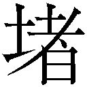

| スチームヘヴン・フリークス (ガガガ文庫) | |
| 伊崎喬助 | |
| (2014) | |
小学館ｅＢｏｏｋｓ
スチームヘヴン・フリークス
伊崎喬助
イラスト 凱
闇夜とは対照的な白い靄が足元を漂っている。
予報によれば今晩はいつもよりも濃いそうだ。靄の正体は霧ではなく、蒸気。昼間、ずっと動き続けていた蒸気機械から吐き出された蒸気が今も消えずに残っていた。何せクラフトは街中にあふれている。排出される蒸気の量もアメリカの都市の中では指折りだ。
ふと立ち止まって懐中時計を見てみると、まだ九時を過ぎたばかり。いつもより早い時間であることを確認し、キース・ブローンは再び靄を蹴って歩き出した。ここは夜のノースサイドの小路のひとつ。石畳がガス灯に照らされてなんとも寂しげに見える。
行く手から誰かが騒いでいるのが聞こえてきて、キースは眉をひそめた。このあたりで酔っ払いは珍しい。
丘陵状に盛り上がったこの地区は街を見下ろす高所にあり、羽撃式飛行機械の発着場であるオーニスポートと、機械を整備するための工房が多いポートエリアだ。街の中でも例外的に低空飛行が認められている場所。昼間は頭上すぐ近くを羽撃式飛行機械が飛びまわるので見ていて爽快というか危なっかしい気分になる。それも昼の間だけの話で、夜になれば工房の技師たちは坂を下って呑みにくり出すのが日常のはずだ。
騒ぎ声がさらに近くなる。はやし立てるような、誰かを不快にさせることを目的とした声。キースは歩きながら考えた──まわり道をするべきか。トラブルに巻き込まれるのはもちろんごめんだし、特に今は仕事がデリケートな時期だ。あまり目立つことはしたくない......と、そこまで考えたときにはもう手遅れだった。
その男たちを見つけたのは、やはり羽撃式飛行機械の工房らしき建物に挟まれた通りで、まず目に付いたのは数人の男。風体からしてモロにチンピラ、いいとこマフィアの下っ端といったところ。上着と帽子を身につけているが、紳士にしてはガラが悪すぎる。そいつらと向かい合っている小柄な人影があるが、こちらに背を向けているので顔は窺えない。背丈と体のラインからして女。古びた革のトランクをさげて釣鐘型のクロッシェ帽をかぶり、男の一人に腕をつかまれている。
「そんなに急いで帰ることねえじゃん。門限はまだだろ？」
チンピラの一人が言った。顔立ちは整っているが、垂れた目と薄い唇からは軽薄そうな印象を受ける。口の端に土色のパイプをくわえ、体格はチンピラどもの中では一番細身で弱そうだ。
しかし集団の主導権はそいつが握っているようで、ほかの連中は男の後ろで追従の笑みを浮かべている。絡まれている女のほうは、腕を引き剝がそうともがいていた。
「いいかいお嬢さん、よく聞けよ？ 俺は親切にも、あんたみたいなよそ者で、行く当てもなくて、何の能力も持たない『色付き』の面倒を見てやるって言ったんだぜ？ ちょっと紳士とダンスを踊るだけ。それでお給料出るの。な？ ツイてると思うだろ？ 俺は思う」
「わたしはそんな仕事はしないって言ってるでしょう！ もうほっといてよ！」
女が甲高い声でわめく。腕をつかんでいた男が、ぱっと手をはなす。女が転倒し、持っていたトランクも転がった。男たちが一斉に笑う。
「まだわからないかなあ、バカだなあ。いい加減、自分の立場を自覚してほしいんだけど」
男が女の帽子をはたいて飛ばす。帽子の中に詰め込まれていた紫と赤のデコレーションに彩られた髪があふれ出した。極彩色の髪。それは彼女がただの人間ではなく、ミスティックであることの証だ。男が女を見下ろして、挑発的な口調で言う。
「......何その目。文句あんの？ いいよ、やってみろよミスティック。お前の能力でさ、ガツンとキツイのお見舞いしてくれよ」
「......このっ！」
女が両手をすり合わせた。彼女の周囲をただよっていた靄が、見えない網に絡めとられたかのように集まりだす。白い靄は凝り固まって、次第に実体を得る──楕円形の、灰色の生き物。手のひらにおさまるくらいのそれを他の生き物にたとえるなら、クラゲに似ていた。
灰色の楕円が情けない様子でふわふわと漂いだしたのを見て、男たちはいよいよ笑い出す。女の肩が震えている──おそらく屈辱と怒りで。
「なあ、何これ？ こいつが俺たちをどうにかしてくれんの？ うわあ、おっかねえ」
おかしくって仕方がない、といった様子の男たちが笑っていられるのは、目の前の女が攻撃的な力を持つミスティックではないからだ。彼女にできるのは、クリーチャーを生み出すだけなのだろう。ドイル式分類法で言うところのＳ型患者。
キースは彼らのところへ早足で歩いていき、女と男たちの間に体を割り込ませる。男たちの顔から笑みが消えて、威嚇と不審の入り混じった表情になる。
「......誰、お前」
パイプをくわえた男が尋ねてくる。キースは答えず、落ちていた帽子をひろって土ぼこりを払い落としてから、女の鮮やかな色の頭に載せてやる。そのとき初めて、彼女が自分よりも年下であることに気がついた。おそらく、まだ十代前半の少女。うるんだ大きな瞳は予想通り、今にも泣き出しそうだった。
キースが少女の派手で綺麗な髪に見とれている間に、男たちがキースと少女をやや遠巻きに取り囲んだ。数は六人。すでにナイフを抜いた気の早い奴もいる。「おい、そんな無粋なもん出すなよ」とリーダー格の、パイプをくわえた男がナイフ男に言う。言いながら、自分は懐から銃を取り出している。
「はい、ご注目！」それは実弾を発射する拳銃ではなく、アンテナのような椀型の銃口を持つ拳銃型のクラフトだ。「レプチューン社製の新型熱線銃でございます！」
生まれた場所をまだ漂っていたクラゲクリーチャーに、パイプ男が椀状の銃口を向けた。そこから真っ赤な熱線が発射されて、ジジッ！ と靄交じりの夜気を灼く。熱線はクラゲを直撃こそしなかったものの、そばをかすめただけでクラゲの体の半分を蒸発させた。
「この火力！ リアクターの性能が従来のものとはくらべものにならないんだってよ！ これこそ現代科学の力だよなあ、オイ！」
パイプ男がはしゃいでいることよりも、キースには少女のほうが気になっていた。真っ二つにされたクラゲが地に落ちてエーテル質に還っていくのを、少女はまるで自分の体の一部が切り裂かれでもしたかのような表情で見下ろしていたからだ。
「ヘイ、どこ見てんだよヒーロー！ 勝負したいんだろう、俺と！ 今さらこいつで撃たれるのは嫌だなんて──」
カウボーイの真似事を始めたパイプ男に向けて、キースは軽く左手を振るった。バルブをひねって圧力はすでに調整済み。コートの左袖の下に隠された装置からワイヤーが打ち出されて、男がくわえるパイプを打ち据える。発射されたワイヤーソーはパイプを斬り飛ばしただけでなく、跳ね上がって男の帽子のツバを切り裂いて装置へと戻った。上着の左ひじにあけた穴から蒸気が吐き出される。男たちは全員が目を丸くしたまま突っ立っていた。
男を侮辱したのが一体何なのかを教えてやるため、キースは左手を振ってみせた。そうして左手首に装着された機械を見せてやる。歯車やピストンがごちゃごちゃと絡まりあった、複雑な蒸気機械を。
「君の熱線銃がぼくを撃ち殺すのが先か、ぼくのワイヤーソーが君の首を切り裂くのが先か。いい勝負になりそうだね」
傷つけるつもりはなかったのだが、圧力の調整を誤っていたらしい。つー、と赤い滴が男の額から垂れた。それに気づいた男はハンカチを取り出して額を押さえる。目をむいてハンカチの赤い染みを見下ろし、いきり立つ仲間たちに言う。
「......お前ら、やめろ」男が後ずさる。そして早くも捨て台詞を吐く。「お前の顔は覚えたからな。お前も、自分が喧嘩を売った相手の顔を忘れんじゃねえぞ」
ワイヤーソーの射程外に出るまでキースの左手から目を離さずにじりじりと下がり、いきなり背を向けると小路の角を曲がって姿を消した。彼の仲間たちはときどき振り返ってはキースをにらみつけ、後を追っていく。「頭おかしいぜ」という捨て台詞がキースの耳にも届いた。
全員が姿を消すまで待ってから、まだ尻をついていた少女に手を貸して立たせてやる。トランクケースも拾ってやり、
「大丈夫かい？」
「......色付きって言われたわ」悔しさをにじませて少女が言う。色付きの髪を帽子の上から押さえつけて「わたしは白人よ。なのに......この街には、どんな差別もないって聞いてたのに」
「その通りだよ。ここには人種、民族、宗教、そういった差別はめったにない。白も黒も黄色も赤もアイリッシュもユダヤ人もムスリムも、それにミスティックも。みんなが平等に暮らして、平等に不快な思いをする。悪口も平等にあるからね。ミスティックに対してなら......魔女、悪魔憑き、治り損ない、病気野郎......」
「やめて」
キースは肩をすくめて歩き出す。少女の小さな手をつかんだまま、先導して歩いていく。少女は持っていたトランクを盾のように構えて、今さらのように尻込みした。
「待って、離して。どこに連れてく気よ」
「君はこの街の人間じゃないんだろう？ だったら、近くにいい場所がある」
「助けてくれたことにはお礼を言うわ。どうもありがとう。でもさっきの人たちにも言ったけど、わたしはいかがわしい仕事には......」
キースが彼女を連れて行こうとしたその場所は本当にすぐ近くだったので、鈍い足取りの少女がさほど足手まといにならずたどり着くことができた。そこからの眺めを見て、少女の抗議も一発で引っ込む。
ベンチが並び、カエデの木が一本あるだけの小さな公園、そこから望めるのはすばらしい夜景。無数のガス灯と、あるいは電気の明かりで輝く街の景色があった。
それは靄の海の中に浮かぶ、夜光虫のきらめきのような幻想的な風景。ダウンタウンは星の光を押し込めたように輝き、摩天楼と呼ぶにふさわしいビル群はこの街最高峰のレネゲイドタワーを中心として、木々に実った果実のような光を掲げている。
街を南北に分ける河の中ごろにかかる巨大な橋、その上には突き出たパイプや煙突から大量の蒸気を吐き出し続ける巨大橋上建築物──ジグボーン大学があって、景色の中では一番の存在感を放つ。この公園からは、それら街の夜景が一息に見下ろせるのだ。
感動で言葉を失った少女の横顔に微笑みかけて、キースは言う。
「ようこそ、合衆国が誇るスチームヘヴン──ビザーバーグへ」
アメリカ合衆国ペンシルベニア州の一都市であるビザーバーグには、蒸気天国という誇るべき呼び名がある。全米でもっともクラフト工房が多く、クラフト技術に関する規制もゆるい街というのがその理由だ。クラフト工房が多いということはすなわち、蒸気車両や羽撃式飛行機械の整備士、技術者、そしてスチームクラフトの発明家が多いということでもある。
一九六一年現在、アメリカはエネルギーのほとんどを重蒸気に頼っており、そのエネルギーソースはフィラデルフィアにあった。二十年ほど前に海軍が行った実験以来、デラウェア川に漂うようになったミアズマがそれだ。ミアズマは「霧」と表現されることもあるが実際はエアロゾルなどではなくエーテル質で、細やかに輝く光の帯のようなもの。文献などでは虹やオーロラに例えられることもある。多色の輝きを持つ点でも虹やオーロラに似ているが、ミアズマの輝きは虹よりもむしろ、水面に浮かぶギラギラした油膜のそれに近い。
デラウェア川に漂うミアズマは、エーテル収束器によって集められた後に加工されて産業用の重蒸気になるが、ミアズマには周囲に無秩序な変生現象を引き起こすという厄介な性質がある。変生現象によって精密機械の部品がクリーチャー化してしまうのは困るので、ミアズマの採集場所に近すぎず、かといって重蒸気の供給に困るほど遠すぎることもないこの街は、重蒸気を動力とする蒸気機械の研究にはうってつけなのだった。そして、発展を続けるこの街にはいろんな人種が集まってくる。肌の色の違いだけでなく、毛髪の色も、また。
「この街で一番いいホテルはどこにあるの？」と少女が言うので、キースはダウンタウンのあるあたりを指してやる。
「イザムバードパレスってホテルがそうだと思う。でも一泊するのだってものすごい値段だよ？」
「ありがとう、どーも」
言って、少女はトランクを引き、さっさと行ってしまう。キースはあわてて後を追った。
「待って、待ってよ。ぼくはキース・ブローン。君は？」
足を止めて、ヒラリーが振り返る。まっすぐな目がキースを見上げた。気の強そうな、しっかりした意思を宿した青い瞳。
「ヒラリー・ホールズ」
「ヒラリー、君は......」
「ストップ。わたしが名乗ったのはあなたに名乗られたからよ。名乗らずにいるのは失礼だと思ったから、それだけ。勘違いしないで。じゃあさようなら」
あんぐりと口を開けているキースを置いて、ヒラリーはまた歩き出した。キースはすぐ我に返って少女を追いかける。
「ヒラリー！ 君みたいな女の子が夜中に一人で歩きまわるなんてあぶないよ！」
「なれなれしくファーストネームで呼ばないでくれるかしら？ 見ず知らずの殿方にエスコートしてもらうよりは安全だわ。さっき助けてくれたのは感謝してる。でも、初対面のあなたは信用できない」
「そんなことないよ、ホラ。どこからどう見ても紳士じゃないか」
フロックコートをひるがえして下のダブルのウェストコートも見せ、ネクタイも引っ張ってみせる。ヒラリーは肩越しにちらと見て、すぐにうんざりした顔になる。どうも駄目らしい。キースは少女の冷たい視線に戸惑いながら、
「で、でもちょっと物足りないよね。あとはステッキとシルクハット、それにガスマスクさえあれば完璧な英国紳士だ。ね？」
「英国紳士、ね。あなたはそれに憧れる無邪気な米国人ってわけ？」ヒラリーはトランクを置くとその上に手をかけて「言っておくけど、今のロンドンの住人でガスマスクをしてる人なんてほとんどいないわよ。よっぽど迷信深いか、懐古趣味でもない限りね。ミアズマ熱はガスマスクじゃ防げないって、誰だって知ってるわ」
ヒラリーは自信たっぷりに言った。キースの予感が確信に変わる。
「ずいぶん詳しいんだね。それにアクセントもぼくらとは違うし......」
「そうね。わたし、イギリスから来たから」
「やっぱり！ いいなあ！ 前から一度、ロンドンに行ってみたかったんだ。螺旋都市ロンドン......世界で初めてミアズマを受け入れた街。伝説的な歴史を持つ世界の中心！」
興奮で多弁になったキースを、ヒラリーは鼻で笑う。
「受け入れた？ そんなんじゃないわ。大英帝国に恨みを持つテロリストたちが勝手に変な儀式やって、あの霧を呼び寄せただけじゃない」
霧、とヒラリーが言ったのを聞いて、キースはうれしそうに頰をゆるめてうなずいた。エーテル質であるミアズマを〝霧〟と表現するのは、英国人ならではだからだ。
十九世紀末のロンドンにミアズマが発生したとき、ロンドン市民はその十年ほど前に起きた大臭気と呼ばれる現象を思い出して、どうせあのときと同じような、汚染されたテムズ川から発生した公害霧だろうと考えた。その上、当時ロンドンで流行っていたコレラの原因はこの霧に違いないとまで誤解した。瘴気という名称は、このときの勘違いに由来する。
手ですくってみればそれが霧ではないことは明らかだったのだが、イギリスではそのときの不正確なイメージが強烈に残っているらしい。今でも英国人はミアズマを指して霧と呼ぶし、ミアズマがロンドンを覆った事件は大濃霧という名で語り継がれている。そして、その霧によって神秘の力を得た者たち──【ミスティック】の呼称もそこから来ているらしい。
「でもイギリス人たちはミアズマの活用法を自分たちで見つけ出したんだろう？ 蒸気機関の技術にミアズマを落とし込むことで新たなエネルギーとなることを発見したんだ。文明崩壊の危機を逆手にとって帝国はさらに栄えた。最高にクールじゃないか」
ヒラリーは一瞬だけまんざらでもなさそうな顔をして、しかしすぐに警戒心を取り戻した。
「じゃあ物知りなあなたに大切な心得を教えてあげるわ、ミスター・ブローン。英国紳士はね、嫌がる女性にしつこく食い下がったりしないの。参考になったかしら？ じゃあね」
見た目よりもずいぶん大人びた口調で話すヒラリーは服装も年相応ではなくて、それだけでなく全体的に高級感もある。だから、キースは彼女がどういう経緯でこの街にやってきたか想像することができた。
「ヒラリー、君は家出人だろう？」
とたん、びっくりした顔でヒラリーは振り返る。そしてすぐに「しまった」という顔になり、次にふてぶてしくも開き直った表情を見せる。
「そうよ。何か文句ある？」精一杯の威勢を作り出して言ってから、好奇心に耐え切れなくなった様子でたずねてくる。「......なんでわかったの？」
「だって、一目でお金持ちの令嬢ってわかる格好してるのに親や付き添いの人間が一人もいないからさ」
「ふうん......なかなかの洞察力ね。ほめてあげる」
「そりゃどうも。でも、最高級のホテルの従業員ならこれくらい軽く見破るだろうね」
「......本当に？」
「ついでにこっそり警察に通報するくらいの機転もきかせると思うよ」
そこまで考えは及んでいなかったようで、ヒラリーは深刻そうな顔で考え込んでいる。その迷いは数秒で晴れたらしく、すぐに芯の強さがおもてに出てきりりとした表情になる──コロコロと顔色が変わるのがこの子の魅力なんだな、とキースは思う。
「......わかったわ。じゃあ中流の、ちょっと上くらいのホテルで今日は我慢しましょう」
「送ってくよ」
「本当にしつこいわね、あなた」
「そう言わずに。さっきみたいなことがあったら困るでしょ？ それより、お金はあるの？」
「当たり前じゃない。先立つものがないと......」
キースに背を向けてせっせと歩いていたヒラリーの足が止まる。トランクを放り出して、両手で体中、服の下を叩いている。
「まさかとは思うけど、財布を......」
言い終わるより先に、ヒラリーが甲高い声で叫んだ。
「......ない！ ないわ！ どうしよう、どこかで落としたんだ......」
どこにも見当たらないと知ると今度はベルベットの手袋をはめた両手を頰にあて、ヒラリーはおろおろと同じ場所を周回し始めた。
「どうしようどうしようどうしよう！ あのお金がないとどこにも泊まれないしどこにも行けない、おうちにも帰れない......」
「じゃあ、うちに泊まるかい？」
「お断り。絶対にイヤ。死んだほうがマシ」
狼狽から打って変わって冷静な顔で言う。まったくもって表情の変化に富んだ少女である。ちなみにキースはちょっとだけ傷ついた。
「じ、じゃあ今晩はどうする気なのさ」
「財布は明日、明るくなってから捜すことにして、今晩はどこか暖かそうなところで夜を明かすわ。野宿くらいどうってことないんだから」
「あー......それはやめたほうがいいと思うな」
言いながら左手のクラフトを起動させて、足元を通りかかっていた小さな影を打ち据える。ギッ、とうめき声をあげて影がひっくり返った。突然のことに身をすくませたヒラリーの目の前に、獲物を拾い上げて見せる。太い八本の足と、げっ歯類のように大きな前歯を持つクリーチャー。蜘蛛が哺乳類になったような見た目だった。
「この街でホームレスを見かけたことは？ 彼らの耳か鼻には必ず、こいつにかじられた痕がある。夜行性で、そろそろ活動時間だね」
「......驚いてなんかいないわよ。クリーチャーくらい、ロンドンにもいたんだから」
そう言いながらもヒラリーは、まん丸に見開いた目をこの生き物から離そうとしない。アメリカでもフィラデルフィアに近い地域でしか見られない種類のクリーチャーなので、螺旋都市からやってきた彼女も初めて見る生物に違いなかった。
「ぼくが言いたいのは、ビザーバーグの夜は決して安全じゃないってこと。この街に来たばかりの君をあまり怖がらせたくはないんだけど、知っておくべきだ。最近この街ではちょっとばかり奇妙な事件が続いてる。殺された人もいるんだ。ほら、こんなのもあるくらいでさ」
ぴくぴく痙攣するクリーチャーを投げ捨てて、キースはポケットから新聞紙の切り抜きを見せる。好奇心の強い性質らしいヒラリーは、興味津々で顔を近づけてそれを読み上げた。
「......【フォーカード事件犯人予想】？ 何これ？」
「新聞社の悪ふざけだよ。フォーカード事件っていうのはさっき言った、奇妙な事件のこと。リストにあるのは、この街の有名人の中から変な がある奴、良くないがある奴、それにがぜんぜんなくて逆に怪しい奴の名前。犯人を当てたら賞金が出るんだってさ、ダービーみたいにね。まあ本当にヤバい奴の名前は無いし、そもそも誰も本気にしちゃいないけど」
がある奴、良くないがある奴、それにがぜんぜんなくて逆に怪しい奴の名前。犯人を当てたら賞金が出るんだってさ、ダービーみたいにね。まあ本当にヤバい奴の名前は無いし、そもそも誰も本気にしちゃいないけど」
「......【バスカヴィル】【シスターＪ】【黄の印】【ロビンソンクルーソー】【ブラスマン】......変な名前ばっかりね」
「みんな二つ名だからね。スチームシーカーって言葉は知ってるかい？」
そう尋ねた瞬間、それまでうさんくさげな目つきだったヒラリーが、目をらんらんと輝かせて顔を上げた。
「もちろん知ってるわ！ イギリスでは探検家や私立探偵がしてるような仕事を、アメリカじゃスチームシーカーっていうカウボーイがやってるって！」
「カウボーイではないけどね。ただのなんでも屋」
「でもわたし、カウボーイが見たかったのよ。彼らが仕事を探しにくるっていう職業案内所を探して歩き回っているうちにこの場所へ迷い込んだの。これに名前を書かれてる人たちはみんなスチームシーカーなの？」
「何人かはね」
そう答えると、ヒラリーは心から楽しそうに紙の切れ端に見入った。キースへの不信感よりも好奇心が勝りつつあるようだ。
「とりあえず、歩きながら話そう。なんにせよ、ここにいつまでもいる理由はないから」
キースが歩き出すと、ヒラリーは新聞に目を落としながらおとなしくついてきた。目の前の興味に釣られて、あっさり従ってしまうあたりは普通の子供だ。
「そのリストの最初の二人は職業案内所に登録してるスチームシーカーだ。まず【バスカヴィル】っていうのは汚れ仕事も平気でやるギャングみたいな奴。でも今はもう街を離れたってだね。【シスターＪ】は昔、《ロミオ》って二つ名のスチームシーカーとコンビを組んでたんだけど......」
「待って、ミスター・ブローン......ひょっとして、シスターＪのＪってジュリエットのＪ？」
「正解。以前は【ロミオとジュリエット】ってコンビのスチームシーカーだったんだってさ。でも今は一人で仕事をしてる。その次の【黄の印】ってやつはミスティックだ。スチームシーカーだって話は聞かないけど、もしかしたら地下の、非合法な職業案内所には登録してるかもしれない。神出鬼没で貴重な本を処分してまわっているらしいから、本の蒐集家からは死神みたいに思われてる。【ロビンソン・クルーソー】はこの街の情報屋ってところかな。まるでたった今まで無人島で暮らしてたような格好をしてるからそう呼ばれてる」
「じゃあ、この【ブラスマン】っていうのは？ 金管男っていうくらいだからきっとジャズミュージシャンなのね」
「音楽の趣味までは知らないけど、そいつは蒸気で動く外骨格──スチームアーマーっていうんだけど、そいつで武装してて、全身が金属の鎧で覆われてるんだ。だから《真鍮男》。他に《サイクロプス》なんて名前で呼ばれたりしてるんだけど......」
「サイクロプス？ どういうこと？」
まるで昔話を聞く子供のような調子でヒラリーが尋ねたとき、二人はちょうど、ある小路を曲がったところだった。曲がった先で、小路をふさぐほどの巨大な影に出くわす。
それは見上げるほどの、七フィートくらいはありそうな大男。全身は金属のプレートで隙間なく覆われ、頭にはヘルメットを装着している。ヘルメットの中央には分厚い強化ガラスによる円形の窓があり、内側から光を放っている。まるで単眼の巨人──ゆえに、サイクロプス。
二人の姿を認識したためか、ヘルメットの光が強くまたたいた。真鍮男のザジはキースの大 よりも太いかもしれないその腕を、ヒラリーに向かって伸ばしてくる。
よりも太いかもしれないその腕を、ヒラリーに向かって伸ばしてくる。
「下がって！」と叫びながら、キースはヒラリーの首根っこをつかんで後ろに引く。ザジの手が空を切る。キースとヒラリーはもちろん驚いていたが、ザジもまた、なぜ二人がここにいるのか理解できないでいるようにも見えた。
しばらく見つめ合った後、最初に行動したのはキースだった。ヒラリーの手を引いて後ろに下がる。ヒラリーは抵抗しなかった。一歩退いて、さらに一歩。三歩目でザジが動いた。二人に向かって歩を進め、ゆっくり追ってくる。
「ヒラリー、トランクはぼくが持とう」隣の少女に呼びかける。「あの、ぼくが言いたいことわかると思うけど......」
張り詰めた表情のままこくんとうなずいたのを確かめる。ヒラリーからトランクを受け取るや否や、身をひるがえして走り出した。ヒラリーも同じく、そして同時にザジも動いていた。
逃げ出した二人の背後から、重い金属の靴底が石畳を打つおそろしい足音が聞こえてくる。理由はわからないが、ザジは二人を追ってきている。ヒラリーが走りながら叫んだ。
「なんで追いかけてくるのよ！ あのリストは悪ふざけなんじゃなかったの!?」
「そのはずなんだけど......」
言いよどんで、キースは肩越しに後ろを振り返った。ザジは思っていたよりもずっと近くまで追い上げてきていた。鈍重そうな見かけによらず、速い。このまま逃げても追いつかれるのは明らかだった。
「ヒラリー！ 道の端でしゃがんでて！」
戦闘を覚悟し、立ち止まって振り返る。トランクはヒラリーに押し返した。
「逃げてもいいけど遠くに行きすぎないでくれ！ 守れないから！」
ヒラリーは二つの指示の中間くらいの行動をとった。キースはまず両手の防刃グローブがしっかり手に吸い付いていることを確認、左手首の腕輪型のクラフトからワイヤーソーを引き出す。戦闘行動に出る前に、一応警告。
「止まれザジ！ それ以上近づけば攻撃するぞ！」
それ以上、と言ったあたりですでにザジは殴りかかってきている。キースは引き伸ばして張りつめたワイヤーソーで相手の腕を側面から引っ掛けて、パンチの軌道をそらす。
ガリガリと耳障りな音を盛大に立てて、アーマーの表面をワイヤーソーが削っていく。さらにワイヤーソーを繰り出して素早く巻きつけ、ザジの腕を絡めとった。
「動くな、動けば腕を切断する！」
言ってみたものの、そんなことは不可能だとわかっていた。スチームアーマーというのは、普通なら動けないほどの重量を持つ重厚な鎧を重蒸気の力で動かし、着用者の活動を補助するクラフト──というより兵器。頑丈なものなら空爆にだって平気で耐える。
ザジはキースのハッタリなどお構いなしに、ワイヤーソーの絡まった腕を無造作に振り回した。その瞬間、キースの脳裏をよぎったのは、クラフトを譲ってくれたドクターの言葉──『こいつを扱う上で最も危険な事態は、このワイヤーウィンチよりも強力な出力を持つ機械にワイヤーが巻き込まれてしまうことだ。一度繰り出したワイヤーを切断する機能はついていないからね。蒸気機関車の車輪に巻き込まれでもしたら、絡まったワイヤーをほどくか車輪を切断するかしないと永遠に引きずり回されるから気をつけたまえ』──強力な出力を持つ機械。たとえばスチームアーマーのような。
「うわあああ！」
ワイヤーに引っ張られた体が宙を舞って、キースは情けない悲鳴をあげた。スチームアーマーの持つすさまじいパワーは、キースの体を片手で軽々と振り回している。
振り回されながら、キースはザジの腕を縛るワイヤーをなんとか手繰ってほどいた。束縛が解けたことにより、遠心力でキースの体が飛ばされる。地面にぶつかる寸前になんとか受身をとって起き上がると、バランスをとり損ねたのかザジもひっくり返っている。
「ミスター・ブローン！」ぐらぐら揺れる目で声のしたほうを見ると、少し離れた場所からヒラリーが手招きをしている。「こっちに来て！ 早く！」
酔っ払った三半規管に喝を入れ、なんとか立ち上がってヒラリーのいるほうへ向かう。ヒラリーはキースも知らない路地の一つを見つけてそこへ入っていった。道幅は非常に狭く、キースは横歩きになってヒラリーについていく。
「ここならあいつは追ってこれないでしょ？」
「いい目の付けどころだよヒラリー。このまま逃げよう」
「そんなことよりこれを持ってくれるかしら、紳士さん。重たくって、もう！」
トランクを受け取り、路地を出た。そこもさっきの場所とたいして変わらず、工房と、飛行機械が飛び立つためのオーニスポートに囲まれた人気のない路地だ。
「もっと人の目のある大通りに出たほうがいい。ヒラリー、ぼくについてきて」
「何をあわててるのよ。あいつは絶対にここを通れっこないわ。あの巨体じゃ、鎧を脱いでも無理なんじゃないかしら」
「そうじゃなくてだね、あいつはこの街のなんでも屋、スチームシーカーなんだ。土地勘がある。回り道をしてでも追ってくるかも......」
そのとき巨大な金属の塊が工房の塀を飛び越えて、立ち話をしている二人の少し後ろに着地した。脚部の装甲を軋ませながら、ザジはゆっくりと顔を上げる。二人の姿を捉え、ヘルメットの丸い窓が光を強くする。
「......ショートカットしてくる可能性はぼくも考えなかったな」
キースはヒラリーの手を摑んで駆け出した。後ろからはおそろしく大きな、しかし決して鈍重ではない足音が追ってくる。頑丈で怪力でしかも速い──反則だろう、こんな怪物！
できるだけ狭い通りを選びながら二人は逃げ続けて、次第に大通りへと近づいてきていた。しかし例の足音はいまだに背後から聞こえてきている。
「ま、まだ追ってくるの......？」
驚いたことに、ザジは人目を気にする様子を一切見せなかった。襲撃者の常として、人通りの多い場所は嫌がるだろうというキースの期待は外れたことになる。
そして何よりキースが驚いたのはザジのスタミナだった。鎧を着込んであんなに走り回ったのに、スピードが少しも衰えていない。アーマーで身体機能を強化しているとはいえ、いったいどんな体力をしているのか。内臓まで機械でできてるんじゃないかと疑いたくなる。
「ヒラリー、タクシーは知ってる？」
「バカにしないでくれる？ タクシーくらい知ってるわよ！」
「この先の通りによく停まってるんだ。先に行って、捕まえててくれ」
「あなたは？」
「大通りであんなのが暴れたら、巻き込まれて怪我人が出るかもしれない。ここで止める」
ヒラリーは眉を下げて心細そうにキースを見て、しかしすぐに駆け出した。
キースはもう一度、あの怪物に立ち向かう覚悟を決めていた。ここはよく見知った通りだ。ここにある障害物はすべて把握している。大量のワイヤーを見えないように張り巡らせて、しかし一部はわざと見えやすく張り、ザジを待つ──すぐに来た。
罠を張ってあるとはいえあの巨体が突っ込んでくるのを待つのはかなりの恐怖で、キースは勇気を振り絞ってそれに耐える。なのに、ザジは急に立ち止まった。そのまま動かない。
手の届くような距離では無い。しかし、ザジの機敏さを考えれば一瞬で詰められる距離。正面から待ち受けているキースを警戒したのか、あるいはヒラリーの姿がないことを不審に思ったのか。罠を見破られたわけではないことをキースは祈った。
「ミスター・ブローン！」
ヒラリーが叫んでいるのが聞こえた。肩越しに見れば、タクシーの後部座席を開け放してキースを呼んでいる。二人の逃走手段に気づいたザジは焦ったようだ。意を決して向かってくる。それを待っていた。
張り巡らせたワイヤーを防刃グローブの手でつかみ、一気に引き上げる。収束したワイヤーの輪がザジの右足首に巻きついて、巨体がぐらついた。手にかかる重みにキースもぐらつきそうになるが、歯を食いしばって耐える。この奇襲が唯一の勝機。ザジに体勢を立て直されたら力勝負で勝ち目はない。
バランスを崩したザジが前かがみになる。その位置からなら見えるはずだ──数本のワイヤーをより合わせて、見えやすくしたワイヤーが。
あやうく転びそうなとき目の前に、そんなものがあればどうするか？
ザジは巨大な手で罠のワイヤーを摑んで体を支えた。そして、それを力任せに引っ張った。足に巻き付いたワイヤーを力任せに引きちぎろうとしたのかもしれないが、そのワイヤーが絡みついているのはザジの足ではなく、道の脇にある鉄製の、重たいベンチだ。
ザジ自身の怪力で引っ張られたベンチは、キースの狙い通りザジを直撃した。予想していなかっただろう角度からの衝撃で、ザジが横倒しに倒れる。
「よしっ」と、喜んだのもつかの間。キースは急いでワイヤーを巻き取り回収すると、ヒラリーの待つタクシーの後部座席へと駆け込んだ。「とりあえず出してくれ、急いで！」
後尾から蒸気を排出しながら車が動き出す。気になって窓ガラス越しにザジの姿を捜せば、まだ倒れたままだった。脳震盪でも起こしたのかもしれない。
「ああもう、最悪！ なんなのよこの街は！ チンピラには侮辱されるし財布は落とすし殺人鬼には追いかけられるし！」
「まだ彼がフォーカード事件の犯人と決まったわけじゃあ......」
「今夜決まったわ！」
ヒラリーは不機嫌にそう決めつけたが、キースにはそうは思えなかった。第二次世界大戦の戦場で善と悪の組織が暗闘を繰り広げたように、スチームシーカーにも善玉と悪玉がいる。ザジはどちらかと言えば前者だ。
「でも、彼らが犯罪行為に手を貸してるなんて聞いたことないんだよな......」
「彼ら？ あいつ、仲間がいるの？」
ヒラリーは不安そうに窓の外を探した。その仲間とやらがまた地響きを立てて追ってこないか心配しているのだろう。
「相棒が一人、ね。彼はザジみたいなタイプじゃないから安心していいよ。もっと裏でコソコソと陰謀をめぐらせるタイプだ」
ふうん、とヒラリーは一応安心した様子。しかし、彼の存在を思い出したキースは逆に不安を覚えていた。ザジが追ってきている間、彼はいったいどこで何をしていたのだろう。ある意味、スチームアーマーを着た大男なんかよりもよほど敵にまわしたくない、あの男。
そんなことを考えるキースの隣では、ヒラリーが怒りから醒めて頭を抱えている。
「......これからどうしよう」
「とりあえず、タクシーの代金はぼくが払うことになるだろうね」
「............」
「それと、やっぱり今日はうちに泊まりなよ。ぼくだって君みたいな女の子の弱みにつけこんで何かするほど落ちぶれちゃいない。なんだったら、ロンドンまでの飛行船の運賃を融通してあげてもいい」
「......それじゃあ足りないわ」観念したように、ヒラリーは頭を座席にもたれかけさせて言う。「わたしはロンドン娘じゃないもの。大英帝国の人間だけど......もっと、ずっと田舎の出なの」
「田舎って......ウェールズとかスコットランドとか？」
「アメリカ人が想像するブリテンの田舎ってその二つなの？ まあ間違っちゃいないし、実際そんなところ。ちっぽけで、本当に小さな......静かな町。町の人口も少なくて、ミアズマ熱にかかった人は何人かいたけど、みんな初期症状だけで普通に治っちゃった。ミスティックになったのはわたしだけ。わたしの髪の色がブロンドから赤と紫に変わってから、町の人たちの態度が変わった。あそこの家は悪魔崇拝をやってるって、根も葉もないことをしだした」
「......よくあることだよ。ミスティックへの無知と偏見。アメリカだって、戦争が起きる前はもっとひどかったんだ」
十六年前に終わった戦争ではミスティックの部隊が世界の平和と自由のために戦い、大いに活躍した。そのため都会ではすでにミスティックへの偏見はずいぶん少なくなっていて、それどころかミスティックを擁護する思想のポストダーウィニズムが流行を終えつつある。だが、地方によってはまだまだ迷信の力が根強く残っているらしい。
「そうね。仕方ないことなんだってわたしもあきらめてたわ。だけど、家族を侮辱されて頭にきちゃった。近所の男の子が、本当にひどいことを言ったの。だから、こいつらをけしかけて死ぬほど怖がらせてやった」
ヒラリーの膝のあたりの空気が凝り固まり、例のひし形のクラゲが生まれる。その変生現象にタクシーの座席表面の布地が巻き込まれ、少しはがれた。ミスティックと呼ばれる人々だけが持つ、そして一部の人々からは恐れられる超常の能力。
ミスティックは、ミアズマが初めて地上にあらわれた十九世紀末ごろから世界中で確認されるようになった「ミアズマ熱第三症状患者」と呼ばれる病人たちだ。この病気は初期段階では百人いれば九十九人は何事もなく治癒し、一度治ると免疫を獲得するため二度と罹患することはない。
しかし１パーセント以下の確率によって第二段階に至った患者は、さらに42パーセントの確率で治療不可能な第三段階に進行。体毛がけばけばしい色へ変質し、ミスティックとなる。
それは物理法則を超えた力を使う超能力者、あるいは魔術師。しかし彼らすべてが超能力の使い手というわけではなく、小規模な変生現象しか起こせない者もいた。
「さっきのゴロツキはこんなのぜんぜん怖がらなかったけど、その男の子には効果てきめんだった。わたしが悪魔を呼び出したって本気で信じちゃって、恐怖で失禁と嘔吐と同時に呼吸困難まで起こして死にかけたの。もう町中が大騒ぎになったわ。わたしが男の子に呪いをかけたって。でもあながち間違いじゃないかもしれないわね」
「それで町にいられなくなった？」
「ええ。お金とパスポートと、あとママの服をいくつか持ち出して逃げてきたの。ロンドンから飛行船に乗ってボルチモアまで来て、そこから鉄道でこの街に来たわ」
呆れるほかなかった。家出少女が国外に飛ぶのはヨーロッパでは当たり前なのか。
「だって本当に殺されかねない雰囲気だったんだもの。パパとママは心配してるかもしれないけど、わたしがリンチに遭うとか屋敷に火をつけられるとかするよりマシだと思うわ」
「それにしてもなんでわざわざここまで？ 家出先はロンドンじゃダメだったの？」
「ロンドンだったら見つかって連れ戻されるかもしれないじゃない。いい機会だったから、世界中の面白そうな場所を見て回ろうと思ったの。最初がボルチモア、次がこの街。あとはニューヨークに行って、街を守るヒーローにも会いたかった......でも旅はここで終わりみたい」
天井を見つめながら、ヒラリーは簡単な身の上話を語り終えた。背もたれから頭を離してうつむき、小さな声で言い添える。「また助けてくれてありがとう、ミスター・ブローン」
キースは、すっかりおとなしくなってしまったヒラリーの横顔を見つめる。大人みたいな口ぶりの、しかしまだ子供と呼べる年頃の少女。そんな子供が海を越えてこの街にやってきた。そうして得られたのがひどい思い出だけというのは、とても気の毒に思えた。
「ぼくは綺麗で好きだけどな、その髪」
「......え？」
「ヒラリー、ほら」キースは窓の外の通りを指差した。「あれを見てごらん」
ヒラリーがそちらに目をやる。疲れた瞳がだんだんと見開かれていく。
「カウボーイだわ！」
ヒラリーの言うとおりの人物が通りを歩いていた。テンガロンハットにダスターコート、つま先の尖ったブーツのかかとには拍車までついている。コートの脇にはこれ見よがしにガンベルトが吊ってあった。西部劇と違うのは、コートの首元と袖口からクラフトの一部らしいパイプが突き出していて、片目をアイパッチ型のクラフトで覆っていることくらいだ。
「本当にいたんだ！ すごい！」
「南部のスチームシーカーがよくやるスタイルだよ。この街じゃ珍しいけど、向こうからこっちに移ってきた人もいるしね」
「見て見て！ わたしが手を振ったら忌ま忌ましそうにツバを吐いたわ！ まるで映画みたい！」
街の通りを見て楽しげにはしゃぐ少女をながめ、キースは穏やかな微笑を浮かべる。そして運転手に自宅の家の住所を告げると、できるだけにぎやかな道を選ぶように頼んだ。
◆
人だかりができている。通行人たちは興味深げに、だが距離を置いて路上に横たわるそれを見下ろしている。「死んでるのかしら」「見たことあるぜ、あれはスチームシーカーだ」「なんで倒れてるの？」「撃たれたらしい」「まさかあの事件か？」「フォーカード？」「でも犯人は捕まったって......」「それはまだ一人だけだろう。例の......」
ザジはゆっくりと起き上がった。
人々が一斉にあとずさりして輪を広げる。ザジは周囲の人垣をまったく意に介さない様子で歩き出す。その進行方向にいた野次馬たちは近づいてくる巨体を目にして、わっと逃げ出した。
黄色い光を放ち続けるヘルメットの単眼は、まっすぐに前を見ている。自分が取り逃がした二人組を追って、ザジは歩みを続ける。
◆
郊外にあるその屋敷を見たとき、ヒラリーはまずその古くささに驚いた。故郷の町も古さにかけてはなかなかのものだったが、ここまで古ぼけた家は少ないはずだ。
英国貴族のカントリーハウスを意識したらしいチューダー様式の屋敷だが、レンガを積んだ塀は一部が崩れ、門扉は倒れて庭の隅に押し込まれている。肝心の屋敷のほうも、二階建ての壁は一面が蔦に覆われていた。
「中は見た目ほど悪くないよ、うん」とキースは言うが、ちっとも信用できなかった。鍵を渡されたヒラリーは運転手と話をしているキースを置いて先に鍵を開け、玄関をくぐる。
屋敷内の明かりは蠟燭でもガスでもなく電燈で、一応ヒラリーは安心した。伸び放題の雑草に覆われた庭のどこかに発電機があるに違いない。明かりをつけてみれば確かに内装は綺麗に整っていて、そこそこの高級ホテルをいくらか野暮ったくしたような印象だった。
「ね？ 言ったとおりでしょ？」
いつの間にか、ヒラリーのトランクを持ったキースが後ろに立っていた。
「ま、思っていたほど悪くはないわ」
「君の部屋を用意してくるよ。それまで適当にくつろいでてくれ」
「探検していい？」
「もちろん」
許可を得たヒラリーは、さっそく屋敷を見て回ることにした。
部屋はいくつもあるが、そのほとんどが使われていないらしい。いろんな家具雑具がめちゃくちゃに詰まれて足の踏み場もない部屋もあり、キースはどうやってこの屋敷を管理しているのだろうと不思議に思う。門衛や庭師がいないだけじゃなく、メイドや執事もいないなんて。
好奇心のままに廊下を歩くヒラリーの視界の端を、黒い影がかすめた。それに、足音も。
「キース？」
声をかけてみても返事はない。もう一度大きな声で呼んでみると、まったく見当違いの玄関の方角から「どうかした？」という声が聞こえてきた。
「ううん！ なんでもない！ なんでもないわ......」
そう言ってヒラリーは影を追う。見間違いかもしれないし、陰気で無口なメイドか執事がいるのかもしれない。なんにせよ、お化けにおびえる子供だと思われるのはゴメンだ。
ヒラリーが角を曲がった瞬間、頭上から床板の軋む音がした。二階だ。やはり誰かいる。胸の前でぎゅっと拳を握りしめて、ヒラリーは階段が軋まないよう慎重に二階へと上がっていく。恐る恐る顔を出して、二階の廊下を見通した──誰もいなかった。しかし、廊下の一番奥の部屋の扉が、開きっぱなしになっている。
ごくりと唾を飲み込んだヒラリーは、階段からい上がるように二階の廊下に出た。物音は聞こえない。あの部屋に誰かいるのだろうか？ それともキースがドアを閉め忘れただけ？
足音を忍ばせてその部屋へと向かう。壁に張りついて、思い切って中をのぞきこんだ。
「誰もいない......わよね」
どうやらここは書斎らしい。部屋の真ん中には机があり、向かって右側には退屈そうな本がぎっしり詰め込まれた本棚、左側の壁には変な模様のタペストリーが掛けられている。
部屋の中央に置かれた高級感漂うオーク材の机の表面を撫でてみて、ヒラリーはそれが遠く離れた我が家にある、父親の書斎机にそっくりであることを認めてうれしそうに目を輝かせた。
「あなたっていい趣味してるわ、キース......でも、」机から離れて壁のタペストリーへと歩み寄る。「これだけはサイテー。部屋の雰囲気にまったく合ってないもの」
せめて長さくらい合わせなさいよ、とつぶやいて、ヒラリーは床にだらしなく垂れたタペストリーの端を摑み、ぐいと引っぱる。壁から剝ぎ取るつもりだったのに、何かがひっかかった。
「......？」
よく見ればタペストリーがかけられていた壁には縦一筋のわずかな隙間が空いていて、タペストリーの端がそこに挟まれていた。隙間は床から天井近くまで伸びている。小首をかしげていたヒラリーは、やがてその正体に気がついた。
「......扉だわ、隠し扉！」
隙間に指を突っ込んで開けようとした──開かない。どうやら上に留め具か何かがあるようだが、ヒラリーの背丈では届きそうにない。ヒラリーは椅子を求めて書斎机のほうを振り返る。
紙袋を片手に、机に腰かけている男がいた。
「......え」
「てっきり本棚が怪しいと思ってたんだが、そっちが正解か」
「だ、誰っ!?」
叫びながらヒラリーは、背後のタペストリーに背中をくっつけた。そして素早く部屋の周囲を見回して武器になりそうなものを探す──窓の足下に空きビンがあるのを見つけて飛びついた。ボトルネックをつかんで底を壁に叩きつけ、割れてとがった切っ先を男に向ける。
男は驚いた様子──というよりどちらかというと呆れた様子で、
「......最近の学校は子供にそういうことまで教えてるのか？」
「映画で見たのよ！ わたしに近づいたら、ボスの愛人に手を出して刺されたギャングみたいにしてやるんだから！」
「もうちょっと教養のある映画を見たほうがいいと思うな。だいたい、俺はまだ何もしてない」
「じゃあ......あなたはキースのお友達なの？ それとも家族？」
「いや。他人」
「わかったわ。絶対に近寄らないで」
屋敷への不法侵入者──だがそれ以前に、その男の風体はあまりにも怪しすぎた。
年齢は見たところキースと同じか少し若いくらい。顔のつくりだけなら十代に見えなくもないが、鉄によく似た灰色の瞳のせいか、ヒラリーの親くらいの年齢にも見える。手にしている紙袋の中身はピーナッツらしくって、殻を床に散らしながら無邪気に豆をかじっている姿は妙に子供っぽい。
くたびれた革の外套を洒脱に着こなしていて、どことなく気品のようなものも感じられた。左耳には耳朶を覆うほどの大きさの、やけにとげとげしい形をしたピアスがあり、さらに頭の左半分を覆っているのはできそこないのヘルメットのように見える機械──クラフトだ。
ベルトで頭に固定されたそのクラフトにはレンズが三つついていて、男がそれをずり下げて左眼に当てたので、ヒラリーにもそれがゴーグルの一種らしいとわかった。もっとも、大きすぎてゴーグルというより顔の左半分を覆う仮面のようだったが。
機械の半顔を持つ男は机からおりて、床に散らばった豆ガラを踏み砕きながら歩いてくる。
「ち、近づいたら──」
ヒラリーは震え声で言いかけたが、男の目的はヒラリーではなかった。隠し扉の前に来ると、壁の上部に手を伸ばしてそこにあったらしい留め具を外し、扉を開く。
扉の向こうは扉の色と同じ真っ黒な空間。しかしよく見れば、足下に下へ続く階段がある。
ヒラリーはその闇に目を落とし、次に男の顔を見上げた。顔の右半分──ゴーグルのない生身の顔だけが、得意げにニヤッと笑う。左右非対称の笑み。
「この先に興味あるんだろ？ 一緒に行くか？」
ヒラリーは答えずに黙っていた。この男が信用すべき人間にはちっとも見えないからだ。
「そうか。じゃあ俺はひとりで行こう」
実際に男が階段を下りていこうとしたのを見て、ヒラリーはほんの一瞬だけ躊躇した。だが、
「待って！ あなたはいったいなんなの？」
男は再び左右非対称な笑みをヒラリーに向ける。最初から、ヒラリーがそう言い出すことがわかってたかのように。
「俺はニコラス・ハルトゼーカー。仕事上の名前は《奇術師》だ。ニコラス・ザ・ジャグラー。俺のことを呼ぶときは『ニコラス』でも『ジャグラー』でもどちらでもいい。お互いに誕生日をお祝いするくらい仲良くなれたら『ニコ』って呼んでくれてもかまわない」
そんな呼び方をする日はこの先、絶対に来ないだろうなとヒラリーは思った。
「ただし......俺の前で『半分』って言葉を口にするのは禁止だ」
ニコラスが付け加えた奇妙なルールを聞いて、ヒラリーは眉をひそめて尋ねる。
「半分って言葉を使ったらどうなるの？」
「俺が不愉快な気持ちになる」
じゃあハーフマスクみたいなゴーグルなんてつけなきゃいいのに、と思いはしたが、さすがにそれを口にして男を挑発するような真似はしなかった。それに、聞いてみたいことがあった。
「......０・５は？」
「まあいい」
「４分の２」
「大目に見る」
「なのに半分はダメなの？」
「絶対ダメ。──さて、俺は名乗ったぞ。次はお前のことを聞かせてもらおう。誰お前」
「ヒラリー・ホールズよ」
「......それだけ？ アピールしたい特技とか魅力的なチャームポイントはないのか？ あ、待て。スリーサイズは言わなくていい。期待できそうにないし」
「し、失礼だわ！ レディに向かって！」
紳士にあるまじき非礼にヒラリーが顔を真っ赤にして憤る。ニコラスと名乗った男は少女のプライドを傷つけたことを気にも留めず「じゃ、俺は先に行ってるから」と、まるでヒラリーが後を追ってくることが決定事項のように言って、階段を下りていった。
一人とり残されたヒラリーは、困ったような顔で階段と部屋の出口を何度も見比べた。ニコラスを追うか、キースに言いつけに行くか──。
しかし結局、ヒラリーは割れたビンを強く握りしめて、階段を下りていった。
階段はどういうわけか、照明の類いが一切ない真っ暗な空間になっていた。壁に手をつきながら、一歩ずつ確かめて下りていくヒラリーはランタンを持ってくるべきだったと悔やむ......と、足裏で硬い何かを踏み砕く感触に小さく悲鳴をあげた。そしてすぐにそれがピーナッツの殻であることに気がつき、ニコラスとかいう男への悪態をつぶやきながら下に向かった。
やがて階段が終わると、ヒラリーはまた新たな扉に出くわしていた。ドアの前に立つニコラスのゴーグルにはライトがついているらしく、そこから放たれる光が頑丈そうな鉄の扉を照らし出している。
「これは......」
「地下室だ」
「地下？ ここって地下なの？」
「これ持ってろ」
下りてきたばかりのヒラリーに紙袋を押しつけて、ニコラスはドアノブの前にしゃがみ込む。
ライトで鍵穴を照らしながら、どこからか針金を取り出して鍵穴に突っ込んだ。こじ開けるつもりらしい。ヒラリーはこの犯罪行為こそ止めなくてはなるまいと思い、割れビンをニコラスの後頭部に向ける。
「ちょっと！ あなた、人の家の──」
ニコラスの左手がぐるんと後ろに伸びて、ヒラリーの持つビンをつかんだ。そしてあっさりとヒラリーの手からビンを奪い取り、無造作に床に叩きつけた。
「──部屋の、鍵......」
砕けて床に散らばったガラスの破片を見下ろして、ヒラリーはようやく理解する──武器を失ったのだ。
「お前の物語は何だと思う？」
「......え？」
「物語だよ、物語。お前が入り込んでしまった物語の、題名だ」
言っていることの意味がちっともわからなくて、ヒラリーは返す言葉が見つからない。
「わからない？ なら教えてやるよ。お前の物語は、王子様が助けにきてくれる白雪姫やシンデレラじゃない。ここにあるのはロマンチックな出会いじゃなくて、悪意に満ちた必然だ」
そうこうしてるうちにバネのはねる音がして鍵が外れた。扉が開く、
「お前の物語のタイトル──それは『青髭』さ。この屋敷は呪われた青髭の城、この扉は決して開けてはいけない秘密の扉。さあ、入れよヒラリー・ホールズ」
ヒラリーの手をニコラスがつかんで、地下室の中に招き入れた。とたんに妙な生臭さが鼻をついて、ヒラリーはまずそれに面食らった。ニコラスが部屋のどこかにあったらしい照明のスイッチを入れて、中の様子が明らかになる。
部屋の広さは仲の良い男女がなんとかダンスを踊れるくらい。天井からは黒光りするフックと鎖がいくつかぶら下がり、部屋の中央には作業台がある。台はやけに赤黒く汚れていて、何かの薬品らしい液体が入ったビンと工具箱が置かれていた。
ヒラリーが悲鳴を上げかけたのは、部屋の正面に人間が立っていると思ったからだ。だが、それはよく見れば胸から上だけのマネキンで、ヒラリーはなんとか悲鳴を飲み込んだ。
「な、何よ、ただのマネキンじゃない」
言いながらカツラから目をそらす。マネキンの頭部には赤と青の奇妙な柄のカツラが載せられていたのだが、どういうわけかヒラリーはそのカツラに猛烈な嫌悪を覚えたのだ。
一方のニコラスはゴーグルにある三つ目レンズをぐるぐると回転させて、マネキンのカツラにピントを合わせている。躊躇なくマネキンに向かって歩いていくが、ヒラリーはニコラスと一緒に気味の悪いカツラに近づく気にはなれなかった。
代わりにヒラリーは、部屋の中央の作業台に近づいた。薬品入りのビンは妙な色で、とても触ってみようとは思えない。そこで工具箱を調べようとして、ヒラリーはその陰に何かを見つけた。黒いスクラップブックだ。手に取ってみる。
「な、何よこれ......！」
ぬめっとした感触に悲鳴を上げて、ヒラリーはスクラップブックを取り落とす。その背面には赤黒い泥のようなものが、べったりとこびりついていた。この部屋に入ってからずっとつきまとっていた生臭さを凝縮させたような悪臭──そのにおいはたとえるなら、鉄 に似ていた。
に似ていた。
ニコラスはヒラリーの悲鳴に振り返りもせず、マネキンのカラフルな毛髪を調べながら言う。
「見たほうがいい。お前はすでに『事件』の当事者なんだから。ここまできて何も知らないのはかえって危険だ」
ここが故郷の町だったなら、ヒラリーは今すぐ家に逃げ帰っていただろう。おぞけを振るいながらも、ヒラリーはおそるおそる指先でスクラップブックを拾い上げて中を開く。
そこに貼り付けられていたのはいくつもの新聞記事の切り抜き。そのすべてが、ある一連の事件についての記事だった。
──フォーカード事件。事件についてほとんど何も知らないヒラリーだったが、大量の切り抜き記事を斜め読みすることで事件の大筋をつかむことができた。
「フォーカード」とは新聞社が勝手につけた名前で、それぞれがまったく異なる四つの事件の総称らしい。【切り裂きジャック】【バネ足ジャック】【覆面ジャック】【暴風ジャック】──そう呼ばれる四人の犯罪者たちはほとんど同時期に現れて、ビザーバーグを騒がせた。【Ｊ】が四人で４カード、というわけだ。
四人のジャックのうち【バネ足ジャック】の名で呼ばれた犯罪者だけはすでに逮捕されているが、残る三人はいまだ野放しで、特に何人もの死者を出している猟奇殺人鬼・切り裂きジャックが逮捕されないことで警察を責める記事が多かった。
切り裂きジャックの被害者たちは、全員が鋭い刃物によって斬り殺されている。遺体の一部は持ち去られて今も見つかっていない。十九世紀のロンドンに現れた、あの伝説的な連続殺人鬼を思わせる手口から、この殺人鬼は《切り裂きジャック》の名で呼ばれるようになった。
それに、遺体の発見現場には必ず【ジャック】の名前を用いた血文字のメッセージが残されているのも、この殺人鬼の特徴のひとつ。【ジャックへのささげもの】【彼女の頭はジャックの取り分】【ジャックのために】......犯行声明とも呼べない意味不明なものばかり。そして、決定的な記述をヒラリーは声に出して読み上げる。
「これまでの犠牲者は皆、ミスティックの女性......」
見たくはなかったが、ちゃんと確かめる必要があった。地下室の奥にある、カツラをかぶった胸像サイズのマネキン。頭にかぶったカツラは青と赤のけばけばしい派手な色彩で、その柄には見覚えがある。
「ね、ねえ、これって──」
「綺麗だろう？」
階段のほうから声がして、ヒラリーは心臓が止まりそうになった。
「そこまで作るのにけっこう苦労したんだよ。材料の選別と仕入れ、解体と縫合。頭の皮を剝ぐのってけっこう難しくてさ、皮と骨の間には筋肉も脂肪もほとんどないから......最初は何度か失敗したけど、今ではうまくやれる。採取と保存に使うべき薬の種類もわかってきた」
血生臭い解説を続ける声は、恐怖で動けないヒラリーのすぐ後ろまで近づいてきていた。 自分の髪に触れる指の感触に、ヒラリーは嗚咽に似た声を漏らす。
「美しい......普通の人間の体毛には......いや、ほかのどんな生き物も持ちえない色彩だ。ぼくはこれを自分のものにしたかった。それも自分の好きな模様でね」
今のヒラリーには、その意味がわかる。青地に交錯する赤と白の帯──イギリス国旗。大英帝国が誇るユニオンジャック。
「あと少しで完成する。必要なのは、あとほんのちょっぴりの赤......」
キースの両手がヒラリーの肩を鷲づかみにして「ひっ」と声が漏れた。キースの顔がすぐ近くにある。ヒラリーに──ではなく、ヒラリーの頭髪に見入っている。こんな異常な視線を向けられたのは生まれて初めてで、ヒラリーは恐怖で身をすくませていることしかできなかった。
「ま、素材は後でゆっくり吟味するとして──ここで何をしているんだ、《奇術師》？」
「あれ？ 知り合いだっけ？」
ゴーグルのレンズが回転し、ピントを調節。近くのカツラから遠くのキースへ。
「いいや、初対面だ。だけど君はこの街の有名人だからね、知ってるよ。ニコラス・ザ・ジャグラー──《真鍮男》ザジの相棒」
「相棒ですって？」
ヒラリーがかすれ声で言った。さらにキースがぐいとヒラリーを抱き寄せたので、ヒラリーはさらにかすれ声を出した。嫌がるその耳元でキースがささやく。
「《バスカーズ》......こいつらはコンビで動くスチームシーカーなのさ。《真鍮》の男と《奇術師》、二人組の道化師だって。くっだらないよな。警察の手先になることもある薄汚い連中だ......誰がこいつを招き入れたんだろうね。君か、ヒラリー？ んん？」
「実はそうなんだ。俺はやめたほうがいいって言ったんだけど」とニコラスが責任転嫁を始めたので、ヒラリーは自分が殺人鬼の手の中にいることも忘れて「この恥知らず！」と叫んだ。
「それで？ この秘密の地下室を突き止めてどうするつもりだ？ ぼくを捕まえるのか？」
「ああ、ここには警察への捜査協力でやってきたんだが......」
ヒラリーのすぐ耳元で機械の動き出す音がした。音の源はキースの左手首。あのワイヤーソーを打ち出すクラフトがいつでもニコラスを切り裂けるよう準備を始めたのだ。
「......気が進まないな。最近の警察は俺たちをこき使って感謝もないし。今回もそうだろうな。だから、別に見逃してやってもいい」
「囚われの女の子を助けてヒーローになるつもりはないと？」
「ヒーローは嫌いなんだ。あいつらとは前に揉めたから」
「信じてもいいのかな？」
「それはそっちの問題だろ。でも条件がある」
これまでのやり取りを聞いて絶望的な気分になっていたヒラリーは最後の希望にすがろうとニコラスを見つめ、キースは警戒心もあらわに眉間に皺を寄せて尋ねる。
「条件とは？」
「その子が持ってるピーナッツの袋は俺のだから。返してくれ」
一体こいつは何を言っているんだとヒラリーは心から思った。自分がニコラスからあずかったピーナッツの袋を握りしめていたことを思い出したのは、キースに袋を奪われてからだった。
中身を一目見たキースは頰を緩めて、ニコラスにそれを投げてよこす。
「帰っていい。言っておくけど、後から警察を連れてきても無駄だよ。ここはすぐに引き払って、ほかのねぐらに移るつもりだから」
「そんな真似はしないさ、兄弟。なんなら友情の証に一つやろうか？」
「いや、ぼくは──」
パンッ、と弾けるような音がして、キースの声がとつぜん途切れた。その音はおそらく爆発音だったはずだ。爆発したのはニコラスの持っていた紙袋。
思わず身をすくめたヒラリーは、自分を捕らえていた腕がいつの間にか消えているのに気づいた。ぎゅっと閉じていた目をこわごわ見開くと、正面に立つニコラスの手には紙袋ではなく流線形のクラフトがある。それがどういう機能のクラフトなのかは一目瞭然──銃だ。
「そう遠慮するなよ、兄弟」
ヒラリーが後ろを振り返って見ると、大の字に倒れているキースの姿があった。ようやく理解する──ニコラスが、紙袋に隠した銃でキースを撃ったのだ。
「......殺したの？」
「スタンパルス銃。相手を傷つけずに無力化する武器だ。撃った相手をしばらく眠らせることができる......これを作ったガンスミスの説明が正しければだけど」
つま先でつついてもキースが起きないのを確かめてから、ヒラリーはニコラスのもとへと駆け寄った。
「おいおい、お礼のキスはいいって」と右半分のしたり顔で言うニコラスにつかみかかる。彼の耳元で「この卑怯者！」と怒鳴りつけてやった。
「わたしがあなたを招きいれた？ よくもそんなことが言えたわね！」
「でも助けてやっただろ？ こいつで......」
「そうよ何よあれ！ わたしが見たときは袋にはピーナッツしか入ってなかったのに、その銃はどこから出したのよ！」
「俺の二つ名を忘れたのか？ 《奇術師》だ。仕掛けは企業秘密」
「袋だってそんなに重たくなかったわ。すり替えたのね？ でもピーナッツはどこに行ったの？ どういうこと？」
「お前さ、人の話を聞かないタイプってよく言われない？」
「すごいわ！ なんでわかったの？ それも仕掛けがあるのね！」
ニコラスはヒラリーを持て余した様子で彼女から視線をそらす。次の瞬間、ゴーグルのレンズが回転し、飛んでくるそれを見逃さず捉えた。
「伏せろ！」と叫んでヒラリーの頭をつかんで無理やり下げさせ、ニコラス自身もしゃがみ込む。ひゅうんと唸る何かが二人の頭上を通り過ぎた。
「え、なに？ なに？」
ヒラリーの疑問に答えず彼女をほとんど抱きかかえるようにして、ニコラスは目に見えない何かを避け続ける。やがて足を止めたときにはヒラリーはニコラスの胸に顔を押しつける体勢になっていた。童顔のくせにニコラスの体はしっかりと堅い男の体をしていて、一瞬ぼうっとしてしまったヒラリーもすぐに淑女としての恥じらいを取りもどす。
「は、離して！」
「......俺もそうしたいところだけど、ちょっと難しいな」
そのときになって、ようやくヒラリーの目にも見ることができた。ニコラスと自分の体を縛りつける、極細の鋼糸。
「どうやら、ガンスミスの説明どおりじゃなかったみたいだね」
失神していたはずのキースがいつの間にか起き上がり、左手を掲げている。手首にはめられたクラフトが、キリキリと張り詰めた音を発していた。
ニコラスは縛られたまま左腕をねじり、照準をキースに合わせて発射。小さな銃口から飛び出したのは青白い光の弾で、それはキースの胸板に命中──キースは低く呻いて数歩よろめいた。しかし尻すらつくことなく踏みとどまって、ニヤリと笑う。
「......うん。まったく平気ってわけじゃないけど、耐えられないほどでもないね」
「......あのくそったれヘボガンスミス。次に会ったら撃ち殺してやる」
毒づくニコラスとヒラリーを一層強く縛り上げてから、キースは作業台の上に置かれた工具箱を開いた。血で赤茶けたナイフを取り出す。
それまでずっとヘラヘラしていたニコラスの頰に、冷たい汗が流れた。
「ま、待てよ、兄弟。一応聞いておくけど、まさか俺の頭を剝いだりしないよな？ だって俺ミスティックじゃないし......」
「もちろん。君の平凡極まりない色彩の髪は、ぼくの作品の対象にはなりえない」
「だよな！」
「だから、頭以外の全身の皮を剝ぐことにする。ぼくの聖域を荒らした罪に対する罰として」
「......今の聞いた？ あいつマジでイッちゃってるぜ」
げんなりした顔で、ニコラスは胸元のヒラリーに言った。そのヒラリーは、すでに涙を浮かべている。
「わたしたち、死ぬの？」
「気が早いな。十何年連れ添った頭の皮とお別れしてもいいのか？」
「だって......」
「安心していい、ヒラリー。お前の頭の皮が頭蓋骨から離れるのはまだ先の話だ」
「先の話、だって？」凶器を手に、近づいてきていたキースが足を止めて首をかしげる。仕事にかかる前に、獲物を弄ぶつもりらしかった。「面白いことを言うね。ぼくが今すぐ彼女の頭皮を収穫できない理由なんてあるのかい？ 君が彼女を守るのか？」
「いいや、俺じゃない」
「じゃあ相棒のザジか？ このピンチに彼が助けにくる？ 無駄だよ。ここは地下だ。テスラオイルによる共鳴式無線は届かない。仮にザジが屋敷までたどり着けたとして、どうやってこの地下室を見つける？ ぼくはうっかり隠し扉を閉め忘れるマヌケじゃない」
「子供に隠し扉を見破られるマヌケだったけどな。見つけたのはこのヒラリーだ」
ニコラスは縛られた手をわずかに動かして、ヒラリーの頰をむにむにと突いて言った。
マヌケ呼ばわりされたキースは一瞬だけ怒りを顔に浮かべたが、すぐに平静にもどった。怒りを晴らす時間はこれからたっぷりあることを思い出したのだろう。
「あのタペストリーのせいだろう、ヒラリー？ たしかにぼくのミスだ。秘密を隠そうとしてかえって注意をひいてしまった──勉強になったよ。あれは外しておいたから、もう同じ失敗はない。つまり助けはこないのさ、ニコラス......おい、何がおかしい」
ニコラスの左側に立っていたヒラリーには気づかなかった。ニコラスがまた、あの左右非対称の笑みを浮かべていたことに。
「教えてやろうか、お前の物語のタイトル」
「ぼくの......なんだって？」
「タイトルだよ。知らないだろ？」
キースの理解を置いてけぼりにして、ニコラスは話を続ける。
「お前の物語のタイトルは『ヘンゼルとグレーテル』だ。目印はパン じゃなくてピーナッツの豆ガラだけど」
じゃなくてピーナッツの豆ガラだけど」
眉をひそめていたキースが、ハッとした様子で振り返る。ニコラスは るように言う。
るように言う。
「俺の大切な相棒が道に迷っちゃかわいそうだろ？」
まるで砲撃のようなノックが、地下室に響いた。
分厚い鉄製の扉が拳の形に変形したかと思うと、次の衝撃で蝶番ごと扉が吹き飛んだ。ドアそのものを蹴倒して押し入ってきたのは巨大なスチームアーマー──《真鍮男》。
「なっ......ザ、ザジ......!?」
その豪快な登場にキースは驚いたが、それ以上に混乱し、すぐに動くことができなかった。のっしのっしと歩み寄ってくるザジを迎え撃つか、それとも逃げ出すか。
どちらが賢明な選択だったのかはわからない。ニコラスを拘束していたワイヤーを解除し、次の行動に移ろうとしたときにはもうどちらも手遅れで、左手を大きな腕につかまれていた。
「ま、待っ──」
恐ろしい力で体が後ろに引っぱられる。次の瞬間、キースの体がふわりと浮いた。思いがけない速度で視界が回転し、かと思うと捕まえられていた腕がとつぜん解放される。おもいきり振り回されてから投げられたらしいと他人事のように気づいた瞬間、背中に衝撃が走った。
「げはっ！」
壁に叩きつけられた背骨と肋骨が盛大に軋んだ。みじめな呼吸を必死に繰り返し、壁に体重をあずけてなんとか立ち上がる。だが少し腰をあげるだけでも精いっぱいで、一歩も動けない。
そんなキースの目が、さらに絶望的なものを捉えた。
地下室全体に響くやかましい足音と共に、こちらに向かって全力疾走してくる、銀色の巨影。
「......噓」
ザジの体当たりをまともに受けて、鼻孔と口から血の混じった息を撒き散らす。背後の壁が砕けて崩れ、建材と土の混じりあった粉塵が立つ。ニコラスとヒラリーを咳き込ませる土煙が晴れた後には、白目を剝いたキースが地下室の壁に埋め込まれていた。
「あれを見て少しは気が晴れたかい？」
ニコラスは、腕の中にいる少女に尋ねてみる。
「......今はちょっと気の毒に思ってるわ」と、ヒラリーはいくぶん後ろめたそうに答えた。
◆
それから一時間ほどたったころ。サイレンの音が近づいてきて、数人の警察官が屋敷に乗り込んできた。彼らは地下室の壁の一部になっていたキースを助け出して、話し合うまでもなくすぐに病院に連れていくべきだと判断した。
「かろうじて生きてましたよ。鎖骨と肋骨はサラサラになってましたけど」
ユニークなアフロヘアの持ち主である若い黒人の女捜査官は、上司にそう報告した。彼女の上司らしい目つきの悪い警部はうなずき、彼らがここに駆けつける原因になったスチームシーカーの二人組の姿を捜す。彼らは地下室の隅で何やらやり合っていた。
「ワイヤーで足を引っかけられた？ 俺はお前の足下不注意のせいで皮を剝がれかけたのかよ」
「............。............、..................。」
「お前が街でキースを確保してくれていたら、俺はこんな綱渡りしなくても済んだんだよ。こんなことなら、ちゃんと武装してくるんだった」
「......、......、............。........................。」
「ちょっといいか」と警部が二人に割って入る。鎧の巨漢に指突きつけて騒いでいたニコラスも、警部の登場に口を閉じる。ザジは──よくわからない。ヘルメットの中でときどき何かを言ってるらしいが、それを理解できるのはニコラスだけだ。
「容疑者は確保した。証拠は ってると聞いたが、本当だろうな」
ってると聞いたが、本当だろうな」
ニコラスは地下室の奥にあるマネキンを示し、「あのカツラを調べてくれ」と言った。
「カツラ？」
「切り裂きジャックが被害者たちの頭皮で作った悪趣味なジグソーパズルさ」
それを聞いて二人の刑事は、唾か何かを吐き出したくてたまらないといった顔をした。
ヒラリーがニコラスの袖を引く。彼女はザジからも刑事たちからも距離を取り、ずっとニコラスの陰に隠れていた。キースのせいで初対面のアメリカ人に対し、慎重になっているらしい。
「......ねえ、わたしはどうなるの？」
「ああ、悪い。警部、この子も証人だ。もう少しであのカツラの一部になるところだった」
「ほう。そりゃあいい。よしよし、俺が保護しておこう。もう行っていいぞ。事件の手続きが完了次第、報酬を振り込んでおく」
中年刑事はホクホク顔でヒラリーの身柄を受け取った。部下である女のほうはなぜか不服そうに腕を組んで成り行きを見ている。ニコラスは依頼主である警部に、お辞儀をしてみせた。
「では、また厄介なヤマがあれば我々《バスカーズ》にご一報を」
挨拶を済ませて、地下室から引き上げかける。その背中に向かってヒラリーが言う。
「待って、ニコラス......行っちゃうの？」
うるさげに振り返ったニコラスだったが、不安でへしゃげそうになっているヒラリーの顔を見ると、少しだけ驚いた様子を見せ──やがてその半顔に穏やかな表情を浮かべた。
指をパチンと鳴らす。いつの間にか、長方形の名刺が指に挟まれている。
「職業案内所《ヘイズの家》。俺たちはそこに登録しているスチームシーカーだ。連絡先はこれに書いてある」
ヒラリーは表情を輝かせて、差し出された名刺を受け取った。
ニコラスはうなずき、さらに言う。
「お前が巻き込まれた恐ろしいお話はこれでおしまい。それでもまた危険でイカれたお話に出くわすことがあれば──その物語の主人公は、俺が引き受けてやるよ」
探偵って仕事に本気で取り組むと、ほとんど四六時中、依頼対象者に張り付くことになる。恋人や家族のために時間を割く余裕なんてほとんどなくて、おかげで俺は四十手前の独身者。今も探偵の仕事で、ある男に張り付いている。そいつの名前は、ハリー・ウッドワード。
ハリーは数日前からこのビザーバーグにやってきて以来、ずっとホテル暮らし。夕方のある時刻になると決まって外出。人気のない路地を選んで歩く。何かを探している様子だ。
男の今日の散策先は街の南東部プランバム地区。例によって、大通りから外れた裏路地。やはり何かを探している様子で、レンガ壁の足元や壁に沿った配管の裏側などを覗き込んでいる。死ぬほど怪しく目立つので、対象を見失う心配はない。
三十分ほど行ったり来たりを繰り返していたが、やがて立ち止まった。頭を振る。どうやらあきらめたらしく、表通りに向かって歩き出した。俺もその背中を追って──
「......！」
俺の探偵としてのカンが見逃さなかったわずかな異常──背後から監視されている気配。
おそらく......いや、間違いなく俺も尾けられている。かといって、下手に動くのはまずい。
二重尾行の事実など素知らぬ顔で、ハリーの後を追って路地を歩く。地面に張りついたナメクジみたいなクリーチャーをハリー・ウッドワードがまたぎ、角を曲がる。その少し後から俺も同じクリーチャーを避けて角を曲がり、そしてすぐに上を見上げた。
稲妻型の非常階段が、五階立てのビルにくっついている。階段は二階までで、地上から上がるにはハシゴをおろさなくっちゃならないが、そんなヒマはない。俺はズボンのベルトをはずして輪を作り、壁を蹴りながら飛び上がって非常階段の手すりに引っ掛けた。
音を立てないように気をつけつつ（階段があまりびついていなかったのはラッキーだった）、非常階段によじ登って身を伏せる。やがて、眼下に黒服の男が現れた。
黒服の男は角を曲がった先に誰もいないことを知ると、驚いた様子で周囲を見渡している。幸い、頭上に目を向ける様子はない。向けたとしても、日が落ちかけているときに街灯ひとつないこの路地では俺の姿を見出すことは不可能だろう。
息を殺して隠れていると、すぐに別の黒服が三名あらわれた。ハリーが向かった方角からだ。どうやらハリーも俺も、徹底的にマークされていたらしい。下から男たちの声が聞こえてくる。
「......撒かれたようだな。気づかれたか」
「ハリー・ウッドワードはどうなっている」
「別の班が追っている。監視は続行される」
「時間がかかりすぎだ。だから横槍も入る」
「フェイズを進めるべきかも知れない。主任に進言してみるか」
いの黒服を着込んだ男たちは、足並みもえて路地から出ていった。俺は緊張を解いて、ごろりと仰向けになる。奴らは『フェイズを進める』と言っていた。それがいったい何を示しているか、連中のやり口を知っている俺にはわかる。対象者の拉致だ。
くそったれ。マズいことになった。やつらは近いうちに行動に出るだろう。ハリーはさらわれる。そして、奴らが聞きだしたい情報を洗いざらいしゃべらされることになる。事態はすべてが秘密裏に処理され、俺が付け入る余地はない。そこでゲームオーバーだ。
マッチを擦り、尾行中ずっと我慢していたタバコに火をつけた。立ち昇る紫煙を目で追いながら自分自身に尋ねてみる──この街を股にかける探偵、エリオット・サンダースに。
よう名探偵、急がないと先を越されるぜ。これからどうする気だ？
「──人手がいるな」
◆
ニコラスはテーブルの上に光線銃を置いた。テーブルを挟んだ向かいでクラムチャウダーをすすっていたモーガンは、眠そうな顔にスプーンをくわえたまま首をかしげる。
「なにこれ」
「お前から買ったスタンパルス銃だ。こんな不良品をよくも売りつけやがったな。金を返せ」
「不良品？ なんで？ ニコラスの注文どおりの品だったはずだけど」
「『撃っても相手が死なない人道的な武器』とは言った。だけど『撃たれた相手が笑顔で反撃してくる銃』なんて注文した覚えはない」
ふむふむ、とスプーンを口の端にくわえたモーガンはパルス銃を手に取る。そして尋ねた。
「体のどこにこいつを当てたの？」
「腹と胸だ」
「そりゃダメだねえ。リラックスした状態の人間の後頭部に向けて撃ってみてよ。八時間は目覚めないし、目覚めたときには疲れがとれてさわやかな気持ちになってるはずだから」
「お前は俺が睡眠導入剤を注文したと思ってるのか？」
「ちょい待ち。ニコラス、この機能使ってないでしょ」
そう言ってモーガンは光線銃のリアクターに付属するネジをいじった。彼らが座るテーブル席は窓際にあったが、モーガンはその窓ガラスに向けてパルス銃を発砲した。
「ちょっ──」
銃口から発射された青い光は窓ガラスにぶつかると、まるでゴムボールのように跳ね返った。危ういところでニコラスは、頭をかがめて光弾を避ける。光弾はそのまま飛んでいき、向かい側の席でランチを食べていた客の後頭部を直撃。客はプレートに突っ伏していびきをかき始めた。モーガンは眠たげな顔のまま、しかしちょっとだけ得意げに、
「ね？ パルスガンに跳弾機能を付加してみたんだ。ガラスにぶつかれば跳ね返る。ガラスがないならつるつるに磨き上げられた金属でもいける。他の材質だとちょっと無理かな」
「......どういうときに役立つんだ、それ」
「自分の後頭部を撃つのは難しいでしょ？ 合わせ鏡越しにこの機能を使えば簡単に安眠可能」
「つまり睡眠導入剤じゃねえか」
「気に入らない？ じゃあ仕方ないな。これあげるよ」
モーガンがカバンから取り出してテーブルに載せたのは、光線銃よりも一回り大きい銃のようだった。重蒸気をためておく屍銀製のボトルと並んで、もう一つ黒光りするボトルがある。両方に小さな圧力計が付属していた。
「火炎放射器。強火も弱火も思うがまま。小型だから射程はいまいちだけど三十ヤードまで届く火球を作ることができる。当たればどんな敵も消し炭。かっちょいー」
「お前、俺の話聞いてた？」
「だからさー、前にも言ったじゃん。誰も傷つけない暴力とか兵器なんてものは矛盾なの。この世にないの。あるのは非人道的な武器かどうかっていう、ひどく感情的な境界だけ」
「それまであった矛盾が片っ端から消えていくのがこの街だ。期待もするさ」
この街では産業革命が起きた近世以前のように工房が建ち並び、職人が思い思いのクラフトを生み出している。それは客の依頼で造っているものもあるが、職人自身の思いつきで造られるものもある。そうしてまた新たな発明品が地上に生み出されて、自分が一体どれほど素晴らしい、あるいは恐ろしいものを作り出したのかも気づかないまま製作者は工房の軒先に製品を並べ、特に価値もわからない客が二束三文で買っていく。
だから、この街じゃ何が起こっても不思議ではない。
「この街の住人がもう少し博愛主義に目覚めてくれればそうなるかもね。あ、ちなみにお前から受け取ったパルスガンの代金はないから返せないよ。もう使った」
「それでこの火炎放射器で穴埋めしようって魂胆か。なんでこんなもの持ち歩いてるんだ」
「うちの工房の売れ残りだから」
モーガンはしれっと言ってのける。ニコラスはもはや怒りもせずに呆れ顔で、
「俺は在庫処分のゴミ箱か」
「火炎放射器と凍結銃は二年前に一度すごい人気が出たんだけど、今じゃさっぱりでさー。たまにコスプレ目的の需要があるくらい」
二年前、コスプレと聞いてそれが何の話かに思い当たったらしく、ニコラスは少しだけ不愉快そうな顔をした。モーガンは気にせず続ける。
「最初はみんな彼女たちの真似をしようとしたんだけど、だんだんと馬鹿らしくなったみたいだね。どうがんばったって、あの無尽蔵な火力と繊細なコントロールを真似ることは今の技術じゃ無理だから。うちの工房でも何度か試しはしたんだけど......」
「てことはこの火炎放射器は在庫な上に失敗作かよ、おい」
......二人がしている会話には俺の必要としている情報がひとつもなくて、彼らと背中合わせの席に腰かけていた俺はもどかしさと共にコーヒーを飲み込む。冷や汗をかいているのは、さっきのパルス銃の跳弾が後頭部をかすめたせいだ。あいつら、店の中でなんてことしやがる。
スチームシーカー・ニコラスのいきつけの店がこの料理屋【ファイキーズキッチン】であることは、探偵であるこの俺、エリオット・サンダースが調べればすぐにわかった。だから俺は今、ニコラスと連れのモーガン・グリントのテーブルを監視できる席に座り、新聞を読む振りをしながら対面の壁にかけられた鏡で後ろの二人のやり取りを探っているところである。
ニコラス・ハルトゼーカー。年齢不詳の男。ここ最近売り出し始めた新進気鋭のスチームシーカーコンビ《道化師》の片割れ。スチームアーマーの相棒・ザジと仕事をしている。
職業案内所は《ヘイズの家》とかいう、ほとんど名前を聞かない零細に登録。受注する仕事は危険なものが多く、街のスチームシーカーたちは二人のことを戦闘屋と見なしている。どういう経緯によるものか知らないが警察にコネがあり、警察の捜査に協力することも珍しくない。その過程でこの街の守護天使たちと衝突することもあって、何度か新聞をにぎわせた。
あらためてニコラスの外見を注視──背丈はまず平均。体は細くてやせっぽち。体重こそわからないが、身長六フィート超で体重百八十ポンドの俺が取っ組み合いで負けることはなさそうだ。顔のほうは女からモテそうだが、同性からはナメられそうな線の細いツラ。瞳の色は鉄のような灰色。外見から判断するなら、歳は十台後半から二十台前半ってところか。
額当てのように見えるのは、三つのレンズを持つ機械ゴーグル。左耳にはピアス。首から下はやけに古ぼけた外套と、これまた古ぼけてはいるが品のいいシャツ。個性的なファッションの多いこの街では目立たないし、どちらかと言えば地味な部類だろう。それより、室内で手袋を外さないのが気にかかる。指紋を残したがらない人間の習性だ。
ニコラスもモーガンが延々と語る業界話には特に興味をひかれない様子で、適当に相 を打ちながらカップを口に運ぶ。ふと、鉄色の瞳と鏡越しに目が合った。俺は新聞を盾にして奴の視線を遮断する。あまりにじろじろ見すぎていたかもしれない。
を打ちながらカップを口に運ぶ。ふと、鉄色の瞳と鏡越しに目が合った。俺は新聞を盾にして奴の視線を遮断する。あまりにじろじろ見すぎていたかもしれない。
もうそろそろいいか、と新聞をずらしてニコラスの姿を視界に置く。奴はもうこっちを見てはいなかった。それはよかったのだが、ニコラスはポカンとした顔で窓のほうを見ている。
俺も窓に目をやる。ぎょっとしたのは、ニコラスの目の前の窓にぴったり張り付いている少女がいたからだ。やけに身なりのいい格好のその少女は、にっこり笑うといきなり走り出し、店の入り口からどたばたと駆け込んできた。そのまま一直線にニコラスのもとへ。
「久しぶりねニコラス！」
「......おととい会ったばかりだと思うが」
「聞いて！ わたしね、故郷から飛んできた両親に頼み込んで、しばらくこの街で暮らすことになったの！ ここにはミスティックのための学校があるから、そこに通うのよ！」
「殺されそうになった街で暮らそうなんてよく思えるね、お前」
「本当はね、わたしがアメリカで一人暮らしすることにパパは反対したんだけど、もしも無理に連れて帰ろうとしたらクリーチャーをたくさん呼び出して町をクラゲだらけにしてやるってわたし言ってやったの。そうしたら、ほとぼりが冷めるまでここにいていいって。ねえ、わたしがあなたと同じ街で暮らすって聞いてどう思う？」
「俺がお前の親父じゃなくてよかったと思うよ」
「それってうれしいってこと？ ねえニコラス、わたしがいてうれしい？」
ニコラスは面倒くさそうに少女を指さして「ヒラリー」次に対面のモーガンを指さし「モーガン」互いに右手を握らせて「握手」と投げやりに言った。
「はじめましてモーガン」
「ああ、うん。はじめましてヒラリー」
なんだか知らんが、妙なのが来やがった。ヒラリーだと？ モーガン・グリントのほうは調べがついているが、あのガキはイレギュラーだぞ。気になったキーワードは「おととい会ったばかり」と「殺されかけた」──二日前、ニコラスはたしか相棒のザジとともに、警察の捜査に協力して４カード事件の犯人を一人捕らえていたはずだ。
俺は新聞をめくってその記事を捜す。【ニューヨークのミスティックヒーロー・アイアンマスクが大活躍！ 凶悪スチームシーカー・バスカヴィルに『おすわり』！】これじゃない。【ミアズマ熱は決して恥ずべき疾患ではありません。病院で適切な治療と診察を受けましょう。本人と周囲に多大な被害をもたらす可能性があります】こりゃ広告だ。【切り裂きジャック逮捕の名警部、執念の捜査を語る】笑顔の警部のインタビュー記事......これだ。あやうく切り裂きジャックの被害者リストに追加されかけた少女の名前も載っている。──ヒラリー・ホールズ。
「財布は見つかったのか」とニコラスが尋ねるとヒラリーは首を横に振った。
「ううん。ねえニコラス。あなたを雇うにはどれだけお金がかかるの？」
「依頼にもよるけど、だいたい五千ドルが相場かな」
「まあ！ たったそれだけ？ わたし今、自由に使えるお金がちっともないんだけど、ここで働けるか聞いてくるわ！ そのお給料であなたを雇うの！」
ヒラリーは厨房に向かって駆け出していく。モーガンはなんとも言えない顔で見送って、「ウェイトレスで五千ドル稼ぐ気なのかな」
「イギリスポンドで言ってやったほうがよかったかもな」
ニコラスはカップを置いて立ち上がる。モーガンが意外そうに、
「もう行くの？」
「連れが来た」
窓の外にはなるほど、スチームアーマーの大男がいた。ヒラリーと違って窓に張り付いたりはしておらず、ちゃんと距離をとっている。そりゃそうだ。あの外見でそんなことをしたら警察を呼ばれかねない。
そう、あの見た目こそ俺の求めていた条件に十分叶うものだ。腕利きで、イカれてなくて、しかしおっかない外見のスチームシーカー。俺は心を決めた。
ニコラスはテーブルにコーヒーの代金とチップを置いて、代わりにパルス銃と火炎放射器を取りあげて店から出ていく。ザジが出迎えて、何かを話している。コンビがった瞬間を待っていた俺もまたタバコを灰皿に押しつけ、テーブルに金を置いて店の外に出た。
「ヘイ、ニコラス！ それにザジ」呼びかけると二人がこちらを向く──期待していたはずのザジの迫力に俺は圧倒された。「......ちょっと話がある。ツラ貸してくれ」
ザジは顔色を窺うように相棒を見下ろした。ニコラスはパルス銃を左手でスピンさせて弄んでいる。普段は右利きだが、銃は必ず左手で使うと聞いていた。左利きの銃使い。
「依頼なら職業案内所を通せ」
「申請手続きが面倒だ、すぐに済む」
「断る。手続きもまともに行えない依頼ってことは何か後ろめたいことがあるか、おたくが自分の名前も書けないほどの馬鹿かだ」
「どっちも外れだ、奇術師。俺は探偵。そして俺が今からおたくらにするのはビジネスの話だ」
「探偵？ 助手にでもなれってのか？ いや、聞きたくない。引き受けるつもりはないから」
取り付く島もないが、だからと言ってあきらめるわけにはいかない。ニコラスの注意を引くために、俺はあらゆる手段に訴えるつもりだった。
「なら、話を聞きたくなるようにしてやるよ。俺は探偵だから、推理が得意でね」
「ああ、そう。ママにほめてもらえるといいな」
そう言ってニコラスは左手をくるりと回す──かと思うと、その手の中にあったはずのパルス銃が消えている。袖の中に吸いこまれたように見えたが、すでにニコラスは背を向けて俺から遠ざかろうとしていた。ザジも同様。
慌てて、俺は彼らの背中に追いすがり、言った。
「ちょっとした情報から、俺は真実を見つけ出す。たとえば、スチームアーマーを着た誰かさんの中身とかな」
路面と鋼鉄の靴底がこすれる音。そして強大な力に揺さぶられる感覚──気がつくと、俺の体は巨大な腕によって胸倉をつかまれ吊り下げられていた。
「よせ、ザジ」ニコラスの一言で、ザジは俺を解放した。無様に尻をつく。ニコラスは右手に持っていた火炎放射器を左手に移して尋ねる。「なんでわかった？」
「仕事でいろんな人間を見てきたんでね。そいつの仕草とか歩き方とか障害物の避け方でわかるのさ。たとえ分厚い装甲越しでも、そいつの身体情報が手に取るようにな」
「......それだけか？」
「え？」
「なら別にいい。じゃあな、探偵。ワトソンによろしく」
どうも今のやり方は失敗だったらしい。ニコラスは興味をなくした様子でもう一度左手を回す。パルス銃よりも一回り大きい火炎放射器は、袖に引っかかってしまい消えなかった。手品失敗──ニコラスはちょっとだけ機嫌を損ねた様子で、ザジに言う。
「行こう。そいつの言うことは気にするな。どうせ誰も相手にしない」
「おい、待て！」今のでダメなら仕方ない。最後のカードを切るしかない。「こいつはおたくらにとってもチャンスなんだぞ！ デカいヤマだ！ ディスコルディアの遺産が絡んでる！」
本当はこんな往来では言いたくなかった言葉だ。ディスコルディア──その単語には、ベテランのスチームシーカーさえ尻込みさせるだけの忌まわしさがある。同時に、一攫千金を狙ってその名前に積極的に関わろうとする者たちもいる。
二人が同時に立ち止まり、まったく同時に振り返った。俺ののどがごくりと鳴る。
「......『何者の話にも耳を傾けよ、されど語るべからず』──いい言葉だな」
ニコラスは火炎放射器をスピンさせたまま曲芸のように頭上へ投げ上げた。落ちてきたところで両手を素早く交差させる──今度こそ火炎放射器は跡形もなく消えている。
「誰の台詞だったかは忘れたけど。とりあえず、話くらいは聞いてやるよ」
◆
異界の空気であるミアズマが、この世界に与える物質的な影響。
まず一つ目は変生現象。無生物がミアズマによって生命を与えられ、それまで地上に存在していなかった奇妙な生物に変わってしまう現象。金属や人工物が特に影響を受けやすく、十九世紀のロンドンで大濃霧を起こしたオカルトテロリストたちの目的は、この現象を利用して大英帝国の文明を破壊することだった。
二つ目はミスティック。ミアズマ熱と呼ばれる病気が治療不可能な最終段階まで至った患者であり、魔術師。彼らはミアズマの影響によって特殊な能力を獲得している。変生現象を意図的に発生させてクリーチャーを生み出したり、奇跡か超能力としか呼べないような超常現象を引き起こすことができるようになる。ミアズマの影響をここまで顕著に受けるのは、生物の中では人間と、一部の線虫だけ。
そして三つ目が〝神託〟。クリーチャーを生み出すのに十分なミアズマ汚染を受けながら、クリーチャー化しない本や巻物、あるいは石版などのテクストの総称だ。微量のミアズマを帯びたそれらはいわば本のミスティックであり、ミスティックと同じようにミアズマによって超常の力を獲得している。オラクルと化したテクストには、本来この世界にあるべきでない知識が挿入されているからだ。
その知識は一読しただけでは決してわからない暗号として記されていて、解読は困難。だが解き明かしたものには確実にオーバーテクノロジーを授けてくれる。ロンドンの大濃霧を解決に導いた技術も、《トートの書》と呼ばれるオラクルによってもたらされた知識だった。
当初はトートの書だけと思われていたオラクルがほかにも存在すると明らかになったとき、ヨーロッパとアメリカの知識人たちは現代の魔道書とも呼ぶべきそれらオラクルを収集して研究する機関を作り上げた。発見されたオラクルを管理し、特定の国家や宗教に属することなく、異次元からの恩恵を人類に還元するための組織──《コンコルディア機関》と名付けられたその組織は、世界中から積極的にオラクルを集め、知識の奔流を世に放ち続けた。
コンコルディア機関に致命的な問題が発生した時期はよくわかっていない。どんな知識も分け隔てなく貪欲に吸い出そうとするコンコルディアの研究成果は、邪悪で危険な技術をも生み出し、いつの間にか倫理的な問題をはらむようになっていった。
最終的には人体実験の疑惑さえ向けられるに至ったが、コンコルディアの科学者たちはひるむことなく蒐集と実験を続け、さらに多くのオラクルと実験レポートをその書架に加えていく。人類に希望をもたらす知識の泉だったはずのコンコルディアは、いつの間にかオラクルと知識を際限なく溜め込む濁りきったダムに変貌していた。
ひとつの組織が未知の知識を独占することの危険性に世界がようやく気づいて、コンコルディアの解体を実行に移そうとしたとき、コンコルディア機関はすでに表の世界から姿を消してしまっていた。機関の長にあたる人物は《グランドプロフェッサー》を名乗り、彼に従う機関員たちと共に秘密結社《ディスコルディア・リーグ》を設立。自身の知的好奇心を満たすためだけにあらゆる非人道的技術の研究に手を染め、その後に起きた二つの世界大戦の陰で多くの惨劇を引き起こしていくこととなる──。
【HAMMEROFJUSTICEHAMMER‐FALL】
第二次世界大戦の裏で蠢く秘密結社、ディスコルディア・リーグの野望と悪行はとどまることを知らない。我らがＨＡＭＭＥＲＳは、すべての因縁に決着をつけるため敵の首領・グランドプロフェッサーとの直接対決に臨むのであった。隊長リチャード・ハンマー率いる正義のミスティックチームは、おそるべき無慈悲な殺戮人形とマッドサイエンティストの軍団を打ち砕くことができるのであろうか。世界の平和と自由を守るための最終任務・ハンマーフォール作戦が今、始まる。ハンマー・オブ・ジャスティスシリーズ、最終決戦！
コミック本を取り出してその宣伝文句を読み上げても、ニコラスは無表情を貫いていた。当たり前だがザジに至ってはどんな顔をしているのかさえわからない。漫画なんて持ち出した時点で「ふざけるな」と怒鳴られることも想定していたのに、まったくやりにくい二人組だ。
場所は、俺が探偵仕事の合間によく利用するカフェである。
「あー、ええとだな。この本はハンマー・オブ・ジャスティスシリーズって言って、人気のコミックシリーズで......」
「それは知ってる」
「なら話は早い。こいつの内容は誇張と政治的意図が入り混じっていて史実とは到底言えんが、それでも歴史に基づいたフィクションであることは間違いない。英雄リチャード・ハンマーが隊長をつとめた特殊部隊ＨＡＭＭＥＲＳも、それによって倒された悪の組織ディスコルディア・リーグも実在した。そして、奴らが集めたオラクルも」
「ディスコルディアの遺産、か」
「そのとおり。ハンマーによって砕かれてしまったディスコルディアの断片だ。実際、アメリカのいくつかの都市で奴らの忘れ形見は見つかっている」
「で、お前はその在り処を知っている」
「いや知らない」
ニコラスのナイフみたいな瞳がギラリと剣呑な光を帯びた。無言のザジもなぜか威圧感が増す。俺は慌てて話を進めなくてはならなくなった。
「おい待て、落ち着けよ。いいか？ 俺は先日、ニューヨークのさる婦人から依頼を受けた。婚約者が急にいなくなったんで見つけてほしい、って依頼だ。人捜しは俺の得意とするところだから、俺は自信を持って依頼を引き受けた。ところが調査を開始してすぐに、失踪した婚約者ってのが、ただ者じゃないとわかった」
「と、言うと？」
「ディスコルディアの残党との関係をにおわせる痕跡がいくつか見つかったからだ。その婚約者は、当局の追跡を逃れたディスコルディアの生き残りたちと何らかの取り引きをしていたらしい。ディスコルディアの元構成員だったのか、それとも相手の正体を知らずに接触してしまったのかは知らんがな。とにかくディスコルディアの関係者だったことは間違いなさそうだ」
「いいね、面白くなってきた」
ニコラスは意外と子供っぽい笑みを浮かべた。もしかすると、俺が思っているよりもずっと若いのかもしれない。
「で、だ。調査の結果、俺は問題の男がなんらかの事情でニューヨークを飛び出して、この街に来ていることを突き止めた。もちろん俺はそいつを捜し出して話をしようと試みたんだが、厄介な障害が出てきた」
「それは？」
「マフィアだよ。ピンカートンだ」
「ピンカートン？ あいつらはお前の先輩だろ？ アメリカ初の探偵組織。マフィアじゃない」
「そいつは昔の話だよ。おたく、街の外のことはよく知らないらしいな。スチームシーカーなんて職業がこの国で生まれて以降、探偵業界の けはずっと右肩下がりだ。誉れ高き探偵組織ピンカートンも次第に組織の規模を縮小していって、最後に残ったのは仕事を選ばない悪党ども。やつらはピンカートンを自分たちの技能を最大限に生かせる組織に作り変えた。それがマフィア、ピンカートン・ファミリー──堕落した探偵社の末路ってわけだ」
けはずっと右肩下がりだ。誉れ高き探偵組織ピンカートンも次第に組織の規模を縮小していって、最後に残ったのは仕事を選ばない悪党ども。やつらはピンカートンを自分たちの技能を最大限に生かせる組織に作り変えた。それがマフィア、ピンカートン・ファミリー──堕落した探偵社の末路ってわけだ」
「......なんかタチが悪そうだな」
「そりゃもう極悪だとも。やつらは普通のマフィアとは違って、全員が特殊な技能を使う。護衛、尾行、情報収集の達人どもだ。おまけに自分たちの利益のためなら何でもするときてる。一か所にとどまらず、街から街へと移ってはありとあらゆる手段で利益を吸い上げて、足がつく前に跡形もなく消える。普通のマフィアよりも高い次元の犯罪組織として完成されてるんだ。偉大なるアラン・ピンカートンの名を汚し続けるクズどもさ」
ニコラスが身を乗り出してきた。鉄色の瞳がしっかりと俺を見すえる。
「話が見えてきたな。そんな連中がこの街にやってきたってことは......」
「ああ、やつらはこの街にディスコルディアの遺産があることを嗅ぎつけやがった。何より最悪なことに、あいつらは遺産を探すため『ディスコルディアと関係のあった人物』を捜してる」
「さっき話に出てきた〝失踪した婚約者〟か。ピンカートンに攫われたのか？」
「いや。監視はされてるが、それだけだ。その『婚約者』は自分の意思でこの街にやってきた。目的は不明。ピンカートンもそれを知りたいみたいでな、今はまだ泳がされてる。俺が保護してニューヨークの恋人のもとに連れて帰らないといけない男が、ピンカートンの手の中にあるんだ。うかつに接触しようとすれば俺も危ない。困った話だろ？」
「そこで荒事専門のスチームシーカーの手が必要になって、俺たちにお呼びがかかった」
「そういうことだ。何人か候補を考えていたんだが、まずおたくらバスカーズに話を持ちかけることにした。決め手になったのは、先日のジャックの件だ」
「ほら見ろ、言ったとおりだろ？」ニコラスは俺にではなく、隣のザジに対して言った。「警察の頼みを聞いてやれば名前が売れる。結果的に、この手の仕事も増えるんだ」
「最初、俺の頼みを一蹴しようとした人間の台詞とは思えないな」
俺がイヤミを挟んでやるとニコラスは、しれっとした顔で、
「名前が売れると変なのに絡まれる機会も増えるんでね。職業案内所を通さない話は聞かないようにしてる。それより、俺たちがもらえる見返りの話をしたいな」
「悪いが、俺からあんたたちへの直接の報酬はない。俺だって依頼人からたいした額をもらっちゃいないんだからな。代わりに、あんたたちが例の婚約者の男と少しばかりお話をしても、俺は黙って見ていることにしよう。いくつものオラクルを集め、無数のオーバーテクノロジーを生み出したディスコルディアの関係者だ。叩けば金になる話も出てくるぞ。どうだ？」
ニコラスは隣のザジにちらりと視線をやった。ザジも、その光る目を相棒に向ける。それだけで、二人の意思疎通は完了したらしい。
「いいだろう。バスカーズはあんたの仕事を手伝う。条件付きでな」
「条件？ なんだ？」
「俺の前で半分って言葉を使わないこと」
「......？ まあ、いいだろう。覚えておく」
「それで、その男の情報は？」
ニコラスに言われて初めて、俺は対象者の名前すら伝えてなかったことに気がついた。
「ニューヨークにあるギズモインダストリアルの研究所で働く研究者だ。名前はハリー・ウッドワード」
「そういえば、あんたの名前もまだ聞いてない」
「エリオット・サンダースだ。これ名刺」
テーブルに置いた名刺に視線を走らせて、ニコラスはすぐに言う。
「事務所の住所がビザーバーグだ」
「ああ。俺はこの街の探偵だよ。ま、無名だからな、おたくが知らなくても──」
「依頼人とその婚約者が住んでいたのはニューヨークだったな」
ニコラスの瞳が矢尻のように細められる。背筋にぞくりとくるものがあった。
「それが、わざわざこの街の探偵であるあんたに依頼したのはなぜだ？」
「そりゃ俺が依頼人の父上と知り合いだからさ！」間を置かずとっさにそう答えることができたのは我ながらよくやったと思う。なんとか言い訳をつなぐ。「前の戦争でな。俺の元上官だ」
「......なるほど」
一応、ニコラスは納得したらしい。俺はひそかに胸を撫でおろしていた。
油断のならない野郎だ。話の綻びをすぐに見つけ出しやがった。
「満足したか？ なら、話を行方不明のハリー坊やにもどさせてもらうぜ。年齢は二十九歳。見た目はいかにも研究者って感じの男で......」
ニコラスに対して最大級の警戒を張りながら、俺はハリー・ウッドワードの情報を二人に伝える。俺の本当の目的をニコラスに気づかれてしまっては、ぜんぶ台なしだ。
この二人には、せいぜい働いてもらうとしよう。
◆
「ぜんっぜん納得いきませんね」
デイナは長くしなやかな足でせっかちに廊下を踏みしめて歩き、均整のとれた胴を魅力的にくねらせ、見るものを和ませるような見事なアフロヘアーをふわふわ揺らした。
「警察が、あんなどこの馬の骨ともわからない連中の手を借りるなんてどうかしてますよ」
デイナ・ヘンナガン。ビザーバーグの女性捜査官である。アフリカ系アメリカ人の父と日本人の母を持つ。黒人、日系、女性。これらは戦前ならまず警察官になどなれなかったであろう組み合わせだったが、戦争は人々の人種や性別に対する意識をずいぶん変えた。
「だが、実際にホシをあげただろうが」
デイナほど足が長くなく、腹まわりがすっきりしてるわけでもないレイ・ヘンダーソン警部は、少し早歩きになることで部下の隣をなんとか並走して答える。
「バスカーズは優秀だ。奴らは使える」
デイナがボスと呼ぶ人物は同じビザーバーグ警察・特殊蒸気犯罪課の刑事で、一応はデイナの上司にあたる。だが、治安維持に関する二人の見解は一致しているとは言いがたかった。
「優秀なら誰だっていいんですか？ あいつらはオフィサー資格さえ持ってない素人ですよ？」
「資格で言うなら、お前が頼りにしているトライデントもそうだろう。何の資格も持っていない素人の小娘どもだ」
「彼女たちは信用できますから。金目当てのスチームシーカーなんかと違って、心から正義のために街の平和を守ろうとしてる。二年前、ディスコルディアの生き残りのダルチガス卿がビザーバーグに現れたときのこと忘れたんですか？ あのとき警察は何もできなかった。街を救ったのはトライデントだったじゃないですか」
だからといって十五かそこらの子供に警察の真似事をされてたまるか、と警部は腹の中で思った。口にして言えなかったのは、トライデントの少女たちがこの街のために果たした役割を認めないわけにはいかなかったからだ。
「お前もわかってるはずだ。このビザーバーグという街は特殊だってな。たとえ拳銃の携帯許可を持っていない人間でも、工房で造られたクラフトなら武器の携帯ができる。『このクラフトかい？ ただの蒸気ホッチキスさ。たまたま毎分二百発の弾丸を発射する機能がついているだけじゃないか』って理屈でな。トライデントの三人だけじゃ、街のクズどもを一掃するには手が足りないんだ。バスカーズは最初のテストケースに過ぎん。いずれ、さらに多くのスチームシーカーを捜査に協力させる。そのうち、トライデントなんて不要になる」
「彼女たちは街のヒーローで、象徴なんですよ。ただのスチームシーカーにその代わりがつとまりますか？」
「必要なのはルールと、ルールに従わないクソ野郎をぶちのめすための力だ。ヒーローなんて称号は、国のために働く軍人と警察官にのみ与えられるべき栄誉だ」
「公共のために戦う勇敢な市民にも、でしょう」
「トライデントには大企業がバックについているだろうが。金の力で無理を通しておきながら、何が市民だ」
デイナは何か言い返そうとしたが、いつの間にか自分たちが署の駐車場にいて、二人の愛車であるトレヴィックの前まで来ていたことに気づいてやめた。ここ最近は議論になるといつもこんな調子だ。上司が捜査にスチームシーカーの力を借りることを思いついてからは、ずっと。
ため息をつき、運転席に乗り込む。話題を変える必要があった。
「今月で何件目でしたっけ。４カード事件に関する匿名の情報」
「さあな。今週でなら覚えてる。二十七件目だ」
「そのたびに現場に向かわされたんじゃたまんないですよ。たいてい間違いかイタズラだし」
「くだらん文句を言うな。特殊蒸気犯罪課はいつだって人手不足なんだ。だから俺がアウトソーシングで職業案内所から人手を借りてるんだろうが。ほら見ろ。やはり俺の意見が正しい」
「......蒸し返すなっつうの」
「何か言ったか」
「いえいえ全然何も。出発しまーす」
エンジンが重蒸気を熱エネルギーに変え、トレヴィックが発進。ビザーバーグの大通りに、やや乱暴な割り込み方で出ていった。
「で、今日の通報はどのジャックのネタですか。暴風ジャック？ それとも覆面ジャック？」
「サウスサイドのクラデス線沿いのホテルに、ジャックを名乗る不審者がいるとだけ告げて切られたらしい。つまり、どのジャックについてのタレコミなのかは不明だ」
「ワーオ、そりゃまたすごく有力な情報じゃないですか。ありがたい話ですねえ」
イラついている証拠に強くアクセルを踏み込んでいる。助手席の警部がヒヤリとする速度だ。
「お、俺の経験上こういう情報も案外馬鹿にはできん。ひとつずつ潰していくしかないんだよ」
「じゃあボスの経験上の判断によればどっちですか？ タレコミは覆面？ それとも暴風？」
「タレコミがイタズラでないなら覆面ジャックだろうな」
警部の膝の上には、４カード事件についての新聞記事をまとめたファイルが広げられていた。まだ逮捕されていない、暴風ジャックと覆面ジャックの写真もある。暴風ジャックの写真は鮮明さを欠いていて、長大な翼をはためかせる怪物じみたシルエットだけ。
もう一方の覆面ジャックの写真は男の姿を正面から写しているが、スリット入りのマスク型クラフトで顔を覆っているため素顔がわからなかった。
「暴風ジャックはトライデントとバスカーズに散々追い回されたばかりだ。まだショックから立ち直ってはいないと俺は考えている。もしかするとこのまま姿を消したままかもしれない」
「消去法で覆面ジャックってわけですか。４カードの中じゃ一番の小物ですね」
「クラフトを使って路上強盗をする悪党が小物か？」
「だって被害にあった盗難品リスト見ました？ 奪われたのは手鏡とかハンカチとかですよ？ 被害総額が百ドル以下で新聞の一面を飾った路上強盗はこいつが初めてですよ」
「金額の問題じゃない。下着泥棒だって被害額で言えばたいしたことはないんだからな」
鹿爪らしく警部が言うと、デイナはハンドルを回しながら口笛を短く鳴らした。
「それじゃつまり、覆面ジャックの犯行動機はフェティッシュな趣味ってことですか。被害者の中には女性だけじゃなくてオッサンが何人かいたと思いますけど」
「きっと俺たちが今まで会ったこともないような変態なんだろうな」
「なるほど、合点がいきました。ところでボス、小腹すきませんか？ 捜査を完全なものにする必要を感じます。現場に行く前にどっかの店に寄るべきかと」
「いい判断だ。犯人逮捕のチャンスを無駄にしないために、まずはお茶にしよう」
◆
場末の雰囲気漂う安ホテルから出てきたハリー・ウッドワードは、おおよそ探偵エリオット・サンダースから聞いたとおりの外見をしていた。細身で、いかにも学者っぽい優男。
「──痛っ。おいザジ、気をつけろ」
後ろから鎧をぶつけてきたザジにニコラスが抗議すると、ザジは大きな体を引っ込めた。二人は路上に放置されていた車の陰から、ハリー・ウッドワードを見張っていたところである。
「聞いた時間どおりに出てきたな」
「......、....................................。」
「いや、まだだ。あのエリオット・サンダースとかいう探偵の話はどうも信用できない。もうちょっと様子を見てから出方を決めよう。後をつけるぞ」
ニコラスはハリーから距離をとって歩き出した。その後ろをザジがついてくる。ガチャガチャとスチームアーマーを鳴らし、巨体で足音も高らかに。ニコラスは苦り切った顔で振り返る。
「......『後をつける』って、『相手に気づかれないよう尾行する』って意味で言ったんだが」
「...............。.....................。」
「ダメだ。やっぱりお前は離れて待機。何かあったら呼ぶから」
「......。..................、..................。」
「ダメ。いくらなんでも目立ちすぎる」
「............？ ........................！」
「ダメだって。下がってろ。言うことききなさい」
突然響いたブレーキ音がニコラスの言葉を遮った。異状を察したニコラスはすぐに視線を戻してハリー・ウッドワードの姿を捜す。──いた。数名の黒服の男たちに囲まれて、何やらきな臭い雰囲気だ。どうも、歩道に横付けされた大型車に押し込められようとしているらしい。
「おいザジ、何やってる？ 緊急事態だぞ、引っ込んでる場合じゃないだろ。早く行くぞ！」
「....................................。」
飛び出したニコラスの後を、不服そうにザジが追う。近づくにつれて黒服の人数もわかってくる。運転席にいるのも含めれば五人。路上にいる四人が、ニコラスたちに気がついた。暴れるハリーを二人が押さえつけて、残りの二人が懐から銃を取り出す。狙いはニコラスへ。
「ザジ！」
叫んだニコラスの前にザジが飛び出し、ニコラスをかばって立ちはだかる。銃弾がザジのスチームアーマーに当たっては甲高い音を残して弾かれていく。
「人目が少ないとはいえ街中でいきなり発砲か。なかなかキてる連中だな」ニコラスは額のゴーグルをずり下げて装着。顔の左半分がクラフトで覆われる。「ザジ、前進」
指示を受けて、ザジが黒服たちに向かって直進する。その背後にぴたりとくっついてニコラス。黒服たちは銃弾をザジに集中させてくるが、一つとして貫通することなく弾かれていく。
男たちが慌てふためく声を聞き取り、距離が詰まったことを感じたニコラスはザジの陰から飛び出して左手をくるりと回す──手の中に、リボルバー式の小型拳銃が出現した。袖に隠すのに邪魔な銃身はほとんどなく、殺傷能力よりも携帯性を優先した護衛・暗殺向けのクラフト。ザジの巨体に気を取られていた二人の黒服は、いきなり飛び出してきたやせっぽちの男への対応が遅れてしまう。控えめな銃声が二発、続けて響いた。
男たちのが弾けて血がしぶく。苦痛に顔を歪めて倒れた二人を見て、ハリーを押さえつけていた二人の黒服が動揺した。二人ともハリーから手を離し、自分たちの銃を取り出そうとする。その間にニコラスはザジへ指示を出している。
「ハリー・ウッドワードを確保しろ！ ほかに構うな！」
ザジがその場にニコラスを残し、猛スピードで走り出した。黒服二人が銃を取り出してザジとニコラスのどちらを狙うべきか迷っている間に、二人の肩が小型拳銃によって撃ち抜かれる。ニコラスは怪我で動けなくなった黒服たちのそばに歩み寄ると、彼らが取り落とした蒸気銃を手際よく奪って遠くに放り投げ、あるいは手の届かないところに蹴り飛ばして処理していく。
一方、ハリー・ウッドワードはと言えば、黒服たちから解放されたとたん泡を食って逃げ出していた。途中で一度振り返り──スチームアーマーの巨人が自分を追いかけてくるのを見た。
「ひっ！ な、何なんだ!?」
あやうく転びかけたものの、その逃げ足はさらに速くなる。それを追うザジも速度を上げた。ザジが黒服たちの車の横を通り過ぎようとしたとき、運転席からショットガンの筒先が、ぬっと飛び出した。それは運転席で待機していた黒服の仕業で、ザジのヘルメットからほとんど距離を開けずにぶっぱなす。
銃口から飛び出した小さな弾丸の嵐は、すべてザジに命中。そしてすべてが装甲に弾かれた。しかしその衝撃はザジを立ち止まらせるには十分だったらしい──それに、怒らせるのにも。ヘルメットの窓に灯る黄色い光が、運転席に座る男のほうへゆっくりと向く。
息を飲む声が運転席から漏れた。男の震える手が弾丸の装塡を急ぐ。しかし、もう一度撃つにはとても間に合わなかった。
水道パイプみたいな太い金属の腕が乱暴に窓から運転席に突っ込まれた。泣き喚く黒服の男が運転席から引きずり出されて、ボンネットの上に叩きつけられる。衝撃で男は何度も咳き込んだ。やってきたニコラスが慣れた手つきで男のボディチェックをしながらザジに聞く。
「ハリーは？」
「....................................。」
「逃げられたの？ お前の見た目はコミュニケーション上の重要な課題だな」
男の腰にホルスターを見つけて拳銃を取り出し、車の下に蹴って隠す。ついでに男が落とした帽子を拾い上げて、裏返してみる。帽子の腰裏のリボンには瞳をかたどったマークと標語らしき文字の羅列があった。
「『我々は眠らない』......ピンカートンだな。一応確認しときたいんだが、お前らがディスコルディアの遺産を狙ってるって本当か？」
「お、俺を殺す気か？ 仲間たちみたいに......」
「撃ったけど殺してはいない。俺の銃はリアクターもコンプレッサもない単式トランスプラグの二十二口径だ。頭に撃ちこんだって殺せるか怪しい。病院に連れていけば助かる」
ニコラスは、残り一発の弾倉を外してから拳銃をスピンさせる。たったそれだけで、五発の空きがあった弾倉に弾丸が再装塡されている。
「そうか、お前がビザーバーグの《奇術師》......！」
「何？ 街に来たばかりの人間にまで俺って知られてるの？ いやあ、それはそれは」
わかりやすく照れてみせるニコラスのわき腹を、ザジがつつく。「わかってるよ」と気を取り直し、
「で、有名人の俺の質問に答える気にはなったかな？ サインと引き換えでどう？」
「......なあ、お前ら、ピンカートンに協力する気はないか？ 一緒にあの男を捕まえて遺産の在り処を吐かせるんだ。お前らの目的も遺産なんだろ？」
「俺たちを雇いたいってことか？」
「ああ、そうだ！ 上司に紹介してやるよ！ ピンカートンとお前たちバスカーズで遺産を山分けにしようじゃないか。公平に、半分に......」
即座にニコラスが銃把で男を殴りつけた。こめかみを打たれ、男はたまらず失神する。
「....................................。」
「なんだよ。こいつの目的は時間稼ぎだぞ？ 話を聞いてる暇なんてない」
「....................................。」
「いや本当だって。つい手が出たとかそんなんじゃないから。うん、マジで。相棒を信用しろ」
「....................................。」
「過ぎたことだ、忘れろよ。それより前向きに行こう。まずはハリー・ウッドワードの身柄確保。追いかけるのはお前の仕事だったよな。たのむぜ相棒！」
「....................................。」
真鍮男の愚痴は、ヘルメットの中に響いて消えた。
◆
旧市街を歩くレスター・シンプソンが彼の行く手を遮る人物に気づいたのは、ほとんどぶつかる直前になってからだった。空腹に耐えて、地面ばかり見て歩いていたせいだ。
「うわっ、あ、ご、ごめんなさい！」
レスターがとっさに謝罪した相手は、修道服姿のシスターだった。
ひと目でわかるほどの美人で、野暮な修道服越しに漂う色気が危険なほど艶めかしい。その格好のせいか、見るものに対して（中でも男性に限定して）妙な背徳感を与える人物だった。
そんな魅力の持ち主がレスターに顔を近づけて、尋ねる。
「どうかされましたか？ 何か、悩みごとでも？」
「えっ、あ、あ、そ、そんなたいしたことじゃないんで......」
「わたしでよければお話をうかがいますが。あそこに教会の屋根が見えるでしょう？ あの神の家では、カトリックでない方も受け入れています」
美女に優しく語りかけられたレスターは、自分が手にさげている鞄を見下ろした。この中身を、目の前のこの女性は知らないのだ。一見、普通の勤め人風の格好をしているレスターの正体も知るはずがない。知っていたら、こんな親切に話しかけてはくれなかっただろう。
「............確かに、悩んでるんです。シスター、覆面ジャックのことはご存じですか？」
「ええ。今、街を騒がせている四人のジャックの一人で、確か路上強盗とか」
「ぼくの悩みは彼のことなんです」
「と、言いますと？」
「覆面ジャックが、ちゃんと強盗活動を行えてないことで悩んでるんです」
ごく当然の反応として、シスターは何も言えずにポカンとしていた。そしてこれまた当然の反応ながら、「......はい？」という疑問と困惑の入り混じった声を出した。
「覆面ジャックは被害者からハンカチとか名刺入れとか文庫本とか、そんなどうでもいいものを奪ってるせいで怪人扱いされてますけど、ホントは違うんです。彼は普通に強盗がしたくて、普通にお金を奪いたいのに、強盗に使うクラフトのせいでうまくいかないんですよ。こう、ピカッて光って相手の目を回させて動けなくするクラフトなんですけどね、被害者の人が目を回しちゃってるせいで、『金目のものを出せ』って言ってもちゃんと財布を出せる人がいないんです。財布と間違えてどうでもいいものを差し出してくるんです、被害者が。そんなの欲しくないですよね。でも相手に悪気はないみたいだから受け取りますよね。だからってそんなのお金になりませんよね。もう商売あがったりなんですよ」
そこまで一気に言ってから、レスターは修道女が疑わしげに自分を見ていることに気がついた。あわてて顔の前で手を振って、
「い、いえ違いますよ？ 別にぼくが覆面ジャックとかじゃなくて、彼の気持ちになってみたらお金がなくて大変だなーとか、きっと毎日キャベツかじって耐えてるんだろうなとか......」
「......相手を動けなくしてから、自分の手で財布を奪い取れば良いのでは？」
修道女がそんなことを言って、二人の間に沈黙がおりる。やがて、
「..................ああっ！ 本当だ！ 気がつかなかった！」
うれしそうに言ってレスターはその場で飛び上がり、カカトを打ち鳴らす。ズボンの裾から、円柱状のクラフトが飛び出してレスターの靴底に装着された。バネが内蔵されているらしいそのクラフトは、レスターの体を上下に揺らしていた。
「ありがとうございます！ 参考にさせてもらいますね！」
「......もし、懺悔したいことがあれば当教会までお出でください」
返事もそこそこに、レスターは足のクラフトを使って駆け出した。走りながら、カバンの中から覆面状のクラフトを取り出して顔にあてがう。目の部分にはスリットが入っていた。
ぐんぐん遠ざかるレスターの姿を、修道女は意味ありげな視線で見送る。
「お待ちしています。レスター・シンプソン」
覆面ジャックことレスター・シンプソンがそのクラフトを手に入れたのは、一か月ほど前にさかのぼる。きっかけは彼が勤め先をクビになったことだった。
それまで働いていた不動産事務所の所長が、正直に税金を納めるのはあまり気が進まないという理由で、ある不正をレスターに手伝わせようとした。レスターは正義感からではなく、共犯になることを恐れてそれを断り、職を失った。
解雇という所長の報復よりも、所長が自分を共犯に選んだことにレスターは怒りを覚えていた。どうせ、こいつなら口答えしなさそうだし脅しつければ何でも言うことを聞くに違いないと思ってのことなのだ。そんなことは虫けらでも見下しているような所長の態度と、反抗したときの心底意外そうな顔から明らかだった。
レスターのこれまでの人生はずっとそうだった。おとなしい性格とひ弱な意志の持ち主だということが知られると、決まって彼を利用して使い潰してしまおうという輩が押し寄せてくるのだ。ハイスクール時代に友人に貸したものは自転車も本もいまだに返ってこないし、レスターのことをちょっと大きめの財布だと思っているやつが何人もいた。その経験はレスターに教訓を与えた。弱みを見せてはならない。人間はタフでなければコケにされて、馬鹿を見るのだ。
「なるほど、それが君の人生哲学なのだね？」
仕事をクビにされて捨て鉢な気分になったレスターはその日、飲めもしない酒を飲むために酒場に行き、その男と出会ったのだった。
男はいつの間にか隣に座っていて、彼を相手にいつから、どんな話をしたのかは覚えていない。ただ、ずっと周囲の環境に対する愚痴をつぶやいていたような気がする。
「君の願いはつまりこうだ。誰からも見下げられない、馬鹿にした目で見られない、そんなタフな男になりたい」
男がどこからか油紙に包まれた何かを取り出してカウンターに置いた。紙の上から触ってみると、硬い感触で凹凸がある。何かのクラフトらしいとレスターは判断した。
「これを試してみたまえ。それだけで君を粗末に扱ってきた連中は君の足下に無様にひれ伏すことになるだろう」
その言葉が正しかったことは、レスターが元上司の所長を襲ったときに証明された。所長はなるほど無様にひれ伏して、足が萎えて立ち上がることさえできなかったのだ。大喜びで身包みを剝いで下着一枚にし、寒さに打ち震える所長を通りに放り出してやった。
生まれて初めて他人を自由にできる力を手に入れたレスターは、自分の中に湧き上がってくる征服者の快感を楽しんだ。これまでの自分は食い潰される側だったが今は違う。自分はタフで強靭な男になった。タフでなければ食い物にされるだけだ。弱みを見せるほうが悪いのだ。
彼が正体不明の路上強盗・覆面ジャックの名前を獲得するまでに、あまり時間はかからなかった。夜な夜な人通りの少ない場所で待ち伏せて、通行人の目の前に飛び出す。相手はマスクの光を浴びただけで立ち上がれなくなる。そこですかさず要求する──「金目のものを出せ」。奪ったらすぐに現場を離れてマスクを外し、何食わぬ顔で人ごみにまぎれてしまう。最初の内に覚えていたわずかな良心の呵責も、レスターは次第に忘れていった。
金網に仕切られた向こう側の通りを男がよろめきながら走っているのが見えた。身なりは悪くない。その男の姿を見つめていたレスターは、覆面の下で表情を明るく輝かせた。さきほどシスターから受けたアドバイスを試してみようと思いついたのだ。
旧市街に近いこの周辺はずいぶんと寂れていて、クリーチャーは多いが人の目は少ない。仮に目撃者がいたとしても構うものか。なぜなら自分は覆面ジャックなのだから。
レスターは男の向かっていた方角から次に出る通りを予想し、そこに向かう。一歩ずつ足を進めるごとに足首から蒸気が立ち、蒸気車両並みの速度でレスターを前方に運んでいく。レストランの裏手で残飯をあさっていた野良猫とクリーチャーたちも一足で飛び越えた。
足に装着した円筒形のクラフトは装着者に俊足を与えるもの。酒場で出会った男から受け取った、もう一つのクラフトだ。あっという間に先回りして男を待ち伏せるレスターは、マスクが頭にフィットしていることを確認し、邪魔な小型クリーチャーを追い払い、そのときを待つ。
石畳を叩く靴底の音が近づいてくる──この犯罪の熟練者となりつつあるレスターは、ターゲットの虚を突くタイミングを手で触れるように把握している。そして、そのときは来た。
路上に飛び出す。相手と目を合わせる。マスクの額部分が強烈な光を放つ。マスクによって視界をカバーしているレスターの瞳には、この光は届かない仕組み。
だが、光をもろに受けてしまった相手はただでは済まない。その中年の男は持っていた紙のカップを取り落とし、膝から崩れ落ちて手をついた。
「......あれ？」
レスターは首をかしげる。さっき見た男はもっと若くて痩せていたはずだ。でも目の前にいるのは太った中年だ。どこかで入れ違ってしまったのか？
「デイナ、こいつだ。本当に出やがった」中年男はうつむいたままブツブツとうめく。「絶対に顔を見るな。こいつが覆面ジャックだ」
いったい誰に話しかけているのだろう、と何気なくレスターは後ろを振り返った。
鞭のようにしなる長い足が、すぐ眼前まで迫っていた。
「ひぇっ!?」
コンマ一秒でも反応が遅れていたら、レスターの顔面はマスクごと砕かれていただろう。代わりに砕かれたのは、レスターが立っていたすぐ隣のレンガ壁。
恐ろしい威力の足の主は、背の高いアフロヘアの女だった。普通のブーツのように見えたが、靴底に鉄板か何か仕込んでいるに違いない。女はゆっくりと足をたたんで自己紹介を始める。
「ビザーバーグ警察本部、特殊蒸気犯罪課デイナ・ヘンナガンです。署まで来て頂きたいんですけど、イヤですよね。骨を何本折られればその気になれるか、教えてもらっていいですかね」
警察！ その単語を聞いただけで、レスターの中の自信は跡形もなく吹き消された。今までは警察が駆けつけるよりも早く現場から立ち去っていたために、自分が逮捕されるヴィジョンをちゃんと想像できなかったのだ。覆面ジャックの新聞記事も他人事として読み流していた。だが今は違う。リアルに想像してしまった。顔中に青アザを作り、手足をギプスで固定されたまま運ばれていく自分の姿を。
「イ、イヤですぅう！」
レスターはクラフトを起動した。マスクではなく、逃走用の脚部クラフトを。レスターの体は大きく跳ねて車道に飛び出し、そのままガシャコガシャコという音と蒸気を残して走り去る。油断なく構えていたデイナだったが、マスクばかりに気をとられていて足はノーマーク。レスターを取り押さえることができなかった。
「くっそ、何あの足！ ボス！」
「車！ それと応援！」
「了解！」
デイナもまた常人離れした速度で蒸気車両のもとまで走り、運転席に飛び込んだ。車に搭載された無線機のスイッチを入れてから少し考えて、警察本部とは別の数字を入力した。
「もしもし？ あたし、デイナ・ヘンナガン。今、旧市街近くにいるんだけど......」

◆
ビザーバーグの名物はいくつかあるが、その中でももっともランドマークと呼ぶにふさわしい建造物はノースサイドにあった。レネゲイドタワーという高層ビルがそれで、ビザーバーグの摩天楼を圧して建つ、街一番の高さを誇るビルだ。所有者もまた街一番の富豪で資産家のフィリアス・レンフィールド──大企業レプチューン・コーポレーションの社長でもある。
レネゲイドタワーの最上階は、明るいペントハウスとお堅いオフィスの空気が入り混じった独特の空間。その一室のデスクで、分厚い本を読みふける少女がいた。
髪の色はオリオンブルー。派手な髪色から、彼女がミスティックであることは明らかだ。知性と理性を繊維にして編み上げたような、繊細で賢しげな顔立ち。美しくはあるが、触れるのがためらわれるほど冷たい美貌だった。
デスクの上の通信機がベルを鳴らすと、少女は眉一つ動かさずにスイッチを押す。
「何か」
『デイナ・ヘンナガン捜査官からの連絡がありました』
「用件は？」
『覆面ジャックを発見したので応援を頼みたい、と』
「結構。すぐに出ます」
ぱたんと本を閉じて、アンジェリーナ・レンフィールドは立ち上がった。背筋をぴんと伸ばし青い髪をなびかせ、埃ひとつ落ちていない床と絨毯の上を歩いていって部屋の隅の扉の前へ。
そこにはほかに使う者のない専用の昇降機があって、スイッチを押してタワー屋上を目指す。屋上は半分がオーニスポート、もう半分は屋根に覆われたトレーニング場と更衣室になっている。そこではもう一人の少女がほとんど下着みたいな格好でサンドバッグ相手に汗を流していた。昇降機から出てきたアンジェリーナの姿を見るとグローブを止める。
「あれ？ アンジーどこか行くの？」
「ええ」
「もしかしてジャック？」
「覆面のね」
それだけで事態を理解したらしい。グローブを投げ捨てて、オレンジバーミリオンの髪をかき上げた。アンジェリーナが静的な容姿であるのに対してこちらはどこまでも動的だった。仕草の端々から天性の活発さが感じられる、健康的な魅力の持ち主。
彼女の名は、アシュリー・バーネット。首にかけたタオルで汗をぬぐい、 剌とした笑顔で、
剌とした笑顔で、
「わたしも行く！」
「相手は四人のジャックの中で一番たいしたことのない相手よ。わたし一人で結構」
「ええー！ それずるくない？ わたしも行きたい！」
「ずるくないわ。仕事だもの」
「でもさ、この間の暴風ジャックを取り逃がしてからずっと出動なかったから、もうイライラが溜まって溜まって......」
「自警活動をストレス解消にあてないでもらえるかしら」
「お願いアンジー！」アシュリーがアンジェリーナに詰め寄る。背はアンジェリーナのほうが少しばかり高く、アシュリーはアンジェリーナを見上げる形になる。「わたしも一緒に悪い奴らをボコボコに懲らしめたいの！」
その台詞に込められた熱い正義の心と、あと微妙に不穏な響きにアンジェリーナは眉をひそめたが、わずかな黙考の後にうなずいた。
「......わかったわ。ただし、絶対にわたしの指示に従うこと。前の暴風ジャックのときは余計な妨害があったとはいえ、あなたたちの勝手な行動が事態を悪化させたことは忘れないで」
「いいの!? やった！」
「話を聞きなさい」はしゃぐアシュリーの頭を両手で鷲づかみにし、アンジェリーナは真面目な顔で訓戒を垂れた。「状況報告はこまめに行うこと。独断専行はよほど急を迫られないかぎり避けること。通信機のテスラオイルの残量はこまめにチェック。いいわね？」
「うん！ 大丈夫！」
「結構。では支度しましょう」
二人は一緒に更衣室に入っていき、更衣室のカーテンが閉じられる。やがてカーテンの向こうから聞こえてきたのはアシュリーの鼻歌と衣擦れの音。そして女性の着替えにはあるまじき重たい金属のぶつかる音とこすれあう音。カーテンがわずかに開いて、その隙間から白く細い腕が伸びた。壁に備え付けられた通信機のスイッチを入れて受話器をとる。
「トライデントの発動を宣言。サラマンダーとウンディーネが出動します」
◆
そこはビザーバーグのビジネス街には無数にある貸オフィスの一つ。今は、たくましい黒服の男たちが何人も詰めている。彼らが所属する組織の名は、ピンカートンという。
ピンカートン・ファミリーがビザーバーグにやってきたのは数週間前のこと。そして、皆が恐れる主任室にジェフリーが足を踏み入れるのは、今日が初めてのことだった。
ファミリーにおいて《現場主任》という肩書で呼ばれる男──ゲイリー・ギアセイフはデスクの上であぐらをかき、背中をジェフリーに向けたまま話しかける。
「よう、ジェフリー。お前ってさ、今はどういう立場だっけ？」
「は......今のところは主任の補佐、でしょうか」
「そうそう。人使いが苦手な俺の代わりにうまく部下をまとめてくれてるみたいだな。もう《副主任》を名乗ってもいいかもな」
「......お、恐れ入ります」
ついに来たか、とジェフリーは心中ひそかに戦慄した。なぜ今《副主任》の地位が空白なのか。その理由を知っているジェフリーは、急な昇進を手放しで喜ぶことはできなかった。
主任は手元でナイフを使い、オレンジの皮を剝いている。分厚い皮をぽいと投げ捨てた。
「副主任、俺に仕事をさせないことがお前の仕事だ。俺に働かせるなよ、面倒くさいから。俺が働かないといけないときってどんなときだ、ジェフリー？」
「......あなたの下で働く俺たちがヘマをしたときです」
「そうだ。俺を退屈にさせておくのがお前の仕事だ、副主任ジェフリー・レノックス。ハリー・ウッドワードの件は好きなようにやれ。『遺産の在り処がわかった』という結果だけ聞かせろ。もし、俺が仕事をしなくちゃいけなくなったときは──」
主任は首をねじり、ジェフリーに見えるよう裸のオレンジに歯を突き立てた。その大きな口から果汁がしたたり落ち、口が不気味な弧を描く。
主任に了解の意思を伝えて、ジェフリーは耐えがたい緊張感とともに主任室を後にした。
部屋を出ると部下の一人が彼を待ち構えていて、すぐにジェフリーの耳元に口を寄せてきたので内容を聞く前から、それがよくない報告だとわかっていた。
「......スチームシーカーの妨害だと？ くそっ、もう嗅ぎつけられたのか」
ジェフリーはまるで、目の前の部下が邪魔者のスチームシーカー本人であるかのように憎々しげににらみつける。
「何をボーッとしてる？ さっさと増援を出せ！ 今すぐハリー・ウッドワードを確保してこい！ 障害があれば手段を選ばず排除しろ！ 邪魔者は殺してもかまわん！ 行け！」
◆
事情がまるでわからない。
ハリー・ウッドワードのこのときの心情を、一言で表現するとそうなる。いつものようにメッセージを探しに出かけたら、いきなり妙な黒服の男たちにさらわれそうになった。そこへ大きな鎧を着た巨人がやってきて男たちを蹴散らし、なぜかそいつまでこちらを追いかけてきた。とっさに逃げ出して、なんとか撒いたと思ったのだがどうやら違ったらしい。
膝に手をつき、息を整えているハリーを、路地に巣食うクリーチャーたちが不思議そうに見上げている──その背後で地響き。クリーチャーたちが驚いてわらわらと逃げ出した。
首だけ曲げてそちらを見ると案の定、スチームアーマーを着た巨人がいた。さっきからずっとこうだ。逃げても逃げても追い続けてくる。入り組んだ路地へ逃げ込んで一息ついた瞬間、いつの間にか背後にいる。キリがない。
疲れきったハリーは逃げる意思すら失せて、近づいてくる巨人を見上げていた。巨人はハリーの眼前で立ち止まる。
「............、............。」
「......？ なんだ？」
「........................？ ......、..................。」
何か話しかけているらしいが、ちっとも聞こえない。怪 な顔をしていると、スチームアーマーのヘルメットからキュルキュルと何かが回転する音がして、急に声が切り替わる。
な顔をしていると、スチームアーマーのヘルメットからキュルキュルと何かが回転する音がして、急に声が切り替わる。
『......聞こえるか、ハリー・ウッドワード。俺はニコラス・ハルトゼーカー。あんたの目の前にいるのは俺の相棒のザジだ』
若い男の声。どうやらヘルメットの中の通信機を介して話しているらしい。そんな手間をかけるなら、最初からこのザジとかいうやつがヘルメットをはずして話せばよさそうなものだが。
「いったいなんなんだ、何が目的だ！ どうして私を追いかけまわす！」
『追われる心当たりがない？ 本当に？』
「それは......」
『俺たちにはあんたを追いかける理由がある。あんたにはくわしく話を聞かせてもらわなきゃならない。ディスコルディアのことを知ってるな？』
それを聞いた瞬間、ハリーは反射的に駆け出そうとしていた。だが、それを予想していたかのようにスチームアーマーが反応し、ハリーを捕らえる。
「離せ！ そんなものは知らない！ お前たちに言うことも何もない！」
『......その反応からすると、話は本当だったみたいだな』
「デタラメだ！ 私は何も知らないからな！」
『デタラメかどうかは......ちょっと待て』ザジのヘルメットが急に沈黙した。やがて、遠くで何かが激しくぶつかる音が響いてくる──交通事故のような。『これでよし』
「......な、何をしたんだ」
『そっちにピンカートンの増援が近づいていた。タイヤを狙撃したから時間を稼げる。ザジ、今のうちにミスター・ウッドワードを連れて移動しろ』
「ピンカートン？ 狙撃だって？ 君は今どこに......いったい何がどうなってるんだ！」
『説明は後でしてやる。まずこっちの質問に答えてもらうけどな。とにかく今は──』
そのとき、天空から隕ちてきた炎の塊がハリーの目の前で炸裂した。炎は周囲にすさまじい熱と光を撒き散らして、薄汚れた路地裏を真っ赤に染め上げる。次の瞬間、爆炎は無数の火の粉と化して散り、後に残ったのは奇妙な武装をした一人の少女。
底の厚いブーツ、スカート状の装甲とスパッツで下半身を覆い、腹部から胸部にかけてを守るのはコルセット型の防具、背中に化学燃料の詰まったタンクを背負って、頭部にはゴーグルとヘッドギア。その隙間から流れ出るのは、オレンジバーミリオンに輝く髪。露出している鼻と口の形は非常に整っている。
ゴーグルの奥の瞳がザジと、ザジに捕えられているハリーの姿を映したとき、唇が笑みの形に引き上げられた。高らかに叫ぶのは正義執行の宣告。
「悪を貫く三叉槍！ その穂先は正義の炎!! サラマンダァァァア！ 参！ 上！」
手足を伸ばしてポーズを決める。燃える右の拳は目の前の敵に向けられていた。
「不審人物！ 発見！」
不審者と遭遇した婦女子としてはありうべからざることだが、とてもうれしそうだった。
◆
覆面ジャックを発見したのが人通りの激しいダウンタウンなどではなくこの寂れた地区であったことを、警部は神に感謝した。そうでなければ、たった今轢き殺されたのはクリーチャーではなく人間だったかもしれない。
「ああもうっ！ ちょこまか逃げんじゃねえ！」
デイナがハンドルを叩いて悪態をつく。前方を走る覆面ジャックを追いかけているのだが、さっきからアクセルの踏み方を見ていると、どうも本気で轢きにいってる気がする。
「デイナ、デイナ」
「なんすかボス！ 今取り込んでるんですけど！」
「もっと、もっと、ゆっくり」
「オラ死ねぇ！ ......ああ、クソッ！ 逃げるなテメーぶっ殺すぞ！」
ジャックに車体を引っかけようとしてかわされたデイナが、窓から顔を出してそんなことを怒鳴っている。上司として止めるべきなのだが、必死にシートにしがみついて耐えている警部にそんな余裕はなかった。
しかし、真っ青になりながらも警部は覆面ジャックのクラフトに注目していた。覆面ではなく、足に装着した缶詰のようなクラフト──見覚えがあった。
「バネ足ジャック......」
「あ、やっぱりボスもそう思いました？」やっとの思いでつぶやいた言葉に、デイナも反応した。「あれ、トライデントが捕まえたバネ足ジャックのクラフトにそっくりですよね」
４カード事件とジャックたちの名付け親はマスコミだ。偶然この街で連続して起きた四つの事件を新聞屋どもが勝手に並列化し、人目を引く名前をつけた。実際のところ、犯人が「ジャック」の名を使用したケースは切り裂きジャックだけ。にもかかわらず、マスコミの思惑どおり４カード事件と四人のジャックの名前は街中に広まった。
だが、本来つながりがないはずのジャックたちが、同じクラフトを使っていたとしたら？
「やはり、四人のジャックの背後には何かいるのか......？」
「バネ足ジャックと切り裂きジャックの供述もあながちデマカセじゃなさそうですね。ま、トライデントが覆面ジャックを捕まえてくれれば全部わかるでしょ」
「お前......あいつらを呼んだのか」
「あれ、言ってませんでしたっけ？ あらららー、あたしったら忘れてたみたい」
白々しくそんなことを言う部下を見て、警部はこの追跡が終わって車を降り次第、課長と署長を交えてデイナを徹底的に締め上げることを決めた。
「まあまあ、大丈夫ですって。あたしとトライデントが協力して追い詰めれば、あんなクラフトくらいじゃ逃げられっこありませんよ。トライデントだって、変な寄り道でもしてない限りそろそろ到着するはずですし」
どこからともなく、腹の底に響く爆発音が聞こえてきた。何かを察した警部の、デイナを見る目が思いきり細められる。
「......ガス爆発ですかね」
デイナはすっとぼけたが、背中に嫌な汗をかいていた。
◆
レプチューン・コーポレーションはアメリカを代表する大企業の一つであり、クラフト開発に関しては全米一という評価もあながち大げさではない。特に兵器開発においては頭一つ飛びぬけていて、国防総省とも契約を結んでいる。そんなレプチューン社を後ろ盾とする自警団の部隊が、この街にはある。名前はトライデント──三名のミスティックからなるチームだ。
かつての世界大戦では、ＨＡＭＭＥＲＳというミスティックチームが悪と戦っていた。彼らの活躍が大戦を終わらせてからというもの、世界中の軍隊がＨＡＭＭＥＲＳをモデルとしてミスティック部隊を結成する計画を立てたが、そのほとんどが失敗に終わっている。
多脚歩行戦車や蒸気圧縮砲などの近代兵器に匹敵する力を持つ能力者はただでさえ数が少なく、仮にいたとしても軍人に向いているとは限らない。上官に対して反抗的だったり、あるいは精神的な欠陥を抱えていたりすれば、かえって味方を危険にさらすことになる。それなら従順でブレの少ない戦闘機械か、訓練された軍人にスチームアーマーでも着せたほうがコストと効率の面で都合が良いのだ。
史上唯一のミスティックチームだったＨＡＭＭＥＲＳは世界中から選りすぐりの人材を集めた精鋭部隊であり、一つの国家だけで彼らに比肩するミスティックの部隊を構築するのはほぼ不可能だった。それをこの街で実現してみせたのは国家ではなく、レプチューン・コーポレーションという企業であり、トライデントだった。
彼女らの活躍で特筆すべきは今より二年前、トライデントが結成された一九五九年に現れた魔人ダルチガス卿を倒したことにある。この「ダルチガス事件」のおかげで、その名はビザーバーグだけでなく全米に知れ渡ることになった。ダルチガス卿は二つの世界大戦の裏で暗躍し、ＨＡＭＭＥＲＳと戦い、滅ぼされた悪の結社ディスコルディア・リーグの幹部の一人で、組織の残党でもある。その名は今もなお、人々の記憶に残っていたからだ。
大統領直々に勲章を授かるほどの功績を打ち立てたおかげで一躍、街の英雄となった彼女たちは今も警察に協力するかたちで怪人や悪人たちと戦い、ビザーバーグの治安を守り続けている。──時には、かなり乱暴なやり方で。
ゴーグルの望遠レンズでその姿を確認して、ニコラスは顔をしかめる。炎を操るミスティック、トライデントのサラマンダー──厄介なのが来た。
旧市街でもっとも高い教会の屋根に腹ばいになって伏せたまま、ニコラスは思案を重ねる。ここから状況を俯瞰してザジに無線で指示を出し、ハリーの逃げる方向に先回りさせて捕まえるまでは計画どおり。だが、トライデントの登場は予定にない。
何事もなく済めばいいが、そんなはずはなかった。ニコラスとザジ──バスカーズはトライデントと因縁がある。おまけに、相手も悪かった。ほかのメンバーであるウンディーネやシルフならば話し合いでなんとかできたかもしれないが──。
「サラマンダー・ヴァンダル。トライデントいちの戦闘狂で、しかも馬鹿ときた」
ニコラスは脇に投げ出していた武器を取り寄せた。長いバレルとストックを持つライフルで、重蒸気を転火させるためのチャンバーは大型で、トランスプラグも複数内蔵されている。遠距離狙撃用の、高い威力と貫通力をあわせ持つライフルだ。
左目のゴーグルから飛び出したレンズの一つをつまむと、それをゴーグル本体から外して引き伸ばす。有線でゴーグルとつながったそのレンズをライフルのアタッチメントとして装着し、構えた。いつでも撃てるよう、引き金に指を添える。
◆
スチームアーマーを着た単眼の大男──サラマンダーはこの敵に見覚えがあった。暴風ジャックを追っていたとき、あと少しというところで邪魔が入って取り逃がしてしまった、そのときの妨害者がこいつだったのだ。やはり悪人だったか。
「その人をはなせ！ 悪党め！」
悪人に捕まえられている市民を助けるために、サラマンダーは行動を開始する。両手から矢印のような形の、真っ赤な光の塊がいくつもあふれ出た。
変生現象でクリーチャーを生み出すＳ型のミスティックと違い、超常の力を使うＰ型ミスティックは能力をコントロールするために、〝シール〟と呼ばれる発光体を作り出す。エーテル質であるシールの形は個人によって異なっていて、その役割はあふれ出る能力が暴走しないための制御弁。名のとおりの封印だ。
矢印形をしたサラマンダーのシールは木の葉のように周囲を舞った後、ふたたび彼女の手の中に戻ってくる。シールが幾重にも絡まり合うと、それは凝縮された炎の塊に変化した。
「シュートォ！」
サラマンダーが手を突き出すと、そこから炎が連続で発射される。炎の弾丸はザジの胸部に激突し、後退させた。はずみでザジの手が緩み、ハリーが解放されて路上に投げ出される。
「今のうちに逃げて！」
サラマンダーは素早いステップでザジに接近。ザジの脇腹に高速でフックを叩き込む──ザジの巨体がぐらりと揺れた。続くコンビネーションのアッパーが、ザジのヘルメットをかち上げる。拳が打ち込まれるごとに、少女の腕から火の粉が激しく舞った。
サラマンダーは腕から炎を噴射させることで、パンチにジェットの加速をつけている。拳には頑丈な設計の籠手が装着されているが、これは敵の攻撃から手を守るというよりむしろ、サラマンダー自身のパンチ力により拳が壊れるのを防ぐためだ。弾丸並みの速度と威力を持つ彼女の拳には、スチームアーマーが相手でも正面から打ち合えるほどの威力があった。
連撃を食らったザジは若干ふらついたものの、すぐに体勢を立て直す。両腕でガードを固め、サラマンダーに向けて突進──強引なタックルにより、サラマンダーは路地の壁に押し込まれる。サラマンダーの口から苦悶のうめきがかすかに漏れた。
この修羅場からなんとか逃れようとしていたハリーだったが、サラマンダーがまた例の赤い矢印形のシールを生み出していることを知り、動くに動けなくなった。
「サラマンダー......」赤いシールが彼女のヘッドギアに集中する。「ヘッドバッド！」
ザジとサラマンダーの頭部がぶつかり合うと同時に炎が舞って、二人は同時に倒れこんだ。立ち直るのも同時で、再び二人がにらみ合う。だが頭突きを仕掛けられたザジのほうがダメージは深刻だったようで、ふらっと後ろによろめいた。ちょうど逃げ出しかけていたハリーだったが、運悪くザジに進路をふさがれてしまって後ずさるしかない。
サラマンダーは敵が弱っているのを見逃さずにその背中に飛び移る。両手をザジのヘルメットに当てて、そこへシールを集中させた。
「サラマンダー・ヒート！」
両手に集められたシールが容赦ない高温でザジの頭部を熱していく。ヘルメット自体を熱することで中の人間を茹で上げて気絶させようという魂胆だが、ザジはこたえた様子もなくサラマンダーをふり落とそうと暴れ続けている。
そのとき、ザジのヘルメットの内側で何かがささやいた。ヘルメットを抱え込んでいるサラマンダーにはその声のようなものがかすかに聞こえたのだが、内容までは聞き取れない。
「え、何」
ザジが暴れるのをやめて棒立ちになる。さては熱さにまいって失神したかとサラマンダーが楽観的に考えたとき、彼女の脳裏に危険信号が点滅した。
迷わずサラマンダーは身をひるがえし、ザジの背中から飛び降りる。どこからか飛来した銃弾が、彼女の肩をかすめて壁に穴を開けた。銃弾が飛んできた方角は──。
「ウンディーネ、聞こえる？」動き出したザジが伸ばしてくる手を機敏にかわす。かわしながら無線で仲間に話しかける。「狙撃されてる。援護して」
『もう現場に着いてるの？ こっちはあなたほど早く飛べないんだから待機してと──』
「民間人が襲われてた。悠長なこと言ってられない」
『なら結構......狙撃ですって？ 覆面ジャックに仲間がいたなんて初耳ね。場所を伝えて』
「旧市街の教会の屋根！」
『了解よ。すぐに排除するわ』
◆
引き金を引いた瞬間、ニコラスは冷や汗をかいた。サラマンダーがいきなり派手な動きでザジから飛び降りたからだ。腕か足の装甲に当てて動きを止めるだけのつもりだったのに、危うく射殺してしまうところだった。
だが、その心配は杞憂だったのかもしれない。着地したサラマンダーは銃弾の着弾地点でもザジでもなく、銃弾を放ったニコラスのほうをまっすぐに見ていたからだ。寒気がした。
──まさか、こちらが撃つ前から狙撃を予期して避けたのか？
そんな芸当が可能だとは到底思えない。しかし相手はサラマンダー。この街で最強の戦闘ミスティックだ。能力のポテンシャルだけでなく、戦闘センスも抜群のものがある。それに街で指折りの馬鹿でもあるから、馬鹿にしかわからない感覚が作用して知らせたのかもしれない、とニコラスは結論づけた。
何にせよ、彼女の存在は非常に邪魔だ。あらためてライフルでサラマンダーに狙いをつける。決して致命傷にならない位置を狙って引き金を──。
ニコラスの頭上を影が横切った。少し遅れてボタボタと大粒の水滴が降り注ぐ。雨かと思ったときにはすでにやんでいる。ライフルから顔を離して空を見上げるが、雲ひとつない晴天だ。遠くにはいくつかの羽撃式飛行機械が飛んでいて、中でも低い位置を飛ぶ一機が目についた。
「あれは......！」
見回してみると濡れているのはニコラスがいる教会の屋根だけで、周囲の建物はちっとも濡れていない。あの飛行機械が教会の上だけに水を撒いていったのだ。そんなことをする人間は、ビザーバーグでは一人しか思い当たらない。
「──くそっ！」
ニコラスはライフルの滴を素早くふき取り、屋根から飛び降りる。タッチの差で屋根に撒かれた水滴が凍結を始め、一瞬で屋根全体がスケートリンクのように氷で覆われた。
跳躍したニコラスは隣のアパートらしき建物の排水パイプを摑み、一気に滑り降りていく。教会の屋根から降り散る氷の結晶を浴びながら着地。すっかり冷たくなったライフルを分解、定位置であるズボンの中に突っ込んで、一刻も早く旧市街から離れようと路地の角を曲がる。
不意に、背中を悪寒が走った。二十二口径を素早く握り、振り返る間も惜しんで肩越しに後ろへ突きつける。そこにいた相手の指先もまた、ニコラスの首に触れていた。
「狙撃手がいると聞いて来てみれば、まさかあなたとは思わなかったわ」
目の前の少女はサラマンダーと同じ防具を身にまとい、ゴーグルとヘッドギアの隙間からは明るいオリオンブルーの直髪がこぼれている。ニコラスの首に添えられた指先のまわりには涙型のシールが浮かび、尖った先端をニコラスに向けていた。うなじにチリチリと灼けつくような冷気を感じて、ニコラスは口角をひくつかせて挨拶をかわす。
「......よう。暴風ジャックのとき以来だな」
「そうね。あのときは邪魔してくれてどうもありがとう」
そう言ってニコリと笑う──冷たい微笑。
「それで？ その拳銃をわたしに向けてどうするつもり？ あなたに撃てるのかしら？」
「撃てないと思うのか？ 命を懸けるならもっとマシな──」
「やれるものならやってみなさい、未熟者」
引き金が引かれた。同時に少女は首を傾けて、二十二口径の射線から自分の頭部を外している。銃弾はヘッドギアの端をわずかにかすめたが、体をひねりながら回転することで衝撃を完全に殺し、少女はわずかに後退しただけだった。
撃ったというより撃たされたというほうが正しくて、ニコラスは舌打ちと共に振り返る。振り返りながら改めて銃を構えるが、引き金を引くよりも早く懐にもぐりこまれた。
銃を使うには近すぎる。接近戦を覚悟し、拳を突き出す──少女は拳を軽く受け流し、ニコラスの視界から消える。同時に脇腹に衝撃──肘鉄を食らったらしい。そちらに銃口を向けようとするが、相手はもうそこにはいない。
思い切ってニコラスはその場で前転し、なんとか距離をとろうとする。埃だらけになって起き上がると、すぐ目の前に美しいが冷酷な白い顔がある。思わず突き出してしまった手を捕まえられ、ひねられて壁に叩きつけられた。
彼女の基本動作は円だ。絶え間なく動き続けて一か所には決してとどまらない。多人数との戦いを想定した動き──その結果、ニコラスはアパートの壁に押しつけられて右肘を極められ、冷や汗をかかされている。
「痛っ......人の腕を痛めつけるなら、その前に警告くらい欲しいもんだ」
「ではそうするわ。少し熱く感じるわよ」
壁に押し付けられていたニコラスの左手がびしょ濡れになる。彼女の手甲に付随するスプリンクラーから水を浴びせられたらしい──と思う間もなく、水が凍結を始める。あっという間に、ニコラスの左手は拳銃ごと氷によって壁につなぎとめられた。
「これで、ゆっくりとお話を聞かせてもらえそうね」
くびれた腰に右手を当て、振り払った左手からは輝く氷霧が散った。
「ウンディーネ・エンプレス。秩序を乱す悪の完全停止がわたしの正義。あなたはよくご存知よね？ ニコラス・ハルトゼーカー」
◆
火炎をまとった拳が連続して叩き込まれる。
全身金属の巨人を押し返すほどの打撃だが、ザジは守りを固めてクリティカルな一撃は防いでいる。隙あらばサラマンダーを捕まえようと腕を伸ばしてくるため、サラマンダーのほうも決定打に欠ける戦い方にならざるをえない。
長期戦の様相を呈してきたこの修羅場から抜け出そうとするハリーだったが、何度も死にそうな目にあった。目の前で壁に大穴が開き、炎が前髪を焦がし、老朽化した建物が頭上で悲鳴をあげる。ハリーが命からがら裏路地から脱出したときには、ほとんど人のいないはずのこの場所にさえ野次馬が集まりつつあった。
人間が集まるのとは逆に、この静かな場所で平和を楽しんでいたおとなしいクリーチャーたちが、さまざまな姿形を人目に晒して怯えながら逃げていく。ハリーもそれに倣った。
前方をいずっていた蛇に似たクリーチャーが、角を曲がって突然あらわれた蒸気車両に轢きつぶされた。車はドリフトを決めつつハリーに正面を向ける。フロントガラス越しに、黒い背広と帽子の男たちと目が合った。最初に自分をさらおうとした男たちと同じ格好だと気づいて、ハリーは車に背を向けて駆け出した。当然のように車が追ってくる。
野次馬の中に紛れようとしたが、追っ手はクラクションを鳴らして乱暴に群衆を追い散らしてしまった。車両の後部ではやはり黒服の男たちが、いつでも飛び出してハリーをさらえるよう待ちかまえている。再び狭い裏路地に逃げ込もうとしたが、その前に車が追いつき回り込まれてしまった。男たちが次々に降りて、ハリーに迫る。
「サラマンダー・ブレス！」
レンガ壁に挟まれた路地から、人間の身長ほどもある炎の波が押し寄せた。炎はハリーだけを避けて、黒服たちを熱風が吹き飛ばす。炎に巻かれずに済んだ男たちの動きが止まる。そこへ、今度は巨大な金属の鎧が飛び出した。
「....................................！」
路上の車に体当たりをぶちかまし、その場に横転させる。銃口を向けてくる男たちには拳を振るってぶちのめし、あるいは頭を鷲づかみにして投げ飛ばす。そこへ、路地から姿を現したサラマンダーが乱闘に加わり、黒服たちは一方的になぎ倒されていった。
乱入者であるピンカートンたちがあらかた行動不能にされると、ザジとサラマンダーの視線が再び交錯する。敵の敵は倒れた。一時的な同盟は白紙に戻ったのだ。
「も、もうやめてくれ......」
ハリーの嘆願もむなしく、両者は再度ぶつかりあった。
サラマンダーのパンチ──インパクトの前にザジが進み出て圧力で潰す──サラマンダーのハイキックがヘルメットに炸裂──ザジがその足をつかむ──サラマンダーは炎をぶつけて反撃──ザジはひるまず、横転したままのピンカートンの車にサラマンダーを叩きつけた。
装甲がなければ致命傷になっていてもおかしくない衝撃に、サラマンダーも顔を歪めてうめく。しかしすぐに立ち直り、体当たりを仕掛けてきたザジに対して両腕を十字に組んで叫ぶ。
「サラマンダー・クロスフレア！」
シールを集めて赤熱化した両腕がザジの体当たりをガード。同時に爆発が起きて、サラマンダーが背にしていた車が大きく転がされた。しぶとく粘っていた野次馬たちもこれにはたまらず逃げ出す。そのころには、二人の戦場は次の場所へと移っていた。
ガードした際の衝撃で出た鼻血をサラマンダーは拭きもせず、ザジもまた焼け焦げた鎧で平然と戦い続けている。二人はもつれ合いながら殴り合い、互いの装甲を激しくぶつけあった。ザジが巨大な手足を振り回せば、サラマンダーが炎の噴射力を利用した機動力で翻弄する。この戦いは狭い路地裏での取っ組み合いとは違い、二人が大きく移動しながら戦うために周囲に甚大な被害を巻き起こし、距離を置いて見物していた野次馬までもが逃げ出す羽目になった。
両者とも目の前の敵を倒すことに躍起になるあまり、まわりが見えなくなっていて、ハリーがついに逃走に成功していたことなど気づきもしなかった。
◆
「あなたたちバスカーズがなんらかの目的で動いていることは、以前から感じていたわ」
ニコラスが氷漬けにされた壁にもたれかかって、ウンディーネは話しかけた。
「ただのスチームシーカーとは違う。金けが目的ではなく、もっと別の、異質なもののためにあなたたちは働いている。違うかしら？」
「ご名答。さすがウンディーネだ。実は俺たちは世界平和と自由と愛のために戦ってるんだ。お前たちもそうだろ？ ほら、俺たちは友達だ。さ、この氷を外してくれ」
「わたしが一番気に入らないのはね、あなたたちが警察組織に浸透しようとしていることよ。何をたくらんでいるの？」
「たまたま警察に友達がいるだけだ。友達が困ってたら助けるのは当然だろ？ 俺もいま動けなくて困ってるんだ。友達なら助けてくれるよな？」
「今までにも警察内部に手を伸ばそうとした連中は何人かいたわ。全員が悪人だった。彼らが警察を堕落させる目的は、彼らに自分たちの違法行為を見逃させるため。最初はあなたたちもそうなのかと思ったけれど......今は確信が持てない」
「公務員の汚職は憎むべき社会悪だもんな。まったく許せない話だ。俺が警察につながりを持つのは純粋に公共の利益のためだからさっさとこれ外せって言ってんだろこの冷血女！」
ニコラスの目の前にウンディーネのシールが展開した。針のような先端がすべてニコラスのほうを向いている。
「あなたたちは何者？ レプチューン社の情報部に調べさせても、あなたとザジの過去はまったくわからなかった。警察も、あなたたちの正体をちゃんと把握していないようだわ」
「やめろ、その冷たいのをこっちに近づけるな」
「なら答えなさい。どうしてこの街にやってきたの？ 警察に近づく目的は何？ そして、覆面ジャックとつるんでいったい何をたくらんでいるのか」
覆面ジャックと聞いて、ニコラスは暴れるのをやめた。そして怪な顔をのぞかせて、
「覆面ジャック？ なんで覆面ジャックの話なんだ？」
「白々しいわね。あなたが覆面ジャックを援護するためにうちのサラマンダーを狙撃したことは聞いているのよ」
「......なるほど。そういうことか」
サラマンダーと違ってウンディーネは頭が切れる。しかし、身内を信じすぎる傾向がある。今回もまた仲間の掘った墓穴に足を取られているらしい、とニコラスは察した。
「観念することね。いまごろ、覆面ジャックもサラマンダーに捕まっているはずよ」
「ケンカの相手が覆面ジャックかどうか、ちゃんと確認はとったのか？」
「......どういう意味かしら」
「お友達に聞いてみたらいい。ちなみに、俺がこの街で信頼している仲間はザジだけだ」
そこまで言うと事態を察したのだろう。ヘッドギアから無線機のマイクを伸ばした。
「......ちょっとサラマンダー、あなた今どこ？ 誰と戦ってるの？ ......あっ！」
ウンディーネの視線がそれた瞬間、ニコラスは氷漬けの手を力まかせに引っこ抜いた。砕けて散らばった氷の破片を踏み砕き、すばやくウンディーネから距離をとる。
「......わたしの氷をどうやって」
遠くからニコラスは、右手の火炎放射器を自慢げに振ってみせた。
「次からは両手を凍らせるべきだ。あと、長話もやめたほうがいい。氷を溶かすための時間を与えることになるからな。それじゃ、チャオ」
「待ちなさい！」逃げ出したニコラスを追うべきか迷いを見せたが、ウンディーネはその場にとどまって呼びかけ続ける。「サラマンダー、応答しなさい！ まさかまたオイル切らしてるんじゃないでしょうね。サラマンダー！」
ウンディーネの呼び声が、旧市街の閑散とした空気にむなしく響いた。
◆
とても逃げきれやしない、と覆面ジャックことレスター・シンプソンは悟っていた。追ってくる刑事はめちゃくちゃな運転のくせにこの辺りの地理を知り尽くしているらしい。狭い路地に逃げ込もうとすると、こちらを轢き殺しかねない勢いで妨害して進路を変えさせてくるのだ。
馬鹿なことをしたものだとつくづく思う。恨みのある元上司にお返しをしたところでやめておけばよかったのに、クラフトの力を自分の力と勘違いしてこの有り様だ。もしも人生をやり直せるならそのときは真っ当に生きよう。悪の道には決して近寄らず、静かで平穏な日々を愛そう。毎週日曜には教会に通おう。だから神様──。
レスターがそう願ったとき、彼はちょうど丁字路に差しかかっていた。疲れ果てている彼は、横から突っ込んでくる車にギリギリまで気づかなかった。
それはピンカートンの増援を満載した車だったのだが、レスターが気づいたときにはもう絶対に避けられないほど間近に車のボンネットが迫っている。
このときレスターは、初めて覆面型クラフトを有効に使うことができた。迫り来る車の運転席に向かって反射的に、覆面の光を浴びせかけたのだ。
光を浴びせられた車のドライバーがハンドル操作を盛大に誤り、急カーブを描いてレスターの目の前から消えていく。斜め後ろから聞こえてくる激しい衝突音を、レスターはその場で棒立ちになったまま聞いていた。
汗まみれのレスターは大きく深い息をついて、おそるおそる振り返る。先ほど光を浴びせた車が、乱暴な運転でレスターを追ってきていた警察車両に突っ込んでいた。
どちらも車体は見るも無残にひしゃげて、タイヤは外れかけ。フロントガラスには蜘蛛の巣状のヒビが走っている。素人目に見ても走行不可能とわかるほどのダメージだ。
「や、やった......そうだ......最初からこうすればよかったんだ......」
再び、レスターに自信がみなぎってくる。自分には力がある。なぜなら覆面ジャックだから。
「そうだ！ ぼくは覆面ジャッ......」
ものすごい音を立てて、半壊した警察車両のドアが内側から吹っ飛ばされた。中から出てきたのは例のアフロの女警官。一瞬おびえたレスターだったが、すぐに落ち着きをとりもどす。
大丈夫だ。どれだけ腕っ節が強い奴が相手でも、このマスクがあればなんとかなる。
「気をつけろ、デイナ」車の中から弱々しい声がする。「あいつはやる気だ。絶対に目を合わせるんじゃないぞ」
「わかってます、ボス」
よく見れば女刑事は目を閉じていた。失笑ものだ。レスターのクラフトを警戒してのことだろうが、視覚を捨てては何もできまい。
女刑事はゆっくりとこちらに近づいてきている。目を閉じて歩くことはできても、攻撃の瞬間はかならず目を開けるはず。そのときにこのクラフトの力をお見舞いしてやる。
「あいつだ、あいつのマスクだ！」
その声は、さっきレスターが光を食らわせた車からだった。仲間の黒服に運転席から引きずり出された血まみれの男が、憎しみのこもった目でレスターをにらみつけている。
「あいつが俺に何かしやがったんだ。あのマスクが光ったと思ったら目の前がクラクラして」
黒服たちの敵意がレスターに突き刺さって、レスターはたじろいだ。「ハリー・ウッドワードの仲間か」とか言っているのが聞こえる。誰だそれは。
ジャリッ、とガラスの破片を踏む音がして、気がつけば女刑事が思いのほか近くまで来ていた。なんだかわからないが自分を目の敵にしている黒服たちと、目を閉じたまま近づいてくる警官。この二つの障害に相対して、レスターはすぐに結論を導き出す。
アフロと黒服どちらにも背を向けて、彼は逃げ出した。
「待てコラァ！」黒服が追いかける。
「そこか！」デイナの蹴りが炸裂する。鞭みたいな蹴りをくらって黒服が転がされる。
「何しやがる！」と、仲間を蹴られて怒った黒服の一人が懐に手を突っ込んだ。
「待て、こいつ警官だ！」と、別の黒服が止める。
「違う、それじゃない！」と、車に取り残された警部が部下の間違いを指摘。
「え、じゃあこっち？」と、デイナが別の方角に蹴りを繰り出してまた一人、黒服が吹っ飛ばされた。我慢ならなくなった警部は、車の歪んだドアの隙間から太った体を突き出して怒鳴る。
「ジャックはもう逃げた！ 目を開いて追え！ いや、まず俺を助けろ！」
警察とピンカートンが大騒ぎしている間に、覆面ジャックはどんどん遠ざかっていく。
その逃走経路を、冷静に見定めていた人物がいた。さっきまで氷漬けにされていた手を握ったり開いたりしつつ、彼は巨大なゴーグルに仕込まれた通信機を使って相棒に指示を告げる。
◆
このまま押していけば勝てるという自信が、サラマンダーにはあった。手数は自分のほうが多いし、相手はさっきから亀のように防御を固めるばかりだったからだ。ただ、両腕の間からのぞく単眼が何かを待っているように見えるのが気にはなった。気にはなったが、それを警戒するような慎重さはサラマンダーにはない。とりあえずボコボコにしたあとで、何を考えていたのか本人に直接聞いてみればいいと思っていた。
そのうち、決定的な瞬間が訪れる。大きな背中をこちらに向けて、敵が逃走を図ったのだ。
「逃がすかぁっ！」
悪を逃さず討つために、サラマンダーは追撃態勢に入った。体からあふれ出るシールが、サラマンダーの体を囲うように回転して赤い円を描く。周囲の温度が急激に上昇していき、顔にべったりとついた鼻血もあっという間に蒸発した。
◆
ついに警察の追跡から逃げ切ったレスターは、心から神に感謝した。もういい。タフな男なんてもうこりごりだ。こんなひどく野蛮な世界でタフに生きていけるほうがどうかしてるのだ。周囲を見渡してマスクを外せる場所を探す。遠くから別のサイレンも聞こえる。早く覆面ジャックの格好をやめて通行人に紛れなければならない。
しかしなぜだろう。周囲に人がまったくいない。それに、道路や建物のあちこちで火事でも起きたような焦げ跡があるし、ひどく重いものがぶつかった痕跡もある。
レスターが不思議に思ったそのとき、鈍重な足音が背後から彼に迫ってきていた。
◆
「脳内麻薬、全開！」
準備を終えたサラマンダーが腰を深く落とし、トドメの一撃となる技の名前を叫ぶ。
「サラマンダー・オーバードラァイブッ！」
炎をまとう高熱の塊と化したサラマンダーが、ザジ目がけてまっすぐに飛んだ。
◆
背後から現れたのは一つ目の巨人。レスターがマスクの力を使う必要に気づいたときにはすでに大きな手のひらが目の前に広がっていて、頭からマスクを乱暴にひっぺがしていく。ひどい目にあわされることに慣れつつあったレスターは、冷静にこの状況を思案していた。
追いはぎにあう路上強盗って、自分が初めてなんじゃないだろうか。
◆
サラマンダーが、高熱を生みながらすさまじい勢いでザジの背中に迫っていく──と、ザジがサラマンダーのほうをくるりとふり向いた。そのヘルメットの表面には奇妙なマスク。
次の瞬間、スリットの入ったマスクが強烈な光を放ち、サラマンダーの視界がぐにゃりと歪む。必殺の突撃は大きく的を外し、サラマンダーは脇のビルの一階に頭から突っ込んでいった。
◆
粉塵が舞い、小さな瓦礫が足下まで飛んでくる。どうやらあの不幸な建物の一階には歯医者が入っていたらしい。歯をかたどった看板が抜け落ちた虫歯みたいに転がっている。その様子をゴーグルの望遠レンズで確認したニコラスは、ゴーグルに付属する無線機でザジに告げる。
「撤収するぞ」
「............？ ............、..................？」
「覆面ジャック？ そいつは......まあいいや。たいした悪党じゃないし。マスクさえ取り上げれば何もできないだろう。手柄は警察に譲ってやれ」
舞い上がる土煙の中からザジの姿が現れた。手には、覆面ジャックのマスク型クラフト。
それを受け取ろうと手を伸ばしたニコラスの目の前で、ザジはマスクを両手で挟み込んだ。そのまま圧縮するとクラフトは音を立ててスクラップと化す。ニコラスが止める間もない。
「......壊しちゃうんだ」
「......。........................。」
「ま、まあ確かに......別にいいけど」
マスクの機能に興味を持っていたニコラスは、相棒への言葉が足りなかったことをひそかに後悔した。ザジはこういう悪事に関わるクラフトや技術に関して潔癖なところがある。
サラマンダーが突っ込んだビルは一階がほとんど瓦礫の山と化していて崩落の危機さえ感じられるほどで、瓦礫の間からはサラマンダーの両足が何かの冗談のように突き出ている。この件で、トライデントとの因縁はさらに深まったに違いない。
そして、ニコラスにとってのもう一つの心配の種、それはもちろんハリー・ウッドワードのことだ。ニコラスがハリーを追いかけ始めた途端に現れたピンカートン、覆面ジャック、トライデント。これらが鉢合わせしたのが偶然なわけがない。誰かが仕組んだに決まっている。
それができそうなのは、ニコラスが知る限りただ一人。
◆
ここまで逃げてきて正解だった、とハリーは立ち上る煙を見て心底そう思った。自分がさっきまで散々な目にあった場所を目指して、サイレンを鳴らした車がいくつも向かっていく。何があったか知らないが、あの場にとどまっていたらどうなっていたか。
とりあえず、今日のところはホテルに戻ったほうがよさそうだ。場合によってはねぐらを変える必要もあるかもしれない。ざわめく群衆の間をかき分けて──。
「よう！ ここにいたのか！ どこに行ったのかと思ったぞ！」
なれなれしい台詞とともに、後ろから肩をつかまれた。突然あらわれた男はいかにも親しい友人といった調子で話しかけてくる。ハリーよりもずっと大柄で、ハリーの肩をつかむ手の力もたくましい。衣服に染みついたタバコのにおいが鼻につく。
「この街はほかとは勝手が違うからな。気をつけないと危ないぜ、ハリー・ウッドワード」
はっきりと名前を告げられて、ハリーの中で男に対する警戒レベルが急上昇。自分を拉致しようとした男たちの仲間？ それともあの鎧の大男の仲間だろうか？
「......君はいったい」
「エリオット・サンダース。探偵だ。あんたの婚約者からの依頼で、あんたの保護を頼まれた」
「シェリーの......！」
「ずいぶん心配してたぞ。気の毒にな。さっさと帰って安心させてやれよ」
「待ってくれ。私はまだ戻れない。この街でしなくてはならないことがあるんだ」
「婚約者を悲しませてでも？」
それを聞いて、ハリーは力なく頭を垂れた。うつむき加減に言葉をはき出す。
「......シェリーには、申し訳ないと思ってる」
「そうかい。なら、あんたのその目的とやらを俺が手伝ってやるよ」
思わぬことを言い出した。ハリーはしどろもどろになって、
「いや、その申し出はありがたいが......」
「断るってんなら力ずくでニューヨークに連れて帰るぞ。まあ心配するなハリー。俺は探偵だ。必要もないのに人の秘密を暴き立てるようなことはしない。依頼人から頼まれたのは、あんたを連れて帰ることだけだ。この街で何をしてたか、可愛い婚約者には黙っておいてやるよ」
「だが、しかし......」
「さっきあれだけ追いかけ回されたのを忘れたのか？ 欲に駆られたスチームシーカーども、それに覆面ジャックもいたな。あいつらの狙いはディスコルディアの遺産だ」
どうしてそれを、と言いかけたハリーを遮って、エリオット・サンダースは、
「知ってるさ。ちょっとした専門技術のある人間は、その手の秘密を簡単に嗅ぎつけるんだ。このままだとあんたは、あいつらと一人で戦わなきゃいけなくなる。だが、俺がついていれば話は別だ。探偵は街のプロフェッショナル。奴らの手から、あんたを無事に逃がしてやれる」
ハリーにはどうすればいいのかわからなかった。この男を手放しで信用する気にはなれない。だが、今日のようなことがこの先も続けばどうなるか。
「俺は探偵という仕事と生き方に誇りを持ってる。自分の稼業以外で金を漁るような真似はしない。どうだ、俺を信じてくれないか」
「......どうもそうするしかなさそうだな」あきらめをにじませて、しぶしぶハリーは認めた。手を差し出して握手を交わす。「ハリー・ウッドワードだ。くれぐれも、秘密は守ってくれ」
がっしりとした手がハリーの手を握る。いかにも頼もしげな笑顔で、探偵は答えた。
「まかせておけ。あんたとあんたの秘密は守ってやるよ。相手がピンカートンだろうが、バスカーズだろうがな」
ロシア帝国のクラフトには変わり種が多いって知ってたか？
やつらはどういうわけか、生体武器を好むんだ。ほら見ろ。生体武器ってのはこういうのだよ。一部がクリーチャー化した武器だ。変生現象のコントロールって分野じゃ、ロシアの技術は世界一なんだと。こいつもロシア人からもらった得物だ。クリスマスのお祝いにな。
愛らしい顔してるだろ？ でもちょっぴり獰猛なんだ。なあ、副主任ジェフリー。お前がこいつと対面することになって残念だよ。
でもまあ仕方ない。俺は一応、忠告はしてやったからな。ピンカートンの現場主任として、お前がハリー・ウッドワードを確保できなかったらどうなるか、伝えたはずだ。
おいよせよ、泣くな。言い訳もするな。いいか、お前は部下から大量の脱落者を出した。そうだな？ 病院送りにされたやつもいれば警察にしょっぴかれた奴もいる。これが失敗じゃなくてなんだ、ジェフリー？ こうも欠員だらけじゃ、俺がまた前線に立たないといけないだろうが。俺の手を煩わせるなとあれほど──。
やれやれ。今のは最悪だジェフリー。よりによって上司を撃ち殺そうとするなんて。俺が好きなのは死の直前の絶望に満ちた顔で、決死の抵抗なんかじゃない。俺の好みくらい覚えておけよ。最期まで使えない奴だな。次の副主任にはその辺をちゃんと教育しておこう。
......おい、そこのお前。これ片づけといてくれ。あ、馬鹿。シェイクされた死体を見たくらいで、いい大人が取り乱すな。まったく、お前の吐いたのも片づけとけよ。俺が仕事から帰ってくるまでにぜんぶ綺麗にしとくんだ。いいな？
さてと。俺の名前はゲイリー・ギアセイフ。ピンカートンの現場主任だ。これから役立たずの部下の尻拭いをしなくちゃならない。責任ある立場はつらいもんだ。
まず取りかかるべきは、ハリー・ウッドワードだな。
作業台の上にはあちこち焦げと煤で黒ずんでしまったザジの鎧がバラバラの状態で寝かせられている。ジャンプスーツを着たニコラスはいつものゴーグルを左目にあてたまま、もう三時間ほどスチームアーマーの修理に没頭していた。
最初に始めたのはアクチュエーターの修理。いつものメンテナンスと同じで、装甲を外して異常を起こしている指のシリンダを点検、必要があれば交換するだけ。これはすぐに終わる。
問題は、炎と衝撃にさらされ続けて使い物にならなくなった装甲と緩衝材の交換。これが非常に面倒くさい。ただでさえ面倒くさいのに、サラマンダーから与えられたダメージの甚大さが、さらに修理を面倒にさせている。
ニコラスが作業から我に返ったのは、呼び鈴を何度か鳴らされた後のことだった。ここはニコラスが住む家の、ガレージを改装した仕事場である。
呼び鈴が何度もせっかちに鳴らされて、ニコラスは工具を作業台に放り出して玄関に向かう。
「はいはい、どちら様......」
玄関先では、オリオンブルーの髪の少女が両脇に大柄なボディガードを従えて、胸をそらして仁王立ち。自信に満ちあふれた瞳は、理由もなくニコラスを見下しているように見えた。
「こんにちは、ニコラ──」
「間に合ってます」
閉じてすぐに鍵をかけた。ドアの向こうから声がする。
「そう怯える必要はないわ。別にあなたと事を構えるつもりで来たのではないから」
「だまされるか。開けたら俺の家が冷凍庫にされるんだろ。バナナで釘を打たなくてもうちにはカナヅチがあるもんね」
「今日ここに来た目的は情報交換よ。あなたが今、どういう立場にいるのか知りたいだけ」
「南極に帰れ氷女。ペンギンにでも話しかけてろ」
「......一応警告してあげるわ。開けないと後悔するわよ」
「南極に行く方法がわからないのか？ まず空港でアムンゼン社の飛行船を捜して──」
玄関の向こう側からひやりとした冷気が伝わってきて、ニコラスはすぐにドアから跳びのいた。またたく間に、ドアの表面が霜に侵されていく。鍵のシリンダーからはみるみるうちに氷柱が生えた。バキンバキンと嫌な音とともに鍵がこじ開けられ、ドアが開いた。
そこには相変わらず仁王立ちの少女とボディガードたち。二人の黒服はたくましい腕で、自分たちの主が二度と締め出されたりしないようドアを支えている。
「......今日はハロウィンだっけ？」
「いいえ」
「なんで俺の家がお前に知られてるんだよ」
「レプチューン社の社員は優秀なの。さて、ニコラス。ご機嫌はいかがかしら？」
「いいと思うのか？」
アンジェリーナはニコリと笑い、二人の護衛を引き連れて玄関に入ってくる。
今、自分が言った言葉に「中へどうぞ」という意味があったかどうかりながら、ニコラスは小走りでアンジェリーナ一行を追い越して、ガレージへ続く通路の前に立ちはだかった。
「ここは俺の仕事場だ。大企業のご令嬢でも入ってもらっちゃ困る」
「あなたたちバスカーズにとっての企業秘密というわけね。結構。別にそんなものを見に来たわけじゃないし」ニコラスの肩越しに、作業台の上に散らかる鎧の無残な姿を見てフッと笑う。「どうせ応接間なんてないんでしょう。リビングはどちら？」
「......あっちだ」
三人が向かったのを確かめてから、ニコラスは作業場の明かりを消してドアには鍵を閉めた。リビングに向かうと、アンジェリーナがソファで早くもくつろいでいる。
「あなたはお茶でよかったかしら？」
「それは俺が言うべき台詞だ。おい！ お前ら勝手にキッチンに入るな！ お茶淹れるな！」
「意外と広いお宅ね。もしかしてザジも一緒に暮らしているの？」
「......まあな」
「今はどこ？」
「言う必要は？」
「わたしが尋ねているのだけど？」
ひりつくような冷たい視線がしつこくニコラスを責め続けたが、瞳の冷たさならニコラスも負けてはいない。鉄色の瞳はびくとも揺るがなかった。
「お茶が入りました」
「ありがとう、マイケル」
優雅な仕草でアンジェリーナは、いつの間にか勝手に淹れられた紅茶をボディガードから受け取った。もう一人の、マイケルでないほうのボディガードからニコラスもカップを受け取る。
「昨日はトライデントとやり合ったそうね」
「お前のせいで霜焼けができた」
「ウンディーネのせいで、ね。彼女は正体不明のミスティック・ヒロインよ。もちろんわたしはウンディーネじゃないわ」
「いや、さっき氷で鍵......」
「わたしはアンジェリーナ・レンフィールド。レプチューン社におけるトライデントのマネージメントを行っているわ。社とトライデントの折衝役と思ってもらえれば結構」
どうやらその設定を押し通すつもりらしい。ニコラスは面倒臭そうにため息をついて口をつぐんだ。アンジェリーナは続けて言う。
「今日はトライデントの意思を伝えにきたの。こちらはあなたたちバスカーズと情報を共有する用意があるわ。あなたたちにはこちらの勘違いで迷惑をかけた借りがあるから」
「......迷惑をかけた相手の家のドアを壊して押し入るのかよ、お前ら」
「わざわざ情報交換にきてあげたわたしに、無礼な対応をするならそうなるわね。それに本音を言うなら、あなたとこうして向かい合うのも不本意よ。あなたがサラマンダーを狙撃したのは事実だもの」
「サラマンダーが俺の相棒を襲って仕事の邪魔をしたのも事実、つまり正当防衛だ」
「わた......ウンディーネを撃ったのも正当防衛と言うつもりかしら？ まったく、昨日は散々よ。デンタルクリニックを消滅させたせいでマスコミからはバッシングを受けるし......腹いせに、あなたたちが一般市民に対して振るった暴力行為を追求するよう圧力をかけてやろうかとも思ったけれど......」
「ピンカートン相手に発砲したことを言ってるんなら、特殊蒸気犯罪課に話は通してある」
ニコラスは内心ひそかに焦りながらも、なんとかそう言った。実を言えば、バスカーズの警察への捜査協力は法的にはグレーゾーンの行為なのだ。もっとも、それはトライデントにも言えることなのだが、彼女たちには大企業の後ろ盾と世論という味方がある。
「それだけかしら？ サラマンダーがザジを攻撃した理由は、ザジが市民を締め上げていたのを目撃したからよ。あなたの相棒は誰かを追いかけて、捕まえようとしていた」
「それは──」とニコラスは反論しかけたが、アンジェリーナはスプーンをちっちっと振っている。まだ話の途中だと言いたいのだろう。
「あなたたちが面白半分にそんな真似をしないことくらいわかってる。依頼があったんでしょう？ その『誰か』の確保を目的とした依頼。誰から、どういう依頼だったのか聞かせてもらいたいわ。今日、わたしがここへ来た最大の理由がそれなの」
「その話をする前に、確認しておきたいことがある」
「何かしら？」
「さっき、『情報交換にきた』と言ったな。つまり、俺もお前から話を聞ける立場にあるってことでいいんだな？」
「なんでも答えてあげる、というわけにはいかないわね。ただし、昨日の件に関してあなたが知らないであろう情報を教えてあげてもいい」
「よし」とうなずいてニコラスは昨日、エリオット・サンダースと出会ったところから、ディスコルディアの関係者と思しきハリー・ウッドワードの捜索に乗り出したことを話した。トライデントが出てくる前で話を切り上げたのは、余計な恨みを思い起こされそうだったからだ。
アンジェリーナは相も打たず、黙ってニコラスの話を聞き終えた。深く考え込むような、それでいて少し面白がっているようにも見える。
「だいたい予想どおり──だったけれど。ホントなの？ その探偵が言った話」
「さあな。今考えてみればどうも担がれたような気もするけど、ハリー・ウッドワードっていうディスコルディアの関係者が実在して、この街にいるのは間違いない」
「結構。こちらの情報とつながったわ。ビル、例のものを」
ビルと呼ばれたボディガードが懐から、四枚のカードを取り出してアンジェリーナに渡す。
「こちらから提供できる情報を伝えるわ。４カード事件について」
「４カード？ なぜ今《ジャック》の話を？」
「関係があるからよ。この街にあらわれた四人のジャックと、ディスコルディアがね。今から説明するわ」
アンジェリーナがテーブルに四枚のカードを並べていく。サイズは大きいがトランプのようだ。スペード、クローバー、ハート、ダイヤ、すべてＪ 。アンジェリーナの細く白い指先がハートのジャックをめくる。両足に高速移動用クラフトをつけた人物の写真が貼り付けられている。【逮捕済み】の文字とともに。
「バネ足ジャック。最初は街中を飛びまわって人をおどかすだけのかわいいイタズラだったけれど、注目を浴びるにつれて行為の度が過ぎていった。危うく死人が出るほどにね。ちなみに、捕まえたのはトライデント。いい？ 捕まえたのはトライデントよ」
「......このトランプ、わざわざ作ったのか？」
「ええ。社の人間に言って作らせたの。話を続けるわよ」
スペードのジャックをめくる。裏側には、小型の羽撃式飛行機械を駆る怪人の写真。
「暴風ジャック。小型の羽撃式飛行機械を使って輸送トラックを何台も襲い、積み荷を奪っていった連続ハイジャッカー。トライデントが囮のトラックを用意して、うまくジャックをおびき出したまではよかったけれど......とんだ邪魔が入ったことはあなたも知ってるわよね？」
「俺に言わせればあれはサラマンダーの暴走が原因だ。ちゃんと周囲に注意を払って追跡していたら、サラマンダーとザジが衝突したりはしなかった」
「そもそもあなた達が出しゃばるべきではなかったわ。おかげで暴風ジャックは今も野放しよ」
そういえば、暴風ジャックの写真には【逮捕済み】の文字がない。情報交換のためにわざわざこんな手間をかける必要はあるのかとニコラスは思う。口頭で伝えればいい話ではないか。
ニコラスの疑問などどこ吹く風で、アンジェリーナは次のカードをめくった。ダイヤの裏側にある写真は、先日ニコラスが見たばかりの顔だ。もちろん【逮捕済み】。
「切り裂きジャック。４カード事件なんてふざけた名前ができる原因になった人物ね。四人の中でもっとも凶悪だった彼をあなたたちが捕まえたのは......まあ、認めてあげてもいいわ。運が味方することもあるでしょうし」
簡単にまとめてあっさり次のジャックへ。クローバーの裏面──スリットの入った覆面型クラフトをかぶった男の写真。逮捕の文字はなし。
「覆面ジャック。路上強盗ということになっているけれど、被害者が奪われたものは少々の小物ばかりで金銭的な被害はほとんどなし。いったい、何がしたいのやら」
「まったくだ」
「そして、またしてもトライデントは余計な邪魔のためにジャックを取り逃がしてしまったわ」
「......お前、絶対俺たちに迷惑かけたなんて思ってないだろ」
テーブルの上に四人のジャックの写真が出った。ニコラスにも、アンジェリーナが言いたいことは汲み取れる。
「４カード事件という名前はマスコミがつけたお遊びみたいなものだけど、これらの事件には共通点がいくつかあったわ。いずれも単独犯であること、ほとんど同時期に事件を起こし始めたこと、全員が珍しいクラフトを悪用した犯罪者であったこと......そして、二人のジャックが逮捕されたことにより新たな事実もわかったわ。彼らが犯行に使ったクラフトの入手ルートよ」
「どこの工房だったんだ？」
「工房は不明。ただし、誰から受け取ったかという点で二人の供述が合致した。ドクター・メイルストロウム──そう名乗る男」
「ドクター......！」
ニコラスの瞳が見開かれた。二つの世界大戦以来、《ドクター》という呼称には別の意味がともなうようになっている。
「逮捕された二人のジャックは鬱屈した願望を抱えていたわ。バネ足ジャックの職業は売れない舞台俳優。病的なほどの目立ちたがり屋で、人々の注目を集めることが生きがいだったそうよ。切り裂きジャックはミスティックに対して歪んだ欲望を抱く変質者。彼らの願望を見抜いて、それを非合法な方法で叶える手助けをした人物がいる」
「ドクター・メイルストロウム」ニコラスは、その名を舌に刻みつけるようにつぶやいた。「ディスコルディアの残党か」
「ディスコルディアという組織にはいくつかの階級と役職があった......そのことは知っているみたいね。幹部の呼び名が《プロフェッサー》、一般構成員は《ドクター》だった。メイルストロウムなんて奇妙な名前からして、普通の医者や科学者という線は考えにくいわね」
「捕まった二人のジャックはどこでそいつと出会ったんだ。この街か？」
「供述からすると、そのようね」
ニコラスがぎゅっと右手を握りしめる。鉄色の瞳がいつもと違う輝きを帯びる。
「ハリー・ウッドワードはディスコルディアの関係者だと、探偵は言っていた。そいつがこの街に来たのは、ドクター・メイルストロウムとやらに会うためかもしれない。それにピンカートンが捜しているディスコルディアの遺産──そんなものがこの街に本当にあるとすれば、それはきっとドクター・メイルストロウムの隠れ家だ」
「可能性としては十分考えられるわね。でも、これだけは言っておくわ」
最後の紅茶を飲み干してカップを置き、挑戦的とも言える態度で告げる。
「ディスコルディアの残党が絡んでいるこの事件はとてもデリケートよ。トライデントだけでなく、警察やマフィアたちも動いているわ。一つの 闊な行動が街全体に火をつける騒動に発展しかねない。もしもあなたたちがディスコルディアの遺産に目がくらんで余計な真似をするのなら、トライデントを本気で敵に回す可能性があることを肝に銘じておくことね」
闊な行動が街全体に火をつける騒動に発展しかねない。もしもあなたたちがディスコルディアの遺産に目がくらんで余計な真似をするのなら、トライデントを本気で敵に回す可能性があることを肝に銘じておくことね」
「俺たちを関わらせたくないなら最初から情報を渡さなければよかったんだ。手遅れだけどな」
「言ったはずよ。昨日の借りを返したかったから。それに、あなたたちがトラブルを起こすならそれはそれで結構。邪魔なスチームシーカーを排除できる口実ができるなら願ってもないわ」
「へえ、次はどこの歯医者を吹っ飛ばすんだ？」
「サラマンダーが誤爆したデンタルクリニックにはとっくに賠償済みよ」
「壊すだけ壊した後はすべて金で解決。お前たちトライデントはいつもそれだな。コスチュームにドル札でも貼り付けといたらどうだ？」
そう言われてアンジェリーナは珍しくムッとした表情を見せた。二人のボディガードたちは、これから起こるかもしれない修羅場の予兆を感じ取り目配せを交わす。
彼らのような近しい人物だけが知ることだが、アンジェリーナは資産家の娘という肩書に対して、他人には理解されにくい負い目を感じていた。トライデントの活動で単なるスポンサーに終わることを嫌い、みずから前線に出ていくのもそれが原因だ。彼女にとって生まれ育ちは変えがたいコンプレックスで、それを指摘されるとひどく不機嫌になる。
だがアンジェリーナは内面の感情をそのまま出したりはせず、あくまで優雅に席を立った。
「さっきあなたに教えてあげた、４カード事件についての情報。どこから出たかご存じ？」
「警察だろ。トライデントのファンは大勢いるからな」
「そのとおりよ。でも、トライデントと同じように警察の捜査に協力しているあなたたちに警察が情報を回さなかったのはいったいどうしてかしらね？」
ニコラスが言い返さず黙っているのを見て、アンジェリーナは勝利の笑みを浮かべる。
「信頼されていないのよ、あなたたち。利用されているだけ」そう言って、昨日ニコラスが別れ際にしたように、手をひらひら舞わせた。「チャオ」
マイケルが「茶と、壊した鍵の代金だ」と言って紙幣を置いていき、三人は出ていく。ニコラスは客人の無礼を特に気にした様子もなく玄関に向かい、鍵を閉めてから仕事場にもどる。
「......、..................？」
どこからともなく聞こえてきたささやき声に、ニコラスは鼻を鳴らす。
「警察からの信頼なんてあいつらに全部くれてやるよ。俺たちの目的はなんだ？」
「....................................。」
「ＹＥＳ。それだけは絶対に譲らない。この街のすべてを敵にまわしても」
蒸気馬車に揺られることしばらく。目的地の近くで御者に料金を支払い、機械の馬が御者に操られて立ち去っていくのを、レスターはぼんやりと見送った。
二日前はいろんな人間に追い回されたレスターだったが、なんとか前科者になることだけは避けられた。駆けつけた警察官と消防士の目から見て、マスクを奪われて倒れていたレスターの姿は騒動に巻き込まれた被害者にしか見えなかったらしい。疑われるどころか体を気遣われる始末で、無事に現場を離れることができたのだった。
あれほど変えたいと望んだひ弱さに救われたことに、レスターは人生の皮肉を感じずにはいられない。これを機会に、悪事からは綺麗さっぱり足を洗おうと心に決めていた。
そのためにやって来たのが、旧市街にあるカトリック教会である。騒動の直前に出会ったあの可憐な修道女にもう一度会って、これからは真っ当に生きるという決意を伝えたかった。
レスターがやって来たときにはすでに、教会の門前にあのシスターが立っていた。あらかじめ、レスターの来訪を知っていたかのように。
「懺悔に来られたようですね」
「いえ、懺悔ってほどのことは......」
「どうぞ」扉を開けてレスターを招く。「告解室で、すでにお待ちです」
「へ？ 誰が？」
「あなたの人生の再出発に必要な方です」
意味深なことを言って、修道女は教会の扉に体を滑り込ませた。続いて、レスターもふらふらと誘い込まれるように教会の中に入っていく。
教会の内装はボロボロで、参列席の半分は脚が欠けて傾いていた。加えて、このカビのにおい──ここが教会だと言うのなら。それが事実だったのは十年ほど前の話だろう。
隅にある告解室の扉を開け放して、シスターが待っている。神父が入るべき向かいの席にはもうすでに誰かが入っているらしい。
「あまり彼をお待たせしないでください、さあ」
「待ってください、ぼくは別に懺悔のために来たわけじゃなくて──」
「早く入りなさい」
「あ、はい」
レスターがその狭い方形の部屋に入って椅子に腰かけると、すぐに外から扉が閉じられる。格子の向こうで人影が動いていた。男の声がする。
「よく来てくれた。さあ、聞かせてくれたまえ。きみがしてきたことを」
「えーと......何の話でしょう」
「幻惑光の照射機能に故障はなかったかね？ 薬品の組み合わせが実に不安定で爆発の恐れがあったのだ。マスクのかぶり心地は？ 蒸れたりはしなかったかね？ 通気性に改善の......」
レスターは椅子を蹴って告解室の扉に背中を押しつけた。薄闇の中、こめかみに冷や汗が光っている。扉は外から押さえつけられているみたいにびくともしない。
「ど、どうしてぼくのマスクのことを......！」
「聞いていないのか？ ジュリエット！ 彼にこちらの用件を伝えるように言っただろう！」
格子の向こうの人影が、告解室の外の修道女に向かって言った。
「申し訳ありません、ドクター。しかし言い訳をさせていただけるなら、この手の腑抜けた顔をした人間は、余計なことを言えば逃げ出すのが相場です」
「ふ、ふぬけ......」
レスターがイメージと現実のギャップに打ちのめされていると、格子の向こうの人影が立ち上がった。それにガチャガチャいう音が聞こえてくる。
「否！ 逃げ出すはずがなかろう！ 彼は私と同じ、科学の崇敬者とみた！ 私の助手にふさわしい人材と言えるだろう！」
格子がいきなり吹っ飛んだ。木っ端微塵になった格子が嵐のように告解室内を吹き荒れる。格子の向こう側から大砲でも撃ち込まれたような有り様で、レスターは激しく咳き込んだ。
このとき、レスターはようやく気がついた。向こう側の席にいる男の声と話し方に、聞き覚えがある。そう、あれは前の職場をクビになって酒場に行ったとき──。
粉塵がおさまってきて、破壊された格子から男が顔を出す。
「やあ、レスター・シンプソン！ 誰からも見下されないタフな男にはなれたかな？」
男の顔を見て、レスターが声にならない悲鳴をあげた。
中央だけを残して剃り上げた奇妙な髪形に、色白で痩せ形の病的に不健康な容姿──知っている。だが、レスターは決意したばかりなのだ。もう悪事からは金輪際、足を洗うと。
「なんにせよ、君と共に仕事ができることをうれしく思うぞ！ ようこそ、ドクター・メイルストロウムの愉快な狂科学実験室へ！」
今から四年前になる。学生だった私が、在籍していた大学を追い出されたのは。
理由は経済的な問題で、まだ四十半ばだった父の突然の死によって学費を捻出する手立てを失ったため。私は、卒業を目前にして挫折を味わった。
そのとき、私に目をかけてくれていた教授がある提案をしてくれた。古い友人にニューヨークでクラフトの工房を開いた人物がいるので、住み込みでその手伝いをしてはどうか、と。そこでなら勉強を続けながら復学のための資金も貯められるだろう、とも言われた。研究者の夢をあきらめかけていた私にとって、それは願ってもない話だった。
二つ返事でその話を引き受けた私は、まず故郷の幼馴染に手紙を書いた。愛するシェリーに、必ず迎えにいくからそれまで待っていてほしい、と。
シェリーからの返事を待たずに荷物をまとめ、機関車に乗ってニューヨークへ。教授に教えられた住所にたどり着いたとき、工房前の路上で待っていた人物こそ、ロシア帝国の大学で教鞭をとっていたというジョルトフスキー氏だった。
この新移民のロシア人学者は、学者より軍人でもしていたほうがよほど似合う外見をしていた。広い額からにゅうと伸びる高い鼻筋、飛び出した眉骨と頰骨の間のどんぐり眼、そして鼻から下を覆いつくす髭、どれをとっても研究室には似つかわしくない勇壮な造りで豪傑然としている。しかも、見上げるほどの大男だ。
彼と共に工房に入ると、まだ片づけられていない部屋の中央の机の上にティーカップとジャムとクラッカーが並べられていた。その支度をしていたのはまだ十歳を少し過ぎたくらいの子供で、小さな頭と、色素は薄いが密度の濃い毛髪がいかにもスラヴ娘らしかったのを覚えている。彼女は私の顔を見た瞬間、耳まで真っ赤にし、トレイで顔を隠して逃げ出してしまった。
娘だ、とジョルトフスキー氏は説明した。奥ゆかしいのは結構だが人見知りが激しくて困る、とも言った。男やもめのジョルトフスキー氏が共に暮らす、ただ一人の家族だという。一瞬だけだったが、彼女の美しさは私の網膜に焼き付いている。今は天使のような愛らしさだが、それはあと数年で男を惑わす水妖のごとき美貌へ昇華されるだろう。
娘が壁の向こうから少しだけ顔を出す。伏せていた長いまつげを持ち上げて、はにかみながら精いっぱいの笑顔をつくってみせる。この笑顔を見たとき、私は教授の話に乗ってニューヨークまでやって来たことを後悔した。
ミスティックでもない自分がそう直感できた理由は、今でもわからない。
......彼女の夢を見たのはいつ以来だろう。少なくとも、この街に来てからは初めてのことだったはずだ。うめきながら起き上がった私は周囲を見回して、ベッドではなくソファで寝ていた自分に気づく。今おかれている状況を思い出して、さらに憂鬱な気分がおそってきた。
私がソファの上で鬱々としていると、どこからともなくコーヒーの香りが漂ってくる。
「おう、起きたか」エリオット・サンダースが顔をのぞかせた。「朝食ができてる。来な」
私が居候をしているアパートのこの部屋には、最低限の家具と生活道具しかない。サンダースが探偵仲間と共同で借りているセーフハウスのひとつだという説明は受けた。
「ソファで寝るのはかまわないんだが......せめて、荷物をとりにいくことはできないのか」
朝食のテーブルについてすぐ私はサンダースに尋ねてみた。彼は左手で新聞を広げ右手のトーストをかじりながら、
「ないと命に関わるものでもあんのか？」
「いや、それは......」
「言っただろ。ホテルは確実に見張られている。ピンカートンの組織力を甘く見るな。あんたを捕まえるためにあれだけの人数を動員したのを忘れたのか」
取り付く島もない。続けてサンダースは「食ったら出かけるぞ」と言って新聞で顔を隠してしまう。こういう扱いをされると、狩人に飼われる猟犬にでもなった気分だ。
私がこの街に来た理由が、かつての恩人の娘を捜すためであることはサンダースには告げてある。彼女の行方を知っているかもしれないあの男に会うために、私はこの街のどこかにあるはずの「メッセージ」を探している。
婚約者シェリー・スコットとの結婚を前にした私にとって心残りとなっている女性──パツィーリヤ・ジョルトフスカヤ。私の恩人であるジョルトフスキー氏の一人娘だ。ジョルトフスキー氏が亡くなると、彼女は父親の後を追うように姿を消した。ロシアからの移民であった親子には気にかけてくれる親戚などもおらず、私が警察に出した捜索願いも梨のつぶて。結局、パツィーリヤが失踪したまま三年がたった。
これは警察だけでなく誰にも言わずにいたことだが、行方不明になった彼女を捜す手がかりを、私は手帳の中に持っていた。それを余人に明かすことをためらったのは、私の知られてはならない過去が暴かれるのを恐れたからだ。
私の手帳にあったのは、ある人物と連絡を取る方法。その人物は私と暗号を介してメッセージのやり取りをしていた。メッセージを書き込むのは、特定の公園のベンチの脚とかレストランのトイレにあるゴミ箱の底など。まるでスパイのようだと当時の私は無邪気に思っていた。実際、私がしていたのはそれだったのだが。
パツィーリヤの失踪とこの秘密は、結婚を控えた私の胸に刺さったままのトゲとなっている。彼女を捜さなくていいのか。彼女を捜し出せるのはきっと世界で私だけだ。彼女は私の助けを今も待ち続けているかもしれないのに！
耐えかねた私はある日、いくつかの新聞の私書欄にメッセージを載せることにした。手帳にあった暗号を使って、「あの男」とコンタクトを試みたのだ。これで返事がなければ仕方ない。私は自分の想いにあきらめをつけて、愛しいシェリーと共に新たな人生を歩みだすことができる。これは私にとっての通過儀礼となるはずだ。
だが、過去は私を逃がしてはくれなかった。ある新聞の私書欄に、私は彼からの返信を見つけてしまったのだ。手帳の暗号表によってメッセージを解読すると、それが彼の所在通知だとわかった。彼が現在いる街の名前──ビザーバーグ。
そこからはもう迷わなかった。上司に休暇届を出して荷物をまとめて、ニューヨークから汽車に乗ってこの街にやって来た。
ただ一つ疑問に思うのは、私が彼女を捜そうとする動機だ。それは本当に罪悪感からなのか？ それとも恩人に対する恩義？ あるいは......。
この日、サンダースが私を連れて向かったのはビザーバーグの住民から旧市街と呼ばれている地区だった。ビザーバーグの現在の中心部は川を挟んだ北側にあるが、重蒸気産業により街が発展するまでは街の南側にあるこのあたりがビザーバーグの中心だったらしい。今では住民も商店もほとんどがよそに移ってしまい、半分廃墟のような乾いた風景が立ち並んでいる。
「──しかし、なんで教会なんだ？」
旧市街にある、カトリック教会の門前。そこまで来てサンダースは扉を蹴り開けた。
「ここはただの教会じゃないんだよ。知る人ぞ知る、悪人どもの集会所ってところだ。さあ、どうだ。その『メッセージ』とやらはありそうか？ ......いや、待て。どうやらあるみたいだ」
サンダースはそう言うが、私には見当たらない。そもそも教会の中はあちこちボロボロで、探すべき場所はあちこちにあるのだ。なぜか告解室は内側から破壊されているし。
「見ろ」とサンダースは天井を見上げて言った。「どうだ、こいつがそうなのか？」
彼の言うとおりだった。教会の伽藍には黒いペンキで大きな文字が渦巻き状に書き連ねられている。私は手帳を取り出して、天井と暗号表と見比べた。一見しただけでは意味を成さない文字の羅列。間違いない。この符牒は彼が使っていたものだ。
解読を終えたとき、私はその結果に息を詰まらせた。襲ってきたのは、不安と恐怖。
「どうした。何が書いてあったんだ。奴の居場所はわかったのか？」
「......これは彼からの招待状だ」
メモを挟んで手帳を閉じる。忌まわしい過去と向き合うときが近づいていた。
「私を呼んでいる。彼のアジトに来いと」
よう、諸君。俺の名前はゲイリー・ギアセイフ。ピンカートンの現場主任だ。役立たずの部下のせいで、また現場に立たなきゃいけなくなった。人選は慎重にやるべきだな、まったく。
で、問題のハリー・ウッドワードは今、新たな仲間を獲得して共に遺産へと近づきつつある。どうやらこのお仲間はそれなりにやり手のようだ。なかなか隙を見せないし、身の隠し方も心得てやがる。厄介な敵が増えたが、考えようによっちゃラッキーだ。あいつらが協力して遺産にたどり着いてくれれば、それだけ俺の仕事も楽になるんだからな。
どうも俺の部下は対象を拉致して口を割らせようとしてたらしい。まったくナンセンスだ！ いたぶってボロボロに弱った相手だとお楽しみが味気なくなっちまうってのに。
......ん？ なんだ？ 俺のお楽しみのことが聞きたいのか？ ただのゴミ掃除さ。いらなくなった人間の始末だ。遺産の在り処がわかって用済みになり次第、俺が横からすべてをかっさらう。そしてやつらを骨も残さず嚙み砕くんだ！ バリバリバリ！
だが待て待て、メインディッシュはそこじゃない。一番ハイになれるのは、自分の命が俺の人さし指にみすぼらしく引っかかってることを理解した瞬間の、犠牲者の顔なんだ。絶望で真っ白に透き通った人間の顔の美しさといったら！ 血がたぎるほど高揚した気分からリラックスした穏やかな気分へ......なだらかな下降を描く稜線の上で俺はハイキングを楽しむのだ。
俺の名前はゲイリー・ギアセイフ。俺のビジネスはピンカートンの現場主任兼始末屋。現在は目下の標的であるハリー・ウッドワードを追跡中。それでは諸君、またの機会に。
◆
「やはり、私一人で行くべきかもしれない......」
これで五度目だった。エリオット・サンダースはもはや返事もしない。
「相手はディスコルディアが消滅してもまだ活動を続けていた危険人物だ。こんなことに、君を巻き込むわけにはいかない。私だけが交渉に当たるべきだと思うんだが」
サンダースの背中を追いかけながら、ハリー・ウッドワードはそんなことを言う。サンダースは歩みを止めず、しかし明らかに苛立ちながら言う。
「ミスター・ウッドワード。その件はもう何度も話しただろうが。すでに結論が出た問題を何度も蒸し返すのはよしてくれ。いい加減、黙ってくれないと気が散るんだよ」
「気が散る？ 何のことだ？」
「尾行の警戒だ。ピンカートンはまだあきらめてないだろうからな。今も俺たちを監視していてもおかしくない。さっきから妙に視線を感じる」
「人間の体に他人の視線を感じとる器官はない。考えすぎだ」
「ああ、そういやあんた科学者だったな。へっ、どうせ非科学的な探偵のカンだよ」
そう言って、マッチを擦りタバコに火をつける。サンダースはちっとも疲れを見せなかった。もう三時間ほどは歩きずくめなのだが。
教会に残された暗号を手帳の暗号表により解読したところ、街の倉庫街に行けという指示が浮かび上がったのだ。どうやらそこに、あの男のアジトの地点を示す別の暗号があるらしい。
河畔にあるこの一帯は、川から荷揚げされた貨物の巨大な保管所だ。似たような外見の倉庫が立ち並ぶ殺風景な地区。ディスコルディアの残党が身を隠すにはふさわしい場所と言える。
「そういやミスター・ウッドワード。相手の名前はわからないのか」
「彼にはコードネームすらなかった。まったく正体不明だ」
「なら、いつ相手がディスコルディアの残党だと確信したんだ？」
「彼が私によこした小切手からだ。そこに書かれていたダミー会社の社名が、ディスコルディアの残党組織が使っていたものだと新聞を読んで知った。つい最近のことだが」
「小切手、ね。いったい何を売りつけてそんなものをもらったんだか」
余計な詮索を咎めようとハリーが振り返ったそのとき、サンダースはタバコを踏み消して、己の口に指を当てた。「黙れ」のサインだ。何事かと戸惑うハリーに、サンダースはある場所をあごで示す。長大な倉庫が並ぶ一画、倉庫と倉庫の間で働いている男がいる。格好は労働着ではなく地味な色のスーツで、壁にペンキで何かを書いているようだった。
二人は顔を見合わせてうなずき合い、足音を立てないよう注意深く男のもとに近づいていく。サンダースが男の肩をつかんだ。
「おう、精が出るな」
「うひっ」
珍妙な声を出した拍子に、片手に持っていたメモを落とす。サンダースが男を締め上げている間に、ハリーはそのメモを拾い上げた。
「誰に頼まれた？ お前は誰だ」
「ぼ、ぼ、ぼくはレスター・シンプソンです。これ、これは、ドクターの指示で──」
「ドクターだと！」
「ひゃあっ！ ドクターですごめんなさい！」
レスターと名乗ったその男は、サンダースに胸倉をつかまれて目を白黒させている。
「そいつはなんて名前だ！ 今どこにいる!?」
「な、名前は確かドクター・メイルストロウムって......」
「場所は！」
「それは聞かなくてもよさそうだ」と、ハリーが止める。メモをサンダースに見せた。渦巻きを描く文字の羅列。「ここに書いてある」
それを見てサンダースはレスターの胸倉をつかむ力を緩めたが、離すまでには至らない。
「読めたのか」
「住所が書いてあるらしいが、どうせなら案内してもらったほうがいいだろうな」
「だな」
サンダースに馴れ馴れしく肩を叩かれて、事態を理解したらしいレスターが青ざめていく。
「無理です無理無理！ ぜったい怒られますってそんなの！」
「俺たちからは怒られないとでも？」
六フィートを超える長身が押しつぶすように迫る。はかないうめき声がレスターの口から漏れた。ハリーの目から見てもこのレスターという男はいかにも気が弱そうで、サンダースのようなゴツい男に脅迫されれば答えは決まっているようなものだった。
とぼとぼと見るも哀れにうちしおれた様子でアジトに向かって歩く。そんなレスターのすぐ後ろに続きながらサンダースはハリーを肘でつつく。
「あんた、武器を持ってたよな？」
「ああ。この間はひどい目にあったから」
「ならいつでも撃てるようにしとけ。きっと使わなきゃいけなくなる」
ハリーはうなずき、懐から買ったばかりの銃を取り出す。大昔のフリントロック銃そっくりの形で、それを見たサンダースは「カリブの海賊だな」とつぶやいた。いささかレトロすぎる見た目だが、重蒸気を利用したれっきとしたクラフトだ。圧力計を見て重蒸気の残量を確認し、筒先から弾丸を込めておく。
やがてレスターが立ち止まったのは、ある倉庫の脇にある事務所の前。
「ここ......なんですけど」
「よし、入れ」
サンダースに命令されてレスターは肩を落とし「ですよねー......」とつぶやきつつ、事務所の鍵を開けた。室内は、特におかしなところは見当たらない。書類棚や机があり、机の上には万年筆を握る人の手を模した筆記機械がタイプにつながれて文字入力を待っている。
隣の倉庫側の窓からは、外から見て想像したよりも数倍広い倉庫の内側が見えた。どうやら隣り合ったいくつもの倉庫の壁をぶち抜いて一つにしているらしい。鉄板張りの巨大な──果てが見えないほど長大な──円柱状の柱のようなものが寝かされているが、薄暗くてそれが何かまではわからない。
「銃を」と言われて、ハリーは言われるままに弾丸を装塡した銃を取り出す。サンダースはその筒先をつまんでレスターの背中に誘導した。
「妙な真似をしたらためらうな。撃て。もしも誰かと出くわしたらこいつを人質にしろ」
気の毒なくらいにレスターの肩が震える。実際に気の毒に思いながらも、ハリーは相手の背中に銃口を押し付けた。
「どこだ。ドクターとやらはどこにいる」
「案内します、案内しますから撃たないでくださいよ、絶対に撃たないでくださいよぉ！」
銃を背中に突きつけられたまま、レスターは部屋のさらに奥へと向かう。そこに地下へと続く階段があって、突き当たりには分厚い金属製のスライドドアがある。階段を下りたレスターが、植物の根のような真鍮製の鍵を取りだし解錠、扉を開く。
扉の先は長い地下通路になっていて、天井と壁をむき出しのパイプがうねっている。壁をぶち抜かれた倉庫もこの地下も、元からこうなっていたのではなくドクター・メイルストロウムの仕業なのだろうとサンダースが推論を述べた。レスターはずっとべそをかいている。
「勘弁してくださいよぉ、ぼくはドクターの手伝いをしてるだけで特に何かしてるわけじゃないんですから......悪人じゃないんですよぅ」
「悪人じゃない人間はすすんで悪人の手伝いをしたりしない」
「そんな正論を言われたらぼくはどうしたらいいんですかぁ」
「黙って案内すればいい」
何度かの分かれ道と曲がり角と扉を経てもまだ先は見えない。倉庫の地下空間は思っていた以上に広いようだ。歩いていると、薄気味悪さを感じるほどに。
「そこで止まりなさい」
声がした。通路の内装に気を取られていたハリーは、前方で待ち構えている修道女の姿を発見するのが遅れた。サンダースの忠告を思い出してレスターの襟首をつかみ、そのうなじに銃口をねじ込む。冷たい鉄の感触にレスターが「うわあひゃひゃあ」という悲鳴をあげた。
「誰だッ！」
「それはこちらの台詞です。いえ、それよりもレスター・シンプソン。あなたはいったい何をしているのです？ ドクターはあなたに地上での任務を与えたはずですが」
「えーっと、いささか予定外のちょっとしたトラブルが発生しましてその対応に......」
「モタモタしてて捕まったのですね」
「はい。それです」
「なんとも情けない話ですね、嘆かわしい。たった一人の一般人に拘束されるとは」
レスターだけでなく、ハリーも「あれ？」という顔をする。そういえば、いつの間にかサンダースの姿がない。レスターもそれを指摘しようとしたが、修道女は視線をレスターからハリーに移して尋ねる。
「それで、あなたは？ ここで何をしているのですか」
「ドクター・メイルストロウムに会いにきた。彼と話がしたい」
修道女が頭巾を剝ぎ取った。ブロンドの髪が流れ出て、青い瞳がハリーを射抜く。色白で、修道服がとてもよく似合うおとなしげな顔立ち。ハリーよりもいくらか年下らしい若いシスターは、持っていた分厚い聖書を掲げた。やけにサイズが大きい。
「ドクターのことをご存じのようですね。ここも見られてしまったことですし......生かしては帰せません」
聖書の分厚い表紙は金属製らしく、なぜか背の部分から真鍮の細いパイプが突き出してる。嫌な予感がした。表紙にわざとらしく古めかしい字体で刻まれた【Bible】の文字といい、絶対にあれは普通の聖書じゃない。その証拠に、レスターが身もだえしてわめき出した。
「わあ！ やめてくださいよシスター！ ぼくごとバラバラにするつもりですか！」
「大丈夫、あなたがいい子なら神様はお赦しになられるはずです。そうでなくても、天国に行けるよう祈ってあげますからね」
「いやだあ！ ちょっと本当にやめて！ 危ない！」
シスターと呼ばれた女が持つ聖書は、よく見れば裏表紙からチューブがいくつか生えていて、そのうち数本は彼女の左袖の中へ、残りは腰へ伸びている。正確には、腰に下げている金属筒へ。筒の正体はスチームボンベ──重蒸気を貯めておく屍銀製のボンベだ。そんなものと接続されているということは、あの聖書のように見えるものは重蒸気で稼動するクラフトなのだろう。それもレスターの反応から察するに、非常に攻撃的な。
ハリーは選択を迫られた。どうやらレスターは人質の用を為さないらしい。ならばいっそレスターを捨ててあの女を撃つか──。
『やめたまえ、ジュリエット。たった一人しかいない助手を殺されるのは困る』
男の声だった。声の主を探して周囲に目を凝らすハリーを尻目に、シスター改めジュリエットと呼ばれた修道女は壁を走るパイプの一つに手を伸ばし、ぐいと引き起こした。伝声管の先端に向けてジュリエットが言う。
「しかしドクター。彼はわたしたちのことを知っているようです。助手の一人や二人犠牲にしてでもここで始末しておいたほうが」
「やめて！ ひどいよシスター！ ドクター！ 助けてくださあい！」
『命令だ。ジュリエット、やめなさい』
「......はい」
聖書が閉じられて、レスターはホッとため息をつく。ハリーも同じ気持ちだった。
『しかし勝手に私の艦をうろつかれるのも困る。侵入者くん、名前を聞かせてもらっても？』
「ハリー・ウッドワード」
伝声管の向こうから、陽気な笑い声が響く。うっとうしいくらいに尾を引く笑い方だった。
『やはり君だったか。私のメッセージを受け取ってくれたようで何より。しかし君がここに来た目的はなんだね？ 旧交を温めにきたというわけではないのだろう？』
「あんたと話がしたい。聞きたいことがある」
『私と対面することができれば、助手を解放してもらえるかな？』
「いいだろう」
『よろしい。ジュリエット、彼を連れてきてくれ』
それっきり、パイプから響く声は途絶えた。ジュリエットは伝声管を壁に押しもどす。
「ついてきなさい。うっかりその引き金を引かないように」
ジュリエットが聖書を抱いたまま先を歩く。彼女の後ろ腰にはベルトで固定されたボンベが揺れていた。それを目で追いながらハリーはレスターを小突き、後に続く。
奇妙なことに、三人が歩いている通路には地下だというのにガラス窓らしきものがあった。もちろんその向こうは真っ暗で、何も見えない。窓はむき出しのパイプに縁取られて、それに付随するバルブやレバーなども目に付く。圧力計や、圧力計ではないらしいが何の数値を示しているのかよくわからない計器が壁や天井、ときには床にまで見られるようになってきた。ハリーは機械仕掛けの巨大な生物の、内臓の中を歩いている自分を想像する。
機械の胃袋の終点は、古びての浮いた金属の扉だった。「少々お待ちを」とジュリエットが言って、天井から垂れている紐を一度引いた。扉の向こうで汽笛の鳴る音がして、扉が開く。扉の先にあったのは、それまでの光景をさらに凝縮したような部屋。今までの通路が機械の内臓だとしたら、ここは脳髄だ。コードやパイプに接続された精密機械があちこちにある。
部屋の奥の壁にはどういうわけか、またしても窓。窓の手前にはどう見ても船の操舵輪にしか見えないものがあり、さらにその手前には巨大な椅子に腰かける男の背中があった。
「よく来た、ハリー・ウッドワード！」
機械化された椅子が回転し、男がこちらを向いた。だらしなく着崩した背広の上にボロボロの白衣をまとう奇妙な格好。なにより目を引くのはその異様な髪型で、髪の中央だけ残してほかはすべて剃り落としている。残った髪もざんばらに乱れていた。
「お前が......？」
思わずハリーがそうつぶやいたのは、記憶の中にある男と目の前の男の姿が、あまりにもかけ離れていたからだ。ハリーが知っている人物はもっと陰鬱で神経質そうで、何よりこんなイカれた格好はしていなかった。だがよくよく見れば、男が浮かべているタガの外れた笑顔の中に、昔の面影をかすかに認めることができた。
「そう、私だ！ なつかしいな古い友よ！」
いかにもうれしげに言って、ドクター・メイルストロウムは椅子の肘掛け部分のレバーを倒した。椅子の脚関節部が伸びて、立派な金属の二本足が立ち上がる。椅子は関節を軋ませながら収縮させて一足ずつ床を踏みしめつつ、こちらに近づいて......突然、その場で急停止した。
ドクターはしかめっ面で肘掛けのコントローラーを叩くが、椅子はしゃっくりみたいにがくんがくんと前後にグラインドを繰り返すばかり。「シスター！」ドクターが助けを求めて叫ぶと、ジュリエットが聖書を開いてページを指でなぞり上げた。
その瞬間、すさまじい音が響いて、椅子の脚部が切断される。真っ二つにされた脚部のパイプが蒸気を噴き出す中、おとなしくなった椅子からドクターは無事に飛び降りた。
「私はこのとおり！」笑顔を取り戻してハリーに笑いかけ、足下に転がった残骸の一つを後ろに蹴り下げる。「今も科学の進歩に人生を捧げているよ。君はどうだい？」
「私もこのとおりだよ」レスターの体を引き寄せて、見えるように銃をこめかみに突きつける。「いまだに昔の悪夢にうなされて、耐え切れなくなってここへ来た」
「悪夢ぅ？ 君がここに来た理由はそれなのか？ 私に添い寝と子守唄を要求するつもりなのか？ うーむ......期待にこたえられるだろうか」
ドクターはわざとらしく首をかしげる。緊張で息の荒いハリーと違い、余裕がうかがえた。
「ひとつだけ、質問はひとつだけだ。聞きたいことがある」
「ふむ？」首を逆方向にかしげる。
「ジョルトフスキー氏の娘をどうしたか聞きたい」
「ふむむ？」再び首を逆に。ついにハリーがキレた。
「パツィーリヤ・ジョルトフスカヤだ！ ジョルトフスキー氏が亡くなったあと、研究資料とともに娘も行方不明になった！ あれはお前たちの仕業だろう！」
「ジョルトフスキー......？」
ドクターはこめかみに指を当てて、穴でも開けようとしているかのようにぐりぐり動かす。
「その名前はたしか【要監視者リスト】に載っていたな......項目は......【オラクル所持者】！ 思い出してきたぞ！ オラクルを持つロシア人の科学者！ そういえば、君はあの男の助手だったな！ しかし、その娘と言われても私には......おお！」
手のひらを拳で打つ仕草。これもいかにもわざとらしく、ハリーは今すぐこの男に向かって引き金を引きたい衝動に駆られた。
「もったいぶるのもいい加減にしろ！」
「私には覚えておかなくてはならないことが多くてね。記憶の整理にひと苦労なのだよ。しかし安心したまえ！ 天才の頭脳は君の質問への答えを導き出したぞ！ すなわち......」
ドクターがシスターに合図を送ると、シスターは壁の伝声管に向かって「照明」と指示を出した。部屋の明かりが突然すべて消えて、暗闇が部屋を包む。ドクターの姿を見失ったハリーが慌てたのもつかの間、すぐに天井の複数のライトが一か所に向けられて、ドクターの姿を照らし出した。闇の中でスポットライトを浴びたドクターが、両手を高々と掲げて宣言する。
「死だ！ 君が言ったその娘はすでに死んでいる！」
今度は別のライトがハリーの青ざめた顔を照らし出す。
覚悟はしていた。いや、覚悟しているつもりになっていた。
「......噓だ」
「噓なものか。ディスコルディアがジョルトフスキーの工房からオラクルを奪ったとき、娘の身柄も連れ去った。何のためか？ 人体実験の材料にするためさ！ 我々はずっとその機会に飢え続けてきたのだから！ 実行犯が誰かは知らないが......おそらくプロフェッサー・オックスだな。生き残りの幹部の中で、人体実験といえば彼だ。もう三年も前の話だろう？ パツィーリヤとやらがとっくに実験に使われて処分されているのは間違いない。ご愁傷様」
最初にハリーを打ちのめしたのは脱力感。さらに罪悪感が彼の頭を踏みつけて、今にもハリーはその場にへたりこみそうになる。だが、続いて湧き上がってきた憤怒が彼を突き動かした。
人質にしていたレスターを押しやり、銃口をドクターに向ける。ドクターは薄ら笑いを浮かべつつ、闇の中へと消えた。ライトも消えてしまい、室内は再び闇に包まれる。
「待て！ よくも！ よくもあの子を！」
「よくも？」闇の中からドクターの声だけが響く。「よくも何だと言うんだい？ まさか、彼女の死に怒っているのか？ 『よくも』！ よくもそんなことが言えるものだ！ なぜジョルトフスキー氏のオラクルが狙われた？ 我々にその存在を伝えたのは誰だ？」
「黙れ！」
ハリーはあてずっぽうに狙いをつけて、その人生で初めて銃を撃った。チャンバー内で重蒸気が弾丸にまとわりつき、バチバチと派手に爆ぜながら撃ち出される。だが、弾丸は壁にぶつかってその周囲をわずかに照らしただけだった。
「君が求めていた答えではなかったにせよ、私は君の願いを聞いてやった。次は君の番だ」
そのときになってハリーはようやく気がついた。何か、巨大な機械の動く音がする。音だけでなく、空気の流れからも察せられた。
ドクターの声が響く。
「ディスコルディアは人体実験の機会に飢えていたと言ったが、それはもちろん私にも当てはまる。私の知的探究心はとどまるところを知らず、常にうずいているからだ。そんな折に君が私に接触してきた。私の過去を知る君がだ」
暗闇に目が慣れてきて、ハリーはそのシルエットをぼんやりとだが捉えることができた。壁から起き上がってくる、巨大な人型。
「君のメッセージを受け取ったときの私の感激がわかるか？ 良い機会だと思った。口封じと実験、どちらも叶えられる最高のチャンスだ」
突然、部屋の明かりがついてハリーの目をくらませる。じわじわと視力の戻ったハリーが見たものは、部屋の奥で並んで立つドクター、シスター、レスターの三人の姿。そしてその三人よりも目を引いたのは、両脇に立つ大きな機械人形だった。それはたとえるなら、ガリガリにやせ細った金属製のマネキン。表面は無骨な輝きを帯びている。
ドクターは得意げな笑みとともに両手を突き上げた。
「私はディスコルディアの意思を継ぐ者にして、グランドプロフェッサーの影を追う者。ここにいるのは私の頼もしい秘書と助手。さらに機関室で待機しているもう一名を合わせて《ドクター・メイルストロウムの愉快な狂科学実験室》だ！ ようこそハリー・ウッドワード！」
今度こそ、撃つべき相手を見つけて銃口を向ける──だがその前に、二体の機械人形が立ちはだかった。窪んだ眼窩が赤い光を放つ。四つの赤眼がハリーをぎろりとにらんだ。
人型機械が持つ存在感に気圧されたハリーは、対応が一瞬だけ遅れる。その一瞬で二体の機械人形は大またにハリーに歩み寄り、銃を叩き落とした。指先に骨の芯まで響くような痛みを受けて硬直したハリーの体を、機械人形の金属製の大きな指がつかむ。どれだけもがいても、機械人形の指はびくともしない。
「よろしい。では少しおとなしくさせようか」
機械人形は、ドクターの口語による指示を理解したらしい。ハリーの体をつかんだまま腕を無造作に振り上げて床に叩きつけた。その一撃で、ハリーはたやすく意識を失った。
「ふむ、試運転としてはまずまずだろう」
ドクターは満足げにうなずいて、そばで待機していたジュリエットが尋ねる。
「その男はどうします？」
「どこか空いている部屋にでも放り込んでおきたまえ。すぐに実験を行う。そして、ジュリエット、レスター。二人ともすぐに準備を」
「実験の準備ですか？」
「いいや。フライトの準備だ」
「しかし、まだ機関が動かないのでは？」
ドクターはニヤリと笑ってみせて、壁から生える伝声管の蓋を開けた。そこに声を吹き込む。
「聞いているだろう？ 侵入者だ。ここの場所が漏れた。おそらくこの男だけではあるまい」
「あ、そうです！」わけがわからずぼんやりしていたレスターが叫ぶ。「あの男にはもう一人、仲間がいたはずです！」
「......だそうだ。これはいけないね。すぐに次が来るはずだ。包囲される前に至急、発進の必要があると思うのだが、どうだろう？」
答えはない。だがしばらくの沈黙の後、はるか頭上で何かが爆発し、建物の崩れる音が響いてきた。ドクターは意識を失って横たわるハリーを見下ろし、満足げに肩をゆすって笑い出す。
「我々はこの男に感謝しなければならんようだ。おかげで彼女も心を決めてくれた」
ああ、と嘆息してジュリエットが聖書を抱きしめた。
「最後の障害が片づいたのですね。ではいよいよ......」
うう、と青い顔になったのはレスターだ。
「ほ、本当にやるんですかあ？」
ドクターは強い意志の込められた両手で特徴的な己の髪をぐっと握りこみ、宣言する。
「やると言ったらやるのだ！ このクラフト兵器をもって我が偉業を世界に知らしめる！ 私の功績を世界中の人間が知り、賞賛し、恐怖するべきなのだ！ そのためにまず、このスチームヘヴンを奪い取ってみせようではないか、諸君！」
◆
ナットミスティックスクールは、街の中心部にあたるノースサイドと、北西部ノースアクリーの境界近くに位置する学校である。ＨＡＭＭＥＲＳ第二次メンバーの一人ナット・フェリックスが、ミスティックへの差別により学校で居場所がなかったという自身の体験から設立を望み、戦死した彼の遺言に従って建てられたという歴史を持つ。
これは完全にミスティックの子供たちのための学校で、ここに通う三百人ほどの生徒は全員がミスティックである。ミスティックへの差別意識はフェリックスの時代に比べればゼロに等しくなったとさえ言えるし、ここはビザーバーグ。普通の学校に通うミスティックの子供も珍しくないのだが、やはり専門の学校に預けたほうが安心だという親は大勢いて、街の外からの入学希望者のための寄宿舎もある。
サイレンの音は、午後二時ごろに始まった。
最初、遠くから聞こえたサイレンは次第に波及し近づいてきて、ついにナットミスティックスクールの校舎にも鳴り響いた。それまで教鞭を振るっていた若い女教師は、サイレンを聞くとメガネをわずかに持ち上げて生徒たちを見渡した。学力によってクラス分けがなされるために年齢はまちまちだが、全員が派手な髪色をしている。
「皆さん、聞いての通り......目が覚めましたかチャーリー。口元をふきなさい。あなたのよだれをメアリーが変生してしまう前に......よろしい。聞いての通り非常サイレンです。落ち着いて、決して慌てることなく教室を出ること。廊下で点呼をした後、移動します。さ、動いて」
教師は冷静に生徒に指示を出して、生徒たちはすこし浮かれた様子で指示に従う。隣の教室からもざわめきが聞こえてくるが、パニックが起きた様子はなかった。
こういう騒ぎはこの街ではもう珍しくない。一番酷かったのは二年前のダルチガス卿の事件だが、街の住人はもうサイレンの音には慣れっこになっている。
「先生！」
教師のところへ一人の女生徒がやってくる。活気というか生気というか、とにかく若いエネルギーを毛穴の隅々から吹き出させているような、明るいオレンジの髪の少女である。
「どうしました、アシュリー」
「体調不良ですっ！ 気分が優れません！ 早退させてください！」
「わかりました。気をつけて帰るように」
「はいっ！ 失礼します！」
元気いっぱいに挨拶して、アシュリーは廊下に飛び出した。そこへ、友人の女子生徒が話しかける。二日前にこの学校へやってきたばかりの、大英帝国からの転入生だ。
「どうしたの、アシュリー？ サイレンが鳴ったらみんなで避難するんでしょ？」
アシュリーはいかにも苦しげに首を振った。
「ヒラリー、ごめんっ！ 今は何も言えないの！ でももしかしたら、みんなにわたしの使命を話せるときがくるかもしれない......そのときまで何も聞かないでっ！」
返事も聞かずに駆け出す。学校では一番の運動神経の持ち主だから、あっという間にオレンジバーミリオンの髪は遠く見えなくなっていた。
「変な奴だとか思わないでやってくれよ」と、ある男子生徒が言う。ヒラリーはそちらを振り返って「何が？」とたずねた。
「ヒラリーはこの街に来たばかりだから知らないかもしれないけど、あいつは......」
「トライデントのサラマンダーでしょ。そんなの髪の色を見たら一目でわかるじゃない」
「だよなあ」
「本人は隠してるつもりみたいだけど、みんな知ってるんでしょう？ 教えてあげたほうがいいんじゃない？」
「やめとけよ」
「どうして？」
「かわいそうだろ。俺たちみんなのために頑張ってくれてるのに。本人は隠し通せてるつもりなんだからそれでいいじゃん」
「......それもそうね」
教師の指示で生徒たちが移動を開始する。そのとき太陽が陰り、校舎全体が暗くなった。窓際にいた生徒たちが、窓から身をのり出して空を指さす。
広い空を探すまでもなく、それはそこにあった。
◆
ビザーバーグにサイレンが鳴り響くすこし前、デイナとその上司は特殊蒸気犯罪課のオフィスにいた。椅子に腰掛けているレイ・ヘンダーソン警部は、不満そうな顔でデイナに尋ねる。
「ピンカートンだと？ ピンカートンってあの......マフィアのか？」
「ええ、そのピンカートンです」
「で、やつらの目的は？」
「オラクルですよ。知ってるでしょ？ あれがこの街にあるとかで......」
「オラクルというと、あれか。ミアズマの影響で妙な知識を持つようになった本」
「それです」
「それがどうした。早く説明しろ」
「ですから、あれがこの街にあるらしいんです。その在り処を......」
「どこにあるって？」
「知りませんよ！」
「知らない？ しょっぴいた連中を尋問したのはお前だろうが！」
「だから連中も知らなかったんですよ！ でもそれを知ってる人間が今、この街にいるそうです。ピンカートンはそいつを捕まえようとして、妨害を受けた。その結果が......」
デイナは上司の首に巻かれたサポーターを指さした。全治一週間のムチウチだそうである。
「どうせ火種はやつらだろう。よくあるマフィアの抗争だ」
「話を聞いた限りじゃ、そう単純な話でもなさそうでしたがね。ま、なんにせよピンカートン・ファミリーのメンバーの身柄を確保したことで、風紀課のほうはお祭り騒ぎでしたよ」
ほかの課の名前を聞いて警部のふくれ面がさらにふくれた。自分の怪我で他人が手柄を立てそうなのが許せないのだろう。
「まったくトライデントときたら。肝心なところで役に立たん」
「あ、今の聞き捨てならねー。言っておきますけどね、あの場にはボスお気に入りのバスカーズの二人もいたらしいですよ。それもピンカートンと同じ人物を追いかけてたそうです。あいつらもオラクル目当てだった。ピンカートンと同類なんですよ」
「ピンカートンと同じくらい凄腕ってことだろう」
「ピンカートンと同じくらい信用できないってことです。凄腕の人間なら誰でも無法者を追っかけていいってわけじゃないでしょう。いつからここは十九世紀の西部になったんですか」
「いいねえ、西部劇は大好きだ。子供が不思議な力で大人をぶちのめしたりしないからな」
「差別的発言です。ポストダーウィニスト系のマスコミに聞かれたら叩かれますよ」
「近ごろはトライデントだってバッシングを浴びてるさ。歯医者を全焼させたりするからな」
「それでスチームシーカーですか」
「特殊蒸気犯罪の専門家として、スチームシーカーを捜査に協力させる案は本部長にも通してある。俺が『トライデントは不要になる』と言ったのを覚えてるか？ あれは本部長の受け売りだ。そのうち、街の人間すべてが同じことを口にする日が来るはずだ」
デイナにはそうは思えなかった。警部たちが欲しているのは結局のところ、犯罪者をぶん殴るのにちょうどいい大きさのこん棒だ。長い間この街の犯罪と戦ってきた警部にとって、それは自然な感覚なのかもしれない。しかし、デイナを含めた街の住人たちがトライデントに期待しているのは単なる強力な自警団ではないのだ。それを目の前の上司に理解させられないのが、ひどくもどかしい。
「......それでも今はまだ、トライデントに頼らないといけない事件はありそうですよ」
警部は片方の眉を持ち上げて、部下の言葉の意味を探ろうとした。
そして、彼女が自分の背後の窓を見つめていることに気づいた。
周囲を見回すと、ほかのデスクの同僚たちもデイナと同じように窓を見ている。だらしなく口を開けて呆気にとられた顔だ。同じように窓に目をやった警部も、すぐに同じ顔になる。
「何だありゃあ......」
警部とデイナはデスクから離れて窓に張りつき、空いっぱいに広がるそれを見た。金属で覆われた長い楕円形の巨大な気嚢が、街の上空に浮いている。後尾には十字型の尾翼があり、気嚢の下にはゴンドラがコバンザメのようにくっついていた。
「......何だって、飛行船でしょ。そりゃ」
警部はデイナを少しにらんでから、また空中に浮かぶ巨大な船に目を戻す。あれが飛行船だってことくらい、子供でも見ればわかる。腹いせに窓ガラスを叩いた。向こう側に貼りついていた貝のようなクリーチャーが、殻から羽根を広げて飛び去っていく。
「街の上に飛行船のエアラインは存在しない。航空法に触れる......それも、あんな低空を」
「まったく飛んでないわけじゃないですけどね。何度か見たことあるし」
「市長の認可を受けた、小型の軟式飛行船だけだ。規格はアドバルーンとたいして変わらん」
「あそこに浮いてるのはどう見ても二百ヤード以上ありますもんねえ。しかも硬式だ」
不審に思ってデイナの顔を見てみると、実にウキウキした顔をしていた。
「......楽しそうだな」
「こりゃあ一介のスチームシーカーにはどうしようもない案件ですよねえ。たいへんたいへん、本部長にちょっと直談判してきますね。こういうとき、誰の力を借りるべきかって」
軽い足取りでデイナがオフィスを出ていく。警部は忌ま忌ましげにそれを見送った。確かに、空に浮かぶ飛行船を相手にするにはトライデントが適任だった。署長がデイナに丸め込まれてトライデント派に転向することはないだろうが、それでも今回はトライデントの出動を請うことになるだろう。警部のふくれ面がさらなる進化を遂げた。
警部のデスクの通信機のベルが鳴って、警部は不機嫌そうに受話器をとる。
『もしもし、警部どの』
「ニコラスか。悪いが今いそがしい」
『知ってるよ。それで、俺たちの力を借りたいと思ってるころなんじゃないかと思ったんだ』
「......何とかできるのか、あれを？」
『警察の力を借りる必要があるけどね。ここはそちらに華を持たせるってことでどうかな』
ニコラスの言葉からハッタリは感じられない。生意気な部下にほえ面をかかせる未来を想像して、警部の頰が自然と緩んでいく。
「すぐに来い。話はそれから聞く」
◆
飛行船の操舵輪を握るドクター・メイルストロウムは眼下にビザーバーグの街並みを見下ろして、満足そうにうなずいた。
「飛行船ウェルテクス号の飛行はまったくもって順調である！ レスター！」
「は、はいっ！」
壁に埋め込まれた計器類とにらめっこをしていたレスターが、飛び上がって返事をした。
「現在の高度と気圧と風向きは!?」
「高度は......あのう、これってもしかしてメートル表記なんですか？」
「ディスコルディアはメートル法を採用しているのだ！ いつまでもフィートだマイルだと抜かすんじゃない！ 早く慣れたまえ、このファッキンヤンキーが！」
「は、はい、すいませ──ええっ！ ディスコルディア!? ドクターはディスコルディアの人なんですか!?」
汽笛とともに操舵室の扉が開いて、ジュリエットが帰還する。
「遅くなって申し訳ありません」
「ご苦労。どうだったかね」
「船内を見て回りましたが侵入の痕跡は見当たりません。侵入者がいるとすればよほど専門的な訓練を受けた人間か、あるいは失敗を言いつくろうためのレスター・シンプソンによる虚言と思われます。個人的には後者の可能性が高いと考えますので、早急に処罰が必要かと」
「ほ、本当ですって！ 本当にもう一人いたんです！ ちょ、聖書しまってくださいよ！」
ドクターはあごに手を当てたまま、「ふうーむ」を連発して頭をゆらゆら揺らす。やがて頭を止めて天井をぎろりとにらんだ。
「......天才の頭脳が結論を導き出したぞ。侵入者への対応は......放置っ！ どうせ『彼女』がなんとかするだろうし。この件に関してこれ以上の議論は無用とする！ それよりも──」
ドクターは再び窓から下の景色を見下ろした。ビザーバーグの街にサイレンが鳴り響いている。ドクターの笑顔は今にも破裂しそうなほどだった。
「愚鈍な観客たちも舞台の幕が上がったことに気がついたらしいな。レスター！ マイクを」
あわただしく差し出されたスタンドつきのマイクをすえて、ドクターは演説を開始した。
『さて......愛すべきビザーバーグの市民諸君、あと警察関係者はじめクソ役人ども。私はドクター・メイルストロウムである』
スピーカーから大音量の声が街に降る。遠巻きに様子を見ていた羽撃式飛行機械たちも、その声を拾おうと近くに寄ってきた。
『私はビザーバーグの制空権を得た。この高度にいる私に挑み、対抗できるものがビザーバーグにあるか？ 警察の飛行部隊が私の船を落とせるか？ 否である！ 今や君たちを生かすも殺すも私の気持ちひとつだと知ってもらいたい。そして私は強者の権利として諸君に要求する。ビザーバーグの市長を、羽撃式飛行機械に乗せてこちらに引き渡してもらおう。猶予は一時間だ。もしも！ 非っっっ常に残念なことではあるが！ 私の要求が叶えられなかった場合、街に対し直接的な破壊行為に出ることもやむをえない。繰り返して言うが、我々に打ち勝てる戦力はこの街には存在しないのだ。これは威嚇でも慢心でもなく、事実を伝えているに過ぎない。だが？ しかし？ 勇敢にして愚かな権力の犬どもは、おそらく私の親切な忠告をあざ笑って無謀な勝負を挑むことだろう。よろしい！ ならば、我々は武力を持って諸君の挑戦を粉砕しよう。銃弾には銃弾で報いる。流血をいとわないというのならば、その望みを叶えてやろう。念のために言っておくが、私は合理的、そして紳士的な対応を歓迎する......以上だ』
マイクのスイッチをオフにして、脇からジュリエットが差し出したトレイの上のカップを取り上げ一息に飲み干す。
「私の演説はどうだったかな？」
「必要なことはすべて伝えられたかと」
「よしよし」
満足げにうなずいてドクターは壁に据え付けられたコンソールのダイヤルを操作した。天井の隅に設置されたモニターの映像が切り替わり、飛行船の外の景色を映す。
それまで空を飛んでいたほとんどの羽撃式飛行機械は異変を恐れて街のオーニスポートへ降下したが、まだ空に残っている機体もある。その中で、まっすぐこちらに向かってくる重たげな武装をした機体があった。ビザーバーグの空を守るスカイパトロール──警察機だ。
ドクターは伝声管の蓋を開いた。
「始めてくれ。ただしマスコミは巻き込むな。紙面で悪口を書き立てられるのはとても傷つく」
白い機体に警察バッジのマークをあしらった羽撃式飛行機械は、ぐんぐん接近してきている。長大な金属の翼をはばたかせて、獲物を狙う猛禽のように。
そして突然、どこからともない砲撃を受けて墜落していった。
◆
ビザーバーグ警察本部前の路上でデイナ・ヘンナガンが待っていると、あらかじめ伝えられていたとおりの時間に彼女はやってきた。丸い胴体と、嘴のような尖ったトップを持つ羽撃式飛行機械──キングフィッシャー号は、翼を畳んで警察署前に着陸する。
飛行を禁止されている街の低空を飛び回ったあげくオーニスポートでもない路上に着陸......ほかの誰かが警察署の前でこんなナメた真似をすれば袋叩きにされてしょっぴかれるが、彼女たちとその機体だけは例外的に認められている。
「お待たせしました、ヘンナガン捜査官」
オリオンブルーの髪をなびかせて、ウンディーネが操縦席から颯爽と飛び降りた。それだけの動作が、どの角度から見ても完璧に優雅で隙がない。
「来てくれて助かったよ、ウンディーネ・エンプレス。でも屋上のオーニスポートに直接降りたほうが早かったと思うけど」
「もうじきここの屋上はあわただしくなるはずですから。追い追い説明します」
ウンディーネとともにデイナも警察本部に足を踏み入れた。長い足をさっさと動かして、ウンディーネを先導する。
「目撃者によると、あの船は倉庫街からいきなり浮かび上がってきたんだってさ。うちの人間が確認に向かって、破壊された倉庫が見つかってる。おまけにとんでもない広さの地下空間があって、あの飛行船も十分隠せそうだったって」
「結構。ウェルドン協会に確認は？」
「さっき返事がきたとこ。あんなものを作った覚えもなければ浮かべた覚えもない、って」
「軽飛行機械の研究機関が関与を否定......結構。近隣の空港や都市から何か連絡は？」
「何もなーし」
「やはり、ほかの地域から流れてきたというわけでもなさそうですね。あの大きさからして、ひそかにこの街に運び入れた線も考えにくい。となると一番ありそうなのは倉庫街に資材を集めて地下で組み立てたか......警部はどちらに？」
「さあ？ いつの間にかいなくなってた。あの船を見上げててまた首でも痛めたのかもね。それよりあれをどうやって引きずり下ろす？ 頼んでも舫綱を垂らしてくれるとは思えないし」
「場所の問題もあります。あんな長大な船を係留できる場所はこの街にはない」
五階に到着した二人の女は肩を並べて昇降機から下りて、屋上への階段を目指す。その先にいた捜査官たちはすぐに道をあけた。新人刑事のデイナはともかく、トライデントのウンディーネはこの街の有名人だ。
屋上の扉を開けて広々としたオーニスポートに出る。ちょうどそのとき、屋上にいくつかの機体が降りてきた。トンボに似た形の複葉機が二機ずつ、半壊した羽撃式飛行機械をワイヤーで吊り下げている。吊り下げられているのは警察の機体だった。デイナは驚いた様子で、
「うっわ、何あれ」
「撃墜されたんですよ。念のため、わが社の羽撃式飛行機械を待機させておいて正解でした」
職員と救急隊員たちが駆け寄り、機体からパイロットが二人引きずり出される。どちらもゴーグルが砕けて、ヘルメットの下から血を流していた。一人は失神しているが、もう一人は意識があるらしい。担架に乗せられようとすると、抵抗して何かをわめいている。ウンディーネはその男のもとへ、大またに歩み寄った。
「失礼、トライデントのウンディーネです。あなたが見たものを話してください」
「ウンディーネ！ 大変だ、やつら......」
「落ち着いて、まずは何が起きたかを話して」
「......あ、ああ。我々は偵察のためにあの船に近づいたんだ。そのとき、気嚢の上を何かが動き回っているのが見えた。あれは人でもクリーチャーでもない。金属でできていて......四つんいで気球の表面をっていた。一体や二体じゃなく、数十って数だ。妙な動きをしているなと思った瞬間、そいつらから一斉砲撃を受けた。後はもう真っ逆さまだ」
騒がしかったオーニスポートが静まり返る。誰もが最悪の予想をしていた。ウンディーネは冷静さを保ったままパイロットにたずねる。
「その機械には誰かが乗りこんでいましたか？」
「人型だったが、あれはスチームアーマーの動きじゃない。歩行戦車みたいに、中に人が入って操縦するほどの大きさでもなかった。あれは......自律して動いていたように見えた」
「自動機械人形......」デイナがつぶやいた。おそらく、全員が同じ言葉を思い浮かべていたはずだ。かつての大戦で猛威を振るった悪魔の機械。
「ありがとう。後はまかせてください」ウンディーネは握っていたパイロットの手を優しく放し、救急隊員に向かってうなずいた。「もう結構。運んであげて」
職員たちの動きがあわただしくなって、屋上からは人が一気に減った。皆、下のフロアへ報告に向かったのだろう。トンボ型の羽撃式飛行機械の操縦席からヘルメット姿のパイロットが降りてきて「ウンディーネ、これを」と、小さな機器を差し出した。それを受け取ったウンディーネは難しい顔になる。機器と引き換えに彼らにも指示を出した。
「あの飛行船に街の羽撃式飛行機械が近寄らないよう、見張っていてください。無理に近づこうとする機には警告を。あなたたちも気をつけて」
レプチューン社の羽撃式飛行機械が飛び立ち、デイナがウンディーネに尋ねる。
「どう思う、ウンディーネ」
「わたしが考えていることはおそらくあなたと同じですよ。この状況から導き出される答えは決まっています。ドクターを名乗る男。ツェッペリン級硬式飛行船をいきなり街中に出現させる技術力と無謀さ。ノーベル委員会からⅣ種指定を受けている危険な失われた技術──自動機械人形。あれを実現したのは歴史上、一人しかいません」
「ディスコルディア・リーグの首領、グランドプロフェッサー」
後を引き取ったデイナの言葉にウンディーネはうなずく。
「ダルチガス卿以来ですね。ディスコルディア・リーグの残党がまた現れた......それも、組織のリーダーが発明した技術を携えて」
「亡霊が地獄から飛行船に乗ってやって来たってわけだ。でも飛行船と自動機械人形の組み合わせはまずいな......空から機械の兵隊をばら撒かれたら、うちの警官だけじゃ対処できない。街中が大混乱になる」
「かと言って、性急な攻撃は避けるべきでしょう。あの船、浮揚ガスに水素を使っています」
ウンディーネの言葉を聞いたデイナは言葉を失い、顔を引きつらせた。
飛行船が水素を用いて飛んでいたのはかつての話で、今はヘリウムガスが主流になっている。地球上でもっとも軽い気体である水素が使われなくなった理由は、水素の可燃性にあった。雷でも直撃すれば、水素ガスの詰まった気嚢は巨大な爆弾と化すからだ。
「これを」ウンディーネが円形の小さな計器を見せる。中央の針は赤色を指している。「レプチューン社のガス検知機です。飛行船が警察機を迎撃する直前、少し高度を下げたでしょう？ あのときにガスをいくらか排出したらしくって、検知に成功しました。あの船は浮力を得るために水素を使っています」
「うかつに攻撃したら......ドカン？」
「ドカンです」
デイナが頭を抱えてアフロが揺れる。そしてふと思いついたことをそのまま口にする。
「でもさ、さっきのパイロットは飛行船の上にいる自動機械人形から砲撃されたって言ってたじゃん？ 普通、水素の詰まった袋の上でそんなことするかな？ ハッタリなんじゃないの？」
「砲撃からガスへの引火を防ぐ方法なんていくらでもあります。飛行船のバラストタンクのように空気圧で弾を撃ち出すとか、重蒸気をリアクターで圧縮蒸気に変換するとか」
「ああ、そう......んじゃ、水素はマジだと思っておいたほうがいいみたいね」
「我々が市民の安全を優先する以上、そう考えるべきでしょうね。なんにせよ、あの船はわたしたちトライデントが何とかします。早まった行動はとらないよう、上に伝えてください」
「そう言うならそうするけど。トライデントだけでどうにかできる相手なの？」
「問題ありません」
ウンディーネはきっぱりと言い切った。彼女の小さいが頼もしい後ろ姿を見下ろして、デイナは「おお」と感嘆の声。
「相手は『プロフェッサー』ではなく『ドクター』と名乗りました。つまり、ディスコルディアの構成員であるだけで幹部ではないということ。もちろん、十六年前に死んだグランドプロフェッサーでもない。ダルチガス卿を倒したわたしたち、トライデントの敵ではありません」
肩幅に足を広げて立つと、ヘッドギアの端に指を入れてティースプーンほどの大きさの通話機を伸ばし、口元に添える。通信機を介して、トライデント本部に連絡。
「トライデントの発動を宣言します！ サラマンダー、シルフ両名を召喚してください！」
『サラマンダー、すでに出動しました。ただ、シルフィードは現在行方不明です』
「なんですって？ どういうこと？」
『連絡に出ません。職員が彼女の部屋に向かったところ、テーブルの上に書き置きがありました。読み上げますか？』
「まさかあの子、また──いえ、どうぞ」
『【彼氏とケンカしてマジしんどい。やってらんないんで家出するっち。捜さないでプリーズ】』
パキンッ、と音がした。「うわ」とデイナが慌てて飛び上がり、ウンディーネから離れる。彼女の周囲のコンクリートが霜に覆われて凍結していた。
「......わかりました。シルフのことは結構。サラマンダーの現在地を教えてください。キングフィッシャーで合流に向かいます」
ふう、と真っ白に輝くため息をついてウンディーネは振り返る。
「くれぐれも飛行船には近づかないように。あれは我々が対処します」
「うん......つーか大丈夫？ なんか予定が狂ったみたいだけど......オーケー？」
「幹部格のプロフェッサーですらない、ただのドクターが相手です。トライデントが二人がかりでもやりすぎなくらいでしょう。さっさと片づけて、余った時間で背任者の処分を考えます」
不穏なことを言う。このままではウンディーネの戦意が本来向かうべきでない方向へいってしまいそうだった。
「あー......それで、これからどうするつもりなわけ？」
「船の針路を変えさせます。まず川の上空に船を移動させる──下が水場なら船から自動機械人形が降下しても対応できますから。最終的には川沿いに街の郊外まで飛ばし、そこで落とす」
「賛成だ」
そう応じた声はデイナのものではなかった。いつの間にか屋上にやってきた人物が二人。
ウンディーネの青い瞳が警戒で細められた。
「......バスカーズ」
半面ゴーグルの年齢不詳の男──ニコラス・ハルトゼーカーとスチームアーマーの巨人──ザジ。ニコラスは二人の女の都合や敵意などおかまいなしに、ずんずん歩み寄ってくる。そのまま無遠慮に話に加わってきた。
「ジグボーン川の上まで船を移動させるってアイデアには特に賛成。ただ、俺なら悠長に街の外まで飛ばしたりしない。川の上で即落とす」
「どうしてここに？」
「仕事だよ。労働者の権利だ」
「その権利は場所によるよ」デイナがウンディーネの肩を持った。「ここは許可のない一般人は立ち入り禁止だから。今すぐケツまくらないと逮捕するけど？」
「俺が許可した」
声の主が、肥満した体で苦労しながら階段を上がってくる。レイ・ヘンダーソン警部は辛そうに息を吐いた。
「お前らこそどいてろ。今からここ使うんだから」
「ボス！ 彼らに何をさせようっていうんです？ 飛行船相手じゃ何もできやしませんよ！」
「だから手伝ってやるんだよ」
「誰がです」
「俺たち警察がだ」
警察バッジのマークをあしらった羽撃式飛行機械が、訓練された鷹のような正確さで屋上に次々に舞い降りた。早まったことをするなと言われたばかりだが、どうも手遅れだったらしい。
「......どういうことか説明してもらえませんかね、ボス」
「簡単だ」せせら笑うと首のサポーターに乗ったあご下の肉が軽く揺れた。親指で空の飛行船を指し示す。「こいつらをあそこに送り届ける」
◆
彼女はひどく内気な少女だった。私と顔を合わせるたびに顔を赤くしていたくらいで、彼女と長い時間をかけて話ができた記憶はあまりない。同居人である私に対してさえそんなだから、家の外ではなおさらのこと。彼女には同じ年ごろの友達などいなかったように思う。
その内向性はアメリカに来る前、ロシア帝国にいたころにすでにできあがっていたという。彼女の母親が革命派の容疑をかけられて、秘密警察に連れていかれたことが原因だろうとジョルトフスキー氏から聞いた。妻が逮捕されたことで人間不信となり、家庭から他人を遠ざけていたせいでもあるかもしれない、といくらか後ろめたそうにも言っていた。
初めて会ったときも彼女は顔を真っ赤に染め、声を震わせて私の名を呼んだものだ。
──はじめまして、ミスター......ハリー・ウッドワード──
気がつくと私は冷たい床の上に寝かせられていた。体を起こそうとすると、頭と背中にひどい痛みが走る。苦痛の波がひいてくれるのを待って、ゆっくりと上体だけを起こして周囲を見る。薄暗くて狭い部屋だ。
このころには霞がかっていた意識もはっきりしてきていて、自分がどうしてここにいるのかを思い出すことができていた。あの男に捕まったのだ。ドクター・メイルストロウム......たしかそう名乗っていたはずだ。
「ドクターだって......？ クソッ。科学マニアの変態め」
仲介屋程度の小物であってくれと願っていたが、あいつは正真正銘、本物のディスコルディア構成員だ。それに私を叩きのめしたあの機械......あれは世界大戦で使用されたディスコルディアの自動機械人形。大学にいたころに資料で見たから覚えている。あれを作ることができたのはグランドプロフェッサーだけで、後の科学者がどれだけ研究を重ねても模倣すら叶わなかった失われた技術のはずだが......。
痛みにおびえながらゆっくり立ち上がると、目の高さに窓がある。そこから見える景色に私は驚かされた──空だ。
「馬鹿な」
駆け寄って額をガラスにこすりつけて窓の外を見る。同じ高さに雲が浮かび、下には街並み。レネゲイドタワーらしき高層建築物も見える......間違いない。ここはビザーバーグの上空だ。
地下にいたはずの私がいまや空の上という事実をどう考えたものか。振動をまったく感じないことからして、巨大な羽撃式飛行機械の中ということはないだろう。となると飛行船か。
私は窓から離れて反対側の扉に向かった。しかしそれが本当に扉なのかは怪しい。何せドアノブや取っ手の類いが見当たらないのだ。どうやって開けるのかわからず、私はそれを押してみた。すると、ガンガンガンガン！ 扉が打ち鳴らされて私はとっさに後ずさった。
「だ、誰だ！」
「やっと起きたか」扉の向こうからの声。聞き覚えがあった。
「......サンダースか？」
「そう。探偵のエリオット・サンダースだ」
「今までどこにいたんだ！ そのせいで私はこんな............クソ、まあいい。こんなことを言っても仕方ない。早くここから出してくれ」
「言いにくいんだがな、ミスター・ウッドワード。それができたらとっくにやってる。どうやらこれは普通の開き方をする扉じゃないらしい。鍵穴ひとつ見当たらないんだ」
「じゃあ、私はどうなる!?」
私の叫び声が部屋の中に響く。ドアの向こうの探偵が答えるのに、多少の時間を要した。
「......脱出法を探してみる。俺にとってもこいつは予想外なんだ。まさか、地下アジト全体が飛行船だったなんて」
「アジトが、飛行船......？」
「そういえばあんたは気絶してたんだったな。俺たちが歩いていた地下通路。あれがすでに飛行船の内部だったのさ。倉庫の屋根をぶち抜いて、この船は浮上した。わかっただろ？ あんただけじゃなく、俺にとってもタフな状況なんだ。どこにも逃げ場がないんだから」
つまり、私が歩いていたあの地下空間がすでに飛行船のゴンドラだったのか。となると、地上の事務所から見えたあの大きな楕円形の物体は飛行船の気嚢だったのだろう。
今の状況は飲み込めた。しかし別の疑いがまだ残っている。
「......君はどうして途中でいなくなった」
「道に迷っただけさ。それよりもここから出る方法を考えたほうがいいぜ、科学の先生。何かアイデアはないのか？」
疑惑がさらにふくらむ。エリオット・サンダース......本当は、こうなることがわかっていたんじゃないか。邪悪の象徴として忌み嫌われるディスコルディアだが、その発明品は青写真ひとつでもすさまじい価値を持つ。ビザーバーグの地下にその残党が潜んでいると知った人間がいたら、その遺産を手に入れようとしても不思議ではない。この男もそうではないのか。
「......エリオット・サンダース。君の目的は何だ。私には、君がシェリーの依頼で来たとは思えない。君の目的は、私ではなくディスコルディアにあるんじゃないか」
──沈黙。私を置いて立ち去ってしまったのではないかと思うほどの時間の後、彼は言った。
「その質問に答えてもいい。俺の質問に対して、あんたが正直に答えてくれたなら」
「なんだ。言ってくれ」
「あんたがここに来た理由は恩人の娘だったな。だがどうしてそこまでする？ 命がけで危険に飛び込んでまで、どうして行方を追う必要があるんだ？」
今度は私が沈黙する番だった。彼女を捜す理由......答えられるわけがない。私にもわからないのだから。恩人への義理か、裏切ったことへの罪悪感か。まさか、彼女にもう一度会いたかったのか？ 会って何ができる？ 何が言える？
「悪い。時間切れだ」探偵が声をひそめてつぶやく。「誰か来る。お互いに幸運を祈ろう」
それきりサンダースの声が聞こえなくなる。行ってしまった。答えようのない問いを残して。
間もなく扉がスライドして開いた。そこに立っていたのは修道服姿の女──ジュリエット。
「準備ができました。こちらへどうぞ」
私はすぐさま彼女に殴りかかったのだが、拳はかすりもしなかった。ひゅんひゅんと耳元で何かが鳴ったかと思うと、体が意思に反して宙に浮いた。景色が回転してマットレスの上に叩きつけられる。それは、廊下に置かれていたアイロン台のようなもの。病院で患者を運ぶのに使うストレッチャーだ。ジュリエットは開いていた聖書をぱたんと閉じた。
「レスター。ミスター・ウッドワードをお連れしてください」
叩きつけられた衝撃で息が詰まった私の体を、ストレッチャーの隣で待機していたレスターがベルトで固定していって、すぐに腕一つ動かせなくなる。どこを見ても金属だらけの天井を見ながら、私はときどきひどい揺れ方をするストレッチャーごと運ばれていった。
そのうちストレッチャーは、ある部屋の前で止まる。そこには両開きの扉の上に【手術室】という、どうも手書きらしいプレートが掲げられていた。ぞっとするシチュエーションだ。
ジュリエットが壁の伝声管に声を吹き入れる。
「検体が到着しました」
開いた扉の向こうは暗闇。その中に、私はストレッチャーに縛り付けられたまま運び込まれた。扉が閉まると部屋は完全な暗闇となる。
不安と恐怖でおかしくなりそうになっている私の鼻先に、天井の照明が明かりを投げかけた。光が照らし出したものを見て、私はたまらず恐怖の叫びをあげてしまった。
そこにいたのは、壁に立てかけたストレッチャーに縛り付けられた男。マントを羽織っているように見えたが、よく見ればそれは羽撃式飛行機械の機械翼で、翼の付け根は男の膿んだ肩に直接埋め込まれているようだった。頭部には毛髪が一本もなくて、鼻と口はガスマスクか猿轡のような器具で覆われている。
「彼の来歴を説明させてもらおう」
もう一つのライトが、改造された男とは別の方向を照らし出す。そちらに首を向けると、ドクター・メイルストロウムがテーブルの前の椅子に腰かけていた。
テーブルには品のいいクロスが敷かれていて、その上には水の入ったグラスと食器類が並ぶ。
ランチが運ばれてくるのを待っているレストラン客のようだ。ドクターが楽しげに語りだす。
「その男の名前はジョナサン・カーター。別名《暴風ジャック》......君も耳にしたことがあるのではないかね」
知っている。この街に来たばかりの私でも。街を騒がせている四人の犯罪者の、まだ捕まっていない一人だ。
「彼は小型の羽撃式飛行機械を使った犯罪行為の常習者だった。実はその羽撃式飛行機械は私の作品でね。私が彼に与えたものなのだ。だが彼はしくじった。トライデントとかいう小娘たちにいいように手玉にとられ、あやうく捕まりかけたのだ。その屈辱を晴らすために彼はふたたび私のもとにやってきて、こう願った。『俺をもっと速くしてくれ』──科学者として、野心に燃える若者のまっすぐな願いを拒めるはずがあるまい？ 私はさっそく彼に、新たな力を与える手術を施した。テーマは【クラフトと人との融合】だ。ディスコルディアが扱っていた研究課題のひとつだよ」
「......でも失敗した」
少なくとも、目の前のこの男は望みが叶って喜んでいるようには見えなかった。
「いろいろと解決すべき技術的な問題があったのだよ。特に手術中に麻酔が切れたのはまずかったな。暴れる検体を押さえつけて手術を続行する羽目になった。おかげで彼はすっかり正気を失ってしまって......まあ良いサンプルにはなった。これからの発展に期待しよう」
卓上のベルをとって鳴らし「メニューを！」と叫ぶ。ボーイのような正装をしたレスターがあらわれて、「どうぞ」とレストランのメニューブックのような冊子を手渡した。
「ふむ、どれどれ......【毒液を分泌するクリーチャーを気管支に寄生させ、呼吸を毒ガス化】【ミアズマ熱を人工的に発症させることによるミスティック化】【排泄物のニトロ化】......レスター！ これは君のアイデアではあるまい？」
「あ、はい、そうです。博士が見せてくれたディスコルディアの資料から人体実験の成功例をいくつかピックアップして......」
「即！ 却！ 下！ である！ 過去にすでに行われた実験を持ち出した挙げ句、成功例？ 話にならん！ そんなもの、実験するまでもないことだ！ どうせなら失敗例を持ってきたまえ失敗例を！ 目眩を覚えるほどえげつなくて吐き気がするくらい意味不明で、そりゃ失敗しないはずがないわい、ってくらいのものにこそ挑まねばならん！ そうでなくては立派なマッドサイエンティストにはなれんぞ！」
「す、すいません！ すぐにやり直します！」
「もういい！ 君はそこで見ていたまえ！ 私がやる！」
照明が私の横たわるストレッチャーを照らし出した。ドクターがやってくる。ジュリエットがそばに寄り添って、工具を載せたトレイを差し出していた。
「うむ。天才の頭脳はこう言っている。今日のメニューは......『ドクターの気まぐれ手術』だ」
光を反射して輝くメスがゆっくりと近づいてくる。私は拘束を解こうと全力で暴れたが、体を縛りつけるベルトはびくともしなかった。
そのとき、いきなり部屋全体が明るくなる。照明がすべてオンになったのだ。窓の外を覆っていたシャッターも開き、外の陽光も入り込んできた。
「何事だ」
「ドクター、あれを」
ジュリエットが指さしてみせたのは、天井の隅にある複数のモニター。それらは飛行船の外の景色を映し出していたのだが、どのモニターにも編隊を組んで飛んでくる羽撃式飛行機械の群れの姿があった。機体に描かれたマークからして、スカイパトロールだ。
「公僕の皆さまが懲りずに参上というわけか」
せせら笑ってドクターは窓に歩み寄る。肉眼ではまだはるか遠くに見える点に過ぎない。
「かまわん！ 我が軍団の実力を知りたいのなら、全力で思い知らせてやれ！」
そう言ってからドクターはふと、窓から下をのぞきこんだ。それはまるで何か奇妙な虫がいたから目で追ってみたくらいの気軽な仕草だったのだが、急に身をひるがえして引き返し、壁の伝声管につかみかかった。
「遠くに見えるあれは囮だ！ 下に自動機械人形をよこせ！ 早く！」
そう叫んでいる背後。窓を開けて手を伸ばせば届きそうなほど近くを、下から上へ、羽撃式飛行機械が一機飛び上がっていった。
あまりに近くを飛んでいたために、私にはその羽撃式飛行機械が三つのコクピットを持つ複座型であることと、二人の人物が乗り込んでいることがわかった。そのうちの一人は、重厚なスチームアーマーを装着していた。
分厚いガラス越しにもわかるほどの騒音が響き、先ほどの羽撃式飛行機械が今度は上から下へと墜落していく。その機体には、あの痩せこけた巨人のような自動機械人形が絡みついていた。落下しながら自動機械人形は飛行機械の翼をむしり取り、無人のコクピットに何度も拳を叩きつけて破壊していく。......そう、確かにコクピットは無人だった。それをドクターも目撃したに違いない。伝声管に向かって叫ぶ。
「シャッターを閉じろ！ 今すぐだ！」
この指示もまた遅すぎた。シャッターが窓を覆う前に窓ガラスが破られて、巨大な鎧が飛び込んできたからだ。その腕の中には、顔の左半分を覆う機械ゴーグルをつけた男がいて、二人は無事に着地する。すべてが終わってから、ようやくシャッターがおりた。
「ラッキー。全員ってるな」巨大なボウガンを手に、男が半分だけの笑みを浮かべて言う。彼はその場で自己紹介をした。「《道化師》だ。楽しませてやるぜ」
◆
やあ諸君。俺だ。ピンカートンの現場主任兼掃除屋のゲイリー・ギアセイフだ。ハリー・ウッドワードの後を追って地下施設に忍び込んだんだが、これがなんと飛行船。ハハハ、面白いことになりやがった。諸君らも来るべきだったな。今からじゃ間に合わないだろうが。
しかし面白いが面倒な仕事だぞ、こりゃあ。何よりこの広さが厄介だ。扉の大半が機械化されているうえに、娯楽室だの手術室だの第三娯楽室だのくだらない部屋ばかりありやがる！ しかもさっきからデカい人型機械の化け物が、まるで警備員よろしくウロウロしてるんだがありゃなんだ？ 俺じゃなきゃ見つかってたぞ。ひょっとしてあれがに聞く自動機械人形なのか？ もしそうならこの船の主は自動機械人形の復元に成功したことになる。
いや待て。世界中の科学者が束になっても不可能だった失われた技術の復元がそう簡単にできるわけがない。となると......それってディスコルディアの遺産が関わってる可能性大じゃね？ もしかしてここにあるっていうオラクルは、自動機械人形の製造法が書かれたオラクルなんじゃね？ おいおいおいおいおい！ 俺さま大手柄じゃねえか！ あらゆる国と組織が探し求めた自動機械人形の設計図が、この船に！
こうなりゃピンカートンなんて関係ない。自動機械人形の設計図となれば、買い手はいくらでもあるからな。一番高く買ってくれそうなとこに売り飛ばしてやる。合衆国か？ ロシア帝国か？ 大英帝国の女王とドイツ皇帝に買い値を競わせるのはどうだ？ アジアに目を向けて中華帝国は？ 国内で無数の勢力が競い合ってるから同じことができるな。大日本帝国......はダメだな。内戦が終わったばかりで厭戦気分だ。あるいはノーベル委員会にでも売り込むか。あの仕切り屋ども、危険な技術を世間に流すぞと脅しつければいくらでも払うだろう。
なんにせよ、うまく手に入れられれば一生遊んで暮らせるのは間違いない。それも親子三代まで豪遊できるほどの金だ！ 運が向いてきやがった！
俺の名前はゲイリー・ギアセイフ。ピンカートンの現場主任兼掃除屋なんてくだらない仕事はもうやめた。輝ける俺の俺だけの未来のために俺はオラクルを探す。邪魔するやつらは皆殺し。では諸君。またの機会に。
◆
これは世界中どの街にでもいえることだが、男性特有の欲望は街の経済においてもっともホットな市場を呼ぶ。いわゆる性産業のプロフェッショナルが集う場所はビザーバーグにもいくつかあるが、中でもメルバストリートと呼ばれる通りが非道徳性においては一番だった。
ストリップクラブや違法スレスレなサービスを行う業者がひしめきあうこの通りで、バラバラに破壊された羽撃式飛行機械が無残な姿をさらしていた。
よく見れば羽撃式飛行機械だけでなく、墜落の衝撃で破壊された人型の機械も混じっている。周囲を固めるのは、警察官とレプチューン社の黒服たち。そしてウンディーネだった。
「屈辱だわ。あいつらの尻拭いだなんて」独り言のように見えるが、ヘッドギアの通信機越しに誰かと話している。「ええ、そうよ。低空飛行で気づかれないように近づいて、真下から一気に急上昇したの。発見を遅らせるための囮まで使ってね。パイロットが先に脱出した後、ニコラスが銛打ち機みたいなロープ付きボウガンをゴンドラに打ち込んで、あとはザジの力技。ターザンの真似事で飛び込んだんだわ。おかげで羽撃式飛行機械が一機スクラップよ。墜落に巻き込まれて怪我人が出ないようわたしたちも手伝わされるし、本当にいい迷惑」
いい迷惑なのはこの通りで働く者たちのほうだった。警官が何人も押しかけてきたために、新手の摘発ではないかと恐れて店や事務所に引っ込んで息を殺しているのだ。中にはきっと、昼間からしけこんでいる客もいることだろう。
突然、黒服と警官たちの間にざわめきが広がる。破壊された機械部品の塊の中から、赤い目の人型機械が体中を軋ませながら立ち上がったのだ。ボロボロと部品が外れ、壊れるのもおかまいなしに身を起こす。
「撃て！」を連呼して警官と黒服たちが一斉に発砲──横殴りに襲いかかる弾丸の雨が自動機械人形を襲う。装甲を破壊されて部品を撒き散らしながら、それでも自動機械人形は一番手近にいた人物に襲いかかった。
すなわち、自分に背を向けたまま誰かとの会話に夢中になっている、青い髪の少女に。砕けて尖ったマニピュレーターが振り上げられ──。
「別にいいわよ。ご自由にどうぞ」
青空から降る一条の流れ星。
それはメルバストリートに向かってまっすぐ隕ちて、ウンディーネの背後で爆発が起きた。舞い上がる砂埃、衝撃でビリビリと震えるガラス窓。いよいよ始まったかと逃げ出す違法なサービス業者たち、丸裸の男女。呆気にとられる黒服と警官たちに囲まれたまま、ウンディーネは通信機のスイッチをオフにした。頭蓋骨のような自動機械人形の頭部が、ぶすぶすと黒煙を上げて足下に転がってくる。
「あれー？ あの人たちなんで裸なの？」
場違いなほどにのんきな声。ウンディーネはようやく背後を振り返った。
「気にしなくていいわ。それより、次はわたしたちの手番。始めるわよ、サラマンダー」
◆
ジュリエットが聖書を開こうとしたとたん、ボウガンがジュリエットに向けられる。ただのボウガンではない。重蒸気を孕んだチャンバー付きで、銃弾の代わりに矢を飛ばすクラフトだ。
「動くなジュリエット。その本みたいに見えるのはクラフトだろ」
「......さすがに目ざといですね」
「お前とロミオのコンビには何度か手を焼かされたからな。そいつを閉じたまま床に置け」
ジュリエットは言われたとおりに聖書を置いた。ニコラスはボウガンに引き金をかけたままで、ストレッチャーに縛りつけられたハリーのほうを向く。
「顔合わせは初めてだな、ハリー・ウッドワード」
「......ああ、そうだな」ザジがベルトを引き剝がし、ストレッチャーからハリーを解放する。
「なぜ私を助けてくれるんだ？」
「頼まれたからだよ。そういう依頼だった」
「依頼？ 君たちの目的はオラクルなんだろう？」
「何？ 誰がそんなことを言ったんだ？」
「エリオット・サンダースという探偵だ」
「そいつは俺たちの依頼主だぞ。あんたの保護を依頼してきた」
「ちょ、ちょっと待ってくれ、それはいったいどういう......」
「メイルストロォォーゥウムッ！」 突然、ドクターが叫んで全員の注意を一身にひきつけた。その結果に満足したように笑い、しかし瞳には若干の怒りを浮かべている。「ここは私の船だ。そこへ強引に押し入っておきながら、主を差し置いて無駄話とはいかがなものか」
「ああ、あんたがドクター・メイルストロウム」
「いかにも」
「あんたに聞きたいことが......」
ニコラスの口上をふさいだのはザジだった。ニコラスとドクターの間に立ちはだかり、光る眼がじっとドクターを見ている。ドクターは不敵に笑った。
「何かね？」
「....................................。」
「下がれザジ」ニコラスが言う。ボウガンは相変わらずジュリエットを狙ったままで。「下がれってば。口下手のお前の出番じゃない」
だがザジは下がらなかった。それどころか、一歩ずつドクターに近づいていく。その圧迫感に耐えかねて、レスターがドクターのそばから逃げ出した。ニコラスが叫ぶ。
「ザジ！ そいつにはまだ──」
「私にはまだ？ なんだ？ 何が言いたい？」ドクターが、指を鳴らした。「なら私はこう言うとしよう。私にはまだ切っていないカードがあるぞ。バスカーズ！」
窓の外を覆っていたシャッターが、轟音とともにひしゃげた。外から何か強烈な力が叩きつけられたようだ。ふたたびシャッターを外から叩く音。シャッターはさらに歪み、破れ目が生じた。そこからのぞくのは赤い瞳。
「自動機械人形......！ おい、ザジ！ 予定にない行動を──」
ニコラスの注意がそれたその瞬間、ジュリエットが床の聖書を蹴り上げた。中空でそれをつかむや否や、ページを開く。異変に気づいたニコラスが引き金を引いて鋼鉄の矢が撃ち出される──それはジュリエットが持つ聖書の寸前で止まった。
「鉄約聖書」
ジュリエットの指が聖書のページをなぞると、ボウガンの矢は見えない力で弾き飛ばされてニコラスの顔面を襲った。あやうくかわしたニコラスに、頰を紅潮させたジュリエットは、修道服にふさわしくない淫らな笑みを浮かべてみせた。
「そんなものではないでしょう、《奇術師》。あなたのその繊細な指使いで、わたしの罪深い劣情を罰してみせて！」
「......変態シスターめ」
ジュリエットが聖書のページをなぞる。そこから飛来する不可視の攻撃を、ニコラスのゴーグルが見逃さなかった。深く身を沈めてかわしざま、ボウガンでジュリエットを狙う。
そうしている間にも、シャッターを突き破って一体の自動機械人形が外から室内に入り込みつつあった。助走をつけたザジのパンチが、その自動機械人形の頭部に叩き込まれる。
超ヘビー級の拳の一撃で人形の頚部関節が破壊され、頭部はコードだけでぶら下がる。すかさず伸びたザジの両手が頭部をつかむと、胴体とつながるコードを引きちぎった。
首のあった場所から潤滑油と蒸気を吐き散らしながら、ぐらりと自動機械人形の体が傾き、だらしなく床に崩れ落ちた。ドクターが賞賛の声を上げる。
「すばらしい。私の発明品をああもたやすく！」
ザジの光る瞳がドクターをにらみつける。それが隙になった。
新手の自動機械人形が一体、シャッターから頭を突っ込んできた。顎関節にあたるパーツが外れて下あごが落ちる。そうして大きく開いた口から、筒状の砲口をのぞかせた。
ぼしゅっ、という湿った音とともに真っ黒なエーテルの塊が発射される。とっさにザジは両手を掲げて体を丸め、防御体勢をとる。着弾と同時に巨体が吹っ飛んで、床を転がった。
もうもうたる蒸気が立ちこめる中、ドクターの高笑いが響く。
「見たか！ 低温蒸気砲！ 重蒸気そのものを弾丸とする、圧縮蒸気砲の原理を応用した非実弾兵器だ！ この破壊力にもかかわらず発生する熱は華氏二百度以下！ ガスへの引火や暴発の危険もない自慢の一品！ さあさあ、羽撃式飛行機械もたやすく墜とすそのお味はいかがかな？ 装甲を貫通して即死か？ 砕かれた装甲の破片が突き刺さって虫の息か？ 陥没した装甲で肋骨を砕かれ悶絶か？ それとも──」
蒸気の幕を裂いて巨体が飛び出してくる。ザジは自動機械人形の頭部をつかむと無理やり室内に引きずり込み、そのまま怪力を発揮して頭部をねじ切った。胴体から蒸気があふれ出し、油滴が返り血のようにザジのヘルメットに散る。エーテル弾を食らったザジの装甲は、わずかに両腕部が変形しているだけだった。
ドクターがうめく。拳をあごに押し当てて屈辱と賛嘆の入り混じった声で、
「今の一撃をものともしない重装甲、にも関わらず機動力は重装のそれではない......どうやってその二つを両立させている？ 知りたい......知りたいぞ！」
窓からは次の自動機械人形が室内に入り込もうとしていた。シャッターの破れ目はどんどん広がり、二体、三体と、入り込んでくる自動機械人形の数も増えてくる。
まるでシャッターが巨大なアリの巣穴と化したようで、そんな光景を見てはザジも窓から離れざるをえなかった。へたり込んでいたハリーをついでに捕まえ、小脇にかかえて後退する。
ザジの体が、突然がくんと傾いた。まるで左から強力な力でひっぱられたかのように。
ボウガンを使ってジュリエットと攻防を繰り広げていたニコラスが、相棒に起きている異常の正体に気がついた。
「ザジ、左の小指だ！」
「正解です。でも、もう遅い」
ぎゃりりりりり、という耳障りな摩擦音にザジも気がつく。ザジの左手小指の根元から、粉塵が零れ落ちている。巻きついたワイヤーが高速で巻き取られることで、小指程度の太さの装甲なら削り切れるほどの摩擦が発生しているのだ。
装甲を突破してしまえば後は早かった。小指が付け根から切断されて床に落ちる。ザジの手の力が抜けてハリーも床に投げ出される。ザジは、切り落とされた指をじっと見つめていた。
そこへ、息を荒らげたニコラスが飛び下がってくる。その手には、何度もジュリエットの攻撃を受けて傷だらけになったボウガンがあった。ジュリエットもまたドクターに寄り添い、
「お見事です。鉄約聖書の攻撃をここまで見切るとは」
「切り裂きジャックのクラフトとネタは同じだろ。極細のワイヤーソー。でも──」
「性能はまったくの別物だ！」ドクターが得意げに割り込んだ。「なにせ、切り裂きジャックから得られた実験データを元に作られた改良型なのだから！」
「つまり、４カード事件の動機はそれか。この街と、四人のジャックをクラフトの実験台に」
その間にも窓から自動機械人形が次々に入り込んできて、ドクターの周囲を固めていく。
「これが自動機械人形！ 私の作り上げた軍団だ！ 人間の兵士よりも強く、忠実、そして替えがきく！ 手足がもげたくらいでは止まらないぞ！ 死を目前にしてもためらわないぞ！ 強くて格好のいい不死身の軍団なのだ！」
ニコラスはボウガンを右手に持ち替え、左手をくるりと回して拳銃を出現させた。それに応じてジュリエットも聖書に指をわせ、いつでもワイヤーソーを飛ばせるよう備える。ドクターは嘆かわしいとでも言いたげに肩をすくめた。
「まだやる気かね？」
「ザジ。ハリーを連れて逃げろ」ニコラスはドクターではなく相棒に話しかけた。銃を指に引っかけて回転させ、銃把をハリーに向ける。「ハリー、とりあえずこの場は俺たちを信じてくれ。俺たちはあんたの味方だ」
ハリーはイエスとは言わなかった。ただ、ニコラスが差し出した銃を黙って受け取った。ドクター・メイルストロウムが不満げに口を曲げる。
「私が黙って逃がすような阿呆だとでも？ うーむこれは屈辱。皆殺しにしたくなってきた」
「行け！」
短く叫んだニコラスの言葉に従い、ザジが扉に突貫した。頑丈そうに見えた扉が無理やりこじ開けられていく。ドクターが叫んだ。
「勝手に押し入っておきながら私の断りなしに帰れると思うな！ 奴を──」
ニコラスがドクターに向けてボウガンを構えた。だが、ドクターをかばうように割って入った自動機械人形たちによって射線はふさがれる。さらに、ワイヤーがボウガンに巻きついた。
「どうしましたニコラス。もっと刺激的なことをしてください」
蕩けた笑みでジュリエットは鉄約聖書を操り、ニコラスを挑発する。扉の前では、ザジが群がる自動機械人形を相手に分の悪い戦いを繰り広げていた。すでに数体が破壊されているが、窓の外、破れたシャッターからすぐに増援が湧いてくる。ハリーが悲鳴のような声で叫んだ。
「くそっ、切りがないぞ！」
「ああ。おかげで助かる」
ニコラスはボウガンをシャッターの破れ目に向けて発射した。その矢尻にはバスカーズの二人が船に乱入したときのように頑丈なロープが結わえられていて、鯨に打ち込む銛打ち機さながらボウガンの銃身としっかり結びついている。そして、このとき発射された矢はシャッターの破れ目から室内にい入ろうとしていた自動機械人形の頭部を、見事に射抜いていた。
「今、この真下はメルバストリートからホーティスクエアのあたりだな」ニコラスはワイヤーの絡みついたボウガンをよく見えるようにかかげてみせた。「ちょうど警察とレプチューン社が非常線を張ってくれているらしい──彼らの仕事を増やすのは心苦しいんだが」
頭部を貫かれた自動機械人形は活動を停止し、ぐらりと傾いて地上へと落下した。それを確認したニコラスは、ぱっとボウガンを手放す。矢尻から伸びるロープに引っ張られて、ボウガンが矢と自動機械人形の後を追ってシャッターの外に吸い込まれていった。そして、ボウガンにはワイヤーが巻きついている。さらにワイヤーはジュリエットの手元の鉄約聖書へ──。
「──いかん！」ドクターが気づいたときには、ジュリエットは自動機械人形の重さに引きずられて窓から飛び出しかけていた。「自動機械人形！ 私の秘書を助けろ！ 早く！」
窓の前に人と機械が押しかけて、その間にザジは扉の破壊にとりかかっていた。メキメキと盛大に金属を軋ませながらこじ開けて、ハリーを抱えるように手術室から飛び出していく。
「......申し訳ありません。ドクター」
なんとかボウガンを切断し、ワイヤーを回収できたジュリエットが申し訳なさそうに言う。ドクターは、そんなジュリエットの肩に優しく手を置いた。
「気にするな。君は私の邪悪で不健全な研究活動に欠かせない存在なのだから。怪我はないか？」
「はい。しかし、今ので鉄約聖書に負荷がかかりすぎたようです」
「ふむ、後でメンテナンスが必要のようだな。それはそれとして──」ドクターは、ザジにこじあけられた入り口のほうを振り返った。「君はなぜ逃げなかった？ ニコラスとやら」
破壊の痕も生々しい機械扉の脇に背を預けて、ニコラスは自分が注目されるのを待っていた。
「個人的にあんたと話がしてみたくてね。ドクター・メイルストロウム」
「あのザジとやらのスチームアーマーには興味がある。しかし、あいにく君には興味がわかないね。ジュリエット。早急にこの男を処分しなさい」
「よろこんで」
ジュリエットは一歩進み出て、鉄約聖書を開く。ニコラスは寂しげに肩をすくませた。
「ドクターと話がしたいって言ったんだけど」
「ドクターはそうではないそうです」
「腹を割って話し合ってみれば案外仲良くやれると思うけどな。なあ、ドクター？」そう話しかけられて、ドクター・メイルストロウムが何かを答えようと口を開けた。その呼吸の溜めを、ニコラスは狙い撃つ。「たとえば、チェスターフィールドの話なんてどうだ？」
効果はてきめんだった。ドクターは目を丸くして、口をぱくぱくと開閉させ、驚愕のあまり一気に老け込んだように見えた。それまでドクターが見せつけてきた狂気は完全に消えている。そこにいたのはマッドサイエンティスト、ドクター・メイルストロウムではなく、本人にしかわからないみじめな感情に耐えているただの初老の男だった。
「......何者だ、君は。どうして、チェスターフィールドのことを」
ニコラスは答えない。この場合、そうしたほうが相手の興味を引けると知っているからだ。ドクターは両手で顔を覆い、あえぐように言う。
「ジュリエット。彼を拘束しておけ」
「しかし......」
「言うとおりにしろ！」
仕方なく、ジュリエットはニコラスの両手にワイヤーをかけて手錠のように縛り上げた。その間もドクターは、顔を覆ってずっとうなっている。
「私はドクター......私はドクター・メイルストロウム......狂科学の使者......うむ、うむ！」
顔を覆っていた手を取り除くと、さきほどの惑乱が噓のように、また以前のような剌とした狂的な笑顔が戻っていた。ジュリエットは心配そうに彼に寄り添う。
「ドクター、お加減は......」
「なに、少し調子を狂わされたが問題ない。そんな顔をするなジュリエット。発見を見過ごしてしまうぞ。たとえば、だ」
そう言ってドクターは床に転がる金属製の小指をつまみ上げる。
「おやおやおやぁ、これは誰の忘れ物だあ？」
その切断面をジュリエットに見せた。断面からのぞくのは、分厚い装甲の下にある小さな歯車をはじめとする金属パーツ。人間の指や血などはどこにも見当たらない。
「あのスチームシーカー、左手は義肢だったのですね」
「さてさて、それはどうかな。私なら、もっと面白い仮説を立てるがね......まあ、今はいいだろう。それよりも、この船のフライトプランを次の段階に進めるとしよう。我々はビザーバーグに対して正当なる要求を課した。しかし、我々を過小評価しているこの世界はその要求を黙殺するに違いない。かといってこちらが指定した時間を前倒しして街を攻撃するのはいささかみっともない話だ。というわけで、ここは示威行為といこう」
「と、言いますと」
「自動機械人形を降下させるのだ。我が鉄の兵団による侵略の第一段階を開始する」
「......素敵」
なぜかジュリエットはポッと頰を赤らめている。すっかり狂気をとりもどしたドクターは自信をもって部下たちに指示を出す。
「ジュリエット、その男を操舵室へ。それにレスター！ いつまでも部屋の隅で丸まってるんじゃない。自動機械人形に、逃げた連中を追わせるのだ！」
ジュリエットにワイヤーで縛られて廊下へ追い立てられるニコラスは、右半分の顔では無表情だが、ゴーグルの下でひそかにほくそ笑んでいた。すべて計算どおりだ。
最初の襲撃で飛行船を制圧できなかったときの次善策、そのシナリオどおりに運んでいる。
◆
やあ諸君。俺だ。人生の勝利者、ゲイリー・ギアセイフだ。さっきから船のあちこちが騒がしいが、それはさておき諸君に良いニュースがある。どうやら目当ての場所を見つけたぜ。
その扉だけほかとは様子が違ったんで、ぶち破って入ってみたらこれが大当たり。いかにも書庫か資料室って感じの場所だったんだ。どうやらオラクルはここにあると見たね。
で、今何をしてるかって？ まあわからなくても仕方ないな。素人目には、まるで俺がミミズの散歩をしているようにでも見えるだろう。まあ、おおむねそのとおりだ。俺はこの気味の悪い虫ケラを散歩させている。
ミアズマの影響を受けるのは人間と一部の線虫だけってのは諸君も知ってるよな。その「一部の線虫」の一種がこいつらだ。オラクルは微量のミアズマを帯びている。そして、ミスティックにはミアズマの存在を感じとる独特の感覚がある。
そこで、だ。もしもミアズマを帯びたオラクルが存在すると思しき部屋で、こいつらを散歩させてやるとどうなると思う？ こいつらはミアズマの影響が濃い場所を探し求めていずりまわるんだ。ミアズマの影響の濃い場所。つまり......。
......ちょい待て。虫が止まった。おい見ろよ、うれしそうに踊りまわってやがる......この箱、金庫か......鍵穴がついているな......だがこれくらいなら破るまでもなく......ホラ開いた。ハハハッ！ 出てきたぞ！ この薄汚い紙束がそうだ！ 見ろ！ エーテル観測計の針も反応してる！ これだ！ ピンカートンもディスコルディアもざまあみろ！ こいつは俺のものだ！ これで俺は億万長者だ！ ヤッホゥ俺！ ハレルヤ俺！
俺の名前はゲイリー・ギアセイフ。己の力で成功を勝ち取った男の中の男だ。それでは諸君。また次の......ん？ 何だお前は。
◆
「......何これ」
ドクターの指示で制御室に向かっていたレスターは、第一書庫の前で立ち止まっていた。扉が、まるで巨大な獣に食いちぎられでもしたかのように破られている。ザジの仕業かとも思ったが、こんな人間離れした破り方はしないのではないかと思われた。
ドクターの話によれば、ここは書庫の中でも特に重要な資料が保管されている場所だったはずだ。恐ろしくはあったが、レスターは顔だけ出して中をのぞいてみた。男がいた。
男の顔は作り物ではないのかと思うほどに輪郭と顔のパーツが大きい。瞳も鼻も口も耳も。そのせいで遠くからでも男の人相がよく読み取れる。舞台俳優向きの顔だろう。顔だけでなく体も大柄で、そのてっぺんにはいくらなんでもすこし小さすぎるのではないかと言いたくなるサイズの黒帽子がちょこんとのっている。
男の特徴的な外見に見とれていたレスターは、あっさりと相手に気づかれた。
「......何だお前は」
男はカバンを開いて何かを中に入れる──こういうのをなんというんだっけ......えっと、たしか......泥棒だ！ とっさにレスターは武器になりそうなものを探して、思い出した。ハリー・ウッドワードから没収した銃をまだ持っている。レスターは自分の上着のポケットから、ポケットに入れるにはすこし大きすぎた銃を取り出そうと苦戦した。
「味方なわけはないよな」
男はそうつぶやいてカバンから、ひと抱えほどもある大きさのクラフトを取り出す。
「な、何ですかそれ」
一見するとライフルのように見える。だが、それにしてはバレルがヌメヌメと鱗のような光沢を帯びているように見えるし、ライフルならば銃口があるべきところがふさがっていた。
男はレスターの質問に答えることなくクラフトを起動させる。もくもくと蒸気が立ち、バレルの光沢が見ていて不快なほどの湿り気を帯びた。それだけでなく、銃身全体がもぞもぞと不規則に動き出している。次に、筒先が上下に開いた。まるで獣の顎のように、内側には さえ生えている。シャアアア......という、蛇のようなうなり声まで聞こえてきた。
さえ生えている。シャアアア......という、蛇のようなうなり声まで聞こえてきた。
男の大きな口もまた、大きな耳に届くのではないかというほどに口角が引き上げられる。遠くの人間にも凶悪な笑顔を見せつけられる、実に舞台俳優向きの顔である。
「見せてくれよ、最高にダサくてみじめな絶望ヅラを」
レスターのちっぽけな戦意は跡形もなく砕け散った。身をひるがえして、一目散に逃げ出す。
結果的にそれは正しかった。バリバリと硬いものを引き裂く音が響いたかと思うと、レスターが先ほどまでいた場所にまるで大きな獣に食いちぎられたかのような傷跡ができたからだ。
そんなものを見たレスターは、いよいよ本気で逃げ出した。
◆
ジョルトフスキー氏は二つの遺物を持っていた。彼の家に伝わるものだというそれらは革の装丁でかろうじて束ねられている紙束で、気安く触るのがためらわれるほどに古びている。本と呼べるのかどうかさえ怪しいその二冊の本を、ジョルトフスキー氏はベロボーグ祭祀書、チェルノボグ秘儀書とそれぞれを呼んだ。
「ロシアの民族宗教の聖典というわけですか」
ベロボーグとチェルノボグというのがスラヴ神話に登場する神の名だということを、ハリーは知識として知っていた。彼の言葉にジョルトフスキーはうなずいてみせただけで、すぐに本を元の頑丈な箱に収めて金庫に戻そうとする。ハリーは慌てて質問を重ねなければならなかった。まだ計測は終わっていないからだ。
「先生はときどきそれをご覧になってますけど、いったいなんなんですか。先生のようなクラフト制作者が民俗学をたしなんでいるなんて......その、不思議だと思うので」
その問いかけに対するジョルトフスキーの答えは、ハリーの顧客が求めていたものだった。
「知識──彼はそう言ったんだな？」
ニューヨークにいくつもある酒場の一つ。テーブルを挟んで向かいに座った痩せた男はしつこく念を押した。ハリーはうんざりしつつ、これが最後だと自分に言い聞かせて復唱する。
「そうだ。『これは知識そのもの』だと言った」
「それで、エーテル計の針は？」
「反応したよ。つまりそういうことなんだろう。あれはオラクルだ。さあ、もういいだろう」
テーブルを指で叩いてハリーは露骨に催促してみせる。男はテーブルに、そっと紙切れを載せた。そこに記されている数字はあらかじめ聞いていた額よりもゼロの数がすこしばかり多い。
「こんないかがわしい取引に小切手とはね」
「なら次からは現金にしよう。次があるとして、だが」
小切手の振出人は聞いたこともない社名になっている。知らぬ間に大きな陰謀に加担してしまったような気がして、ハリーは急に恐ろしくなった。コートと帽子を身に着けて帰り支度をしていた男に、すがるような口調で話しかけてしまう。
「こんなにもらっていいのか？ ただの......世間話みたいなものを聞かせただけで？」
「そう、世間話のようなものだ。それを我々に教えただけで君は金を得て、大学に戻れる。これで君の仕事は終わりだ。それと、これは言うまでもないことだが......」
「このことは誰にも言うな、だろう？ 当たり前だ」
「......わかっているなら、いい」
陰鬱な口調でそうつぶやいて、男は酒場を出ていく。それを見送ったハリーはテーブルに突っ伏したい気分になった。
恩人を裏切ったうしろめたさと、これで大学に戻れるという安がせめぎ合っている。ジョルトフスキー氏の工房で助手として働くようになって三年。それは自分の人生の、ほんのわずかな期間だったはず。だから無駄にしたのもわずかな時間だ。この小切手で自分の、本来の人生に戻るのだ。自分がしたことはただの産業スパイ。別に誰かが死ぬようなことじゃない。
自分に何度も言い聞かせてから、ハリーは席を立った。取引のためだけに男が用意した席を離れて酔っ払いたちの間をすり抜け、酒場から出ていく。いつの間にか降り積もっていた雪を踏みしめて、路地の薄暗がりを歩き──いきなり横合いから小さな影がぶつかってきて、ハリーは思わずその影を抱きしめるように捕まえた。てっきりスリだと思ったのだ。
「......お嬢さん？ なんでこんなところに！」
「ご、ごめんなさい......最近ハリーの帰りが遅いから、それで、それで、わたし、勝手に......」
消え入りそうな声でつぶやいたのは、まぎれもなくパツィーリヤ・ジョルトフスカヤだった。外套を腰のベルトできつく締め、帽子を目深にかぶった額をハリーの体にこすりつけるようにうつむいている。まだ年は十代の半ばにすらならないはずだが、この一年でずいぶんと成長し、いよいよ美しくなっている。だからこそ、こんな場所を夜中にうろつくのは危険きわまりない。
「ここはお嬢さんが来るようなところじゃありません。それも、こんな時間になって......私から離れないように。いいですね？」
うなずいたのを確かめて、ハリーは娘の肩を抱いて足早に歩いていく。歩きながら、自分を心配してこんなところまでやってきた少女の思いやりに胸が痛んだ。自分は彼女の父親を裏切って金をもらったばかりなのだ。
──いや、裏切るというほどのことでもない。少し「世間話」を聞かせただけだ。週に一度、報告をしにあの酒場に来ていただけ。それがいったいどれほどの裏切りになるというのか。
よほど怖い顔をしていたのか、酔っ払いたちが無言で道をあけていく。無事に大通りに出たところでハリーは娘の肩から手を離した。しかし、娘はまだハリーの腰にしがみついている。
「お嬢さん、もう大丈夫です......お嬢さん？」
「ハリーは......うちの工房を出ていくの？」
うるんだ瞳に見上げられて、ハリーは思わずひるんだ。
「......どうしてそんなことを？」
「パパが言ってた......最近、外出が多くて帰りが遅いのは何か金策をしてるんじゃないかって。本当は今すぐ大学に戻りたいんだろうって」
「それは......」
答えに詰まる。ジョルトフスキー氏は気づいていたのだ。娘は手のひらをまぶたに押し当て涙をぬぐい、無理に笑顔をつくってみせる。
「ごめんなさい。本当はおめでとうって言わなきゃいけないのに......でも、ハリーはわたしがこの国に来て、初めてできたお友達だから」
「......戻りませんよ」
言葉が勝手にあふれ出た。一度口をついて出たらもう止まらない。
「大学には戻りません。私は、ずっとあの工房にいるんです」
「......本当に？」
「ええ。ですから、今晩のことは内緒にしておいてください。私の夜遊びがバレたら、きっとお父上に叱られますから」
少女の顔に花のような笑顔が咲いた。新たな発見だ。彼女が心から喜んでみせる笑顔は、きっとこの世の何よりも美しい。
二人は無言で家路を歩く。一人はこの先も変わらないはずの自分の幸せに頰を緩めて。一人は自分を取り巻く罠に恐怖して。
恩人を売ってでも大学に戻ろうという決意を、口頭とはいえあっさりひるがえしてしまった自分が、ハリーには信じられなかった。大学はどうする？ それに自分を待ち続けてくれている婚約者は？ ジョルトフスキー氏の恩義への後ろめたさは確かにあった。だが、今の衝動はそれ以上に──。
さっき言ったのは泣く子を黙らせるための方便だと、ハリーの意識は言い訳を続けている。適当なことを言っておいて、準備が整えば予定どおり姿を消せばいい、と。
しかし、彼女はさらに成長するだろう。顔は大人びて足も伸び、胸もふくらんで一人前の女になるだろう。精神的にも女性として成熟していくはずだ。
そのとき、自分はどうするだろうか？
自動機械人形の頭部をザジの両手が挟み込んだ。すさまじい怪力が機械仕掛けの頭を押しつぶしていく。頭部は火花を散らしながら半分以下にまで圧縮されて、ようやく瞳から赤い光が消えて活動を停止した。今のが最後の一体だ。周囲には、頭部だけを破壊された自動機械人形の残骸が散乱している。
情けないことに、ザジが自動機械人形を蹴散らしている間、私はまた腰をぬかして廊下にへたり込んでいた。そうでなければ、今ごろはザジからも逃げ出すことができたのだが。
ザジが手を差し伸べて......というより乱暴に腕をつかんで引きずり起こしてくれた。
「ありがとう、いや、もう大丈夫」
「....................................。」
何を言っているのかはやはりわからない。そもそも本当に意味のある言葉をしゃべっているのだろうか。なんとなくうなっているだけではないのか。
「ああ、そうだな。相棒を助けにいくんだろう？ それがいい。私は足手まといだし、ここで」
「....................................。」
わからないが、逃がすつもりはないのだろう。鋼鉄の腕がしっかりと私の手をつかんでいる。
その小指が一本欠けているのを見て、さすがに心が痛んだ。その小指は私を助けたせいで失くしたのかもしれないのだ。
「おい、お前らそんなところでモメんな」
声は思わぬ方角から聞こえてきた。廊下に並ぶ扉のうちの一つが開き、そこから男が顔を出している。
「サンダース！」
「大声をだすな。あの人形どもがときどき廊下を巡回してやがるんだ。こっちにこい」
サンダースに招き入れられたのは狭くて薄暗い空間──私が最初に捕らえられていた部屋だ。
「よく入れたな。扉は開けられなかったんじゃなかったのか？」
「ああ、この船の扉はどうも特殊だからな。だがあのレスターとかいう奴がマヌケで助かった。ちゃんとロックをかけていかなかったらしい。人形どもはこの部屋の前は素通りしていくから、しばらくは安全だろう......おい、なんだ」
ザジがサンダースに詰め寄っている。そういえば、彼らバスカーズとサンダースの間には何かあったらしいのだ。
「待てよ、俺は今おたくを助けてやって──ああ、わかったよ悪かった。俺はおたくとニコラスを利用した。それは認める」
「利用した？ どういう意味だ。やはりシェリーから依頼を受けたというのは噓だったのか？」
「....................................。」
「待て待て！ わかった、わかったよ、クソッ！」
私とザジに詰め寄られてサンダースはうろたえた。息を整えて、手がポケットに伸びかける。きっとタバコを吸いたいのをこらえたのだろう。彼に喫煙の習慣があることはセーフハウスでの同居生活で知っている。
「ハリー。俺があんたの婚約者であるシェリー・スコットから依頼を受けたのは事実だ。だがあんたを追うにはピンカートンという障害があった。それをクリアするために、バスカーズを焚きつけてピンカートンにぶつけたんだ。事態を混乱させるために警察を呼んだのも俺だ。匿名のタレコミで、ジャックを に使ってな。まさか本当にジャックが現れるとは俺も思ってなかった。あれは俺じゃなく、ジャックの驚異的なツキのなさが原因だ。何はともあれそれらが積み重なって大騒ぎが起きた。おかげで俺はハリー・ウッドワードと接触することに成功した」
に使ってな。まさか本当にジャックが現れるとは俺も思ってなかった。あれは俺じゃなく、ジャックの驚異的なツキのなさが原因だ。何はともあれそれらが積み重なって大騒ぎが起きた。おかげで俺はハリー・ウッドワードと接触することに成功した」
「....................................。」
「ああ、はいはい悪かった。何言ってるのかぜんぜんわからんがな」
「じゃあ、君の目的はシェリーの依頼を解決することだけなんだな？」
サンダースは答えない。やはり別の目的があったのか──と思った途端、彼は口を開いた。
「ハリー。あんたが連れていかれる前、俺がこの部屋であんたに言ったことを覚えてるか」
「なんのことだ」
「あんたが命がけで、恩人の娘とやらを捜す理由だよ。それを聞きたい」
「今それは関係ないだろ！」
「なら俺の目的も教えてやらん。それに俺はあんたの手伝いも降りるぜ。一人で勝手にしな」
「ふざけるな。ザジ、彼をなんとかしてくれ。締め上げてでも......」
ザジは動かない。それどころか、じっと私を見下ろしている......おいおい、そんなまさか。
「話のわかるデカブツだな。俺と同意見らしい」
「....................................。」
形勢逆転し、今では私が追い詰められている。なぜこうなる。
「......私は秘密を守るために一人でこの街に来たんだぞ。そう簡単に話せるわけがない」
「安心しろよ。熟練のスチームシーカーは口が固い。探偵も同じだ。俺もこいつらも、信用で食ってるんだ。秘密は簡単にしゃべったりしないさ。余計なスケベ心は商売に響くからな。さあ、話せよハリー」
どうやらこれまでらしい。サンダースとザジ、どちらも私を見捨てるとなれば私は万が一にもここから生きて出られないだろう。ドクター・メイルストロウムに捕まって、あの暴風ジャックと同じ目にあわされる。長い逡巡の果てに、私はようやく心を決めることができた。
「......私は、ディスコルディアの残党組織の協力者だ。情報と引き換えに金をもらっていた」
二人は驚いた様子を見せなかった。ザジはともかく、サンダースはそのことを知っているからだろう。その無反応が、わずかにだが私に真実を語る勇気を与える。
「当時の私がしたことはそんなに多くない。彼らが知りたがっていた、オラクルのことを教えたくらいだ。それは私が働いていた工房にあった」
「あんたの恩人はオラクル所持者だったのか？」
「ああ。蔵書がいつの間にか変質していたらしい。彼はそれを周囲には隠していた。そのことを知っているのは家族のほかには私だけだった。私はそれをディスコルディアの連絡員に伝えた。そのときの連絡員があの男。今はドクター・メイルストロウムと名乗っている男だ」
「ようやくわかったよ。あいつとあんたはそういう因縁か。かつての連絡員と、内通者」
「彼にオラクルの存在を伝えてからしばらくして、工房からオラクルが盗み出された。それは私も覚悟していた。オラクルの価値を知る人間ならそれくらいのことはするだろう。でもオラクルがなくなる少し前に恩人が......ジョルトフスキー氏が亡くなったんだ。工房での作業中の事故ということで処理されたが、あれが事故だったとは私にはとても思えない。それに、彼の娘もオラクルと一緒に行方不明になった。私が知りたかったのは彼女の行方だ」
「......なぜ今になって捜そうとしたんだ？ その娘が消えたのはつい最近の話ってわけじゃないんだろう」
「それは......」私は自覚しつつあった。私が、彼女を捜し出そうとした理由。「......彼女がいなくなったと知ったとき、正直私はホッとしたんだ。あのままだと私は、研究者としての夢をあきらめて、彼女のいる工房にとどまっていただろう。そうして今も、機械ばかりを相手にしていたはずだ。だから彼女がいなくなったとき、それが元の人生に戻るチャンスだと思ってしまった。私はその後ろめたさから逃れたかったんだ。彼女の行方を追ったのはせめてもの償いか、罪滅ぼしのために──」
顔面に衝撃、そして背中に床を感じた。ザジに殴られたのだと理解した途端、鼻がじわりと熱くなって血があふれる。彼の怪力を考えれば、よほど手加減してくれたのだろう。
「罪滅ぼし？ 笑わせるなよ」サンダースが言う。私を見下ろす彼の目にははっきりと軽 の色がある。「自分が引き起こした不幸の責任を背負うのが怖くて、しかし自分だけ幸福になる度胸もなかったわけだ。どこまでも半端な野郎だな」
の色がある。「自分が引き起こした不幸の責任を背負うのが怖くて、しかし自分だけ幸福になる度胸もなかったわけだ。どこまでも半端な野郎だな」
「......ああ、そうだな。君の言うとおりだ」
「でも、ザジだっけか？ あんた......」サンダースはザジの左の小指を横目で見る。「いや、まあいいか。それより、ここから出る方法を考えないとな」
「ちょっと待て。あんたの話をまだ聞いてない」
「ぜんぶ終わったら教えてやるよ」
私の抗議の声はザジのヘルメットから聞こえてくる異音にかき消される。ノイズ混じりの声。
『よう、聞こえるか？』
「ニコラス！ 無事なのか？」
『なんとかね。少し前からそっちの音声は拾ってたから、あんたらの話は聞かせてもらった』
恥と罪悪感で胸が詰まる。ニコラスは私の沈黙を察したようだった。
『......まあ、今はその話はやめとこう。探偵もそこにいるな？ この船を止めたいという点で、そこにいる全員の考えが一致していることを確認したい。異議のある者は手を挙げてくれ──あ、手を挙げられても俺わかんないからやっぱり口頭で』
「俺は異議なし」
「......私もだ」
『ＯＫ。じゃあこの船を止める方法について話そう』
ニコラスには何か考えがあるらしい。ハンカチで血を拭きながら、彼の言葉を待つ。
『探偵とハリー、あんたたちはこの船の機関室を探せ。船内のどこかにあるはずだ』
「機関室......あそこにはもう一人の仲間がいるとドクターが言っていた。大丈夫なのか」
『制圧するのが理想だけど、今は見つけるだけでいい。一応あんたには武器を持たせたけど、性能は期待するな。相手をおどかせることができればラッキーくらいに考えといてくれ』
「ちょいと待った」割って入ったのは探偵だ。「そんな危険をおかす必要は？ あんたらが乗り込んできたみたいに、警察の後続部隊が助けにくる可能性があるだろう」
『確かにその可能性はある。だけど──』
突然、衝撃が船全体に走った。窓ガラスがビリビリと震えて、その後すぐに高笑いが響く。
「......ーっはっはっはぁ！ サラマンダー！ 参上！」
その場にいた三人の間に、なんとも言えない空気が漂った。
「今のは......」
『ああ......』なんだか急に疲れた声でニコラスが言う。『馬鹿ひとり追加だ』
◆
ゴンドラの横っ腹に開けた大穴はごうごうと船内の空気を外に吐き出している。オレンジの髪をなびかせるサラマンダーはゴーグル越しに自分が今いる場所を一瞥、状況把握につとめる。どこかの部屋ではなく、通路のようだった。周囲に悪人らしき姿はなし──残念。
ヘッドギアからもぞもぞと通信機を伸ばす。ふと思い出してヘッドギアを外し、テスラオイルの残量を確かめて、「あちゃー」という顔をして空に近い容器を叩き、滴を落としてからもう一度かぶりなおす。気を取り直してダイヤルを合わせて、通信開始。
「こちらサラマンダー。無事侵入しましたどうぞー」
『......ねえ、サラマンダー』
その一言でサラマンダーは自分の体温が１℃ほど下がってしまったような錯覚を受けた。この口調に込められた冷たさ、一言でわかる。ウンディーネは今、ものすごく機嫌が悪い。
『水素ガスに引火の恐れがあるから能力の使用は慎重にって、あれほど言ったわよね？』
「そ、そうだった。でも破壊したのゴンドラの下のほうだったし、気嚢からできるだけ離れてるとこ狙ったから、空気が薄くて炎も燃えにくいから、ね？ ね？」
『............もう結構。あなたの任務はわかっているわね？』
「もちろん！ 船を落とさないように気をつけながら、飛行船を飛ばした犯人を見つけてぶっとばして、ついでに船のコントロールを奪取」
『何度でも言うけど、くれぐれも戦闘には気をつけて。水素ガスか気体燃料に引火すれば、街の人たちの頭上に炎上する船を落とすことになるから。打ち合わせどおり、あなたはこれから飛行船を川の上空に移動させることを優先させてちょうだい。墜落の被害を最小限にできるだけでなく、ドクター・メイルストロウムが自動機械人形を降下させたときに備えられるわ」
「了解！ ところでウンディーネ。この任務が成功したらさ、こないだわたしが早とちりでビルを吹っ飛ばしたこと大目に見てくれる？」
『......サラマンダー』
「はい」
『成功したら、ではなく、もしも失敗したら私がどう思うかを考えるべきじゃないかしら』
「......そうだね」
『結構。では幸運を』
通信が終わる。ふひー、と変な息を吐く。
「シルフがバックれたせいでイラついてるなー......これは失敗できないや」
深呼吸。そして、急に振り返る。通路の向こうから自動機械人形たちが四体、サラマンダー目指してぎこちない足取りでやって来る。
「来たな悪の手先！」サラマンダーが手を突き出して、赤い矢印のシールを指先へ小さくしぼりこむ。「食らえっ！」
炎弾が連続して発射され、機械人形たちにぶつかるたびに小規模な爆発を起こした。遠距離攻撃による牽制から、一気に間合いを詰めてぶん殴るのがサラマンダーの得意戦術。自動機械人形が繰り出す横殴りの一撃をダッキングで避けて、右腕全体にシールを集中。敵の脇腹に炎をまとったパンチを叩き込んだ。
炎が拳に推力を与え、ロケットのごとく加速した一撃を食らい、機械人形の体が浮いた。今度はサラマンダーの左腕にシールが集まっていき、先ほどの鋭いボディフックとは対照的な、大振りのテレフォンパンチを放つ。命中すると同時に炎が機械人形の頭蓋骨のような頭部装甲を破って、床に叩きつけた。
「ふむふむ。これくらいの堅さかー」
装甲の強度を確認して、サラマンダーは自らの後ろ腰に手を伸ばした。腰部装甲のフックに指をかけて引く。スカート状の装甲の内側から、先端に刃のついた太い管が引きずり出された。管の付け根から先端にかけて赤い点線がいくつも走っていき、刃が赤熱を帯びる。
「サラマンダァァア！ テェーイルッ！」
猿の尾のような管がしなって、接近してきた機械人形の頭部を正確に刃で貫いた。前のめりに崩れる機械人形を飛び越えて、宙返り。次の自動機械人形の頭部を、尾が縦に斬り砕く。
仲間が次々に破壊されてもひるまず向かってきた最後の敵に対しては、シールを右足に集中させて体をひねり、気合いのかけ声とともに回し蹴りを頭部に叩き込む。
強烈な一撃を受けた自動機械人形はバランスを崩してふらついた。その隙を逃さず絡みついた尾の先端の刃が、機械人形の頭部に刺し込まれる。内部の回路をじゅうぶんに焼き焦がしてから、サラマンダーは残骸を廊下に投げ捨てた。
当面の敵を片づけて、両手を頭上に掲げてぐいと伸びをする。
「よーしっ！ 準備運動はこれくらいで、やっるぞぉー！」
「準備運動にしてはずいぶんと手荒いですね」
バラバラになった自動機械人形の残骸の向こうに、修道服姿の女が立っていた。胸の前で開いたやけに大きな聖書は、彼女の腰にある金属筒とチューブでつながっている。
「自動機械人形と言ってもこの程度ですか。個々の戦闘能力はそれほど高くないとは聞いていましたが、この有り様を見ると少々ガッカリですね」
「シスター？ こんなところで何やってるの？ ボランティア？ 炊き出し？」
「そうですね、しいて言うなら......」修道服の左袖が裂けて、パイプを絡み合わせて作った腕輪のようなクラフトが露出。「悪魔祓いでしょうか、サラマンダー・ヴァンダル」
風を切る音。それだけで歴戦のサラマンダーは、見えない何かがこちらに向かって飛んでくることを察知した。さっき破壊したばかりの機械人形をつかみ、盾にしてそちらに突き出す。ぎゃりりりりりりりりりりり！ 耳障りな音が廊下いっぱいに響いた。破壊済みの機械人形が寸断されて、見る影もない鉄に変えられる。
「う、うっそぉ！」
「わたしはジュリエット。シスターＪと呼ぶものもありますが、なんと呼ぶかはお任せします。さてサラマンダー、ドクターがお呼びですので、わたしと一緒に来ていただけますか」
「絶対やだね！」
いーっ、と舌を出す。誘いを受けたならそれを利用してドクターを捕まえよう、などというような計算高さをサラマンダーは持ち合わせていない。それに、機械人形をバラバラにした相手の力の正体もよくわかっていなかった。よくわからない力を使う敵に対して彼女がとる手段は常にひとつ──持てる火力すべてをもって、周囲まるごと焼き尽くす。
「サラマンダァァアア......」
湧き出た矢印のシールが霧散して、高まりかけていた熱が急に冷えていった。火力を控えるようにという、ウンディーネの言葉を思い出したのだ。ついでに、彼女の機嫌の悪さも。
それまで無表情だったジュリエットの顔に笑みが浮かぶ。聖書をなぞり、ワイヤーソーを繰り出してゆく。サラマンダーの頰に冷や汗が流れた。
「サラマンダー......戦略的撤退ぃ......」
ひゅんひゅん、という音を聞きつけたサラマンダーは、あっさり背を向けて逃げ出した。ジュリエットは意外そうな顔で聖書を操り、手首にはめたウィンチにワイヤーを回収する。
「......直情型かと思ったら案外、切り替えが早いのですね」
ワイヤーソーをいつでも繰り出せるように聖書を構えつつ、後を追う。妖艶な仕草で肉厚の唇を舐めた。
「これはまた、愛しがいのある相手です」
◆
サンダースと私は同時に立ち止まった。私たちが見ているのは同じもの──同じ破壊の痕だ。鉄の扉が無残に破壊された状態で転がっている。ザジではない。その扉は、巨大なで食いちぎられたような痕跡があった。
「こりゃあ......」サンダースはしゃがみ込んで扉に触れている。そんなことで何がわかるものかと思っていたのだが。「......バーバ・ヤーガだな」
立ち上がって、サンダースは手についた液体をハンカチでぬぐう。
「ロシア製のクラフトだ。生体兵器の一種だよ。銃の一部をクリーチャー化させて使う。このの痕と粘液が証拠だ」
「よく知ってるな」
「戦場で嫌というほど見たからな。素手で相手をするには危険すぎる武器だ」
サンダースが私の胸を小突いて何かを催促してくる。どういう意味だ？
「平和ボケもたいがいにしろよ。武器を出せって。ニコラスから借りたんだろう？」
なるほど、と私はニコラスから借り受けた光線銃を取り出した。流線形で、先の尖ったデザインだ。なぜかサンダースは不思議そうな顔をしている。
「......あいつの武器ってこんなのだったか？」
「そういえば、私が見たときには実弾武器を使っていたような......」
「まあ銃ならなんでもいい。とりあえず撃てるようにしとけ」
そればかりはサンダースに言われるまでもない。廊下の先に目をやれば、床、天井の区別なくあちこちにバーバ・ヤーガの嚙み痕がある。こうしている今もぶっ放しているようで、遠くから壁やパイプが食い破られるすさまじい音が聞こえてきていた、思わず震えがくる。
「......サンダース、頼みがあるんだが」
「何だ、さっさとしろ」
「もしも私が生きて地上に戻れなかったら、君の依頼主──つまり、私の婚約者のシェリーに伝えておいてくれないか。『愛している』と......」
そこまで言ってから、私は考えを変えた。そんな真っ当な言葉は私にふさわしくないだろう。
「......いや、やはりよそう。自分の過去の悪行のせいで死んだとだけ言ってくれればいい。救いようのない愚か者で、自業自得だった......当然の死だったと」
サンダースは目を丸くしている。何をそんなに驚いているのかと思うと、急に笑い出した。
「真面目な奴だな！ 命がかかってるんだ、少しは見栄を張れよ。よし、俺に任せろ。あんたが死んだら、とてつもなく格好よくて英雄的な死を遂げたと依頼主に伝えておいてやる」
「いや、それは──」
「なら生きて帰って自分で言え。自分の過去も、ここであったことも、すべて彼女に伝えろ。それがけじめだ」
「......ああ、そうだな。きっとそうしよう」
うなずいて、私はサンダースとともに廊下の先へと向かった。
◆
やあ諸君。これまた俺だ。お楽しみ中のゲイリー・ギアセイフだ。スポーツはいいぞ諸君。仕事でたまったストレスが一気に晴れるからな。特におすすめなのは狩りだ。おびえる獲物を銃で駆り立てる喜びは何物にも代えがたい。
ちなみにちょうど今、俺はさんざんなぶった獲物を追い詰めたところだ。こいつは当たりだぜ。こんなにおびえた表情が似合う奴はなかなかいない。見ろ！ 命乞いを始めたぞ！ 最高だ！ たまらねえ！ こればかりは金持ちになってもやめられないだろうな！ そうだ、広い公園を買って、そこに人間を放し飼いにして狩るってのはどうだ？ ひどく文明的なスポーツじゃないか！ よし、ぜひそうしよう。
ハイになった俺のテンションは静かに下降していく。一度絶頂を覚えるといつもこうなのだ。快い満足に包まれて、とても穏やかな、リラックスした気持ちになる。このときの俺はすこしばかり感傷的だけど、そんな気分の俺だからこそ始末屋としてふさわしい仕事ができるのだ。最高のエンターテインメントを提供してくれた獲物に感謝の念を込めて、最後の引き金を──。
◆
「馬鹿野郎！ 何だ今のは！」
「知らないよ！ 勝手に発射されたんだ！」
光線銃には複雑なネジやダイヤルのようなものがいくつかあって、それらをいじくり回していたら、いきなり青白い光弾が飛び出したのだ。
「見たか？ ガラスに当たって何度も跳ね返っていったぞ。だいぶ遠くまで飛んだみたいだ」
「こっちに跳ね返ってこないかぎり問題ないだろう」
「問題ない？ 大ありだよ！ この銃はガラスも割れないようなポンコツだぞ！ 奇襲じゃなきゃ勝ち目がないんだ。向こうにこちらの存在を知られたら逃げ回るしかなくなる」
「待ってくれ、今何か音がしなかったか？」
どさり、と砂袋か何かを倒すような音だ。二人で顔を見合わせて、用心しながら通路を歩いていく。複雑な構造のこの船のゴンドラにはいくつも分かれ道や枝道があって、なんとなくのぞきこんだわき道に人が倒れていた。黒服の、やけに顔の作りが大ぶりな男。背中が上下しているので死んでいるわけではなさそうだ。とても気持ちよさそうに眠っている。
「誰だこいつ」
「舞台役者みたいな顔だな」
「待て、こいつピンカートンだぞ。そこに落ちてるクラフトがバーバ・ヤーガだ」一緒に落ちていたカバンの中を広げて見る。サンダースが息を飲んだ。「おい、こいつを見ろ。本だ」
「......それがどうかしたか？」
「こいつがただの本を持ち歩くもんかよ。中身ラテン語だぞ。オラクルだよ。こいつが、この船の中で見つけて盗み出したんだ。ところが最後に下手を打ったらしいな」
ああ、と私はおそらくサンダースとは別の感想を抱いていた。こいつは試金石だ。財産がひとつもふたつも築けるほどの価値を持つオラクル。それを見つけたサンダースがどういう行動に出るのか、それでこの男の目的がはかれる。私は光線銃を握りしめた。
だが、私の予想を裏切ってサンダースは私のポケットに古びた本を押し込んだ。
「あんたが持ってろ。いざというとき交渉に使える」
「......いいのか？」
「俺が持っててもあんたが持ってても一緒だ」
「いや、そうではなく......とても価値のあるものなんだろう？」
サンダースは妙な顔をしていたが、すぐに合点がいったというふうに皮肉な笑みを浮かべた。
「ははあ、俺がオラクル目的で接触してきたんじゃないかとまだ疑ってたわけだな」
「......すまない」
「別にいいさ。それくらい油断のないほうが頼もしいし、俺としても安心できる」
その台詞に妙な含みがあるような気がして引っかかったのだが、それを尋ねる機会は得られなかった。
「動くな！ 両手をあげろ！」
突然、背後から言われて私たちは二人ともその場に立ちすくむ。
「こっちを向け、ゆっくり、ゆっくりとだぞ！」
サンダースと二人、相手を刺激しないようゆっくりとその場で回る。我々を脅迫した相手は、レスターと呼ばれていた若い男だった。その手にあるのは、
「私の銃じゃないか」
「今はぼくの銃です。形勢逆転ですね。今度はあなたがぼくに銃で脅される番だ」
「なあ、君」
「はい、なんでしょう......あっ違う。余計な口を叩くんじゃない！」
「それでは撃てないぞ」
「え？」
「安全装置がかかってる。引き金をひいても弾丸は出ない」
レスターは鼻で笑う。銃を突きつけたまま、気取った格好で目を細めて言う。
「古い手ですね。そんなの今どき......」
私が手を伸ばすと、レスターはびくりと震えて引き金を引いた。カチ、と間抜けな音がしただけだった。私は構わず蒸気銃をもぎ取って安全装置を外し、銃口の向きを逆転させた。
「これで撃てる。試すかい？」
「お望みは何でしょう、閣下」
「機関室まで案内しろ」
「よろこんで。あの、さっき引き金を引いたのはビックリしたからで、あなたを撃とうとしたわけじゃないんですよ？」
「黙って歩け」
「あ、はい」
◆
飛行船ウェルテクス号の船首にある操舵室は、一家族が楽に過ごせそうなくらいの広さがある。この空間の真ん中に置かれた椅子に、ニコラスは腰かけていた。その手はワイヤーで拘束されていて、両隣に立つ自動機械人形が看守の役割を果たしている。
部屋の扉が開き、ドクター・メイルストロウムが現れた──巨大な椅子に腰かけたまま。
「待たせて申し訳ない。こちらも、街への侵略のためにいろいろと準備しなくてはならないことがあってね」
「......個性的な椅子だな」
ドクター・メイルストロウムは機械仕掛けの二脚の歩行椅子に座っていて、重量感たっぷりのやかましい足音と共にニコラスの正面にやってくる。捕虜を見下ろす形で停止した。
「私の発明品だ。大きすぎるのと、うるさいのが難点だな。一応、聞いておこう。名前は？」
「ニコラス・ハルトゼーカー」
「偽名だな。十七世紀のオランダの科学者と同じ名前だ。本名は？」
「悪いが、名前の持ち合わせはそれしかない」
「ほう、まあいいだろう。船の乗り心地はどうかね？」
「サラマンダーが来たみたいだな」
「君にも聞こえていたか」苦笑した。狂気に満ちた笑い方ではなく理性を保った人間のそれだ。「強力な敵だが、予定の範囲内だ。この街を侵略目標とした時点で、彼女たちトライデントとの衝突は避けられなかった。避けられるならそうしたがね」
「マッドサイエンティストの演技はもうやめたのか」
「演技とはどこまでが演技だ？ 人が、ある信念を持ってその役になりきったのなら、それはもはや彼の人格ではないかね？」
「あんたが俺に聞きたかったのはそんなことか？」
「話を急ぐじゃないか。まあいい。では、私の質問に答えてくれるかね？」
「半分って言葉を使わないなら」
ふん、と鼻を鳴らす。からかわれていると思ったらしい。
「......ここに連れてきたのは、これからする話を誰にも聞かれたくないからだ。君の相棒と、自動機械人形どものせいで手術室は風通しがよくなりすぎたからな......ではニコラス、君はチェスターフィールドの何を知っている」
「おや？ あんたは知らないのか？」
「質問に答えろ！ お前はチェスターフィールドを知っているのか!?」
ドクターが目を剝いて食ってかかるがニコラスは肩をすくめて「まあね」とだけ答える。ドクターは怒りながらも困惑した様子で、
「......なぜだ。あの場所のことを知っている者はそう多くはいないはずだぞ」
「そこにいたからさ」
ドクターが気圧された様子で背もたれにのけぞる。ニコラスはさらに続けて言う。
「俺はあの場所にいた。でも、そこにあんたはいなかった」
「まさか......そんな......」
「キャンプ・チェスターフィールド。最後まで当局に発見されなかった、ディスコルディアの最後の地下実験施設。合衆国内で活動していた残党組織の最重要拠点──俺がそこにいて、ディスコルディアのドクターであるあんたがいなかったのはいったいどういうわけだろうな」
ドクターは何も言い返さなかった。恐ろしいものを見たかのように、椅子ごと後ずさる。
「お前は......お前も、ディスコルディアの人間なのか」
「俺もそこが知りたいんだ」
ニコラスは首を傾けて言う。それこそ、道化が戯れるように。
「俺には、あそこにいる以前の記憶がない。気がついたらあそこの倉庫で寝ていたから。俺はどういうわけか備品として扱われて、誰も俺の身の上なんて教えてくれやしなかった。俺はどうしてあそこにいた？ あそこで何があった？ 俺はディスコルディアの被害者なのか？ あるいはお前たちと同じ加害者なのか？ 教えてくれ、ドクター」
ドクターは答えない。答えられなかった。それを見てニコラスは落胆のため息をつく。
「やっぱり、あんたじゃ答えられないか。ようやく本物の残党を、手がかりを見つけたと思ったのに──ただの騙りだったなんて」
「騙りではない！」ドクターは口角に泡を浮かせて反論した。「断じて騙りではない！ 私は、たしかにドクターの称号を持つディスコルディアの人間だ！」
「なら、どうしてあのキャンプにいなかった」
「それは......」
言いよどんだドクターに対し、ニコラスは顔の右半分に意地の悪い微笑を浮かべた。
「見当はつくよ。あんた、落第生だろ。ディスコルディアは純粋な実力主義の組織だ。出来の悪い人間はふるい落とされて、研究室に入れてさえもらえない。やらされる仕事は、その辺のゴロツキでもつとまるような使い走りか、雑用ばかり......なんで知ってるかって？ そういう話を何度も聞いたからさ。あのキャンプでな」
ドクターは顔を真っ赤にしている。羞恥と憤怒が、彼の脳を焼き尽くしていた。今にもニコラスに飛びかかって首を締め上げそうな顔色のドクターを、ニコラスはさらに侮辱する。
「それにしてもうまくやったよな。どういう幸運に恵まれたかは知らないけど、たまたま手に入れたんだろ？ この船と自動機械人形を。そしてこう考えた。かつて憧れたディスコルディアの、恐ろしいマッドサイエンティストとして振る舞ってやろう、と」
「......お、お前は、お前は何も知らない......何も知らないんだ！ 定時連絡もつながらず、指令も届かない！ たまりかねてキャンプに向かった私が見たものは、誰もいなくなった廃墟だ！ そこで見つけたものを私が使って何が悪い！」
ニコラスの両隣を固める自動機械人形に向けて、ドクターは捕虜の処分を知らせた。
「今すぐこいつを船から放り出せ！ ビザーバーグの地面の、染みの一つにしてやれ！」
自動機械人形たちはニコラスを抱え上げた。そのまま扉まで引きずっていき、扉が開く。
扉の向こうから伸びた拳が、自動機械人形の頭をバスケットボールみたいに弾き飛ばした。機能を停止させられた自動機械人形を乱暴に押しのけて拳の主──ザジが部屋に押し入る。
千切れた首元から蒸気を吹き上げる仲間を見ておびえたように、もう一体の自動機械人形の動きが固まる。その首元に小型拳銃の銃口が突っこまれた。いつの間にか、ニコラスを拘束していたワイヤーはほどけている。連続した銃声──自動機械人形は膝からその場に崩れ落ちた。ニコラスは手首に絡んだままのワイヤーを投げ捨てて、今度はドクターに銃を向ける。
「どこを破壊すれば活動を停止するのか、十分に理解できたよ。目の前で散々ザジと戦わせてくれたおかげでね。あとこれはお節介だけど、ボディチェックは念入りにしたほうがいい」
「......私を倒して、この船を止める気かね？」
「そうしない理由がないんでね」
両手がふたたびドクターの顔を覆った。肩が震えている。泣いている、わけではなかった。
「......ぅっくっくっく。止める？ このウェルテクス号を？ ......無理だな、それは」
ドクターが天井を指さした。とたん、天井から火花がほとばしる。上階から、何かが天井を突き破って降りてこようとしているのだ。ニコラスが叫ぶ。
「やめろ！ 俺の銃はまだあんたを狙ってるんだぞ！」
「私を撃ったところであれは止まらんよ。ああ、止まらんともさ！ あれは私が呼び出したとでも？ 冗談ではない！ 君が相手をしているのは私ではないぞ！ この船そのものだ！」
ニコラスは本当に撃った。銃弾は狙いどおりドクターの肩に命中。ドクターは椅子の背もたれに押し付けられる。しかしドクターは、少し顔を歪めただけで笑いだした。
「ぐっふふ、小さい小さい小さいなあ！ そんな口径では私の鎧は貫けんよ！」
ドクターが着衣を脱ぎ捨てる。その下にあったのは、微細なワイヤーを編んで作られた防具だった。防弾チョッキ、あるいはトライデントの武装に似ている。
そうしている間にも天井からの火花はより一層激しさを増して、天井には真っ赤に焼けついた円形の切れ目が入っている。まるで厚紙のように切り抜かれた天井がガタンと抜け落ちて、さらに巨大な何かが操舵室に降ってきた。ズシンと音を立てて操舵室が揺れる。
それは寸胴だが人型。しかし、自動機械人形よりもはるかに大柄だった。
「問題だニコラス！ これが何か答えてみたまえ！ 自動機械人形か？ 歩行戦車か？」
ドクターは椅子から飛び降りて、その巨大な機械を着た。機械のあちこちが結合し、あるいは分離し、ドクターの全身が重厚な装甲に覆われていく。
それを見たニコラスのこめかみから、一筋の汗が流れた。
「......まさか、スチームアーマー？」
「大・正・解！」
全身の機械関節から蒸気を噴き出してドクターが動き出す。ニコラスのゴーグルが素早く敵を観察し、それが重蒸気駆動の外骨格式戦闘スーツ、スチームアーマーであることを確かめた。
「愉快な狂科学実験室！ さあ、実験を始めよう！ 今回の実験テーマは〝私とザジ、どちらのスチームアーマーがスクラップになるか〟だ！」
◆
オレンジ色の髪をなびかせて、サラマンダーが右手を振るう。炎がジュリエットの攻撃を散らすが、すぐにあのひゅんひゅんという音が寄せて返す波のように戻ってくる。キリがない。あきらめて逃げ出そうとしたサラマンダーが、とつぜん転んだ。いつの間にか右足のブーツにワイヤーソーが巻きついている。
「まずはそのかわいい右足をいただきましょうか」
とっさにサラマンダーはブーツの留め具を外してブーツを脱ぎ捨てた。ブーツは空中でぴたりと静止し、あっという間に切り刻まれる。サラマンダーの飛行を補助する燃料噴射装置も、ブーツごとズタズタに破壊されていた。
「くっ......！ この、覚えてろ！」
機動力を奪われたサラマンダーは、左だけ厚底のブーツをはいたままひょこひょこと不格好に走る。無様な敗走だが気にしない。この街の治安を守るうえで一番重要なのは、不利となったら一も二もなく逃げ出すことと身に染みて知っている。
廊下の角を曲がってジュリエットの視界から逃れる。そこは飛行船の最後尾にあたる区画で、廊下は二手に分かれていた。足下にはちゃんと【機関室】と【格納庫】の表記があったのだが、それには気づかず適当に一方を選び、突き当たりの部屋の扉を焼き砕いて中に逃げ込む。
廊下の延長のようにパイプが入り組んだその部屋は、ギラギラとした工業的な電灯の下でしんと静まり返っている。壁と天井をうパイプの群れは部屋の奥へと伸びて、壁の中に消えていた。そして、その手前にはなぜか、どう見てもマリア像にしか見えないものがあった。自分をここに追いやった人物の衣装との符合に、サラマンダーは「げ」とうめいた。
「......サラマンダー？ サラマンダー・ヴァンダルなのか？」
マリア像の台座の陰から、三人の男が現れた。どうやらさっきまで隠れていたらしい彼らはいったいどういう関係なのか、一人がほかの二人から蒸気銃を突きつけられている。
「私はハリー・ウッドワード。ギズモ・インダストリアルの研究員だ、こっちが探偵のエリオット・サンダース。それで、こいつがドクター・メイルストロウムの助手だ」
サラマンダーは突然の自己紹介に戸惑っていた。この三人は敵なのだろうか。ウンディーネに怒られないのなら、面倒だからみんなぶっ飛ばしたいところだ。
「えーっと、この銃を突きつけられてるのが悪い人ってこと？」
「ああ、そうだ。悪い人の助手だから悪い人だ。俺たちは船の機関室を探して船を止める算段を立てていたんだが、いくら探してもここにはエンジンらしきものもこいつの仲間も見当たらない。聞いてもしらばっくれやがるんで、そろそろ拷問でもしようかと思ってたところだ」
「本当に知らないんですってば！」
助手とやらが悲痛な声で叫ぶ。サラマンダーにもようやく状況が飲み込めてきた。そこへ、
「愛とは機関のようなもの」
声は背後から聞こえた。破壊された部屋の入り口に修道服姿の女がいる。「シスター！」とレスターが呼びかけた。ハリーとサンダースは捕虜を引っぱりマリア像のほうへと後ずさる。ジュリエットは聖書を開いてゆっくりと近づいてくる。
「機関が蒸気の圧力によりピストンを突き動かすように、愛にも二人を突き動かす力が必要なのです。たとえば逆境。求めてはいけない相手を求めるのは燃え上がりますもの。ねえ？」
ねっとりとした口調で話しかけられて、サラマンダーはぞっと総毛立った。怖気を振り払うように、戦闘態勢をとる。守るべき市民を発見した以上、もう逃げるわけにはいかない。
「あなたを愛するのはなかなか楽しかったですよ。昔の恋人を思い出しました。私が愛しすぎたせいで天に召されたロミオのことを。でも、この清く正しい交際ももう終わりにしましょう」
ジュリエットはうっとりと頰を紅潮させて、鉄約聖書をうならせる。そして、サラマンダーに追い討ちとなる一言を告げた。
「言っておきますが、わたしの攻撃を避けると後ろの方々がバラバラにされますよぉ？」
「──ッ！」
ジュリエットと後ろの三人、それに自分が一直線に重ねられていることを知り、サラマンダーは動けなくなった。その後ろでレスターがわめく。
「シスター！ あの、ぼくもいるんですけど！」
「いいですねえ、サラマンダー......その表情、とてもそそります」
すっかり欲情しきったジュリエットに、レスターの抗議は届かない。
この状況を変えたのは、人質同然のハリーだった。サラマンダーをかばうように前に出る。
「ちょっ、何してんの！ 危ないからさがって！」
「時間をくれサラマンダー。彼女をなんとかできるかもしれない」
ポケットからボロボロの冊子を取り出す。それを見たとたん、ジュリエットが悲鳴を上げた。
「オ、オラクル!? あなたたち、な、なんてことを！ それはドクターの......！」
「取引だ。これをそちらに返す。その代わりお前は私たちを見逃す。どうだ？」
ジュリエットは蒼白な顔になっている。オラクルが奪われたことで、彼女はハリーが想像していた以上のショックを受けたらしい。震える声で、
「書庫から盗みだしたのですか......許せない......どうやら『汝、盗むなかれ』という言葉をご存じないようですね！ 神に仕える者として、教育の必要を感じます！」
「......『汝、殺すなかれ』はどうなったんだ」
「思い知りなさい！ 罪人ども！」
一瞬でワイヤーが網を形作り、ハリーに向けて発射された。
◆
スチームアーマーを装着したドクターはザジを上回る巨体で、しかも両腕が武器になっている。右手は筒状のクラフトで、おそらく自動機械人形の口内に仕込まれていたものと同じ低温蒸気砲。左手は残虐な形状のチェーンソーだった。
そんな相手を前にしてザジは、策もなく正面から突貫した。
「斬撃実験！」ドクターが左のチェーンソーを無造作に振るってザジにぶつける。ザジはそれをガードしたものの、刃が腕部装甲に食い込み火花が飛び散って、動きが止められてしまう。
「砲撃実験！」そこへドクターは右の低温蒸気砲を突き付け、発射。ザジの巨体が吹っ飛んだ。
「実験結果その①──素手よりも武器を持ったほうが強い！ これは新発見だ！」
ドクターの背中に拳銃弾が連続して撃ち込まれた。すべて装甲で弾かれて、ドクターはよろめきさえしない。やれやれといった様子で、ニコラスのほうを振り返る。
「防弾性を検証する実験かな？ 言ったはずだ。そんな小さな銃では──」
今度はスチームアーマーの頭部に火球が炸裂した。ドクターは驚いた様子で後退したが、ダメージはない。火炎放射器を手にニコラスは舌打ちした。
「お、驚いたぞ......耐火性検証実験か！ だがこの船は火気厳禁！ 違反者には罰を与える！」
ニコラスが拳銃と火炎放射器を構え、火球と銃弾の両方をドクターに向けて撃ち続ける。
「ザジ、やれ！」
それまで床にへばっていたザジが起き上がり、ドクターの背後から挑みかって羽交い絞めにした。ザジの胸部装甲とドクターの背面装甲がぶつかり合い、ザジの怪力が勝ってドクターの歩みを止める。ニコラスは両手の武器を下ろし、言う。
「火気厳禁？ 船のガスに引火するからか？ あんたマトモすぎるよ、ドクター。チェスターフィールドにいた本物のマッドサイエンティストなら、火事なんて恐れたりしない。あいつらは爆発が大好きだからな。奴らなら、燃えながら飛ぶ船でも考え出したんじゃないか。それがあんたの限界、そしてこれがあんたの物語の終わりだ」
そう言い捨てて、ニコラスは操舵室の奥にある操舵輪に向かう。ドクターが鎧の中で呻いた。
「......なるほど、君の言うとおりだ。それこそが私に足りないもの──なりふり構わぬ狂気」
バヂヂッ、と空気を灼く音が響いた。驚いたニコラスが銃を構えながら振り向く。
ニコラスが見逃してしまったのは、ドクターのスチームアーマーが放電し、それにザジが巻き込まれた瞬間だった。電撃を食らったザジがふらつき、ドクターから手を放してしまう。自由になったドクターは、ザジの目の前に低温蒸気砲の砲口を向けた。
「いないいないばあ」
低温蒸気砲の砲口が花弁のように開いて、中から電流を帯びたエーテル弾が発射された。それまでとは比較にならない威力で、とっさに頭部をかばったザジの片腕も無残に吹き飛ばされる。ザジは壁に叩きつけられて、豪快な音とともに地面に倒れた。感電したせいか、鎧全体からぶすぶすと薄い黒煙が立ち上っている。ヘルメットの黄色い光がまたたき、そして消えた。
「実験結果その②──このクラフトは私の研究のすべてを反映させた最新型。船内ではガスへの引火を防ぐために安全装置をかけている。君の意見を参考にして、もう外したがね」
ぎゃははは！ と、ドクターはアーマーの中で笑って、ニコラスに視線を向けた。
「さて、ではここで実験結果その③を発表してみようか。ザジの正体......おい、講義は真面目に聞きたまえ」
操舵輪に駆け寄ろうとしていたニコラスの足下にエーテル弾が撃ち込まれた。その衝撃だけで、ニコラスの細い体はたやすく転がされる。ドクターは得意げに腕を広げて言った。
「では改めて発表だ──スチームシーカー・ザジの正体。彼の正体は重蒸気式外骨格スチームアーマーを着込んだ人間などではない。君は知っていたはずだな、ニコラス？」
脇腹を押えて立ち上がるニコラスは、肯定も否定もしなかった。ドクターは語り続ける。
「戦車並みの防御力と高い機動性。その両立は、はっきり言って技術的に不可能だ。これといったブレイクスルーもなく今すぐスチームアーマーの性能を底上げするにはどうすればいい？ 簡単だ。人間が入るスペースをなくしてしまえばいい。すなわち──自動機械人形」
ニコラスは答えない。鉄色の瞳でドクターをにらんでいる。
「彼は私の兵隊と同じ存在。自律して動くクラフト人形だ。そして、その主こそが君、ニコラス・ハルトゼーカー。あの自動機械人形は解体してその技術を盗ませてもらうぞ。悔しいが、私のものよりも君の人形のほうがはるかに優秀だ......さすが、チェスターフィールドの技術と言わざるをえない」
最後の一語は、まるで血を吐くような凄烈さがこもっていた。鎧の中からにじみ出る殺意とともに、ドクターが一歩踏み出してくる。それに対してニコラスは、両手の銃を投げ捨てた。
「実証実験をしよう、ドクター」
「......ああ？」
「さっき、武器を持ってるほうが強いって言ったな？ 俺で試してみろ」
コートまで脱ぎ捨てて、ニコラスは両手を広げ、誘いをかける──ハッタリか？ ハッタリだろう。ドクターはそう決めてかかった。ニコラスに右手を向ける。砲口が開放され、銃身の内側から真っ黒なエーテルがせり出し、青白い雷光がスチームアーマーの全身をいまわる。
「いいだろう。試してみよう──最大火力で」
自身が生み出した発明品のフルスペックを振るえる快感で、ドクターはたまらず笑みを浮かべた。このとき、同様の笑みがニコラスの半顔に浮かんだことにドクターは気づかない。
「始めよう！ 最終砲撃実験開始！」
電流を帯びた黒光が、ニコラスに向けて発射された。
◆
とっさにサラマンダーはハリーを突き飛ばしていた。
ハリーをかばったサラマンダーの体に次々とワイヤーが巻きついていく。サラマンダーは両手足を防具の上から締め上げられて、ハリーとサンダースの顔に絶望の色がよぎり、レスターだけはホッとした様子を見せた。
「くっ......って、な、何これ？ ワイヤー？」
「おやおや、今まで気づかなかったんですか？ ドクターお手製のクラフトですよ。鉄約聖書といいます。今さら気づいたところで手遅れですが」
「これを使って攻撃してたの？ ほかに能力は？」
「は？」
「ワイヤーで縛って切る以外に、能力。ないの？ もしかして」
ジュリエットは眉をしかめた。この状況、それができれば十分ではないか。しかし、ジュリエットの沈黙は思わぬ結果をもたらした。サラマンダーが吼える。
「バッ、バカにしやがってーッ！」
縛られた手を無理やり動かしてなんとかワイヤーソーをつかむと、いとも簡単に体から引き剝がした。その手の中ではワイヤーソーが焼け落ちている。
「なっ......！」
「能力使っても一時しのぎしかできないしワケわかんない力で動きを止められるし！ 何が起きてるのかちっともわかんなくてパニックになってたのに、ただのワイヤー？ ふざけんなっ！ ああもう、すごく納得いかない！」
ジュリエットがクラフトを稼動させてサラマンダーの肉体を巻き切ろうとしたところで間に合わなかった。サラマンダーがその手でつかんだ箇所から、次々にワイヤーソーが焼き切られていく。彼女のグローブの内側では、小さな炎が白熱し燃えていた。
──そうか、手の中にだけ超高温を生み出してワイヤーソーを！
「で、でもそんなことができるなら最初から......」
「うるさいな！ だって普段はウンディーネが敵の分析をやってくれて......ああもういい！」まとわりつくワイヤーソーをすべて焼き尽くし、ジュリエットを指さす。「攻撃の正体さえわかっちゃえばたいしたことないんだからな！ こんがりされたくなければ投降しろ！」
「......お言葉ですが」機械仕掛けの聖書がチューブを経てスチームボンベから音を立てて重蒸気を吸い込んでいき、クラフトが全開で稼動する。風切り音が羽虫の群れのようにサラマンダーを取り囲む。「あなたは足手まといを三人抱えていることをお忘れなく！」
「今ぼくもカウントしませんでした!?」
これまでにない範囲でワイヤーソーが展開される。左右に広がった鋼線の網は一気に包囲を狭め、サラマンダーとその背後の人間たちを絡めとろうと迫る。
それに対しサラマンダーは慌てることなく両手を頭上に掲げ、左右に振り下ろした。手の中から猛烈な熱風が巻き起こり、極細のワイヤーはたやすく押し返された。
「熱を操れるってことは空気の流れも操れるってこと！ 軽いワイヤーなんかふっとばすの簡単なんだから！」
「罪人の分際で開き直るなんて......悔い改めなさい！ そして神の御許へ行くのです！」
ジュリエットの指が聖書のページをしぶとくなぞる。一度巻き取られたワイヤーソーが、もう一度射出された。今度は先ほどよりも複雑な軌道を描き、広範囲に網が広げられている。
「何度やったって一緒！」
小規模な爆発がサラマンダーの腕の中で起きて、またしても熱風がワイヤーソーをことごとくなぎ払う。かろうじてサラマンダーに近づくことができた鋼線も、ジャブのように素早く伸びた手でつかまれた瞬間、残らず焼き切られていた。
圧倒的な能力を見せ付けられて、ジュリエットは為す術もなく呆然とする。鉄約聖書を使った戦術は完封されたと言ってよく、もはやジュリエットに残された手段は──。
そのとき、飛行船にベルの音が響いた。人を不安にさせるようなけたたましい音。ジュリエットとレスター以外の三人が天井を仰ぐ。
「これは......？」
「降下準備が終わったということです。自動機械人形たちの」
思わぬ方向からやってきた好機──これをジュリエットが見逃すはずがなかった。
「自動機械人形たちは、これから街に降下します。この部屋の隣にある格納庫からね。なぜわたしがそんなことを教えるのか不思議ですか？ あなたに選択を迫るためですよ。今から行けば、自動機械人形の降下を止められるかもしれません。しかし、あなたがこの場を離れた瞬間、わたしはあなたの後ろにいる彼らを殺します。さあ、どうしますか？ 街の英雄トライデントはどちらを救いますか？」
このときジュリエットは、サラマンダーの煩悶を期待していた。選択を迫ることでサラマンダーが悩み、時間を浪費することを狙ったのだ。どんな極悪人も殺さずに生かして捕らえるトライデントだからこそ、後ろの三人を見捨てるような、あるいはジュリエットを殺してから降下阻止に向かうような非情な選択はできっこない。
これが、ジュリエットにとってもう一つの誤算となる。またしても敵を見誤ったのは、全力を発揮できない環境のためにみっともなく取り乱したサラマンダーしか見ていなかったせいだろう。観察力と冷静さには欠けるが、サラマンダーはこの街の平和を守り、戦ってきた熟練の戦闘ミスティック。当然、場慣れもしている。覚悟を決めるのは誰よりも早かった。
サラマンダーが胸の前で腕を交差させると、炎が周囲の空気ごとワイヤーソーを って押し流し、彼女の目前に集めてくる。絡まり合って鋼のリボンのようになったそれを、サラマンダーはレプチューン社製の防護グローブで束ねて引っつかんだ。そして叫ぶ。
って押し流し、彼女の目前に集めてくる。絡まり合って鋼のリボンのようになったそれを、サラマンダーはレプチューン社製の防護グローブで束ねて引っつかんだ。そして叫ぶ。
「サラマンダー・ドラァーイブッ！」
背中に取りつけられたスラスターから青い炎を噴き出して飛翔したサラマンダーは、ジュリエットを軽々と飛び越えた。だが、今はブーツが一足しかないために方向が定まらず、床に激突しそうになる。
「根っ性ぉ！」
右足で床を蹴り、靴底から炎を噴き出してさらに飛ぶ。不格好にきりもみ回転をしたり床に装甲をこすりつけたりしながらも、サラマンダーは部屋の入り口に向かって突き進む。その手にワイヤーの束を持ったまま。
ワイヤーが急激に引っぱり出され、鉄約聖書から黒煙が立ち上る。それが意味することはひとつ──制御系がイカれたのだ。
「なっ......！ ち、ちょっと待ちなさぁぁぁああああああああ!?」
ワイヤーを操れなくなったジュリエットは、サラマンダーに引きずられていくしかない。サラマンダーは機関室の出入り口までくると一旦着地してから廊下に出たが、引きずられているジュリエットは止まりたくても止まれないし、曲がり角でも曲がれない。
「こ、このっ──」ジュリエットは左手に装着されたクラフトをむしり取ろうとするが間に合わない。壁が迫る。「──野蛮人！」
頭から壁に激突したジュリエットは、たまらず意識を失った。
失神したジュリエットを後ろに引きずりながらもサラマンダーは隣の格納庫へと急ぐ。ためらうことなく扉をぶち破って中に飛び込んだ。そこはさっきの部屋よりも遥かに広く、天井からはいくつもの工業用アームが垂れ下がっていた。外に向かって開かれたハッチから、三列に並んだ機械人形たちが次々に飛び降りつつある。
「ちょっと待ったぁ！」
叫びながらサラマンダーはワイヤーの束を投げ捨てて、真っ赤に焼けた尻尾を振り回して順番待ちの機械人形を次々に破壊していく。
そうしている間にも順次降下は進む。なんとか十体近い数の機械人形を破壊することができたが、それに数倍する数の機械人形たちが降下してしまった。肩で息をしつつハッチから下をのぞくと、おびただしい数のパラシュートが次々に開いていくのが見えた。
「くそっ......ウンディーネ、ごめん」
◆
操舵室全体を、まばゆい閃光が覆った。室内の空気がビリビリと震えて、ドクターは自分が仰向けにひっくり返っていることに気がついた。自分がほんの数秒、気絶していたことにも。
「......は？」
どうして倒れているのか思い出せず、ドクターは記憶を確かめる。無抵抗のニコラスに向けて低温蒸気砲を撃ち込んだ。その途端、予定外の爆発が起きて床に投げ出されたのだ。
「な、なんだ!? ありえんぞ！ いったい、いったいなにが......」
大きな図体でもたもたと起き上がる。爆発で床には亀裂が走り、計器類もいくつか吹っ飛んでしまっている。なのに、ニコラスはまだそこに立っていた。
「馬鹿な......！」
ドクターが驚いたのは、ニコラスが無事だったことではない。破れた上着からのぞくニコラスの左手が異形と化していたからだ。肩から指先まで、すべてが機械部品で構成された義手。二の腕からは砲身が飛び出し、それに付随するグリップを機械仕掛けの左手が握っている。
「......撃つのが近すぎた」
ニコラスは上着の焼け残りを右手でつまんでぼやく。どうやら、先ほどの爆発に巻き込まれたらしい。焦げた上着から見えるのは機械の左腕だけでなく、左胸もだ。
最初、ドクターは自分と同じようにニコラスが防弾着をひそかに着込んでいたのかと思った。だが、金属に覆われたニコラスの左胸から脇腹にかけてはところどころ隙間があり、内部の歯車やピストンが見え隠れしている。その位置は、本来なら内臓や骨格があるべき場所だった。
「お前は......に、人間か......？」
ニコラスは左腕にまとわりつく焼け焦げた衣服をすべて剝ぎ取った。機械仕掛けの腕が軋みを上げてトリガーから指を離し、ドクターにその指先を向ける。
「問題だ、ドクター。人が人であるための条件とは？ 心臓が機械化されていないことか？」
左腕の関節部が稼動し蒸気を排出。ニコラスの背後に蒸気の雲が浮かぶ。
「俺はディスコルディアを追っている。この体の理由を知るために。俺が人間であるために」
機械義肢の左手がトリガーを引いた。ニコラスの左腕から伸びる砲身から、パルス波などよりもはるかに強烈な光弾が発射される。光は螺旋状のエーテル雲を残してまっすぐに飛び、ドクターの左手のチェーンソーをかすめた。
「ぬ、ぬおっ!?」
すさまじい衝撃でドクターの体が後ろに泳いだ。スチームアーマーに搭載されたバランサーにより立ち直ったドクターが見たのは、 細工のようにねじ切られ、破壊されたチェーンソー。
細工のようにねじ切られ、破壊されたチェーンソー。
その冗談のような威力から、ドクターはニコラスの左腕に仕込まれた武装の正体を知った。
「そんなっ、馬鹿な！ 蒸気圧縮砲!? ありえん！ そこまで小型化できるわけが──！」
「これもチェスターフィールドの技術だよ。あんたの知らない兵器だ」
チェスターフィールド──その名を聞いたとたんドクターは絶叫した。
「ひ、【人とクラフトの融合】か！ 組織は......組織はこの研究テーマをすでに完成させていたと!? 私が暴風ジャックの改造にどれだけ......ああああああああああああっ！」
低温蒸気砲の砲口が開いて、そこにエーテルと雷光が収束する。ニコラスはすかさず左腕の砲口を向けて狙いをつけた。
「やめとけ。圧縮された重蒸気同士が衝突すると反応して電光爆発を起こす──トマ・ロックの電光弾と同じ原理だ。さっき吹っ飛ばされたばかりだろ」
「知ったことか！ もはや貴様の存在そのものが私の恥辱なのだ！ 消えろ！ 一刻も早く！」
低温蒸気砲から黒いエーテル弾がせり出した。それを、ニコラスの蒸気圧縮砲が過たず撃ち貫く。弾速は比べようもないほどにニコラスの左腕のほうが速く、そこから引き起こされた爆発と衝撃波はドクターの側に強く襲いかかった。
「があっ！」と吠えて、今度はドクターは衝撃に耐えた。爆発の向こうにニコラスの姿を探す。位置からして、今の爆発で吹き飛んだはずがない──ドクターの視野を、素早い影がかすめる。
「そこかぁ！」
壊れたチェーンソーの刃を影に向かって叩きつける。ニコラスはその攻撃を、膝蹴りのように左足を持ち上げることで受け止めた。ズボンが裂けて、その下にあるもう一つの機械義肢が露出する。重蒸気と歯車により動く、機械脚。
「左足も!? 体の左半分を機械化だと！」
「半分って言うんじゃねえ」
邪魔なチェーンソーを蹴り飛ばし、至近距離からニコラスが蒸気圧縮砲を発射。義手内部で圧縮・加速されて、触れるものすべてをねじ切り破壊する獰猛なエーテル弾と化した重蒸気が、ドクターの左腕──低温蒸気砲を貫き、バラバラに分解していった。破壊されたクラフトの隙間からオイルとドクター自身の血液がこぼれ出て、ドクターがこれまでにない悲鳴を上げる。
「あああああああああ！ 私のクラフトがっ！ 私の最高傑作がぁっ！」
手負いの獣が傷をかばうように、ドクターは破壊された低温蒸気砲を腹部に押しつけながら後退。ニコラスから距離をとり、もはや唯一の武器となったチェーンソーの残骸を向ける。
「き、貴様は人間ではない！ 機械だ！ 私の自動機械人形と同じ、魂なきクラフト兵器だ！」
「......だとしても、俺は人間であることをあきらめたりはしない」
ニコラスはいくらか傷ついたような表情で言い──その左手がガタガタと動き出して、ドクターがびくりとする。突き出していた砲身が義肢の中に引っ込んでいき、前腕と左手が蓋をするように接続。普通の腕の形状の、機械義手に変形する。
時間をかけて、ようやくドクターはニコラスが武装を解いたことを理解した。
「......な、何の真似だ？」
「この左手は、俺の人工心肺を動かす重蒸気を弾丸代わりに発射する。連続して撃ち続けると、燃料切れで死ぬほど苦しい思いをするんでね」
「つまり......撃ち止めか？ もう撃てない？ ひひ、ひひひひひひ！」
ドクターが笑う。蒸気圧縮砲さえなければ、両腕の武装がなくてもスチームアーマーの腕力だけでなぶり殺しにできるからだ。
それに対するニコラスは、意味ありげな視線を送る。ドクターではなく、その向こうに。
「厄介な武装を無力化して、注意も引きつけた。俺の役目はおしまい。後は相棒の仕事だ」
ニコラスの視線の先にあったもの──それは床に倒れているザジ。背面装甲が外れて空っぽの中身が見える。そこに、自動機械人形の内部にあるべき内部構造は一つも見当たらない。
「あれは......そ、そんな馬鹿な！ ザジは自動機械人形のはずでは......！」
「俺そんなこと言ったっけ？」
「で、では中身はどこに......？」
ある可能性に思い当たったドクターは、振り返って飛行船の操舵輪のほうを見た。誰もいない。それなのに操舵輪はなぜか黄色い光を帯び、ひとりでに動いている。さらに天井からは黄色い髪の束が垂れていて、ドクターはそれを視線で追った。そして天井にいるものを見て──。
顎ががくんと落ちた。
◆
飛行船から降下していく自動機械人形たちは、ウンディーネの思惑どおりジグボーン川に着水した。水しぶきを上げて一度は沈み込むが、すぐにフローターバッグが背中から飛び出して自動機械人形たちを水面に浮上させる。腰部のスクリュープロペラが回転し、それぞれが川岸を目指して進んでいった。
無事に上陸しさえすれば、後はそれぞれが設定された攻撃対象の索敵を開始する。対象を認識するや否や、自動的に襲いかかるだろう。
「自動機械人形の降下を確認しました。出ます」
『了解。よろしく頼むよ』
通信機越しにデイナからの言葉を聞き、ウンディーネが乗り込む羽撃式飛行機械キングフィッシャー号は、滑空を開始した。尖った機首をまっすぐに川へと向けて、すさまじい速度で迫っていく。先端が水に突っ込むギリギリのところで、ウンディーネは操縦桿を引き上げた。
一度大きく羽ばたいて、キングフィッシャー号は水面のすぐ上を飛ぶ。水面を切り裂く垂直尾翼と風圧で川は波立ち、自動機械人形たちはもれなく頭から波を浴びた。頭からずぶ濡れになった機械人形たちの動きが、徐々に鈍くなっていく。
表面を霜が覆い、滴る水滴は凍りつき、ついには周囲の波ごと凍結して完全に動きを止めた。水面を泳いでいた機械人形がすべて凍結すると、キングフィッシャー号の通信機がオンになる。
『近くに警官を待機させてある。取りこぼしたのはこちらで──』
「結構です、デイナ」
通信機に応答を吹き込んで、ウンディーネはキングフィッシャー号の翼と嘴を畳む。さらにコクピットからするりと抜けて機体を乗り捨てた。突起を折り畳んで丸くなった無人のキングフィッシャー号の底部が、耐波性を発揮して水面を跳ねていく。
寒波から逃れた機械人形が一体、コンクリートで舗装された岸辺にい上がろうとしている。その頭部と肩に、ウンディーネが両手をついて着地した。
「降下した自動機械人形は、すべてわたしが停止させます」
ウンディーネの足と手が触れている箇所から、針のように細い涙形のシールがいくつも生まれた。それが突き刺さったとたん、自動機械人形の鋼鉄の肌が氷に覆われていく。全身を真っ白に染められた自動機械人形はこてんと転び、そのままずるずると水没した。
氷結した機械人形の背を蹴り岸辺に跳び上がったウンディーネは、川に沿って北西を目指し飛び続ける飛行船を見上げ、無線の向こうのデイナに話しかける。
「あの飛行船が積んでいる自動機械人形の数は不明ですが、第二次降下がありえます。このまま川の上を飛んでいけばいずれ、ジグボーン大学の真上を横断するはず。大学に連絡は？」
『とっくにしてあるよ。先生方、自分たちで組み上げた兵器で自動機械人形を迎え撃つつもりみたい。教授陣と学生で、どちらが作ったパルス砲が有効か勝負するんだってさ。活きのいい実験材料が欲しいからさっさと降ろせとまで言われたよ』
「結構。とりあえず、第一波はしのげたと見ていいようですね」
『飛行船は進路を変えて川の上を飛行してる。サラマンダーは無事に任務を果たしたみたいね』
「......そうだといいのですが」
『何か気になることでも？』
「サラマンダーから連絡がありません。成功したのなら報告があって然るべきなのですが......」
『テスラオイルを切らして通信ができなくなったんでしょ。いつものことだよ』
そう、いつものことだ。だいたいサラマンダーでないなら誰の手柄だというのか──その問いに、ウンディーネは答えられないでもない。だがそれは、あまり考えたくない可能性だった。
◆
天井にいたのは、派手な黄色い髪をした一人の女。
ゴム引き布らしき素材の、体にぴったり張りつく水着にも似たスーツが女の首から下全体を包んでいる。身長は女性としては一般的か、むしろ少し小さいくらいだ。そんな女が、天井にあぐらをかいて座り込んでいた。まるで彼女だけには重力が真逆に働いているようで、しかしレモンイエローの髪だけは重力のままに下に垂れている。
女がいる天井に向かって、ニコラスが言う。
「もういいぞ、ザジ。無線を拾って地上の状況を確認した。トライデントは降下した自動機械人形をすべて制圧したらしい」
女は逆さまにこくんとうなずいて、天井を蹴って床に降り立った。つま先までを覆うスーツの足裏は指の付け根とかかとに穴が開いて、肉食獣の肉球のように素肌がのぞいている。足と同じように手指の先と手のひらの一部も露出していて、その手を軽く振ると操舵輪にまとわりついていた黄色い光が消えた。
呆然としているドクターに対し、ニコラスは左右非対称の笑みを浮かべて言う。
「喜べよ、ドクター。彼女もチェスターフィールドにいた人間だ。オラクルの知識を利用した手術でミスティックになった、史上初の人工ミスティック──」
組織の実験記録を何度も閲覧してきたドクターは知っていた。組織が常習的に行っていたそれらの所業を。キャンプ・チェスターフィールドで行われたという人体実験の数々を。
「──ザジ。俺の相棒だ」
美貌の、しかし何を考えているのかさっぱり読めない青い瞳がドクターを見つめている。答えを得たドクターは、ぶつぶつとうわ言のような口調でつぶやき始めた。
「......ミスティック？ そういうことか。バカバカしいほどシンプルな解答だ......アーマーを動かしていたのはクラフト技術ではなく、ミスティックの能力......それに、その小柄な体......アーマーを着れば、膝までしか足は届くまい。腕もそうだ。手の届かない箇所、おそらくは肘より先ならどこを切断されたところで本体は無傷というわけだ。フフフ、フフフフフフ」
スチームアーマーの頭部が、鼻息のような蒸気を吐き出した。
「組織に改造されてミスティックになった？ 知りたい、知りたい知りたい知りたいぞ！ どんな施術をされた？ そしてどんな能力を得た？ 私に聞かせろ、見せてみろ！」
ドクターのスチームアーマーが再び雷光を発した。破壊された両手を振り回し、女──ザジに向かって突進する。ザジは軽く腰をほぐすように体をねじって、膝をまげた体勢で待ち構えていた。そしてドクターが腕を振り上げた時点で跳躍し、攻撃をかわす。
ドクターが驚愕したのは、彼女のジャンプが人間の跳躍力を遥かに超えた速度と飛距離を持ち、まったく物理法則を無視した動きだったからだ。
バレエのような優雅さで飛んだザジの着地点にあるのは、ドクターが最初に腰かけていたクラフトの歩行椅子。その表面をザジの手がなぞると、黄色い光が椅子を覆っていく。
「その光が貴様のシールなのだな！ もっとだ！ もっと知りたい！」
いつでもドクターは探求心を忘れない。敵の能力を観察し、仕組みを理解しようと心がける。
そんなドクターも、ザジが巨大な機械椅子を片手であっさりと頭上に持ち上げたのを見たときには、驚愕に目をむいた。
「......お、おい......それがいったいどれほどの重さだと思ってる......！」
答え＝人を圧殺してお釣りがくるくらい。
バランスをとるように左右に揺れているが、ザジはけろりとした顔だ。
「......そ、そうか！ 筋力増強！ 怪力が貴様のミスティック能力！ ということは──」
ということは、彼女はこれから頭上の椅子をどうするつもりだろう？
決まってる。嫌いな奴にぶつけてやるのだ。
想像どおり、ザジは機械椅子をドクターめがけて投げ飛ばしてきた。スチームアーマーが万全な状態ならともかく、今のドクターには飛んでくる椅子を避けるしか選択肢がない。
直撃こそしなかったものの、椅子の脚部が肩にひっかかってドクターは盛大に転んだ。
口中で何度も呪いを繰り返し、ドクターが起き上がる。目の前に、女がいた。
「ひっ！」
ザジがドクターの胸部装甲に向けて張り手を食らわせた。ぱあん、と音が響いて、ドクターの体がスチームアーマーごと後ろにわずかに下がる。胸には、指の跡が黄色く光っている。
しかしスチームアーマーは止まらない。さらに後退を続け、ついには宙に浮いた。浮いたまま、空中で静止。両手足を振り回してドクターがわめく。
「な、なぜだ！ 怪力ではないのか!? 貴様の能力はいったい......説明しろ！ 科学的説明ぃ！」
ザジが掲げた右手を左右に振る。それに合わせて宙に浮いたスチームアーマーも右に左にと振られた。そのとき、ドクターのけたたましい笑い声が響いた。
「わかった！ わかったぞ、貴様の力が！ この黄色いシールを付着させたものを操るテレキネシス系の能力だな！ その力を使ってあの着ぐるみを内側から動かしていた！ 動きを補助するための複雑な機構など、最初から必要なかったわけだ！ そして私は貴様のことを知っている！ 『彼女』のデータにあったから覚えているぞ！」
宙に浮いたままドクターは首をひねり、常軌を逸した目をザジに向けた。
「──《黄の印》！ オラクルを求め、処分してまわっている女ミスティックだ！ 黄の印の正体があの真鍮男だったとはな──いや、貴様ら二人が黄の印か道化師ども！」
大声でドクターがわめく間に、ニコラスもザジの隣にやってくる。
「俺たちがここに来た本当の目的は二つ。ディスコルディアの情報を手に入れるため。それにオラクルの破棄だ。あんたが持ってるオラクルを壊しにきた」
「ははは、はは、あはは、ぎゃはははは！ だが果たしてできるかな！ 私の愉快な実験室は、私が敗れて終わりではないぞ！ 私なき後も、底なしの大渦は渦を巻き続ける！」
ザジはなだらかな肢体をそらせて、野球の投手がするように手を頭上に持ち上げて振りかぶる。それに合わせて宙に浮かぶスチームアーマーも動く。
「なぜならこの船にはまだ──」
ドクターの最後の言葉は、誰にも聞き届けられなかった。ザジが振りかぶった手をオーバーハンドで振り下ろしたとたん、スチームアーマーは爆発的な速度で窓を突き破り、下界へ向けて飛び出していったからだ。
「おー......いくらアーマーを着てるからってあれは死んだんじゃね？」
ニコラスが窓から下をのぞきこんで言うと、ザジはごくごく小さな声で答えた。
「......手加減する義理も、ないし」
「ああ、そういえばお前にとっては因縁のある相手だったな。それで、お前のもう一人の因縁の相手はどうする？ 恩知らずのハリーは？」
「......一発、なぐった。それでいい」
「よくないだろ。お前とお前の家族を売ったんだ。ぶっ殺されたって文句は言えない」
ザジは窓の外に目を向けたまま、首を横に振った。
「ハリーは、いい。わたしの、友達、家族みたいな人だから」
「向こうはそうは思ってなかったみたいだけど」
「でも、ハリーはわたしを捜しに来てくれたから」
「あっそ。お前がそう言うならいいさ。あとはオラクルを捜して破壊するだけだな、《黄の印》」
「......その呼び方きらい」
「そりゃ悪かったな、パツィーリヤ・ユーリエヴナ・ジョルトフスカヤ」
フルネームを呼ばれたザジは居心地悪そうにニコラスを軽くにらみ、それから尋ねる。
「......ニコは、どうする？」
「俺はオラクルなんて興味ない。俺がディスコルディアを追うのは、自分の記憶とルーツを知りたいからだ。でも、お前がそうしたいのなら手伝ってやるよ」
「............」
「そんな顔すんなよ。俺はハリーと違って恩人を大切にしたいだけだ。お前は俺に名前をくれた。記憶を失くして、ただの機械に成り下がってた俺を人間に立ち戻らせたのはお前だから」
ザジは答えない。礼は言わないし、自分のわがままに付き合わせてしまうことへの謝罪もない。代わりに、ニコラスの機械の左手を手にとった。
どうやらそれが、彼女なりの返答らしい。
◆
ジュリエットとレスターは、ワイヤーソーを体に幾重にも巻きつけられて格納庫の床に転がされていた。レスターは床が冷たいこととワイヤーソーが体に食い込んでつらいことと自分がこんな高いところに連れてこられたことについてめそめそ愚痴をつぶやいていて、ジュリエットは目が覚めてからずっとむすっとした顔をしている。二人を縛り上げたハリーが言う。
「本当に大丈夫か、サラマンダー。私たちに手伝えることがあったらなんでも言ってくれ」
「ありがとう、二人とも。でもわたしは大丈夫だから、ここに隠れてて。あとはドクターなんとかだけだから。たいして強くなさそうだし、ちゃちゃっとやっつけてくるよ」
床に転がされたまま、ジュリエットはニヤリと笑う。彼女はドクターが自分用のスチームアーマーを開発しており、その性能を試したがっていることを知っていた。
「......わかった。では私たちはここにいるよ。幸運を祈る」
「うん、飛行船が止まるまで絶対に出ちゃだめだよ！」
そう言ってサラマンダーは勢いよく廊下に飛び出していく。彼女が抱えるワイヤーソーの束に引っ張られて、ジュリエットも廊下へ引きずられていった。
「なっ、何のつもりですか！」
「一緒に来てもらう」
「どうして！」
「だってシスターなんとかを倒したって言ってもドクターなんとかは信じないかもしれないもん。縛られた仲間を見れば降参するかもしれない。だから証拠に連れていく」
「わかりました、わかりましたから！ せめてワイヤーを外して......話を聞きなさい！」
ジュリエットの抗議もむなしくサラマンダーは彼女を引っぱって先を急いだ。通常の飛行船のデッキ構造を無視した設計の、めちゃくちゃに入り組んだ廊下を行く。
すると曲がり角で思わぬ人物と出くわした。レモンイエローの髪を持つ女ミスティック。
「お、お前は！」
とっさにサラマンダーは飛び下がって戦闘態勢をとる。
「《黄の印》！ どうしてここにいる！」きっ、とジュリエットを振り返り「仲間か!?」
「いえ、初めて見る顔ですが」
「じゃあ何が目的だ！ また本を焼きに来たのか！ 今日という今日は──」
「....................................。」
《黄の印》と呼ばれた女の後ろから、ニコラスが姿を見せた。その左半身は上着と、どこで見繕ってきたのかシーツらしき白い布で覆われている。
「待ってくれサラマンダー。今は争ってる場合じゃないはずだ」
「......誰だっけ」
首をかしげたサラマンダーにニコラスは若干イラッとした様子で、
「ニコラス・ハルトゼーカーだ。ザジのパートナー」
「ああ！ ウンディーネが言ってた。半分の人って」
今度はニコラスのこめかみにはっきりと青筋が浮かんだ。しかし、サラマンダーに怒っても仕方ないと割り切ったのか、話を進める。
「......バスカーズとトライデントの目的は同じなはずだ。それに、そこの黄色い彼女も船を止めたいんだそうだ。そこで一時的に同盟を結んでる。船を止める方法が見つかるまでだ」
「船を止めるなら操舵室にいるドクターなんとかを倒せばいいんじゃないの？」
「いいや、操舵室にガスやバラストのコントロール装置はなかった。つまり操舵室からじゃ、船の高度を変えることはできないってことだ。それに、もうドクター・メイルストロウムは船にはいない。ザジが排除したからな。そのときの戦闘でザジが動けなくなったから、俺はこの《黄の印》と組むことになったってわけだ」
おや、とつぶやいてジュリエットが割って入る。
「ドクターは敗北したのですか？」
「ああ、もうこの船にはいない。スチームアーマーごと地上に放り出された」
「......ドクターの切り札であるスチームアーマーの存在を知りながらここにいるということは、どうやら本当にドクターは敗れたようですね。残念ですが、あなた方の味方をしたほうが良さそうです。サラマンダー、わたしがあなたに協力したと証言してくれるのなら、この船の止め方を教えてあげましょう」
「別にいいよ、そういう交渉はウンディーネがやってるの見たことあるし、たぶんオッケー」
「ではこの船の、本当の主のところへ案内します」
「本当の主？ ドクター・メイルストロウムじゃなくて？」
「説明するよりも直接会ったほうが早いでしょう。彼女は最初から今回の計画には反対でしたし、あなたたちが説得してくれればおとなしく船をおろすかもしれません」
道案内を買って出たジュリエットが一行を先導する。ニコラスは少しばかり警戒しながらついていく。サラマンダーは、特に疑いを抱いていないらしい。ザジは無表情のままついてきた。
やがてジュリエットが立ち止まったのは、サラマンダーにとって見覚えのある場所。
「なんだ、さっきわたしと戦った部屋じゃん」
「ええ、船の『機関室』です」
「噓だ。さっき探したけど船のエンジンなんて見当たらなかったよ」
「わかるように説明してもかまいませんが、まず拘束を解いてもらえますか」サラマンダーは少し迷ったが、《黄の印》と呼ばれた女に急かすように肩を押されて、結局はワイヤーソーを握って焼き切った。「どうも。ここでお待ちください」
ジュリエットはマリア像の前に向かう。台座に指をかけて仕掛けを操作すると、表面の金属板が裏返り、タイプライターのようにアルファベットを刻印されたキーの群れが姿を現す。ジュリエットはそのキーボードを叩いて、三つのパスワードを連続して入力していった。
「【黄金】、【乳香】、【没薬】......」
何かが空気を震わせて、奇妙な音が耳に届き始める──無数のドミノを一斉に倒したような、無機質でひそやかなざわめき。音に同調して、マリア像の奥の壁が動き出す。入り組んだパイプが持ち上げられ、あるいは引っ込み、間から何か巨大なものがせり出してくる。
それは見上げるような大型クラフトで、特徴的なのは両横から雄牛の角のごとく生やした大きな筒──その上端から盛んに蒸気を吐き出した。どこからともなく聞こえていたざわめきは、そろそろ耳障りなほど大きくなってきている。
これはなんだ、とニコラスが尋ねる前に、サラマンダーが聞き捨てならないことを言った。
「これ、知ってる......」
ニコラスはぎょっとした。マフィアも殺戮機械も恐れないビザーバーグ最強の戦闘ミスティックの顔色が、真っ青になっている。
「この音、それにあの蒸気......二年前にダルチガス卿と戦ったとき、あいつのアジトでこれと同じのを見た」
ジュリエットが振り返る。マリア像と衣装のおかげで、本物のシスターのようにも見えた。
「そうですか。ですが、同じものがほかにあったとしても驚きません。これはもともと、ディスコルディア・リーグが製造し、残していったものだそうですから」
「おい、何の話だ。ダルチガス卿だって？ あれはいったい何だ」
ニコラスにせかされて、サラマンダーは続きを話し出した。
「......たぶん、ダルチガス卿が使ってたのと同じもの......解析機関だってウンディーネは言ってた。数億個の歯車を内蔵した、蒸気で動く、思考する機械」そびえたつ機械の祭壇を見上げていたサラマンダーが、目線をニコラスに向けて告げる。「......コンピューターだって」
『そのとおり、です』
無機質な硬い声はマリア像から聞こえてきた。同時に、金属の台座の隙間から紙が吐き出される。紙にはいくつもの小さな穴がパンチされていた。
「今の声はなんだ？」
「しゃべるんだよ、あれ」
サラマンダーがうめく。彼女にとって二年前に戦った敵は、思い出したくないほどの強敵だったらしい。マリア像は紙テープに小さな穴をパンチしながらしゃべり続ける。
『わたしはフランスの解析機関、グランナポレオンⅣ世に匹敵する演算能力を備えた機関として設計されました。そして、わたしと同時に建造された船がこのウェルテクス号です。船のパラメーターを管理し、安全な航行を実現するため、わたしはここに設置されました。すなわち飛行船の頭脳。それに犯罪工学の演算装置でもあります』
「犯罪工学？」
聞きなれない言葉にニコラスが疑問符をつけた。
『過去に起きた犯罪の統計などから、より確実な犯罪計画と、その成功率を割り出す学術分野です。気象情報から安全な航路を予測する、航空コンピューターとしての機能を応用しています』
「ディスコルディアらしいな。社会の役に立ちそうなものを、邪悪でくだらない方向にねじまげるのが奴らのやり方だ。でも、そんなことができるならなぜこんな無謀なことをした？ 百体程度の自動機械人形で、この街を押さえられるわけがないことくらい予想できなかったのか」
『同意します。ですが、わたしはピーター・フィネガンには逆らえませんでした』
「誰だ？」
『ドクター・メイルストロウム......そう名乗っていた男です。組織の雑用係にして、わたしのメンテナンスを担当していた下級技術者。【メイルストロウム】とは本来、わたしに与えられた名称でした。解析機関メイルストロウム──平穏な世をかき乱し、暗黒へと飲み込む歯車の渦。それがわたし。わたしが目覚めたとき、すでにグランドプロフェッサーは死亡、ディスコルディアは崩壊し、わずかに残党組織があるだけでした』
ニコラスと《黄の印》が、いち早くその言葉に反応する、
「そいつらは今どこにいる！」
『わかりません。二年前、わたしとドクター・フィネガンを残して姿を消しました。理由を説明することもなく、突然消えたのです。組織は消滅してしまったのか、あるいは別の拠点へ移動しただけなのか......いずれにせよ、わたしたちは組織から捨てられたのでしょう』
「本当に知らないのか？ 心当たりは？」
『知っていれば、ドクター・フィネガンは今回のような暴挙を引き起こすことはなかったと思われます。彼は組織でも古株のメンバーでしたが、有能と呼ぶには程遠い人物でした。どれだけ地道な努力を続けようと、組織で重んじられることのない自分に無力感を抱え、煩悶と自己批判とを繰り返していたようです。組織から見捨てられて以来、彼は常軌を逸した行動をすすんでとるようになりました。その果てが、今回のビザーバーグ侵略です』
「チェスターフィールドで見つけたディスコルディアの遺産を使って、か」
『はい。ドクター・フィネガンはチェスターフィールドに残された資料から、グランドプロフェッサーの秘密工廠の位置を突き止めました。いかに彼が才能に乏しくとも、それを補って余りあるほどの宝がチェスターフィールドにはあったのです。だからこそ、彼は秘密工廠を利用して自動機械人形の量産を成功させることができました』
「チェスターフィールドって何？」とサラマンダーが隣のジュリエットに尋ねる。ジュリエットは「丈長のコートのことでは？」と答えた。
『ですがその成功が、彼に分不相応な自信を与えてしまったのでしょう。彼はわたしにビザーバーグを征服する犯罪計画の発動を要求してきたのです。それに対し、わたしは限界までウェルテクス号の発進を遅らせることで抵抗しました』
「なら、なんで今さら船を発進させた」
『侵入者が現れたためです。ハリー・ウッドワード──彼の侵入は我々のアジトが発見されたという致命的な問題だったはずですが、ドクター・フィネガンはそれを逆手にとり、あろうことかわたしを脅迫したのです。わたしは無謀と知りつつも、船を発進させざるをえませんでした。ドクター・フィネガンにあれほどの自己顕示欲があったとは、まったく予想外のことです。わたしほどの演算能力をもってしても、人間の心はおおいなる 』
』
解析機関メイルストロウムは、言葉を音声に乗せると同時に無数の小さな穴が開いた紙テープを吐き出し続けていて、マリア像の台座の前には紙の束ができている。サラマンダーが一歩前に出ると、彼女から吹き付ける熱風でその紙束が揺れた。
「お前が悪人に利用されていたのはわかった。それなら、今すぐこの船をおろせ！」
『それはできません。わたしに命令することができるのは、ドクター・フィネガンのような組織の人間、ディスコルディア・リーグのメンバーだけです』
「だったら......！」
『わたしを破壊してください』
思わぬ台詞に、サラマンダーは思わず立ち止まる。
『わたしに致命的なエラーが発生した場合、自動的に浮揚ガスを放出、高度を下げるよう設定がなされています。それに、すべての自動機械人形はウェルテクス号の防衛機構としてわたしのコントロール下にあります。わたしが破壊されれば、自動機械人形も停止します。それに、この機関室の構造上あなたの炎がガスに引火する恐れは非常に低いはずです、サラマンダー』
「......お前は......それでいいって言うの？」
『ほかに船を止める手段はありません。そして、戦闘に長けたミスティック二人を同時に相手にできるほどの能力もまた、わたしにはありません。抵抗は無意味と考えます』
「......わかった」
サラマンダーがマリア像へ向かって歩いてゆく。巻き込まれてはたいへんと、ジュリエットはマリア像から離れて戻ってくる。
二人がすれ違うタイミングで突然、彼女たちの足下の床が抜けた。
マリア像手前の床だけが引っこ抜かれたように消えて、サラマンダーとジュリエットは悲鳴をあげる間もなく落下した。二人は床下の何層もの空間を抜けて、ついには街の上空へと放り出された。床はゆっくりと元に戻り、マリア像が言う。
『サラマンダーの飛行能力が不全であることは確認済みです。ウェルテクス号へ帰還することは不可能。これで、わたしを破壊しようとしているミスティックは一人になりました』
「......あー、聞いてた話と違うんだが」
ニコラスが後ずさり、《黄の印》──ザジも周囲を警戒している。
『訂正させていただきます。さきほど、百体程度の自動機械人形とおっしゃいましたが、この船に搭載された自動機械人形は全部で五百体。降下させたのは、そのうちのほんの一部です』
重たげな足音がいくつも響いてきた。二十を超える数の機械人形が機関室に押し寄せて、出口をふさぐ。しかも、それで終わりではなかった。
機関室全体が揺れて、頭上から崩れた天井の破片が降り注ぐ。マリア像の上、天井を打ち破って巨大な工業用アームが現れた。普通の乗用車なら二、三台まとめて一度に握りつぶせそうな大きさの鋼鉄の指が、威嚇するように広げられる。
『抵抗は無意味と考えます』
◆
レプチューン社の羽撃式飛行機械のパイロットからの通信で、ウンディーネはそれを知った。大急ぎでキングフィッシャー号に乗り込む。機械翼を羽ばたかせ、空を舞い上がって一直線に飛行船を目指した。自動機械人形を降下させて軽くなったためだろう、飛行船はさっきよりも高度が上がっている。
全速力で羽撃式飛行機械を飛ばしているうちにやがて、聞いたとおりのものが見えてきた。飛行船の真下に、二人の人間が浮いている。好奇心旺盛な鳥型やコウモリ型やクラゲ型などのあらゆる飛行、浮遊クリーチャーたちが二人にまとわりついて、様子をうかがったりつついたり、そのたび火の粉で追い払われている。
「何をやってるのよ、あの子は......！」
二人の近くを飛び過ぎて、様子を視認。一人は修道服姿の女で、白目を剝いて失神している。もう一人はたしかにサラマンダーだった。修道女を抱きかかえる形で浮いているのだが、不思議なことに背中と脚部のスラスターから炎は出ていない。急いで通信機のダイヤルを合わせる。
「サラマンダー？ あなたいったい何をしてるの！」
「あ、ウンディーネ。ちょうどいいや。あのさ、わたしの上をちょっと飛んでみてくれない？」
「まずどういう状態なのか説明して。あなた、いったい何がどうなってそうなってるのよ！」
「それを確かめるために、わたしの背中を見てほしいんだってば。何か、黄色いものとかない？」
意味のわからないことを言う仲間に苛立ちながらも、ウンディーネはキングフィッシャーの操縦桿を引き上げてサラマンダーが浮いている位置よりも上空に向かい、確かめる。
「あるわ、黄色い......光みたいなものがあなたの肩にある」
サラマンダーは口を尖らせる。そして、ウンディーネには理解できないことをつぶやいた。
「......むぅ、悪人に助けられるとは屈辱」
◆
天井からは巨大なアームが、機関室の出口からはじりじりと自動機械人形たちが包囲しつつある。ニコラスとザジは互いに背後をかばい合っていた。
「街を乗っ取ろうとしてたドクターはもういないんだぞ。戦う理由がないぜ、機械」
『いいえ。ドクター・フィネガンは市長を拉致する計画を立てていたようですが、彼にとって街の支配はさほど重要なことではなかった。この街を乗っ取れるだけの力があると見せ付けることが目的だったのです。今ならば理解できます。彼は自分を捨てた人間たちに自分の存在を、自分にはこれだけの力があるのだと伝えたかったのです。わたしもそれに倣いましょう。わたしは、わたしを捨てた創造者たちに、わたしの存在を主張したい』
天井のアームが動き出した。二人を上から押しつぶすように。
『繰り返します。抵抗は無意味です。あなた方に、これだけの数の自動機械人形を相手にするのは不可能でしょう。おとなしくしていただければ、余計な苦痛は与えないと約束します』
自動機械人形たちは大きく口を開けながらじりじりと包囲を狭めてきて、頭上からは巨大アーム。ニコラスは声をひそめて相棒に話しかける。
「撤退するぞ。蒸気圧縮砲は残り数発が限界だ。それで突破口を──おい、聞いてんのか」
ザジはニコラスを見てはいなかった。ザジが見ていたのは自動機械人形の群れの向こう、部屋の一隅。そこに、古びた本が一冊落ちている。バルブと圧力計が一列に整列する壁の足下に、まるで誰かが無造作に置いたかのように。ニコラスも気づいて、すぐにまずいと思った。ミスティックはミアズマの存在を感じ取る。そして、オラクルは微量のミアズマを帯びている。
「よせザジ。今はそれどころじゃない。ひとまず──」
ニコラスが危惧したとおりになった。ザジの体がシールの輝きを帯びて、宙に浮かび上がったのだ。自動機械人形たちの注意が一斉にザジに向けられる。いくつもの低温蒸気砲に狙いをつけられても、ザジはひるむことなく双眸に戦意をみなぎらせていた。完全に戦闘態勢だ。
「......はあ、俺の意見を尊重してくれる女に会いたい」
ニコラスは愚痴をつぶやきながら、左腕の蒸気圧縮砲を展開した。
◆
「オラクルを置いてきただと!? 機関室にか？」
格納庫の壁にもたれかかって私の話を聞いていたサンダースが叫んだ。
「ああ、私には必要のないものだから」
「頼むぜハリー坊や。いざというときの取引に使えって言っただろうが」
「さっきはあれのせいで殺されかけた。それに、私がここに来た目的はあれのためじゃない」
「そりゃそうかもしれんが......無欲なこったな」
サンダースが困っている様子なのが、なんだか痛快だった。この男に助けられたとはいえ、ずっと振り回されてきたからかもしれない。
「昔、欲に駆られたせいでこんな目にあってるんだ。懲りたのさ」
「持ち出してひとけするつもりはないってことか？」
「興味があるなら、君があれを持って帰っても私は一向にかまわないが」
「俺は探偵って仕事に誇りを持ってると言っただろ。金は自分の手で稼ぐもんだ」
噓ではなさそうだ。これまでの彼の行動を見るに、きっと彼の誇りは心底真実なのだろう。
「ま、気にしても仕方ない。落ちてるものは、拾うべき人間が拾うだけだ」
◆
一斉に発射された低温蒸気砲を間一髪でかわし、ザジが自動機械人形の群れに飛び込んだ。手近な一体に飛び蹴りを食らわせて、足裏からシールを付与。その場でぐるりと舞いながら、手が届く範囲にいるすべての自動機械人形たちに触れて黄の印を付けていく。密集していた自動機械人形たちにとって低温蒸気砲を撃つには近すぎたし、対応するには遅すぎた。
黄色いシールをつけられた自動機械人形たちが、力場に操られて宙に浮いた。ザジが腕を振るうと、それに合わせて自動機械人形も振り回される。周囲を取り囲む人形たちに頭から突っ込んで巻き込み、なぎ倒していく。
鋼鉄の嵐のようなその渦にニコラスも危うく巻き込まれそうになって、必死に逃げ出す。同様に、なんとか巻き込まれずに済んだ自動機械人形たちが、一斉に口から真っ黒なエーテル弾を発射する。ザジを狙ったドクター自慢の低温蒸気砲は、同じ自動機械人形たちの体に阻まれて届かない。ザジが、印を付けた人形たちを操って盾に使ったのだ。
仲間の砲撃を受けて壊れた人形は、今度はザジが敵を攻撃するのに使われた。黄色い光を帯びながら弾丸のように突っ込んできた人形の上半身が、自動機械人形を次々に吹っ飛ばす。
このときの衝撃で破壊された自動機械人形が、内臓のような部品をあたりにぶちまけた。その破片の一つを、自動機械人形たちの足下に隠れていたニコラスがちゃっかりつかんでいた。破片には、黄色いシールがまだはっきりと残っている。
「引っ張れ、ザジ！」
破片がザジのもとへと引き寄せられて、一緒にニコラスも引きずられていく。それに気づいて飛びかかろうとした自動機械人形を、左腕の蒸気圧縮砲がまとめて粉砕した。さらに追いすがろうとした人形たちには、ザジが印つきの人形をぶつけて妨害する。
しかし一体だけ、運よくニコラスの足をつかむことができた人形がいた。腹いになって引きずられながら、ニコラスに向けて口を開く。今にも真っ黒なエーテル砲弾が発射しそうなその口に、ニコラスが自ら左足を突っ込んだ。
「Ｈｕｓｈ！」
ニコラスの機械脚の脛には、マグネシウム他数種類の薬品の粉末を含んだ薬包が内蔵されている。薬包が圧縮空気によってカカトに送出され、点火──閃光とともに、ニコラスの靴底ごと自動機械人形の頭部が吹っ飛んだ。
頭から滑り込むようにニコラスはザジのもとへとたどり着いた。彼女の手には、すでにオラクルが握られている。ザジの表情は相変わらず薄いが、心なしか得意げに見えた。
「......お前の暴走癖はいったいいつになったら直るんだろうな」
ニコラスがそう言った瞬間、機械が無残に破壊される音がいくつも重なり機関室に響く。ザジが操っていた自動機械人形たちが、天井から伸びるアームにまとめて握りつぶされたのだ。
『抵抗は無意味と何度も言ったはずです。もうあなた方に逃げ場はありません』
部屋の隅に追い込められた二人に、自動機械人形が迫る。ザジはシールの付いた機械部品を盾代わりに周囲に漂わせ、ニコラスは蒸気圧縮砲を構えながら肩で息をしている。左手を使いすぎて、胸の生命維持装置が不安定になっているのだ。
「............ニコ」ザジがニコラスに顔を近づけて、ぼそぼそと何かを言った。
「......あいつが？」ニコラスが相棒を振り返ると、ザジは確信を持ってうなずいた。
なら、時間を稼ぐ必要がある──ニコラスは考える。もう一発、蒸気圧縮砲を撃つために。
「......よう、メイルストロウム。最後に聞いておきたいんだが、フィネガンが持っていたオラクルの内容は自動機械人形の製造法だったのか？」
『はい。あれがなければ自動機械人形の量産はおろか試作すら不可能だったはずです。そして、わたしも聞きたいことがあります。そこにいらっしゃる《黄の印》に。あなたがオラクルを破棄してまわっていることは知っています。しかし、なぜオラクルを破棄する必要があるのか、わたしが持つデータを補完するために教えていただけますか？』
「..................オラクルがなければ、わたしはパツィーリヤのままでいられた」
小さな声で言ったが、マリア像は反応しなかった。ザジは続ける。
「オラクルなんて、最初からなければよかった。オラクルは正しいものを狂わせて、不幸にする。わたしも、わたしのパパも、ハリーも、ニコも。それに、あのドクター・フィネガンも」
『............理解しかねます。わかるのは、《黄の印》もドクター・フィネガンや四人のジャックと同じ、怪人だということ』
「それが、俺たち《道化師》に押しつけられた役柄だ」
ニコラスが、ザジの前に進み出た。
「これは街のために戦うヒーローの物語なんかじゃない。道化が演じるのは死にぞこないの怪人。俺たちの物語は──」
言いながら呼吸を整えたニコラスは、ついに蒸気圧縮砲を向ける。その照準の先にあるのは、自動機械人形ではなく、マリア像でもなく、その足下。さきほど、サラマンダーとジュリエットが落とされた落とし穴の床。
「──怪人の復讐劇だ」
充塡を完了した蒸気圧縮砲はマリア像の足下めがけてエーテル弾を発射した。螺旋の軌跡を残し、光弾が床をえぐる──かと思うと、今度は下から猛火が吹きこんだ。オレンジバーミリオンの髪をなびかせた、ミスティックの少女とともに。
『なぜ？ あなたは、飛行能力を失ってまともに飛べないはずでは』
炎を従えて飛び込んできたサラマンダーの、肩に付着していた黄色い光がまたたいて消えた。
彼女の全身からいくつもの赤い矢印が一気に放出され、サラマンダーの周囲を回転し始める。
「脳内麻薬！ 全っ開！」
回転の速度を増して、炎のシールは次第にサラマンダーを囲う輪と化す。灼熱のリングをいくつもまとったサラマンダーが、腹の底から叫ぶ。
「サラマンダー・オーバードラァーイブッ！」
全身を真っ赤に染めて一直線に、サラマンダーの突撃が天井の巨大アームごとマリア像を打ち砕く。それでも威力は衰えず、マリア像の奥にそびえる解析機関の本体まで貫いていった。外装が砕けて支柱がへし折れ、無数の小さな歯車は焼け焦げて宙を舞う。
『 』
砕かれたマリア像が何かをつぶやいた。その言葉は機関室が崩壊していく騒音にかき消され、同時に打ち出された紙も炎に焼かれて灰となる。
ディスコルディアの落とし子である計算機械の歯車が渦巻くことをやめたとき、ビザーバーグの飛行船事件──後にメイルストロウム事件と呼ばれる騒動は幕を閉じた。
ノースクローロ駅からニューヨークに戻る私、ハリー・ウッドワードを、サンダースは見送りに来てくれた。
彼にはもう山ほど借りができている。事件のあと、しつこくつきまとってくる新聞記者たちを綺麗に追い払ってくれたのも彼だし、警察の事情聴取をできる限り早く切り上げることができたのも彼のおかげだった。警察には、昔の戦友が何人かいるのだそうだ。
「君には感謝してもしきれない。命の恩人だ。本当にありがとう」
「あんたに恩人って言われると不安になるな......おっと、今のはまずい冗談だった」
「いや、いいさ。それは変えられない事実だ。この先も背負って生きていくしかないんだろう」
「ふん。ま、そういった事情は俺には関係のない話だ」本当に興味なさそうに言って、サンダースはタバコに火をつけた。「依頼を解決したあとの一服。俺はこいつのために探偵をやってるようなもんだからな」
「......最後に聞かせてもらってもいいか。終わったら話すと言ってただろう？」
「ん？ ああ......俺があんたを助けた理由、か。言っただろ、タバコのためだって──おい、怒るなよ。これも冗談だ」彼は襟首に手を突っ込んで、二枚のドッグタグを取り出した。
「俺が前の戦争で兵隊やってた話はしたよな？ これがそのとき死んだ仲間のタグだ」そう言って差し出したタグにある名前は【エリオット・サンダース】......死んだ、だって？
「それでこっちが俺の本名」こちらには、【エリック・スコット】とある。スコット、という姓で、私はある可能性に気がついた。私の婚約者の名前は、シェリー・スコット。
「こういう商売、本名でやるにはいろいろと支障があるんでな。友達の名前を借りてるんだ。で、最近、妹のシェリーから泣きつかれた。失踪した婚約者を捜してくれとな。そこでまずあんたの部屋を漁ったんだが......」
「私の部屋!? そんな勝手に！」
「細かいことを言うな。俺が入ったときにはすでにピンカートンが侵入した形跡もあったよ」
続けざまにショッキングな事実がいくつも明かされていく......この国のプライバシーの概念はどこにいったんだ。
「そこでこんなものを見つけた」
サンダース──いや、エリック・スコットは一枚の写真を差し出してくる。それは確かに私の部屋にあったもの。昔の、パツィーリヤ・ジョルトフスカヤを写したものだ。
「部屋のインテリアには、そこに暮らす人間の心理が反映される。で、この写真が飾られてる環境を見た瞬間にピンときた。こいつはお前にとって大切な記憶で、姿を消したのもこの美少女絡みじゃないかとな。科学者のあんたは認めないかもしれないが」
「......いや、たいしたものだよ」
「そうかい？ まあ、そういうわけで妹の婚約者に別の女の影を感じた俺は、あんたを守りながら色々とかぎまわってたわけだ。あんたの目的と、あんたが本当に妹を愛してるのかをな」
サンダースは私の胸ポケットに写真を入れて、軽く叩く。
「かなり問題はあったが、ギリギリ及第点をやろう。昔のことだしな」
衝撃的な事実が立て続けに明かされ、私はなんと言うべきなのかわからなかった。それを察したのか「『お兄さん』なんて言ったらぶっ殺すからな」と言われた。本当にたいしたものだ。
駅のコンコースで最後の別れのとき、私はどうしても聞かずにおれないことを彼に聞いた。
「......これは、本当は聞いてはいけないことなのかもしれないんだが」
「なんだ？」
「私の恩人の娘──パツィーリヤ・ジョルトフスカヤのことだ。彼女の行方について心当たりはないのか？ 彼女は......本当に生きてはいないのか。それだけは教えておいてくれないか」
エリックはじっと私を見つめた。その視線は妙なことに、私をというよりも私の顔の表面を撫でているようだった。どういうことだろう。私の顔は今、ザジに殴られたアザがひどくて見れたものではないのだが。
「そうだな。これといってないが......」
「ないが？」
「......案外近くにいたかもな」
「近くに？ その根拠は？」
サンダースは皮肉っぽい笑みを浮かべて答えた。
「探偵のカンだよ」
◆
ナットミスティックスクールの応接室で、二人の少女が向かい合って腰かけていた。一人は子供っぽいワンピースを着たオレンジ色の髪を持つ少女──アシュリー・バーネット。もう一人は対照的に青い髪を持ち、軍服のようにきっちりとした格好でスカートをはいた少女──アンジェリーナ・レンフィールド。
「昨日はたいへん結構な働きだったわ、アシュリー」アンジェリーナがカップに口をつけて言う。「おかげで、自動機械人形の再来という混乱も最小限で済ませることができた。市長からまた感謝状よ。かしこまって受け取るのもそろそろ面倒くさくなってきたわね」
「でも《黄の印》を取り逃がした」革張りの椅子にもたれかかったまま、悔しそうにアシュリーが言う。「最後はあいつの力に助けられたし......わたし、もっと強くならないと」
「それ以上強くなってどうするのよ」
「だって目の前でオラクル燃やされたんだよ！ わたしが解析機関をぶっ壊して、喜んでるその目の前で！ それもわたしの炎を使って！ あいつ絶対性格悪いよ！」
「はいはい。確かに、存在を確認していたオラクルを燃やされてしまったのは問題かもしれないけど......私は結果的に良かったと思っているわ」
「どうしてさ」
「オラクルの内容が危険すぎるからよ。すでに身柄を拘束されているディスコルディア構成員の供述と、回収できたオラクルの残骸を照らし合わせて確認がとれたわ。《黄の印》に燃やされたオラクルは【ミリアムの書】と呼ばれるオラクルだった。記載されているのは自動機械人形の製造法......はっきり言って今の人類には手に余る技術だと思う。ノーベル委員会のⅣ種指定なんて、オラクルの技術でもめったにない危険度だわ。だから、別にあなたがオラクルを守れなかったことを気にしなくても結構......何すねてるのよ」
サラマンダーはむすっとした顔で肘掛けに頰杖をついている。唇を尖らせて、
「アンジーはなんでわたしに飛行船へ乗り込ませたのさ。わたしの能力と水素飛行船って相性最悪じゃん。本当にやりにくかったんだから」
「知ってるわ」
「知ってるならなんでよー！」
アンジェリーナはカップを置いて、にっこりと笑う。
「さっきも言ったでしょう？ これ以上強くなっても仕方ないから頭の使い方を学べって。あなたは戦闘能力じゃなく、理性を伸ばすべきよ」
「......わたしを鍛えるために、わざとやりにくい場所に送り込んだってこと？」
「ええ、そうよ」
はああ、とアシュリーは長いため息をつく。おそらくそれはアンジェリーナが決めた方針で、トライデントの司令塔である彼女がそうと決めたなら、きっとこれからも同じことが続くのだろう。理性を鍛えるために、もっともっと頭を使わなくてはならない状況に追い込まれるのだ。アシュリーはそう考えただけで頭が痛くなった。
「取り逃がした悪人もいたけど、捕まえることができた犯罪者のほうが多いわ。ピーター・フィネガンとその部下たち。それにピンカートン・ファミリーの殺し屋もね。特にドクター・フィネガンはディスコルディアの残党だから、地下に潜った彼らの情報を手に入れられることを期待したんだけど......ちょっと無理そうね」
「どうして？」
「精神に異常をきたしていたの、まともに話もできないくらいに。最初は飛行船から投げ落とされたショックのせいかと思ったけれど、もともと精神的に不安定だったようね。薬物を使用した形跡もあるし。街の乗っ取りに失敗したことで、今度こそ完全に心がほつれたみたい」
「そっか......」
「もともと彼は当局にマークすらされていなかった小物だから、尋問が可能でもディスコルディアについての情報はあまり期待できなかったかもしれない。だから、あなたは気にしなくてもいいわ、アシュリー。完全な形の自動機械人形という収穫もあったし、死人も出なかった。羽撃式飛行機械で飛行船に近づきすぎた警察官が怪我をしたのと、クリーチャーが何体か殺されただけでね。たいへん結構な結果よ。あなたがビルをキャンプファイヤーにした件で起こった批判も、これでいくらか静かになるでしょう」
そう言って、アンジェリーナは高級感漂うバッグから微妙な長さの紙切れを取り出した。よく見れば、小さな穴がいくつもパンチされている。
「それは？」
「解析機関メイルストロウムの紙テープ。機関が発したメッセージのログのようね。焼け残っていた部分だけだけど、回収できたの。と言っても、うちの技術者が解読できたのは機関が破壊される直前の、最後の言葉だけだったけれど......知りたい？」
アシュリーがこくりとうなずいたので、アンジェリーナはそこに技術者の手で直接筆記されたラテン語の一文を見せて、自分もそれを読み上げた。
「【わが神、わが神、なぜわたしをお見捨てになったのですか？】」
「どっかで聞いたことあるような......聖書？」
「そう。これを言ったのは聖母像じゃなくて十字架の男だけど。マタイ二十七章四十六節」
「......機械が聖書を引用したってこと？ 何でそんなこと」
「さあ？ それは永遠にわからないわ。破壊されつつあった機関がバグを起こして、データベースからデタラメに情報を吐き出しただけなのかもしれない。でもまったくの偶然とも思えないわね。彼女もまた、自分を創った存在に呼びかけようとしたんでしょう？ 十字架にかけられた神の子と同じように。悲しい機械の遺言としては、案外ふさわしいんじゃないかしら」
アシュリーは少しの間沈黙して、ふとたずねる。
「今、彼女って言った？」
「言ったわ」
「アンジーはあの機械を女性だと思ってるの？」
「ええ。だって、女の子は大事な人に捨てられると傷ついて悲しくて苦しくって、ついにはとんでもない何かに変わってしまうものなのよ。機械だってきっとそうに違いない」
したり顔で言われて、アシュリーはうえっと舌を出す。
「さてはまた変な小説読んだな」
「ロマンスは人生の潤いよ。さて、そろそろ帰るわ。この後、用事もあるし」
さっと荷物をまとめて立ち上がったアンジェリーナを見上げて「どこ行くの？」とアシュリーは軽い気持ちで尋ねてみる。
「確認しなきゃいけないことがあるから」と無表情のまま、しかし心底忌ま忌ましげに返された。つまり、相手はあいつだ。《道化師》のニコラス。
アンジェリーナとニコラスの二人はお互いに嫌い合い、目の仇にしている。その理由は、傍から見ているアシュリーにはなんとなくわかる──同族嫌悪だ。どちらもチームの頭脳担当で、舵取り役。役割が同じだからこそ、に障るところがあるのかもしれない。
アンジェリーナが退室して、アシュリーは窓辺に立つ。窓から正門のほうに目をやれば「ここにお金持ちがいます」と宣伝しているかのような豪華な装飾の蒸気馬車が停まっていた。
「ミス・バーネット。お客人は帰られたようね」
ナットミスティックスクールの校長が部屋にやってきて、窓から外をながめるアシュリーの隣に立った。
「はい、先生」
「またしても街を救ってくれたあなたたちに、我々は感謝しなくてはいけませんね。トライデントの活躍のおかげで、ミスティックの社会的地位は確実に向上しているわ」
「いいえ！ 正義のためですから！」
サラマンダーがビシッとポーズを決めて、校長は穏やかにほほ笑んだ。
「あなたたちの正義感の強さにはおどろくべきものがありますね。あなたはいつも胸に正義の炎を燃やしている。ミス・レンフィールドは恵まれた環境で生まれ育ったというのに、身を挺してこの街を守ろうとしている。とても気高い志です」
トライデントの後ろ盾である大企業レプチューンコーポレーション、その現社長はアンジェリーナの父親だった。今では全米にその名を知られたトライデントも、最初は令嬢のわがままで立ち上げられたのだ。
校門前では、屈強なボディガードを従えたアンジェリーナが馬車に乗り込むところが見えた。自分と同い年の彼女はあそこにいるどの男よりも強いのに、とアシュリーは思う。
仲間の後ろ姿を見ているとさっきのやり取りが思い出されて、頭をよぎったのはアンジェリーナが言っていたこと──「女の子は大事な人に捨てられると傷ついて悲しくて苦しくって、とんでもない何かに変わってしまうもの」。
──あいつはどういう目にあってああなっちゃったんだろう。
何の得にもならないのにオラクルを処分してまわっている、レモンイエローの髪の無口な女。
◆
ザジは椅子に腰かけて、退屈そうに足をぶらぶらさせていた。義肢のメンテナンスにとりかかっているニコラスに助手として呼ばれたのだが、工房の娘だったくせにクラフト知識に乏しいザジにはちっとも面白くない仕事だ。
「そこの発条筒とってくれ」
左腕を作業台に投げ出して右手一本で工具を操るニコラスが言うと、ザジが指をぴんと立てる。言われたとおりの部品が黄色い光とともに浮かび上がって、ニコラスの手元に着地した。
「どうも」
「......退屈。ニコ、お話ししよう」
「いいぜ、何の話にする？ 先月のクリーチャー駆除依頼の話でもするか。あれは気持ち悪いクリーチャーだったけど、お前にビルから突き落とされた後はさらに気持ち悪かったな」
「メイルストロウムの話がしたい」
それまで腕の修理に没頭して顔も上げなかったニコラスが、ちらと横目でザジを見る。しかしすぐにまた義肢に取りかかった。
「どっちのメイルストロウムの話だ？」
「両方。人も、機械も。どちらも、ディスコルディアからは離れてた。なのに、なんであんなことしたのか、わからない」
「ふん......そうだな」メンテナンス用の工具を置いて考える。やがて、ニコラスはつぶやいた。
「......ちゃんと失うことができなかったから、かな」
「......？」
「ディスコルディアの──キャンプ・チェスターフィールドの連中は、あの科学者とコンピューターを見捨てるときに一言いってやるべきだった。『お前たちは役立たずだから置いていく』って。そうすれば、恨みに思いはしてもあそこまで暴走することはなかった──と思う」
「ぜんぜんわからない」
ニコラスは作業台の上の自分の左手を見ていた。いつからそこにあるのかさえわからない、作り物の心臓へと連なる冷たい左手を。
「失った理由ときっかけを知らずに生きるのはつらいもんだよ。人間は喪失には耐えられても、『喪失』を喪失したままじゃいられない」
「............」
呼び鈴が鳴る。ニコラスは手振りでザジに「隠れてろ」と合図して玄関に向かった。ジャンプスーツをちゃんと着こんで、左腕と左足が見えていないことを確認し、扉を開ける。
「こんにちは、ニコラス」
すぐに扉を閉めようとして──あきらめた。前に鍵をこじ開けられたのを思い出したからだ。
「......用件はなんだ」
「飛行船の件について言いたいことが山ほどあるのよ。サラマンダーが解析機関を破壊したとき、あなたはドサクサに紛れていなくなったそうね。いったい何をしてたのかしら？」
「トイレです。本当です」
剝き出しの機械義肢を隠すために逃げ出したと、正直に教えるつもりはなかった。
「どうせ船内で金目のものでも探していたんでしょう。まったく、あなたが協力してくれれば《黄の印》を捕まえることもできたかもしれないのに、それにザジも......そういえば、ザジは？」
ニコラスは背中に風を感じて振り返る。突き当たりの窓が開いて、カーテンが揺れていた。さっきは閉まっていたはずなのに。
「あいつは......ちょっと出かけたみたいだ」
◆
ハリー・ウッドワードは蒸気の靄にかすむ駅の風景を見下ろしていた。複雑で立体的な多層構造になっているレンガ造りの駅の上層。発車待ちをしているニューヨーク行き機関車のコンパートメントに、彼はいる。
──私がしなくてはいけないことなんて、この街にはもうないはずだ......なのに、私はまだ。ドクター・メイルストロウムの話を聞く限り、恩人の娘が今も生きているとは考えにくい。シェリーのことは愛しているし、エリックには恩義を感じている。それでもハリーは、自分が彼女を捜し出さなくてはいけないのではないかという思いを取り除けられないでいた。
発車を告げるベルが鳴って、ハリーはなにげなく視線を窓の外から車内に戻した。つばの広い帽子を目深にかぶった女が、廊下を向こうから歩いてくるのが見えた。
女は歩きながら、誰かを捜しているような様子でコンパートメントをひとつひとつのぞいていた。そしてハリーがいるコンパートメントの前を通り過ぎる瞬間、ハリーと女の目が合う──心臓が止まるかと思った。昔、自分が想像したとおりの顔だ。もしも彼女が成長すれば、きっとこんなふうになるだろう、と。
「お嬢さん！」
女はすでにハリーがいるコンパートメントを通り過ぎていて、車両から出ていこうとしている。ハリーは必死に追いかけた。彼女を呼び止めなければ。
「お嬢さんっ！」
もう一度叫ぶ。彼女は振り返りもせず客車から出ていく。何を言えばいい？ 何を訴えればいい？ 彼女に自分の心を、謝罪を、想いを伝えるには、どうすれば？
女はすでにホームへ降りていて、ちょうどハリーの目の前で扉は閉ざされた。田舎の車線を走る旧式の機関車なら扉をこじ開けることもできただろうが、都市部を走る車両はすべて機械化されている。ハリーは馬鹿みたいに扉の前に突っ立っていることしかできなかった。
女が振り返って、帽子をとる。ガラス一枚を隔てた向こう側に、懐かしい美貌がある。レモンイエローの髪が、ホームを吹き抜ける風になびく。
女は右手の指先に口づけすると、それを扉の窓ガラスに押し付け、つぶやく。
「さよなら、ハリー」
その言葉が発車の合図だったかのように、ニューヨーク行きの汽車が動き出す。ハリーはずっと窓辺に立って、ホームにいる女を見つめていた。やがて、彼女の姿が見えなくなってから、額がガラスに触れる。──ああ、そうか。
今、終わったのか。
汽車が去ったあと、女は帽子を深くかぶりなおして歩き出した。去っていった汽車を振り返りもせずに。
防塵ゴーグルを首にかけてカンテラを腰にぶら下げた駅員が、すれ違いざまにちらりと彼女の髪に目をやり、しかしすぐに視線をそらした。この街でミスティックなど珍しくもない。
女はそのまま歩き続け、人であふれかえる駅のコンコースへ向かう。レモンイエローの髪は人ごみに紛れて、すぐに見えなくなった。
スチームパンクとは、ＳＦとファンタジーにおけるサブジャンルのひとつである。
蒸気機関が全盛の時代と、現代的あるいは未来的な設定の融合をテーマとし、過去と未来が入り交じる奇妙な世界観を持つ。海外では主にアメリカを中心としたブームが起きているそうで、それを聞いた２０１３年１月の私は、新人賞に向けてスチームパンクを書こうと決めた。そうすれば将来、海外のスチームパンクブームが日本に流入してきたときに先駆者ヅラで偉そうに振る舞えると思ったからだ。
そうして出来上がった作品はどういうわけか１９６１年のアメリカを舞台とした作品で、あまりスチームパンクっぽくはなかった。果たしてこれでパイオニアになれるかどうかは疑わしかったが、とりあえず私はその原稿を新人賞に投稿することにした。
それからしばらくして、ある書店のライトノベルコーナーでガガガ文庫の新刊をチェックしていた私はひっくり返りそうになった。そこに、桜井光先生の名前を見つけたからだ。
桜井 光といえば、美少女ゲームの分野においてスチームパンクシリーズを手がけた有名ライターであり、日本のスチームパンク・カルチャーの担い手の一人である。そんな人物が、いつの間にかガガガ文庫でライトノベルを執筆していたのだ。
これは一体どういうことだ。この展開は想定していないぞ。先輩作家にガチ先駆者がいたらもう先駆者ヅラできないじゃないか。
まさか、ガガガ文庫は私の野望を察していち早く先手を打ってきたのか......！ お、おそるべし、ガガガ文庫！ すごいぜ、ガガガ文庫！ かっこいいぞ、ガガガ文庫！
と、新人らしくレーベルに媚を売ったところではじめまして、伊崎喬助です。
いやあ、でも本当すごいですよガガガ文庫。新人の私に４ページもあとがき書かせてくれるんですから、ええ。まあページの都合なんですけど。
謝辞の前にまずは補足を。スチームパンクで有名な桜井 光先生ですが、ガガガ文庫ではサイバーパンクを執筆されておられます。面白いよ。どちらにせよ私は先駆者ヅラできそうにありませんが、優秀賞作家ヅラはできるようになりました。
この作品の可能性を評価し、信じてくれたガガガ文庫編集部に心より感謝します。本当にありがとうございました。
特別審査員の新房昭之様。ありがとうございます。新房監督のアニメーション作品からは多くのインスピレーションを頂いており、この作品にも新房監督の作品から受けたイメージを背負ったキャラクターがいます。選考において多数の作品の中からこの作品を選んで頂いたことだけでなく、作品を通して執筆の助けを頂けたことにも感謝いたします。
担当編集の岩浅様。何から何までお世話になりっぱなしですね、本当にいつもありがとうございます。受賞の連絡を受けて緊張している私に「アメリカ好きなんですか？」と気さくに尋ねてくれたのに「は？ 何言ってんのお前」みたいなリアクションしてすみませんでした。好きか嫌いかで言うと普通です。
最高にクールなイラストを描いて頂いた凱様。ライトノベルとして作品が格好良くキマるだけでなく、私のモチベーションを爆上げし、さらなる閃きを呼び起こして改稿作業の大きな助けとなりました。ありがとうございます。
家族へ。あなたたちがいなければこの作品は生まれませんでした。私を優しく支えて励まし、ときには辛辣な言葉で叱咤してくれてありがとう。
ドクター・タカダへ。あなたの興味深い知見はおおいに参考になり、作品が育つ糧となりました。貴重な知識を辛辣な言葉混じりに教示してくれてありがとう。
十年来の友人たちへ。いつも辛辣な言葉をありがとう。
この本の出版に携わったすべての人たちへ。作業行程が進むたび、もはや私だけの作品ではないのだなと実感します。ありがとうございます。
最後にもちろん、この作品を手に取ってくださった読者の皆さまへ。読者の元へ届いたことにより、物語はいよいよ私だけのものではなくなりました。奇妙な街の住人たちの物語を皆さまと共有できたこと、とてもうれしく思います。
どこの馬の骨とも知れぬ新人作家の作品に興味を持って頂き、本当にありがとうございました。この馬の骨は褒められると伸びる馬の骨なので、どうぞ応援よろしくお願いいたします。
※このあとがきの後に設定用語集があります。これを読めば、きっとあなたもスチームヘヴン博士。
伊崎喬助
伊崎喬助
Kyosuke Izaki
このたびライトノベル作家になりました。その前は新聞を配ったりコンビニの商品並べたり何もしてなかったりしてました。よろしくお願いします。
小学館ｅＢｏｏｋｓ
スチームヘヴン・フリークス
２０１４年７月25日 電子書籍版発行
著 者 伊崎喬助
発行人 佐上靖之
編集人 野村敦司
編 集 岩浅健太郎
発行所 株式会社 小学館
〒１０１‐８００１
東京都千代田区一ツ橋２‐３‐１
s-ebook@shogakukan.co.jp
底 本 ２０１４年７月23日 初版第１刷発行
ⒸKYOSUKE IZAKI 2014 ISBN978-4-09-451498-8
※ご注意
本作品の全部または一部を無断で複製、転載、改竄、公衆送信すること、および有償無償に関わらず、本データを第三者に譲渡することを禁じます。
個人利用の目的以外での複製など違法行為、もしくは第三者への譲渡をしますと著作権法、その他関連法によって処罰されます。